| アスラクライン（7） 凍えて眠れ (電撃文庫) | |
| 三雲 岳斗 & 和狸 ナオ | |
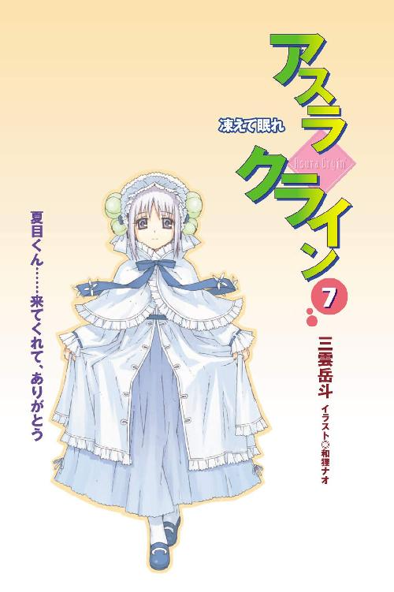
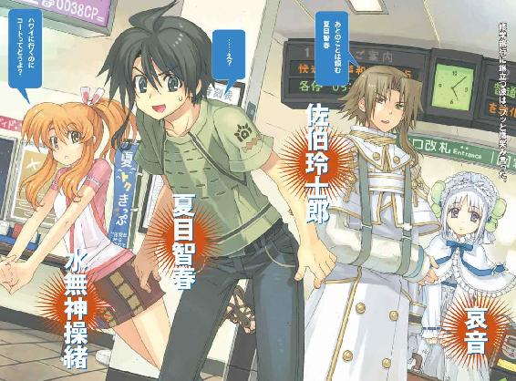
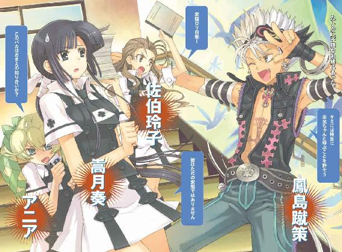
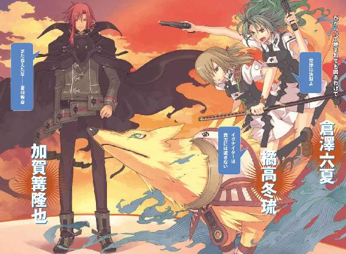
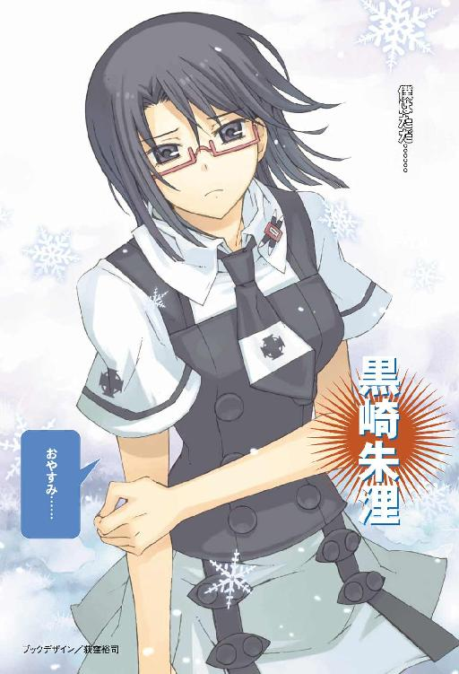
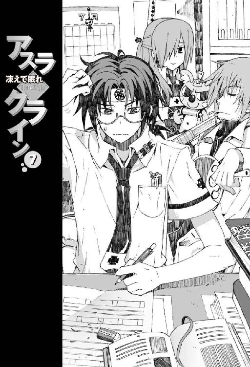
本書（電子版）に掲載されているコンテンツ（ソフトウェア／プログラム／データ／情報を含む）の著作権およびその他の権利は、すべて株式会社アスキー・メディアワークスおよび正当な権利を有する第三者に帰属しています。
法律の定めがある場合または権利者の明示的な承諾がある場合を除き、これらのコンテンツを複製・転載、改変・編集、翻案・翻訳、放送・出版、公衆送信（送信可能化を含む）・再配信、販売・頒布、貸与等に使用することはできません。
φ プロローグ
伝統行事、なのだった。
日曜日。早朝。午前五時。各駅停車しか止まらない、田舎のちっちゃな新幹線停車駅。
通勤ラッシュなどとは無縁の、いつもならガラガラに空いた改札前に、なぜかこの日は数百人の高校生が大挙して押し寄せていた。私立洛芦和高校の生徒たちである。
集まった生徒の約半分は制服で、それぞれが巨大な旅行カバンを引きずっている。彼らはいちおうクラスごとに分かれていて、列の先頭には旗を持った委員長らしき人物の姿もある。
一方、残った半分ほどの生徒たちは、ほとんどが手ぶらに近い軽装だ。『一路平安』『ボン・ヴォヤージュ』『必勝』などと書かれた横断幕やら万国旗やらを広げている生徒も、いるにはいるが少数派。残りは普通に記念写真を撮ったり、お守りやら差し入れのお菓子やらを顔見知りの相手に渡している。
ほかに乗客の姿はほとんどないが、妙に浮ついた感じの高校生が、これだけの人数集まるとかなり騒々しい。おまけに誰かが持ち込んだスピーカーから大音量で校歌が流れていたり、応援団員が気張った声を上げていたりして、ちょっとしたお祭り騒ぎなのは間違いなかった。
これでよく苦情が出ないものだと感心する。たぶん毎年のことなので、近所の住人や駅員たちも慣れているのだろうと思う。
『だいたい大げさだよね。今どき修学旅行ぐらいで』
まだ少し眠そうな目をこすりながら、呆れたようにつぶやいたのは操緒だった。
かつて僕の幼なじみだった少女の幽霊は、ゆらゆらと空中を漂いながら、ふわ、とやる気のないあくびを洩らした。せっかくの休日の早朝に、こんなわけのわからない行事のために叩き起こされたのが不満なのだろう。集まったほかの生徒たちを冷ややかな表情で見下ろして、ぶつぶつと不平不満を垂れ続ける。
『なにが悲しくてほかの学年の旅行の見送りなんか......』
まあたしかに、と僕は心の中だけで同意する。
そう、これは修学旅行なのだった。
ただし旅行に行くのは僕らの学年ではない。一学年上の先輩方。洛芦和高校二年生、九クラス総勢二七九名の皆様である。僕たちはただ、彼らの見送りにきただけだ。
いつから始まったのか知らないが、洛高には、修学旅行に赴く生徒たちを、部活の先輩後輩や卒業生が駅まで見送りに来るという伝統行事があるのだった。
実際なんの役に立つのか、よくわからないイベントではある。
毎年、お守りを渡すついでに意中の先輩に告白する女子生徒が続出する、というのなら話は別だが、そういうわけでもないらしい。だから見送りの挨拶といっても、土産をたかるくらいしかすることがない。
「でも修学旅行といっても、いちおう海外に出るわけだしさ」
やはり見送りは必要だろうと、半分は自分に言い聞かせるつもりで僕はつぶやいた。
これからの約一週間、洛高の二年生とは会えないのだ。だからなんだと訊かれても困るが、せめて普段から世話になってる部活の先輩あたりには、挨拶しておくのも悪くないと思う。
しかし操緒は、はぁ、と疲れたようにため息をつき、
『海外旅行っていってもハワイでしょ。そんなの、こないだの科學部の合宿とたいして変わらないよ。真珠湾に奇襲にいくんじゃないんだから』
「おまえな......」
なんてことを言い出すんだ、と僕は頬を引きつらせた。ほかにもっとマシな喩えはなかったのか。怒られるのではないかと焦る僕を、操緒はつまらなそうに見ていたが、やれやれと肩をすくめる仕草をして、
『まあ、でも飛行機が墜ちるかもしれないしね』と言った。
それを聞きつけた周囲の生徒たちが、ぎょっとした表情で振り返る。
「だからそういう不吉なことを言うのはやめろって」と僕は嘆息。
それでなくても操緒は幽霊であり、しかも彼女の本体は、三年前の飛行機事故に巻きこまれて行方不明になっているのだ。縁起の悪さは半端ではない。これから飛行機に乗ろうというときに見送りにきて欲しくない相手ランキングでは、日本全国でベストテンに入るのではないかと思う。
『乗ってた飛行機が堕ちたのは、智春だって一緒じゃない。朱浬さんだって、あのときあたしたちと同じ飛行機に乗ってたんでしょ』
「いや、それはそうなんだけどさ」
『そういえば朱浬さんと智春って、こないだも落っこちてたよね。ガス欠だかなんかで潮泉のお爺さんちの裏山に』
「......あったなあ、そういうの」
そのときの恐怖を思い出して、僕はどんよりした気分になる。あれは機巧魔神の拡張機能を奪い合った事件のときだ。雪原瑤に追われて、朱浬さんの飛行ユニットで飛んで逃げたまではよかったが、途中いろいろあって僕たちは上空から墜落したのだ。
なぜあんな目に遭って生きていられるのか、自分でも不思議だ。あの一件以来、僕の高所恐怖症が悪化の一途を辿っているのは間違いない。
『てか、実は智春って、空を飛んでまともに着陸できたことは一度もなくない？』
「う......いや、そんなはずは......」
妙に冷静な操緒の指摘に僕は沈黙した。いわれてみればそんな気もする。教会の屋根をミサイルでぶち抜いて落下した、のは、まともな着陸とはいわないのだろうな、やはり。
『どうするの？ 来年は智春たちも修学旅行に行くんでしょ。飛行機乗れないじゃない。智春、高所恐怖症だし、墜ちるし』
「まだ墜ちると決まったわけじゃないだろ。修学旅行の行き先が変わるかもしれないし」
『よっぽどなにか問題がないと、来年いきなり変わったりしないよ。旅行代金だって積み立ててるんだし。少なくとも電車やバスで行ける範囲になるってことはないでしょ。だいたいそういう後ろ向きなこと言ってる時点で危ないよ。墜ちるね、これは』
「なんでだよ!?」
僕は憮然としてつぶやいた。しかし不安になってきたのは事実だった。そんなに何度も墜ちてたまるか、と思いつつ、自分のこれまでの不幸さを思い出すと、あながちあり得ないことではない気がしてくる。いっそ旅行は諦めたほうがいいのかもしれんなあ、と情けないことを僕が考え始めたとき、
「こら」と背後から誰かに小突かれた。
振り返ると、僕のすぐ傍に、三つ編みメガネの怪しいエセ委員長風女子生徒が立っていた。
第二生徒会長の倉澤六夏である。顔の半分近くを覆い隠す優等生メガネの下から、彼女は無表情に僕を睨んで、「キミね、こういう場所でおちるおちるって連呼するんじゃないわよ。ここには受験生だって来てるんだから」
「あ、はあ......すみません」
そういやこのヒトいちおう三年生なんだよな、と思い出しながら、僕はいちおう謝った。そんな細かいことを気にするやつは、よその学年の修学旅行の見送りになんか来ないのではないかと思ったが、それは口に出さないでおく。どうせ六夏だって、そんな繊細な神経の持ち主ではないくせに。
そんな僕の不満を読み取ったように、六夏がジロリと僕を睨めつけた。
「六夏......先輩は、ひかり先輩のお見送りですか？」
軽い身の危険を察知した僕は、咄嗟に話題を変えようと思って口を開いた。
「見送りといえば見送りだけど」と、六夏は平坦な声で言った。「忘れ物を届けにきたの」
「忘れ物？ ひかり先輩の？」
「ええ」
無表情を装った六夏の口元が、かすかにニヤリと緩んだような気がした。邪悪な気配を感じる笑みだ。
そんな六夏のすぐ背後に、ゆらり、と少女の輪郭が浮かび上がる。操緒と同じように、うっすらと透けた色素の薄い人影。天使を思わせる上品な顔立ちの幽霊だった。六夏に憑いている射影体の姫笹さんである。
『六夏。ひかりちゃん、いたわよ』
「え？ どこよ、姫笹？」
『券売機側の階段のところ。通路側から二列目』
姫笹嬢が優雅に指し示す方角を、僕たちは一斉に振り向いた。
出口近くの階段は、遅刻気味にやってきた生徒たちで混雑していた。ちょうどバスが着いた直後らしい。
運動部員とおぼしきムサい男子の群れに混じって、ふらふらと歩いている小柄な女子生徒の姿が垣間見える。垂れ耳ウサギのように左右に結んだ特徴的な髪型は、遠目でも見間違いようがなかった。美化委員長の沙原ひかり先輩だ。
不相応に大きな荷物を引きずる彼女の足取りは、普段よりもひときわ頼りなく見えた。特殊な能力を持つ悪魔の一族の末裔とは、とても思えない姿だった。こけそうだな、と不安に思いながら見ていると、期待どおりというべきか、誰かの荷物にけつまずいて彼女は大きくバランスを崩し、
「ひゃっ......」
「こら」
列から大きくはみ出して転びそうになったところで、六夏に襟首をつかまれる。
なにが起きたのかわからない様子で、ひかり先輩は大きく目を瞬いて、六夏がやれやれとため息をついた。
「六夏ちゃん？ あれ、夏目くんたちも？」ひかり先輩は困惑したまま僕たちに気づき、「あ、もしかして見送りに来てくれたの？」嬉しそうに目を輝かせる。
「まあね」
六夏は素っ気なくうなずいた。そして自分のバッグから荷物を取り出し、それをひかり先輩の首に引っかけた。ずっしりとした重量感のあるメカニカルな物体だ。
「え？ なに、これ？」
自分の胸元にぶら下げられた機械を見下ろして、ひかり先輩がおろおろと訊き返した。
「忘れ物よ」
六夏が感情のこもらない声で言う。しかし、ひかり先輩には心当たりがなかったらしく、
「忘れ物？ カメラ？」
「そう」と六夏がうなずいた。
たしかにそれはカメラだった。
プロのカメラマンが使ってそうな、巨大ズームレンズをマウントしたデジタル一眼レフだ。
重さ四、五キロはありそうな機械の塊を首にぶら下げて、小柄なひかり先輩は立っているだけでふらついている。
「あの......これって......なに？」
不安げな表情で質問するひかり先輩。六夏はそんな彼女にずいと顔を近づけ、
「カメラっていうのは写真を撮るための機械よ」
「そ、それはわかる......けど？」
「あのね、ひかり。あんたたちはこれからどこに行くの？」
「しゅ、修学旅行？」
「そうよ。旅行といえば、当然、同級生の普段は見られない姿が見られるわよね？ 私服とかパジャマとかスッピンとかすっ裸とか」
「そ、そうだね」
「しかも、あんたたちの行き先はハワイでしょ。ハワイといえばビーチ、ビーチといえば水着。というわけで、あんたはこれで金になりそうな同級生の水着写真を撮りまくってくるの。第二生徒会の会長としての命令よ」
「え、え!?」と、ひかり先輩は情けない表情を浮かべた。「金になりそうな同級生って......」
「そうね。まずは去年のミスコン上位だった連中ね。二組の大塚とか六組の藤井とか。あとはほかの学年の男子に片想いされてる女子を重点的に。いい身体してる男子のセミヌードなんかも欲しいわね。ラグビー部の中尾とか野球部の反町とか。あとは黒崎朱浬よ。あいつの写真は他校の男子に異様な高値で売れるから」
「わ......私が撮るの？ 黒崎さんの写真を？」
怯えたような顔でふるふると首を振るひかり先輩。
「大丈夫よ。いくらあいつが重火器満載の一人機甲師団でも、写真撮られたくらいでミサイルぶっ放したりはしないから。あの目障りな改造人間、顔しか取り柄がないんだから、せいぜい利用させてもらわないと」
どうせ他人事だと思っているのか、六夏は無責任に好き勝手なことを言う。だらだらと汗を流して青ざめるひかり先輩。僕はひっそりと彼女に同情した。たかが盗撮写真でも、被写体によっては命の危険があるのだ。隠し撮りしたくらいでミサイルを撃ちこまれたら割に合わない。そんな修学旅行は嫌すぎる。
しかしひかり先輩が冷や汗を流していたのは、実はそれだけが原因ではなかったのだった。
「誰が、目障りなんです？ 会長さん？」
おっとりとした声に背後から呼ばれて、六夏が「うっ」と身構えた。振り返った彼女の目の前には、モデルのような長身のでたらめな美少女が立っていた。
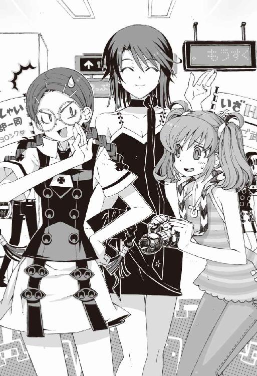
肩口で切り揃えた艶やかな黒髪。小さな卵形の頭部。端正な顔立ち。まさしく憧れのお姉さんという雰囲気の柔らかな微笑。しかしそれらはすべて表向きの姿だ。
彼女の正体は、六夏が一人機甲師団と呼んで恐れていた恐怖の改造人間なのだ。
科學部部長代理の黒崎朱浬、その人である。
「おはよ、トモハル。操緒ちゃんも。見送りに来てくれたの？」
少し外国人風のアクセントで僕たちを呼んで、朱浬さんはにこやかに手を振った。制服姿の今の彼女は、こうして笑っているぶんにはちょっと美人なだけの普通の女子高生に見える。が、
「ええ、まあ......」
僕は曖昧にうなずいて、それから朱浬さんが引きずっている荷物に目を向けた。
思わずまじまじと見てしまう。
べつに怪しいというわけではなかったが、一言でいえば朱浬さんの荷物は多かった。
旅行だから荷物が多いのは当然といえば当然だが、それにしても多すぎる。特注品としか思えない巨大なスーツケースが、ざっと数えただけで一ダースはある。これが全部、朱浬さん一人の荷物なのだろうか。
「ちょっと、黒崎朱浬？ なによこの荷物？ あんた、修学旅行になにを持ってく気？」
僕と同じように驚いた顔で、六夏が朱浬さんを問い詰める。
朱浬さんはおっとりと微笑んだまま、
「べつに普通ですよ。着替えとか」
「着替え!?」
六夏の声が裏返る。気持ちはわかる。たかが一週間足らずの修学旅行でスーツケース十二個の着替えなんて、アンタどこの王侯貴族だ。
そして朱浬さんはさらに指折り数えながら、
「あとはショットガンの弾とグレネードと予備のミサイル、念のため飛行ユニットとガトリングガンも」
「あんたねえ......」脱力したようによろめきながら六夏がうめく。冷静な優等生の仮面が剥がれて地が出ている。
「なんで修学旅行にそんな弾薬満載で出かけてんの!?」
「護身用です。海外は治安悪いんですから」
「どこのバカが護身用にグレネード持ち歩くのよ。そんなんで通関はどうすんの？」
「うふふ、その辺は科学狂会のほうでちょっと」
「......あんたたち、なんか向こうでヤバい仕事とか企んでるわけ？」
「いえ、べつに普通ですよ。これくらい。女子は荷物多いんですから」
「んなわけねーでしょうが。たかがハワイ旅行なんだから。ノルマンディーに上陸しようってんじゃないんだから」
なんでみんな第二次世界大戦にこだわるんだろう、と疑問に思いながら、僕はイライラとつぶやく六夏の横顔を見ていた。それにしても、ホントに仲悪いな、この二人は。
彼女たちの間に挟まれたひかり先輩が、いつもの困った顔でオロオロしている。姫笹嬢と操緒は他人のフリをして成り行きを見守っている。
やたら目立つ女子生徒二人の口論に、駅構内で騒いでいたほかの生徒たちも気づき始めたようだった。彼らは、朱浬さんたちの妙な迫力に怯えたように、遠巻きに僕たちを眺めている。
そんな生徒たちの輪を抜け出して、一人の男子が近づいてきたことに僕は気づいた。
純白の改造学生服に身を包んだ、暑苦しいくらい美形の男子生徒だった。やはり彼の背後にも、重力を無視してふわふわと漂う、透けるように色白の少女の姿がある。そして、
「なんの騒ぎだ、黒崎。そろそろ集合時間だぞ」
彼は言い争う朱浬さんたちの間に、なんの恐怖も躊躇いもなく割って入った。さすがというべきか、やはり彼も普通ではないのだった。
「玲士郎？」佐伯兄の呼びかけに気づいて、朱浬さんが、あら、と振り返る。
「ああ、そうか......佐伯家のお坊っちゃん、あんたも修学旅行なんだっけ？」
六夏も驚いたように眉を上げた。彼女の皮肉っぽい物言いを、佐伯兄は気にした様子もなく、
「ええ。しばらく学校を不在にしますが、旅行中の洛高生の警護も、我が第一生徒会の務めですので」冷静な声音で淡々と答える。
六夏は、堅苦しい佐伯兄の返事に辟易したように、はっ、と息を吐き、
「はいはい。こっちのことは心配しなくていいから、せいぜい楽しんできなさいよ。あんたがいなくても、ガッコのことはマジメで有能な第三生徒会長サマが仕切ってくれるから」
無責任な口調でそう言った。オマエもいちおう会長だろ、とつっこみたくなるようなセリフだったが、佐伯兄は敢えて無視したのか、
「そうですね」
と平然とうなずく。六夏は黙って唇を歪めただけだった。
「うふ、じゃあね、トモハルと操緒ちゃん。行ってくるわ。あとよろしくね」
くすくす、と笑いながら朱浬さんが僕たちに手を振った。
「あ、はい。気をつけて」
『お土産、期待してますね』
ようやくまともな見送りらしくなったことに少しホッとしながら、僕と操緒も手を振り返す。
それはそれとして朱浬さんが、あの大量のスーツケースをどうやって運ぶつもりなのか気になっていたのだが、その疑問もすぐに解明された。僕たちから離れた朱浬さんは、にこやかに微笑みながら、近くにいた同級生の男子生徒に次々に声をかけていったのだ。
そこでどんな会話が交わされたのかは謎である。僕たちにわかるのは、彼女に話しかけられた男たちが、先を争うようにして朱浬さんのバカでかいスーツケースを抱えて運び始めたということだけだ。脅されて嫌々、という感じではなく、尻尾を振る犬のような表情だった。働きアリと女王の関係を、人類に置き換えたらこんな感じなのかもしれない。
僕が朱浬さんの恐ろしさを再認識しながら、呆然と彼女の背中を見送っていると、
「あ、あの......じゃあ、私もそろそろ行きますね」
ひかり先輩に控え目に声をかけられた。
頼りなく立ち尽くす小柄な先輩は、今の騒ぎだけですでに疲れたような表情を浮かべていた。首にカメラをぶら下げた彼女を、僕は少し不安な気分で見下ろし、
「先輩、あんまり無理しないでくださいね」
思わずそんなことを言ってしまう。
「うん、ありがとう」
ひかり先輩はそう言って力なく微笑み、改札口のほうへ歩いていった。実に心細い光景だった。幼い娘を初めてのおつかいに出す父親の気持ちがわかる気がする。
彼女たちが立ち去ってしまうと、残った見送るべき相手は一組だけだ。
「夏目智春」
気障っちい声で名前を呼ばれて、僕は佐伯兄のほうを振り返った。少し緊張しながら彼を見つめる。朱浬さんとは対照的に、佐伯兄の荷物は多くない。小振りな旅行カバンがひとつだけ。佐伯兄はそれを左手で軽々と持っている。そして彼の右腕は、ギプスで固定され肩から包帯で吊られていた。骨折しているのだ。
「あ、あの......」
なにか挨拶しなければと思うのだが、適当な言葉は思いつかなかった。途方に暮れる僕に、佐伯兄はフッと微笑みかけ、
「あとのことは頼む、夏目智春」
「......え？」
「洛高のことは任せたと言ってるのさ。悪いが、ついでに妹の面倒を見てやってくれ」
そしてコートの裾を翻らせて、佐伯兄は立ち去っていく。同性の僕の目から見ても、恰好いいといえなくもない姿だった。『ハワイに行くのにコートってどうよ？』と操緒が小さくつぶやいていたが、それは聞かなかったことにする。
佐伯兄に憑いている射影体の哀音が、純白のドレスの裾を広げて僕たちに優雅に一礼した。
柔らかな髪を揺らしながら、彼女はゆらゆらと佐伯兄を追う。
見送りに集まった人々の喧騒をすり抜け、音もなく飛び去る彼女の姿は、お伽噺に出てくる優美な妖精のようだった。その美しい光景は、残像のように僕の心に強く焼きついた。
操緒もめずらしく文句を言わず、完全に姿が見えなくなるまで、黙って彼女たちを見送っていた。
電車の到着を予告するアナウンスが流れ、旅行に行く生徒たちが次々に改札をくぐっていく。
彼らはこのあと電車を乗り継いで空港まで行き、そしてそのまま日本を発つのだ。
五泊七日の修学旅行。その間、洛高の二年生は丸ごと不在だ。
それはつまり、その期間、洛高の戦力が、大幅に減少するということでもあるのだった。
○
二年生が出発してしまうと、駅構内は急に閑散とした雰囲気になった。
もともと閉会式をやるような正式なイベントではないのだ。見送りに集まっていたほかの学年の生徒たちは、ぽつんと取り残されたような気分のまま、散り散りになってそれぞれ家路につき始めていた。なにやら妙に虚しい気分で終わってしまう行事だった。この虚しさが伝統となって引き継がれ、イベントを継承する原動力になるかもしれなかった。
「さて、夏目智春......これからどうする？」
六夏が、徒然に立ち尽くす僕を見上げて訊いてきた。僕は警戒して彼女を見返す。どうする、と僕に訊かれても困るのですが、もしかしてまたなにか企んでいるのか、この人？
「朝ご飯、まだ食べてないでしょ。どっかファミレスにでも寄ってく？ もちろんあんたの奢りだけど」
「嫌です」
僕はきっぱりと主張した。どうせそんなことだろうと思った。生徒会長の三年生が後輩にメシをたかるのは、どう考えても変だろう。
六夏は、ちっ、と舌打ちして、
「なによ。使えないわね」と悪態をつく。そういう性格の先輩なのだった。ホントなんでこの人が生徒会長なんかやってんだろうな。
じゃあね、と言い残して帰っていく六夏を、僕は救われたような気分で見送った。
周囲はさっきまでの混雑が嘘のように空いていた。残っている生徒の数はまばらで、ようやく早朝らしさが戻ってきた感じだ。
バイトの時間にはまだ余裕があるが、帰宅して二度寝するのは良くない気がする。どうやって時間を潰そうか、と考えて、ふと妙な気分になる。
なにか大事なことを忘れているような感覚。
「あのさ......」
『ん？』
すぐ隣にいる操緒を見上げて、相談しようと僕は口を開きかけた。そのとき誰かに名前を呼ばれたような気がした。振り返ると、大げさに手を振っている人影が見えた。見知ったクラスメイトの顔だった。樋口と杏、それに嵩月だ。
「おーい、智春。おまえも来てたのか。朱浬さんにちゃんと挨拶したか？」
僕と同じ科學部員の樋口が、軽薄な顔立ちに軽薄スマイルを浮かべて近づいてきた。人混みのせいで気づかなかったが、どうやら彼らも、お見送りイベントに参加していたらしい。
「うん、いちおう。杏は陸上部の？」
「そうだよっ！ 先輩たちにお土産をおねだりしてきたの。いいよね、ハワイっ。かめはめ・はーっ！」
そう言って杏は、怪しげな拳法の如きポーズをとって大きく笑った。朝からいつもどおりのハイテンションな娘である。どうでもいいが、それはたぶんハワイではないと思うぞ、杏。
そんな杏の隣で、黒髪ロングの美少女が静かに微笑みながら会釈する。
「おはよう、夏目くん。水無神さんも」
「あ、ああ......おはよう、嵩月」
『おはよー。嵩月さんも朱浬さんのお見送り？』
「はい......寂しくなりますね、これからしばらく」
嵩月は儚げな表情で目を伏せた。まともな壮行会らしい言葉をようやく聞いた気がしたが、操緒は、大げさだなあ、と明るく笑い、
『そんなたいしたものじゃないよ。ハワイだもの』
「そうそう。モスクワ遠征に行こうってんじゃないんだから」
笑いながら僕がそう言うと、嵩月は生真面目に眉を寄せ、「モスクワ？」と怪訝そうにつぶやいた。冗談のあまり通じない娘さんなのだ。まあいいけど。
嵩月はまだ少し説明して欲しそうな顔をしていたが、その前に樋口が僕の肩を叩いた。
「このあとヒマだろ、智春。メシ喰ってから帰ろうぜ」
「ああ......うん、それはいいんだけど」
僕は歯切れの悪い口調でつぶやく。不思議そうに首を傾げる樋口。
「なんだ？ べつに奢ってくれとは言わないぜ？」
「あたりまえだ。違う、そうじゃなくて。なんか忘れてるような気がするんだよ」
「忘れ物か？」
「あ、いや......なんていうか、誰かと約束があったような......」
もやもやした気分を抱えて僕はつぶやく。苦労して覚えたはずの単語が出てこないときに似た居心地の悪さだ。しかも早く思い出さないと、なぜかヤバイことが起きそうな気がする。
地の底から響いてくるような低い声で、僕の名前が呼ばれたのはその直後だった。
「......なーつーめー」
うわ、と驚いて振り返る。樋口たちも、ぎょっとしたような表情を浮かべていた。操緒が、あ、と声を洩らす。
立っていたのは、目鼻立ちのくっきりした、勝ち気そうな女子生徒だった。
秀でた額に形のいい眉。普通にしていれば間違いなく美少女だ。しかし今の彼女はむっつりと頬を膨らませ、怒気をはらんだ瞳で僕を睨みつけている。
「さ、佐伯......？」
僕はうわずった声でつぶやいた。第一生徒会長の妹である佐伯玲子は、そんな僕を睥睨し、
「このあたしをほったらかしにして帰ろうなんて、いい度胸ね、夏目？」
「あ、いや......それは......」
違うんだ。忘れていただけなんだ、と言おうとしたが、それを口にしても彼女の怒りに火を注ぐだけという気がしたので、僕は黙った。
「お兄様が旅行で不在の間、あんたが私の身の回りの世話をしてくれる約束だったわよね？」
佐伯妹がゆっくりと訊いてくる。僕はうなずく。たしかにそういう約束になっていた。佐伯兄もさっきそう言っていたではないか。妹の面倒を見てやってくれ、と。
「いつまで待ってもあんたが迎えに来ないから、お兄様のお見送りができなかったじゃない！ どうしてくれるのよ!?」
ただでさえキツい眼差しをさらに吊り上げて、佐伯妹が言った。たしかにそれは悪いことをしたと思う。しかし兄貴のほうはあまり気にしていなかったようだし、見送りぐらい自分ちの玄関で済ませておけよと思わなくもない。
「......なんか言った？」
「いやべつになにも」と僕は首を振った。「あのさ......それより」
「なによ？」と佐伯妹。
「痛くないのか、足？」
僕は彼女の足首を指さした。仁王立ちしている佐伯妹の左足には、白い包帯が大げさなくらい巻かれている。
佐伯妹は、ひくっ、と唇の端を引きつらせ、
「痛いに決まってるでしょうがっ！」
ずだん、と乱暴に足を踏み出して、佐伯妹は一瞬泣き出しそうに顔を歪めた。意外に間が抜けたところもあるのだ。
「あ......あんたが......迎えにこなかったせいで......っ！」
声を震わせながら、佐伯妹が言う。そんな状態で駅まで歩いてきたのかと思うと、さすがに申し訳ない気分になってくる。この女の意地っ張りなのも相当なものだ。
「あー、わかった。悪かったよ。肩を貸すからさ、つかまれ。な」
僕はため息をつきながら、佐伯妹に歩み寄ろうとした。それを制止するように手を伸ばし、彼女は僕を睨んで言った。
「おんぶ」
「......は？」
「足が痛くて歩けない。おんぶして」
うげ、と嫌な顔をしようとしたところを睨まれて、僕は細くため息をついた。仕方なく佐伯妹に背中を差し出すと、彼女は容赦なく全体重を預けてくる。
身長のわりに細身の佐伯妹だが、さすがに人一人を背負って軽々というわけにもいかず、
「う、意外におも......」とつぶやきかけて、
「四十五キロは重くないっ！」
耳元で自爆気味に叫ばれてしまう。
ふと気づくと、事情を知らない樋口たちが、ぽかんと呆気にとられた顔で僕を見つめていた。瞳にいくつもの「？」マークを浮かべた杏と、気のせいか、やけに無表情な嵩月。
彼らが我に返る前にこの場を離れたほうがよさそうだった。
樋口たちに一方的に手を振って、僕は足早に歩き出す。
僕がこうして佐伯妹の面倒を見ることになってしまった理由。それをきちんと順序立てて説明すると、少しばかり面倒な話になってしまうのだ。
そう、あれは期末テストの結果発表の翌日。
僕が第二のプラグインを手に入れる数日前のことになる──
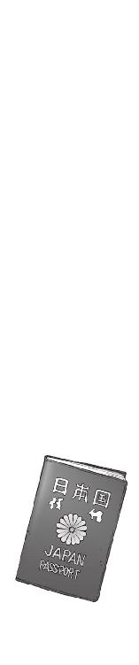
一章
死にたくなるくらい暑い午後だった。
すでに夕方近いというのに空からは強烈な陽射しが降り注ぎ、校庭の芝生がゆらゆらと蒸気を噴き上げている。
一学期もそろそろ終盤に迫った七月某日。不安だった期末テストもどうにか乗り越え、あと十日あまりで夏休み。そんなある日の放課後である。
西陽が直撃する科學部の部室に戻る気になれずに、僕と操緒は、購買部近くの自販機の隣に屈みこんでいた。渡り廊下からの風が吹き抜けるこの場所は、コンクリートの壁が冷たくて気持ちいいのだ。
『修学旅行？』
胡乱な口調でつぶやいたのは、退屈しのぎに掲示板の予定表を眺めていた操緒だった。
『二年生って朱浬さんたちの学年だよねえ......今週の週末から？ なんでこんな夏休みの直前になって旅行なんかいくのよ？』
実にもっともな疑問だと思う。しかし予定が決まってしまっているのだから、今さら文句を言ってもどうしようもない。
「うちの学校は毎年だいたいこの時期なんだってさ」
紙コップの底に残った氷をガリガリと噛み砕きながら僕は答えた。
『だからなんで？』と操緒。
「誰かに聞いた話だけど、修学旅行の直後って授業があんまり進まないらしい。生徒も教師も旅行ボケみたいな感じで」
『んー？』
「だから旅行のあとはいっそそのまま、なし崩し的に夏休みにしちゃえば問題ないってことになったとかならないとか......」
『ほんとにぃ？』
嘘くさーい、と眉間に皺を寄せながら操緒が言った。僕は黙って肩をすくめる。個人的にはわりと信憑性の高い噂だと思っていたが、本当はたいした理由なんてないのかもしれない。
『てか、なんで行き先がハワイなの？ 真夏にハワイって変じゃない？ 泳ぎたいならその辺の海水浴場でいいじゃん』
「あ、それはたぶん安いんだと思う。旅行代金とか」
『そんな理由？ なんだかなあ......』
操緒がなぜかがっかりしたように肩を落とす。
そういえば僕が中学生のころの操緒は、今よりももっと完全な幽霊で、普通の人間の目には見えなかった。当然、中学時代の修学旅行には彼女は参加していない。せいぜいクラスの集合写真なんかに心霊写真っぽく写っただけだ。だから、いちおう生徒として参加できる高校の修学旅行を、実は彼女なりに楽しみにしていたのかもしれない。
そんな操緒を励ますつもりで、僕は努めて明るい声を出した。
「来年のことはわかんないけど、二年生が旅行に行ってくれるのはありがたいよ」
『え、どうして？』
「だって朱浬さんも第一生徒会の会長もいないってことはさ、その間はヤバイ事件に巻きこまれなくて済むってことだろ」
『まあね......』と操緒も同意する。
彼らが学校にいない間は、科學部や生徒会経由で持ちこまれる機巧魔神や悪魔関係の依頼を心配しなくて済む。ひかり先輩も不在ということで、六夏たち第二生徒会が余計なちょっかいを出してくる心配も少ない。それでなくても洛高には変人が多いのだ。その何割かが自発的に国外に出て行ってくれるというのだから、こんなありがたい話はない。くだらないトラブルに巻きこまれる可能性が激減して、無事に夏休みを迎えられそうだ。
『そうだよね』操緒は軽く肩をすくめて言った。『智春は、せいぜい今だけでも羽を伸ばしておいたほうがいいかもね』
「なんだよそれ？」
僕は憮然として訊き返した。せいぜい今だけ、とはどういう意味だ？
『だって、どうせ夏休みになったら科學部の仕事でこき使われるでしょ』
「ま......まだこき使われると決まったわけでは......」
『ホントにそう思う？』
「いや......」
思わない。夏休みなどという膨大な余剰時間を、あの朱浬さんが見逃すとは思えない。しかも今の科學部には、長く不在だった本来の部長までもが戻ってきているのだ。これからが科學部の活動の本番だとでも思っているのに違いない。
「なんでそういう人の喜びに水を差すようなことを言うかなあ......」
僕が恨みがましい目つきで操緒を見上げると、
『警告してあげたんだよ。ムダに期待してるとあとがつらいでしょ』
操緒は澄ました顔でそう言って、伸ばした人差し指をお説教モードで突きつけてくる。僕の幼なじみでもあるこの幽霊は、妙にお姉さんぶって僕の世話を焼きたがるクセがあるのだ。
『だいたい智春は見通しが甘いんだよね。そういうことだから毎回毎回ワケわかんない事件に巻きこまれて不幸な目に遭うのよ。あと年上の女のヒトに弱すぎ。こないだの地下水路のときだってひかり先輩にデレデレデレデレ──』
「ま、待った、操緒」
話がややこしい方向に行きそうになったので、慌てて操緒を制止した。んっ、と不満そうな顔で僕を睨む操緒。
『なによ？』
「えーと、あ、お客さんが......」
とにかく話題をそらさなければと僕は慌てて周囲を見回し、とりあえず思いついたことを口にしてみる。操緒はさすがにきょとんとした様子で、
『は？』
「ほら。あれ」
僕が指さしたのは、来客用の昇降口に向かって歩いてくる人影だった。
私服姿の若い男である。
年齢はたぶん僕とそれほど変わらない。だが、高校生という感じではなかった。銀髪っぽく染めた髪を逆立てて、着ているものは素肌に革ジャンである。はだけた胸元のみぞおち付近に、逆さ十字架の入れ墨がのぞいている。あの姿形で入学させてくれる高校があるとはちょっと思えない。
本人的には恰好いいつもりなのだろうが、美形と呼ぶには少々品のない顔立ちだ。不良という雰囲気でもない。パンクバンドでプロを目指しているコンビニの店員とかそんな感じ。
操緒がぼそりと『頭悪そう......』と素直な感想を洩らす。実際、あまり賢そうには見えなかった。
その頭の悪そうなパンク少年は、昇降口に辿り着いたところで立ち止まり、ゆっくりと周囲を見回した。そして僕たちに気づいて動きを止めた。
なにやら嫌な予感がした。
『こっち来るよ』
操緒が僕の耳元で囁いた。
彼女の言うとおり、ブーツを脱ぎ捨てた少年が、つかつかと僕たちのほうに歩み寄ってくる。
操緒に失礼なことを言われて怒っている、という感じではなかった。かといって、友好的とも言い難い。ぎらり、と犬歯を剥いて、ふてぶてしく笑っている。明らかに好戦的な笑みだ。
できればあまり関わり合いになりたくはなかったが、話もせずに逃げ出すというのも気が引けた。それに正直に言えば、僕は彼のことをそれほど恐いとは思わなかった。
なにしろ洛高に入学して以来、僕は心底おっかない連中と数え切れないくらい顔をつき合わせてきたのである。多少は慣れるというものだ。冬琉会長や雪原瑤、それに嵩月の親父さんや八伎さんといった人々よりも恐い相手というのは、探してもそうそう会えるものではない。
特に怯えた様子もなく自分を見ている僕に気づいて、少年はニヤリと愉快そうに微笑んだ。
そして妙に馴れ馴れしい態度で、
「よォ、演操者」と僕を呼んだ。
「な!?」
僕と操緒の表情が強張った。この少年は僕が演操者だと知っている。つまり機巧魔神の存在を知っているのだ。ただの訪問客ではない。
そして少年は、そんな僕たちの反応に満足したように、ククッと笑った。
気取った笑みだが、今ひとつサマになっていない。たぶん元の顔立ちと、ファッションセンスに問題があるのだと思う。
「そう警戒するなよ。ちょっと道案内を頼みたいだけだ」
『道案内？』
訊き返したのは操緒だった。少年はうなずき、彼女にぎこちないウィンクを返す。なんとも形容しがたい微妙な表情を浮かべる操緒。
そんな操緒の反応に気づかぬまま、少年はやたら親しげに僕の肩をバシバシ叩いて言った。
「そうだ。生徒会室まで頼むわ」
「せ......生徒会室......？」
咄嗟に僕の脳裏に浮かび上がったのは、一癖も二癖もある三人の生徒会長の顔だった。この学校の生徒会に関わって、これまで僕が無事に済んだことなど一度もないのだ。目の前の少年と、生徒会長ズの組み合わせを想像して、猛烈な胸騒ぎに襲われる。
死にたくなるくらい暑い午後。
どうやら僕が無事に夏休みを迎えられると、まだ確定したわけではないらしい。
○
「うちの学校の生徒会って、公認のやつだけで三つあるんだけど」
とりあえず少年を来客用のスリッパ置き場に案内しながら、僕は説明した。「知ってる」というのが彼の答えだった。
「べつにどこでもいいんだけどな......そうだな、神聖防衛隊とかってスカした連中がやってるのがあっただろ？」
「ああ......第一生徒会だね」
少し意外に思いながら僕はうなずいた。
神聖防衛隊というのは、ローマ・カトリック教会を後ろ盾に持つ洛高第一生徒会の別名だ。主に体育会系のクラブを仕切っており、校内の治安維持や生徒の安全保障を担当している。
だから、というわけでもないのだろうが、生徒会の執行部員はガタイのいい男子生徒ばかりで構成されており、ほかの生徒会に比べると規律や校則に厳格だ。
今の彼のような頭悪そうな恰好でのこのこ訪ねていったら、それだけでぶっ飛ばされてしまうのではないかと思う。
しかし少年は気にした素振りもなく、
「おう。それそれ」と言って僕に案内を促した。
本人がいいのならまあいいか、と僕は彼を伴って歩き出す。生徒会室の場所まで案内したあと、さっさと逃げ出してしまえば、それほど危険でもないだろうと思ったのだ。その直後、
「この射影体の女、オマエとどういう関係？」
僕の背後に浮かぶ操緒を指して彼は訊いてきた。
少しめずらしい質問だった。普通だったら操緒のことは、僕に憑いている幽霊という説明だけで済む。初対面の人間に、生前の操緒と僕の関係を訊かれたのはずいぶん久しぶりだった。
「えっと、操緒とは幼なじみなんだけど。前に住んでいた家がお互い隣同士で」
「ほぉ、幼なじみね......」
少年は感心したようにつぶやき、値踏みするようにジロジロと操緒のことを眺めた。そして彼女の制服の胸あたりに目をとめ、
「ああいう体型が好みなんか？」
「え、いや......体型って......」
ぴき、とこめかみに青筋を立てた操緒を、横目で見ながら僕は焦る。べつに贔屓しているわけではなく、客観的に見ても操緒の容姿は整っているほうだと思う。小柄な割に手足が長いし、少々透けているが、顔立ちだってその辺のアイドルと比べても遜色ない。そんな彼女の唯一のコンプレックスが薄っぺらい胸だった。実際、彼女が幽霊になる前から、ほとんど成長してない気がする。
しかし少年は、それを貶していたつもりではないらしい。むしろ満足げに僕に笑いかけ、
「いい趣味してるぜ、オマエ。この幸せものっ！」
乱暴に僕の首を絞め上げてくる。なんだそれ、と僕は困惑。操緒が僕の幼なじみなのは、べつに僕の趣味嗜好とは関係ないぞ。
「俺は鳳島だ。鳳島蹴策。よろしくな。えーと......夏目智春？」
僕の制服のポケットから勝手に生徒手帳を引っ張り出して、少年は僕の名を呼んだ。そして彼は、なにかに気づいたようにふと頭上を見上げ、
「ん、夏目？ どこかで聞いた名だな......まあいいや」
「はは......」
僕は笑って誤魔化した。機巧魔神のことを知っているような人間なら、うちの兄貴──夏目直貴の名前を聞いたことがあっても不思議ではない。しかし兄貴の名前を出すと話がややこしくなるのは確実だ。忘れていてくれたほうが僕としてはありがたい。
「えーと、鳳島は、佐伯あ......佐伯会長と知り合いなの？」
第一生徒会室は、一般の校舎から離れて独立した造りになっている。案内する道すがら、間を持たせるために僕は訊いてみる。
しかし鳳島は、その瞬間、露骨に嫌そうに顔をしかめた。
「会長ォ？ あのバカが今は生徒会長なんかやってんのか？ えっらそうに」
どうやら知り合いなのは間違いないらしい。鳳島は、ふと目つきを険しくして僕を睨み、
「そういや、オマエも演操者だよな。まさか玲士郎のとこの手下なのか？」
「手下？ 僕が？」
僕はきっぱりと首を振る。冗談だろ。
「生徒会とは無関係だよ。どっちかというと第一生徒会には前に殺されそうになったくらいで」
「ほぉ」
鳳島は嬉しそうに目を細め、僕の背中をバシバシと叩いた。そして、
「そうかそうか。オマエはやっぱいいやつだな。いや、俺も最初会ったときから玲士郎は気に入らなかったんだよ。ちょっとツラがよくて家が金持ちだと思って気取りやがってよ。しかも、美人の妹までいるって話じゃねえか。許せねえ」
なにやらひがみっぽいことを言う。佐伯兄が気取っているのは事実だが、妹はあまり関係ないのではないかと思う。しかし鳳島は、それがさも重要なことでもあるかのように、妹か、と繰り返しつぶやくと、
「なあ、夏目。オマエ、妹ってどう思う？」
「は？」
質問の意図が理解できずに、僕は沈黙する。鳳島は真剣な顔で腕を組み、
「妹だよ、妹。嫌いなのか？」
「え？ いや、べつに嫌いではないけど......」
僕が思い出したのは、苑宮和葉のことだった。ほんの数カ月前、うちの母親の再婚によって僕の妹という続柄になった中学生である。大の幽霊嫌いである彼女は露骨に僕を警戒しており、彼女が笑った顔を僕はこれまで見たことがない。なにかと難しいお年頃なのだ。彼女のことを考えるだけで、僕はどんよりと鬱になる。
しかし鳳島は、そんな僕の表情に気づきもせず、
「だよなァ。やっぱ妹は男のロマンだよなァ」
一人で勝手に納得してつぶやいた。少なくともロマンってことはないだろ、とは思ったが、
「妹ってよォ、いいよなあ。朝、寝坊してたら勝手に部屋に入ってきて起こしてくれたりよォ、普段は俺の悪口を言ってても、他人が俺をバカにしてたら涙目になって怒ったりするんだよな。俺がバレンタインでもらったチョコにやきもちやいたりしてよォ、エプロンなんかも似合うんだろうなァ......」
トロンとした目つきで妄想を語る鳳島を、操緒が害虫でも見るような目で眺めて言った。
『......なんなの、この人？』
「さぁ？」
僕は渋い表情で首を振る。どうやら鳳島蹴策という男、異様なほどに妹に憧れを抱いているらしい。しかもエプロンは妹と関係ないだろと思う。なんで僕の周りには、こうも次から次に新手の変態が集まってくるのか。
「だからよォ、俺は理想の妹を探し求めて常日頃から努力してたっていうのによォ、玲士郎の野郎、それを邪魔しやがって」
鳳島が恨みがましい口調でつぶやいて、僕はようやく納得した。そういうふうに話がつながるのか。
しかし、この男の理想の妹探しを邪魔するというのは、性犯罪を未然に防ぐというのと、だいたい同じような意味ではないのだろうか。それはどう考えても鳳島の逆恨みだろうと思う。
とにかく彼らの関係については、今のでなんとなくわかってしまった。残る疑問は、それほど嫌っている佐伯兄に、なぜ鳳島はわざわざ会いに行くのかということだ。
あまり知りたくないような気もするが、確認しておいたほうがいいのかもしれない。どうしたものかな、と僕が悩み始めたとき、頭上から誰かに声をかけられた。
「夏目？」
見上げると、階段の踊り場から同級生の女子が僕を見下ろしていた。目元のくっきりとした、気の強そうな少女だった。佐伯玲子だ。提出用のノートの束を抱えて、教室に運ぶ途中だったらしい。
ややこしい相手にややこしいところで会ってしまったと僕は苦悩する。このまま鳳島がなにも気づかず見過ごしてくれれば問題ないのだが、僕のそんなささやかな願いは、彼女の一言であっさりぶち壊しになってしまう。
「誰、その人？ 夏目の関係者？」
疑惑の目つきで鳳島を眺めて、佐伯妹が訊いてきた。
鳳島は、鬱陶しげに目を眇めて彼女を見上げた。そして、「うっ」と息を呑む。
「おい、夏目......あの女、知り合いか？」
「ああ......うん、同級生だけど」
「そうか。けっこう可愛いな」
そう言い残すと、鳳島は僕のことを放って階段をダッシュで駆け上がった。僕が止める暇もなかった。生徒会室への案内はもういいのだろうか。
「な、なによ......あなた？」
思いがけない鳳島の行動に、驚いたのは佐伯妹だった。駆け寄ってくる鳳島を、彼女は唖然とした顔で見つめた。逃げ出さないあたりが気丈な佐伯妹らしい反応だ。どうせなら悲鳴でも上げて逃げてくれたほうが、のちのち面倒にならないような気もするが。
「俺の名前は鳳島蹴策。キミには特別に、お兄ちゃんと呼ぶことを許そう」
革ジャンの裾を翻しながら、気取った口調で鳳島は言った。
「は？ お兄ちゃん？」
当然ながら佐伯妹は、いかがわしい物体を見るような視線で、鳳島の割れた腹筋を眺めた。しかし鳳島は、彼女の強張った表情を気にもせず、
「そのとおりだ義妹よ」と言った。
「はあ？」
「義兄弟の杯を交わす、という言葉もあるくらいだからな。俺たちが勝手に義兄妹の契りを交わしてもべつに問題ないだろう。歴史書にもあるじゃないか。『天に誓う、我ら生まれた家は違えども、暮らすのはひとつ屋根の下を願わん』とかなんとか」
「......いや、聞いたことないし。そんなの」
鳳島の勢いに少し圧倒されながらも、きっぱり言い返す佐伯妹。
僕は呆れながら彼らの会話を聞いていた。これが鳳島の言うところの妹探しというやつか。ただのタチの悪いナンパではないか。予想していたよりも遥かにひどい。佐伯兄が邪魔をするのも当然だ。
「それに悪いけど、兄なら間に合ってるわ。あなたよりもずっと素敵なお兄様がね」
佐伯妹が棘のある口調でそう言った。
「なに？」
彼女の言葉は、鳳島に予想外に大きなダメージを与えたらしい。う、と低くうめいて鳳島がふらふらと後退した。
「あ......あんた、もうすでに兄貴持ちなのか？ そうか......」
階段の手すりに頭をつけ、ぐったり肩を落としてうなだれる鳳島。その間、彼の心の中では、なにやら複雑な葛藤があったらしいが、
「わかった。俺も兄候補として、他人様の妹に手を出すわけにはいかねえ。あんたのことは諦めよう。まあ、ちょっと歳くってるし、胸のサイズも微妙だしな......」
「な!?」佐伯妹が眉を吊り上げる。「胸が微妙ってなによそれ!? 歳くってる？」
それはまあ怒るよな、と僕は佐伯妹に同情する。そもそも兄候補ってなんなんだ。
「ちょっと、夏目！ なんなのよ、こいつ!? あんたが連れてきたの？」
佐伯妹の怒りのとばっちりをくらって、僕は慌てて首を振った。
「違う違う。知らないよ。第一生徒会に用事があるっていうから案内してたところで......」
そこまで口にしたところで僕は自分の失言に気づいた。
案の定、佐伯妹は怪訝顔で僕を見返して、
「第一生徒会って......お兄様のところの？」
彼女のつぶやきに、驚愕の表情を浮かべたのは鳳島だ。
「......お兄様だと？ ちょっと待て、あんたまさか玲士郎のバカの妹か!?」
「バ、バカ!? うちのお兄様に向かってバカとはなによ、ヘソ出し男！ 白髪！」
「白髪じゃねえ！ なんてこと言いやがる、このデコ！」
「誰がデコかっ！」
小学生レベルの言い争いを始めた鳳島たちを、僕は途方に暮れながら見つめた。あまりにも不毛な光景だった。人と人が争うことの虚しさがよくわかる。
ふと気づけば佐伯妹は踊り場にノートをばらまいて、鳳島と取っ組み合いを始めている。
『止めた方がよくない、智春？』
さすがに不安になったらしく、操緒が僕に忠告してきた。まったく同感だった。
「ちょっと、二人ともやめろって」
急いで階段を駆け上がり、僕は鳳島たちの間に割って入ろうとした。だがしかし、
「邪魔するなっ」
「夏目は引っこんでなさい！」
二人に同時に怒鳴られる。そう言われても黙って見ているわけにもいかず、僕はうんざりしながら、彼らをどうにか引き離した。そしてようやく静かになったと思ったそのとき、
「あー......」
二階の廊下から近づいてきた人影に声をかけられた。
僕のよく知っている声だった。
窓からの陽射しを背中に浴びて、二人分の女生徒の輪郭が浮かび上がっている。
一人は均整のとれた美しいシルエット。ストレートの長い髪が陽光に透けて異様に綺麗だ。
もう一人は高校生にしてはやけに小柄な影。光を反射して宝石のように輝く髪は黄金。純白の肌は高価な磁器人形を見ているようだ。
その人形めいた幼い少女は、愛くるしい表情に似合わぬ尊大な目つきで僕らを見下ろし、
「なんの騒ぎだ、智春？」と言った。
嵩月奏とアニアだった。
彼女たちの存在に気づいた鳳島が、なにやら衝撃を受けた様子で、「うォ！」と呻いた。そしてそのまま逆光に浮かぶ女子二人を見上げ、瞳を輝かせて動きを止める。彼の視線はどちらかといえば、ちっこいほうの影に重点的に注がれていた。
「ん？」と眉をひそめるアニア。
僕と操緒はそれを眺めて顔をしかめた。
ますます嫌な予感がした。
○
本名はアニア・フォルチュナ・ソメシュル・ミク・クレウゼンブルヒ辺境伯令嬢。遠い昔に没落した家系とはいえ、れっきとした名門貴族の末裔である。
幼いころからの英才教育によって、語学堪能で数カ国語を自在に操り、その他の教科でも大学院生程度の学力を誇る。わずか十歳のお子様でありながら、洛高に留学生として迎えられたのもうなずける。
ただし彼女の専攻は黒科学。特に機巧魔神の専門家だった。彼女は悪魔。運喰らいと呼ばれる特殊な悪魔の一族なのだ。
身長は百四十センチそこそこ。あどけなくも端整な顔立ちは妖精のよう。中欧あたりの血統の特徴が色濃く出た、混じりけのない金髪と透き通った肌。ファッション雑誌に出てきそうな美少女である。ただし目つきは少々悪い。ふてくされたような顔がデフォルトだ。
それがアニア・フォルチュナという少女であった。
そしてそんな彼女を熱っぽい瞳で見上げる男が約一名。
「......夏目っ！」
その鳳島が、いきなり僕の胸ぐらをつかみ上げて迫ってきた。
「な、なんだよ!?」
「あ......あのちっこいお嬢さんは何者だ!?」
「ちっこいお嬢さんって......クラスメイトだけど」
「クラスメイト？ 高校生なのか、あの歳で？」
「飛び級......っていうか、留学生なんだよ。いろいろあって特例で......」
さすがにアニアの正体をばらすわけにもいかず、僕はいい加減な説明をした。しかし鳳島は、そんな苦しい言い訳を疑いもせず叫んだ。
「パーフェクトォゥ！」
「は？」
「彼女こそ、俺が長年探し求めていた理想の妹だ。少しでも兄貴の傍にいたいと願って密かに努力して飛び級してくるなんて、健気じゃねーか！ おまけにあの清純さと高貴さ。それでこそ俺の妹にふさわしいぜ。なァ、そうだろ!?」
「え、いや......それはどうかなあ」
アニアの場合、清純や高貴というよりは、尊大とか生意気とかって言葉のほうが似合うと思う。そもそも彼女が留学してきたのは王立科学狂会に要請されたからであって、間違っても鳳島の傍にいるためではない。
しかし鳳島は僕の返事など聞いてはいなかった。
気づいたときには、彼は再び猛烈な勢いで階段を駆け上がり、アニアの前に立っていた。そして懲りもせず、
「義妹よ」と叫ぶ。
『......バカ？』と呆れたようにつぶやく操緒。
僕は無言で同意する。おそらくアニアも瞬時に同じことを感じ取ったのだろう。自分の肩に置かれた鳳島の手を鬱陶しげに振り払い、
「なんだ、おまえは？」
冷ややかな口調でそう言った。
しかし鳳島は、奇妙に勝ち誇った笑みをニヤリと浮かべた。どうやら、アニアが自分に興味を持ってくれたのだと、彼女の言葉を解釈したらしかった。驚くべき自己中心的思想である。
「俺の名を訊いているのか、マイシスター？ ならば答えよう、俺の名は鳳島蹴策。キミのお兄ちゃんになるために生まれた男だ」
「............」
アニアは、普段から不機嫌そうな表情を更に歪めて鳳島を見上げた。青く澄んだ瞳の温度は、今や南極の氷床コアよりも冷たくなっている。そして彼女はその瞳をゆっくりと僕に向けた。
「おい、智春。このバカはおまえの知り合いか？」
「いや......特に知り合いというわけでは......」
「そうか。なら吸ってもいいな？」
白い犬歯を剥いてアニアが言った。運喰らいである彼女は、接触した相手の運気を吸って、自分自身の存在を保っている。つまりアニアに運気を吸われた相手は、もれなく不幸になるということだ。
普段は他人に影響がでないよう、長く使っている持ち物などにこもった運気を吸収しているアニアだが、もちろん人体から運気を直接奪うこともできる。その場合、下手したら命に関わるくらいの不幸が相手を襲うことすらあるのだ。
しかしアニアの正体を知らない鳳島は、なにか激しい誤解をしたらしく、
「す、吸う!? 俺から吸い出しちゃうのか!? 夏目、オマエ、こんないたいけな子どもにどんな教育してんだ。そんな初対面の男のなにかを吸っちゃうような......ぐぁっ！」
狼狽して大声で喚き続けていた鳳島が、不意に顔面を押さえてのけぞった。高速回転しながら飛んできたノートの角が、彼の額に突き刺さったのだ。
鳳島にノートを投げつけたのは佐伯妹だ。頬を赤くした佐伯妹は憤怒の形相で、
「いかがわしい妄想を学校の中で喚き散らさないでよ、変態ロリ白髪！」
「痛ってえな......」
額を押さえたまま鳳島が呻いた。
「なにしやがんだ佐伯のバカ妹！ こうして理想の義妹に巡り会えた今、オマエにはもう用はねえんだ。妬いてんじゃねえよ」
「誰が妬くかっ！」
佐伯妹が、怒りに肩を震わせながら声を低くする。ずかずかと階段を上がって至近距離から鳳島を睨め上げ、
「いいからさっさと学校から出て行きなさい、変態白髪。でなきゃ力ずくで叩き出すわよ！」
「ほォ、面白ェな」
やってみやがれ、と鳳島が表情を凶悪に歪めた。彼の瞳が淡い緑色に変色し、その背後でゆらりと空気が揺らめく。佐伯妹はそれに気づかない。危険な気配に、僕と操緒が息を呑んだ。
そのとき、
「うォ!?」
驚愕の表情を浮かべて飛び退いたのは、鳳島だった。
彼の眼前に突き出されたのは刃。灼熱の炎で作り出された真紅の刀身だ。
それを構えていたのは嵩月である。無言で事態を見守っていた彼女が、いきなり鳳島に攻撃を仕掛けたのだ。
「あっぶねェ......」
冷や汗を流して呻く鳳島。佐伯妹とアニアも呆然と目を見開いて、
「た、嵩月さん!?」
「お、おい......奏......？」
「下がって」
嵩月だけが冷静な声で告げた。彼女の長い黒髪が、噴き出す火炎の気流に乗って流れていた。
悪魔である嵩月の血液は、自らの意志に応じて摂氏数千度の地獄の業火に変わるのだ。炎に照らし出されて輝く彼女の横顔は、この世のものとは思えないほどに美しい。
「ちょ......ちょっと嵩月さん、なにやってるのよ、校内でそんな物騒な能力を使うなんて......いくら相手が変態だからって......」
佐伯妹がめずらしく動揺していた。第一生徒会長の妹である彼女は、嵩月の監視役を任されているのだ。嵩月が危険な存在だと判断したら、彼女を消滅させるように報告する義務がある。
しかし嵩月は、鳳島を無表情に見据えて告げた。
「彼はただの変態ではありません」
「......それって......変態の上にバカでロリってこと？」
動揺し過ぎてあまり意味のないことを口走る佐伯妹。嵩月は一瞬、いつもの困ったような顔になりながら首を振り、
「彼は悪魔です。雄型......男性タイプの悪魔の末裔」
『......え!?』
ぽかんとした表情でつぶやいたのは操緒だった。僕も困惑して言葉を失う。鳳島蹴策が悪魔というのは、いわれてみれば納得できなくもない。だがしかし、
『でも......第一生徒会に用があって来たって言ってたのに......？』
そう。そのせいで僕たちは鳳島を疑わなかったのだ。鳳島がもしも悪魔なら、わざわざ悪魔と敵対している第一生徒会を訪れる理由がないからだ。
その鳳島は、炎の剣を構える嵩月を憮然とした表情で見つめていたが、
「炎使いの悪魔......？」
なにかに気づいたように目を細め、
「そうか、オマエ、嵩月組の跡取りか......なんでそんな大物の娘が、佐伯の妹なんかとつるんでやがる？」
「あなたには関係ない。速やかに立ち去りなさい、鳳島蹴策」
嵩月は凛然とした口調でそう言った。鳳島は、ハッと好戦的な笑みを浮かべ、
「ヤなこった。オマエみたいなエロい体型の妹はいらん。俺はもっと未熟な果実が好きなのだ！ したがってオマエの命令を聞く義理もねえ」
「エ......ロ......!?」
嵩月がぴくりと肩を震わせた。彼女の背後にゆらりと陽炎が立ち上る。嵩月にしてはめずらしいことだが少し怒っているらしい。
鳳島はそれを平然と睨み返す。
彼の周囲に、雪の結晶に似た小さな氷の塊が浮かび上がる。
それは瞬く間に成長して、小型の野鳥ほどの大きさになった。四枚の翼を持つ氷の妖鳥だ。もちろん自然界の生物ではない。おそらく鳳島が魔力によって召喚したのだろう。見た目どおりの小動物ではなく、なんらかの特殊能力を持っていると考えて間違いない。
「魔精霊......」
嵩月が警戒するように小声でつぶやき、鳳島がニヤリと微笑んだ。氷の妖鳥は一匹ではない。六匹、七匹と次々に数を増やしていく。いくら嵩月でも、それらに一斉に襲われて捌ききれるかどうかは微妙だろう。ましてや佐伯妹を庇っての戦いとなると、圧倒的に嵩月が不利だ。
『智春、やめさせないと』
僕の耳元で操緒が囁いた。操緒に言われるまでもなく、止められるものならどうにかしたいと思う。鳳島を校内に招き入れてしまった僕の責任もあるし、生徒の大勢残っている校内で派手な魔法戦をされても困るのだ。なによりも二人の戦いのとばっちりを喰うのが恐ろしい。
「だけど、やめさせるってどうやって......？」
嵩月のような高位の悪魔同士の戦いを、どうすれば僕一人で止められるというのだ。生身で彼らの間に割りこんだりしたら、普通の人間は確実に死ぬぞ。
『 鐵は？』と操緒が気軽な口調で言った。
鐵は？』と操緒が気軽な口調で言った。
「喚べるわけないだろ、あんなもの」
僕は軽い頭痛を覚えて首を振った。学校内で機巧魔神みたいな目立つものを喚び出したら、それこそ取り返しのつかない大惨事になりかねない。その状況を想像してしまったのだ。
『じゃあどうするの？』操緒が唇を尖らせて言う。
「どうしたらいいと思う？」
僕は情けない顔で訊き返した。これでもけっこう焦っているのだ。
なにしろ嵩月の全身を包む炎は、離れた場所にいてもはっきり熱を感じるほどに勢いを増しており、対抗する鳳島の妖鳥も、それぞれが凶悪なカラスほどに巨大化している。あんなのが正面から激突したら、僕たちも巻きこまれて無傷では済みそうにない。
「痛て」
そのとき鳳島が、気の抜けたような声でつぶやいた。ふと見れば、小柄な金髪の影が鳳島の背後に忍び寄り、革ジャンをまくり上げた彼の腕に噛みついていた。
「......アニア！」
『やった、ニアちゃん！』
僕と操緒が喝采を送った。アニアは少し得意げに目を細め、不敵な表情で微笑み返してくる。
運喰らいの悪魔であるアニアは、嵩月たちのような直接的な戦闘力を持たない。その代わり、彼女は相手の運を吸う。もはや嵩月が本気で戦うまでもなく、鳳島には勝ち目が残されていないのだ。
それを知らない鳳島は、なぜかデレっとした表情になって、
「お......おい、どうしたんだ、マイシスター。けっこう痛いぞ。しかし、これがオマエの求めるスキンシップだというのなら、俺は敢えてこの腕を差しだそう！」
「......ふん」
空気の読めない鳳島の言葉に、アニアは顔をしかめて彼から離れた。ぺっ、と唾を吐くような仕草でため息をつき、
「やはり、悪魔の運気は不味いな。この貸しは高くつくぞ、智春。口直しに今日の夕食は、美味いものを振る舞ってもらうからな」
「ああ......うん。アニアの好物を用意するよ。肉料理でいいんだろ？」
「うむ。子羊のテンダーロインだ。ステーキにするなら焼き加減はミディアムレアでな」
情け容赦のないアニアの要求に、僕は軽く肩をすくめて苦笑する。そんないい肉、僕だって生まれてこの方、食べたことない。
しかしアニアの手柄を考えれば、そのくらいの出費はやむを得ないだろうと思う。
そんな僕たちのやりとりを聞いて、予想外の動揺を見せたのが鳳島だった。目の前で炎の剣を構える嵩月を無視して、彼は青ざめた顔で僕を睨み、
「お......おい、夏目。どういうことだ？」
「え？」
「なんでオマエが、マイシスターと一緒に晩飯の約束をしてるのかと訊いているんだっ！」
「いや、アニアは僕の下宿先に居候っていうか、ホームステイしてるんだけど......」
鳳島が憤慨している理由がわからないため、僕は事実だけを淡々と答えた。そもそもアニアはおまえの義妹じゃないだろう。
「居候!? オマエ、そんな、すでにマイシスターとひとつ屋根の下で暮らしていたってのか？」
鳳島が肩を震わせた。彼の全身から凶悪な気配がまき散らされる。僕にすらはっきりわかるくらいの禍々しい魔力の奔流だ。
「違う。そういうんじゃなくて、アニアはただのホームステイだって......」
「嘘つけェっ。ラブコメの主人公はだいたいそういうことを言うんだよ！ ンなこと言って、オマエもお義兄ちゃんの座を狙ってやがったな、この抜け駆け野郎！」
「ぬ、抜け駆けって......」
「ゆ、許さん！ お義兄ちゃんはそんなものは認めんぞっ！」
鳳島が意味不明の台詞を絶叫した。制御を失った魔精霊とやらが彼の周囲で荒れ狂う。魔力が暴走しているのだ。そしてその鳳島に、もっとも近い位置にいるのはアニアだった。突然の危機に反応できずに、彼女は硬直して立ち尽くしている。
「いけない！」と叫んで嵩月が駆けだした。
彼女はアニアを庇うように抱き寄せ、暴走する魔精霊を地獄の業火で打ち落とす。
炎をまとって舞うような美しい動き。炎舞と呼ばれる嵩月一族の戦技である。しかしそんな嵩月の戦闘能力をもってしても、アニア一人を庇うので精一杯だった。
そして鳳島の暴走に巻きこまれたのはもう一人、
「や、ちょっ......なによこれ!?」
魔精霊に取り囲まれた佐伯妹が怒鳴る。普通の女子生徒なら泣き叫んでいてもおかしくない状況だが、彼女のこの辺りの神経の太さは、ちょっと尊敬に値するものがある。しかし彼女が危険なことには変わりない。
『佐伯ちゃん！』操緒が叫ぶ。『智春っ！』
「わかってる！」
僕は必死で階段を駆け上った。機巧魔神を喚び出して佐伯妹を庇うにしても、この距離では遠すぎる。射程距離外だ。
しかし僕が佐伯妹に駆け寄るよりも、暴走した魔精霊の攻撃のほうが早かった。
「きゃっ......」
氷の妖鳥は、文字どおり飛燕の速度で佐伯妹の頭上を襲った。彼女はそれをギリギリでかわした。もともと運動神経はいいほうだし、運の強さも並外れているのだ。
だが、彼女の幸運もそこまでだった。
攻撃を避けるために姿勢を崩した彼女は、あっけなく階段を踏み外してしまったのだ。
『あ......』と操緒がつぶやいた。
うそだろ、と僕は声もなく呻いた。運動神経はそこそこの僕だが、運の悪さに関しては半端ではない。そのことをふと思い出した。
階段から仰向けに落ちてくる佐伯妹の、まさしく落下予想地点にいたのはこの僕だ。
自由落下状態の佐伯妹は、全力疾走中の僕の頭上へと降ってきたのである。
○
「きゃああああああああっ！」
佐伯妹の、滅多に聞けない女の子らしい悲鳴が校舎の壁に反響した。しかし本当に悲鳴を上げたいのは僕のほうだった。
落ちてきた佐伯妹をどうにか抱き留めることには成功した。だが、重力加速度をプラスした彼女の体重を受け止めきれず、僕の身体がふわりと浮く。
内臓が裏返るような無重力の感覚。
『と、智春!?』
操緒がぎょっと目を大きくして振り返る。その彼女の姿が、遥かな頭上へと遠ざかっていく。違う。僕が落下しているのだ。佐伯妹を抱きかかえたまま、僕は、駆け上がってきたばかりの階段から、いびつな放物線を描いて墜落する。
落下距離はせいぜい三、四メートルほど。しかし両腕がふさがっているせいで受け身がとれない。このままでは後頭部を強打して死ぬかもしれん、と妙に冷静な気分で考えた直後、
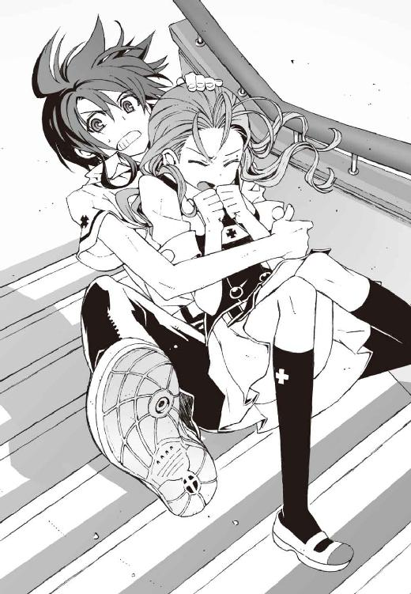
「ぐわ」
衝撃が僕たちを襲ってきた。きゃ、と可愛らしく悲鳴を上げる佐伯妹の全体重を、もろに肺の上で受け止めて息が詰まった。声を出すことすらできずに悶絶する。
しかし恐れていたほどの苦痛を感じることはなかった。床に激突する寸前に、落下速度が不意に弱まったのだ。力強い誰かの腕が僕を受け止め、支えてくれたのだと気づく。
「──無事か、夏目智春？」
その腕の持ち主は、真夏だというのに純白のコートを纏う、無駄に暑苦しい美形だった。彼の背後には白いサマードレスの少女の幽霊が、感情のこもらない微笑とともに浮かんでいた。
「生徒......会長？」
「......お兄様!? どうして？」
僕と佐伯妹が、彼の正体に気づいて呆然とつぶやいた。どうして佐伯兄が、都合良くここに出現したのか理解できなかった。いや、出現したのは佐伯兄だけではない。やはり白コートを着込んだガタイのいい男子が十人近く、階段の上下や廊下の左右から、鳳島を挟みこむように現れる。第一生徒会が誇る実戦部隊、生徒会処刑執行部の方々だ。
『現在より二分四十秒前に生徒会に通報がありました。不審者一名が無許可で校内に侵入して、本校の女子生徒に絡んでいると』
呆然としている僕たちに、涼やかな声で哀音が経緯を説明してくれた。佐伯兄の相方であるこの幽霊の少女は、なぜか妙に数字に正確なのだ。
おかげで事情はよくわかった。たしかに、あれだけ廊下や階段で大騒ぎしていれば、鳳島を不審者として通報する者がいても不思議ではなかった。やってたことはタチの悪いナンパだし、実際、不審者以外の何者でもない。
その鳳島は、いまだ頭に血が上ったままらしく、自分を包囲した処刑執行部員たちを怪訝そうに見ていたが、
「玲士郎......」
やがて佐伯兄の存在に気づいて、ニヤリと獰猛な笑みを浮かべた。
暴走気味にまき散らしていた彼の魔力が、更に禍々しく勢いを増す。ただの怒りだけではなく、そこにこめられていたのは明確な殺気だ。
「そっちから出てきてくれるとは、手間が省けたぜ」
乱暴な口調で鳳島が言う。僕はそれをうんざりした気分で見上げた。
案内してきた僕の立場が悪くなるような問題行動は、できれば遠慮してもらいたい。すでに十分問題を起こしているという気もするが。
「鳳島蹴策か......半年も前に退学した生徒が、今さら洛高になんの用だ？」
佐伯兄が冷めた視線を鳳島に向けた。
彼の言葉に僕は軽く動揺した。
半年前に退学した？ つまり鳳島は去年まで洛高の生徒だったということか？
それを裏づけるように、鳳島はチッと舌打ちし、
「自分で俺を退学に追いこんでおいてよく言うぜ、玲士郎」
「ふむ......？」
佐伯兄が静かに息を吐く。
『ほんとに？』
責めるような目つきで佐伯兄を見下ろす操緒。アニアを庇っていた嵩月が、険しい表情で振り返る。佐伯兄が率いる第一生徒会の連中は、入学した直後の嵩月を、洛高から追放しようとしたことがあるのだ。
しかし佐伯兄は、怪訝な顔で首を傾げ、
「たしかに、危険と見なされる悪魔を滅殺あるいは追放するのが、洛高の治安維持を任された我が神聖防衛隊の任務だな......」
やはりそうなのか、と僕たちが非難がましい視線を佐伯兄に向けたとき、
「しかし鳳島......きみが退学になったのは、単なる出席日数不足と成績不振だったと記憶しているが？ たしか中間期末と連続で全科目赤点だったとか」
「う、うるせェ！ あんときオマエらに停学やら病院送りにされたりしなきゃ、出席日数だけは足りてたんだよ！」
鳳島が顔面を紅潮させて怒鳴る。なんだよそれ、と脱力する僕たち。えと、なんだ。要するにやはり鳳島はバカだったということか。それでは完全に逆恨みではないか。
「ああくそ、可哀想なものを見るような目で俺を見るんじゃねえ！」
僕らに向かって怒鳴り散らす鳳島。やけくそ気味に放出された魔力によって、彼の魔精霊たちが再び活性化する。
「よせ、鳳島！」
「無駄な抵抗はやめろ」
鳳島を包囲していた処刑執行部員たちが、コートの下から銃を引き抜いて叫んだ。ただの拳銃ではなく、軍用のサブマシンガンである。弾丸もおそらく対悪魔用の特殊弾頭なのだろう。てか、この連中、普段からこんなもの持ち歩いて授業を受けているのだろうか。恐くてあまり想像したくない光景だ。
しかし鳳島は微塵も怯えた様子を見せずに哄笑した。
「やかましいっ、テメエらまとめて去年の借りを返させてもらうぜ。行け、魔精霊ども──」
氷の翼を持つ妖鳥たちが鳳島の意志に反応して舞い上がり、処刑執行部員たちが迎撃の構えを取る。またこのパターンか、と僕は頭を抱えた。僕が第一生徒会の連中に関わると、かなりの高確率で銃撃戦やら魔法戦闘やらに巻きこまれるのだ。
しかも今回は極めつけにヤバイ。この狭苦しい校舎内で本格的な戦闘になったら、とばっちりで大怪我をしかねない。かといって、嵩月やアニアを残して逃げ出すわけにもいかず、どうすりゃいいんだ、と僕が途方に暮れかけたそのとき、
小規模な爆発が校舎内に炸裂し、階段が揺れた。
「な、なんだァ!?」
喚いたのは鳳島だった。爆発が起きたのは彼の頭上だった。鳳島が呼び出した魔精霊。その中の一匹が、高速旋回しようとして廊下の天井に激突したのだ。
あの狭い場所にあれだけ大量の魔精霊を召喚したら、当然起こり得る事故だった。
爆発を起こした魔精霊は消滅したが、魔精霊を一匹失ったからといって鳳島が動揺するはずもない。彼は今度こそ戦闘をおっ始めようと、すぐに気を取り直して身構えた。
しかし鳳島は知らなかったのだ。自分がアニアに運気を吸われて、一時的に極度の不幸体質になっていたことを。
「あ......」
真っ先にそれに気づいた嵩月が、小さくつぶやいた。
その声に鳳島が振り返る寸前、彼の頭頂部をなにかが直撃した。人間の頭ほどもあるコンクリートの塊だった。爆発によってひび割れた天井が、剥がれて運悪く落下してきたのだ。
「ぐお......ォ」
重々しい激突音が鳴り響き、鳳島は声もなく苦悶した。
その衝撃で、魔精霊たちの支配が甘くなったのだろう。制御を失った魔精霊たちは、次々に暴走して近くの床や壁に突っこんだ。
「なっ......お......ちょっと待て......なんだっ!?」
鳳島が喚び出した魔精霊の数だけ、立て続けに爆発が巻き起こった。そのたびに彼は運悪く爆発に巻きこまれ、きりきりと回転しながら吹き飛ばされていく。
爆発。爆発。爆発。悲鳴。悲鳴、悲鳴。
自業自得とはいえ、あまりにも悲惨な光景だ。処刑執行部員たちも、唖然とした表情でその惨劇を見守っている。ようやく爆発が終わったときには、鳳島はボロくずのような姿に変わっていた。普通の人間なら確実に死んでたところだ。もっとも傍目には、鳳島が、一人で勝手に喧嘩をふっかけた挙げ句に自爆したとしか見えないわけで、今イチ同情する気になれないが。
「く......玲士郎......やってくれたな」
それでも鳳島は、不敵な笑みを浮かべて立ち上がった。
佐伯兄が不快そうに目を細めた。鳳島が勝手に不幸になったのを自分のせいにされるのは、いい気分ではないのだろう。
しかし鳳島は、それに気づく余裕もないまま、なぜか勝ち誇った様子で胸を張り、
「まあいい、テメエらをおびき出した時点で俺の仕事は終わりだ。今日のところは分けとくぜ、玲士郎。そしてまた会おう、マイシスター！」
アニアに向けて手を振りながら、勢いよく廊下の窓に突っこんだ。
ガラスの砕ける音が響き、透明な破片が派手に飛び散った。
鳳島が二階からためらいなく飛び降りたことに、さすが悪魔、と僕は驚いたが、どうやら彼は、単にそれを忘れていただけらしかった。割れた窓の向こう側から、落下する鳳島の悲鳴が聞こえてくる。彼の不運はまだ続いているのだ。
「Ａ班はやつを追跡。残りの執行部員は直ちに警戒態勢に移る。最悪、鳳島は逃がしても構わん。一般生徒の安全を優先しろ」
佐伯兄が部下たちに適切な指示を出す。どうしても好きになれない男だが、なんだかんだで頼りにはなるのだ。
白コートの処刑執行部員たちは、訓練された動きで散開し、それぞれの持ち場へと駆け出していった。もともと体育会系クラブの出身者たちだから、こんなときの動きは無駄に迅速だ。気づくと、あとに残ったのは、嵩月とアニアと操緒と僕。そして佐伯兄妹だけになっていた。
鳳島がさんざん暴れたせいで、廊下や階段の状況は悲惨だった。
壁や柱のあちこちが抉れて、床や天井にはすり鉢状の大穴が開いている。おまけに鳳島が突っこんだ窓ガラスは粉々だ。
あの男がなんのために洛高に来たのか、結局わからないままだった。廊下を破壊するのが目的ってことはないだろうし、まさかアニアをナンパするためだったとも思えないが。
「夏目、ちょっと......」
困惑する僕の耳元で、佐伯妹の声がした。ふと見れば、驚くほどの至近距離に佐伯妹の顔があった。落下してきた彼女を受け止めた姿勢のまま、自分が廊下に座りこんでいたことを僕は思い出す。
お姫様抱っこ状態の佐伯妹は、さすがに少し居心地悪そうにもぞもぞと身体を動かし、
「そろそろ降ろしてくれない？ みんな見てるし......」
照れ隠しのような素っ気ない口調でそう言った。誰も見てなかったらどうなるのだろう、と密かに思ったが、そんなことを訊き返せるはずもなく、
「ああ、ごめん」
僕はゆっくりと佐伯妹を床に降ろして解放した。緊張していて気づかなかったが、身体中があちこち痛む。落下してきた彼女を受け留めたときに、けっこう負担がかかっていたらしい。
そして佐伯妹は、乱れた制服を直しながら立ち上がろうとして、
「え、うそ!?」
意味不明の悲鳴を上げ、僕の上に再び倒れこんできた。完全に油断していた僕は、無防備な側頭部にスモウレスラー風のヒッププレスをくらって鈍い悲鳴を上げ、
「な......なんだ？」
ふらつく頭を押さえながら訊き返す。
佐伯妹の返事は短かった。彼女は右手でスカートの裾、左手で折り曲げた左足首を押さえて、
「痛い」と言った。
「え？」
「足首。すごく痛くて、立てないかも......」
佐伯妹は無理して平静を装おうとしていたが、苦痛を隠しきれていない。形のいい眉を寄せた額に、汗の珠が浮いている。
「......そうか、あのとき」
魔精霊の攻撃をかわそうとして、彼女が階段を踏み外したときのことを思い出す。あれだけの勢いで落ちたのだから、その途中でどこか痛めていても不思議ではなかった。
今回の件に関しては、佐伯妹はほぼ完全な被害者だ。さすがに同情せずにはいられない。
「ふむ......おそらく軽い捻挫だな。骨には異状はないと思うが」
佐伯妹の足元に屈んで、佐伯兄が冷静に告げた。靴下の下の佐伯妹の足首は、見た目、まだそれほど腫れてはいなかった。だが、どうやら熱を持ち始めているようで、早めに病院に連れて行ったほうが良さそうだ。
「とりあえず保健室で応急処置しよう。夏目智春、悪いが──」
「ああ、はい。運べばいいんですね」
佐伯兄に指示されて、僕は彼の妹に肩を貸した。兄貴が見ている前だからなのか、佐伯妹も特に文句を言わず、大人しく僕に体重を預けてくる。
「嵩月奏も......すまないが玲子の面倒を見てやってもらえるか」
心配して降りてきた嵩月に、佐伯兄が静かに言った。嵩月は無言で小さくうなずく。
そんな彼らのやりとりを僕は少し驚いて聞いていた。悪魔を嫌っているはずの佐伯兄が、嵩月に頭を下げたのが意外だったのだ。よほど妹のことが心配なのだろう、と思う。でなければ、いくら部下の執行部員たちが出払っているとはいえ、大事な妹を、嵩月に任せるとは思えない。
しかし、そんなに妹が大切なら他人に任せず自分で運んでやればいいのに、とも思う。妹だってそのほうが喜ぶのではないか、と考えたところで、僕はかすかな違和感に気づいた。
違和感の源は佐伯兄の右腕だ。
彼のコートの右袖から、だらんと力なく伸ばした腕が揺れている。心なしか不自然な角度に曲がっているように思えるその右腕を、哀音が不安そうに見つめている。
どういうこと、と僕は嵩月に視線で問い合わせた。なぜか申し訳なさそうに、僕から、つい、と目をそらす嵩月。まるで真犯人を庇うため、証言を拒んでいる重要参考人のような態度である。それってどういう反応だ。
状況を整理しようと思う。
佐伯妹が怪我をしたのは、鳳島の攻撃をよけようとして階段から落ちたせいだ。彼女を助けようとして支えきれずに、僕も一緒に階段を落ちた。なのになぜ僕が無事だったかといえば、佐伯兄が下で受け止めてくれたからだ。
しかし二人分の体重プラス階段からダイブしたことによる運動エネルギー。それらを生身の人間が受け止めて、はたして無傷で済むものなのだろうか。もしかしてその答えがこれなのか。
操緒がおそるおそる口を開いた。
『あの......その腕って......』
佐伯兄は、軽く持ち上げた自分の腕を見下ろし、淡々と告げた。
「ああ。骨をやってしまったようだな」
『............』
沈黙した操緒が、ちらりと僕の顔を見る。
僕は急に不安になった。ちょっと待て。まさか僕のせいなのか。たしかに鳳島に道を訊かれて案内したのは僕で、佐伯妹と鳳島の喧嘩を止められなかったのも僕で、落ちてきた佐伯妹を受け止めきれずに一緒に佐伯兄の上に落っこちたのも僕だが。うわ、やはり僕が悪いのか。
「......夏目？」
肩を貸している佐伯妹に至近距離で呼ばれて、我に返る。
納得いかない部分も多々あるが、今さら責任逃れもできないよな、と思い直す。佐伯兄にはあとで謝罪するとして、とりあえず今は彼女を保健室に連れて行くのが先だ。
そう決意して歩き出そうとした僕の背中を、不意に誰かの指がつかんだ。
振り返ると金髪少女の頭が見えた。アニア・フォルチュナ辺境伯令嬢だ。運喰らいのお子様留学生は、いろいろと責任を感じて落ちこみ気味の僕の顔を見上げると、
「ラムテンダーロインのミディアムレア。忘れるなよ」
人形のような端整な口元をふわりと緩めて、念押しするように言い聞かせた。
激しい疲労を感じて、僕はグッタリとその場にくずおれた。
死にたくなるくらい暑い午後の出来事だった。
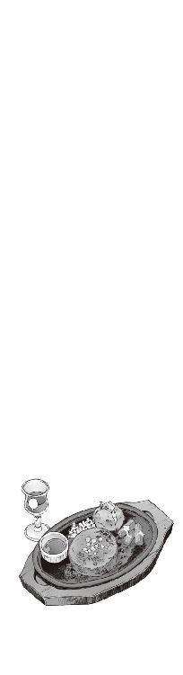
二章
養護の滝原は、実年齢は不詳だが見た目かなり若い女教師で、白衣メガネに黒ストッキングという彼女の定番スタイルは一部の男子に人気があった。ただし生徒の扱いがぞんざいで、治療がやたら荒っぽいという評判もある。
そんな彼女は佐伯兄の腕を一目見るなり、
「あー......これは駄目ね。学校じゃ処置できないわ」
そう言ってあっさり匙を投げた。そして佐伯兄が苦痛に呻くのも無視して、ぺたぺたと患部を触診し、
「右肘関節の脱臼ね。周辺部剥離骨折の疑いもあり、と......まあ、レントゲン撮ってみないとわかんないけど、二、三日は入院することになるんじゃない？」
気楽な口調で宣告しながら、副え木をあてて佐伯兄の腕を固定する。
佐伯兄が顔をしかめていたのは、傷の痛みのせいだけではないだろう。入院が長引けば修学旅行に参加できなくなる。その間、生徒会長の職務としての生徒の護衛ができない、なんてことを考えているのに違いなかった。
一方の佐伯妹は、保健室の硬いベッドをソファ代わりにして、薄くため息をついていた。
彼女の怪我は幸いそれほどたいしたことはなかった。滝原のいい加減な診察によれば、ただの捻挫よ、たぶん、とのことである。
しかし靴下を脱いだ佐伯妹の足首は頼りないくらいに細く、そのぶん腫れ上がった患部が余計に痛々しく見えた。保健委員の嵩月が、そこに湿布薬をペタペタと貼りつけている。
手持ちぶさたのまま僕がそれを眺めていると、顔を上げた佐伯妹と目が合った。
「あのさ......ごめん」
「え？」
謝る僕を、佐伯妹は少し怪訝な表情で見上げた。そんなふうにわざわざ訊き返されると非常に気まずいが、
「だから悪かったよ。鳳島のこと。あいつを案内してたのは僕だからさ」
「ああ......なんだ。そんなこと」
佐伯妹は軽く頬を膨らませたまま首を振った。
「いいわよべつに。夏目一人が悪いわけじゃないし。それに夏目は、いちおう助けようとしてくれたんでしょ。女の子一人受け止めきれなくて、一緒に落っこちて結果的にお兄様に余計な負担をかけたってだけで」
「う......」
べつにいい、と言いつつトゲのある佐伯妹の言葉で、僕は地味に落ちこんだ。それはまあ僕が彼女をちゃんと支えていれば佐伯兄妹が怪我することはなかったわけだし、非難されても仕方ない。しかし鳳島を挑発した佐伯妹にも、ちょっと責任があると思う。
しかし誰がどう考えてもいちばん罪が重いのは鳳島だろう。あの男がいきなり暴れ出さなければ、嵩月やアニアだって彼を攻撃せずに済んだのだ。
それだけに彼が洛高に来た理由が、余計に謎めいて気になった。洛高の元生徒だったのなら、校内であんな騒ぎを起こせば第一生徒会が出てくることを鳳島は知っていたはずだ。
彼の最後の言葉も気になった。ただの負け惜しみだったのかもしれないが、佐伯兄に出会った時点で、自分の役目を果たしたと鳳島は言ったのだ。
「テーピングは終わったかな？」
怪我人を相手しているとは思えぬ明るい口調で、僕たちの会話に割りこんできたのは滝原だった。白い包帯で固めた佐伯妹の足首を、彼女はぐりぐり舐め回すように見つめ、
「どう？ 歩けそう？」
「平気です。これくらい」
佐伯妹は頬を引きつらせながらそう答えた。挑発されたら強がらずにはいられない性格なのである。しかし滝原は、へー、と人の悪そうな表情でつぶやき、
「嘘おっしゃい」
「あ、いっ......痛ったああああたたた......」
ぐり、と足首を反り返らされて、弱々しい悲鳴を上げる佐伯妹。それを見て滝原は勝ち誇ったように笑う。歩けないとわかっていたのなら最初から訊くなよ、と僕は思った。バレバレの嘘をつく佐伯妹も佐伯妹だが、この養護教諭もたいがいだな。
「はいはい。これでわかったでしょ。今日は一人で帰るのは無理ね。というわけで、そこの幽霊憑きのキミ」
「あ......はい？」
唐突に滝原に指さされて、僕は困惑の声を洩らした。
「彼女を自宅まで送ってってあげなさい。この子のお兄さんはこれから病院に直行だから、あたしはそっちについてくし」
「はあ......僕はいいですけど」
僕はちらりと佐伯妹の顔を見た。佐伯妹は膨れっ面で僕を見上げたが、特に文句は言わなかった。操緒もそっと肩をすくめただけだ。それなのに、
「彼女が動けないからって、変なことしちゃだめよ」
滝原がわざわざ余計なことを言う。僕は憮然とため息をつき、
「しませんよ」
「彼女の同意があったら、まあいいけど」
「だからしませんって」
佐伯兄の視線を気にしながら、真剣に主張する。そういう冗談は笑えないからやめて欲しい。ただでさえこの兄貴には、嵩月に手を出したら殺すと脅されているのだ。ましてや彼の実妹にいかがわしい行為を働いた場合、どんな目に遭わされるのか考えただけでも恐ろしい。
そんな僕の反応を見て佐伯妹はなぜか深々と嘆息し、佐伯兄の傍らでは哀音がクスクスと笑っていた。彼女がこんなふうに感情を見せるのは滅多にないことなので、ちょっと驚く。
その間に滝原女史は手早く自分の荷物をまとめ、佐伯兄を手招きして言った。
「それじゃあ行きましょうか」
「行く？ どこへ？」
怪訝な表情を浮かべる佐伯兄。滝原はちゃらちゃらと自家用車のキーを振って、
「言ったでしょう、病院に直行だって。あんたは掛け値なしに重傷患者なんだから」
「無用です。お気遣いには感謝しますが、自分にはまだ会長としての職務がありますので......」
佐伯兄はあくまでも気障に拒絶する。逃走した鳳島のその後の行方や、彼の目的が気になっているのだろう。一般生徒の安全が確認できるまで、学校を離れるつもりはないらしい。
しかし滝原は、はいはい、と佐伯兄の主張を聞き流し、
「ほらほら。そんなふうに意地張ってると、症状がどんどん悪化するわよ」
「なっ......ぐ!?」
脱臼中の右肘を滝原に軽く殴られ、苦しげな呻き声を洩らす佐伯兄。涼しげな表情のせいでわからなかったが、実は相当やせ我慢をしていたらしい。しかし、それは症状が悪化しているというより、滝原が悪化させているのではないかと思う。とんでもない養護教諭だ。
「それじゃあ、嵩月さん。保健室の戸締まりをよろしくね。妹さんには、病院に着いたらまた連絡するから」
唖然としている嵩月たちに一方的に言い残し、滝原は、弱った佐伯兄を引きずるようにして保健室から連れ出していった。さすがの佐伯兄も抵抗する気力は残っていないらしかった。
あとには僕たちだけが残された。不安そうな表情を浮かべて、佐伯妹が沈黙する。
『えーと、佐伯ちゃんの荷物って......教室？』
気まずい沈黙に耐えかねたのか、操緒が妙に明るい声で訊いた。
「あ、うん。そうか、取りに行かないと」
佐伯妹が気を取り直したようにつぶやいた。
そういえば僕の荷物も教室に置きっぱなしだった。とにかく、いったん教室に戻らなければならないらしい。まあ、それはたいした手間ではない。しかし問題なのは佐伯妹の扱いで、歩けない彼女を教室まで連れて行くのは面倒だし、かといって勝手に彼女のロッカーやカバンを開けて荷物を詰めたらたぶん怒られる。どうしたものかと迷っていると、
「あ、わたしが」
嵩月が気を利かせて言ってくれた。佐伯妹が感謝するように嵩月に手を合わせ、
「ごめん、とりあえず課題が出てるリーダーの教科書と数学のプリントだけでいいから。あと、ロッカーに置いてある体操服の袋と」
「うん」
佐伯妹の指示を律儀に指折り数えて確認し、嵩月はうなずいた。そして、
『待って、あたしもつき合うよ。じゃあ智春たちはここにいてね』
唐突に勝手なことを言いながら、僕たちに手を振ったのは操緒だった。
嵩月にくっついて保健室を出ていく彼女を、僕は唖然としながら見送った。
それはまあ、たしかに嵩月を一人で行かせるよりは自然な行動だとは思うが、しかし操緒までいなくなってしまうと、僕はここで佐伯妹と二人きりになってしまうわけで。
これが普通の教室ならともかく、保健室で同級生の女子と二人きりというのは、いろいろ意識してしまってやりにくい。佐伯妹が座っているのはベッドの縁だし、素足に白い包帯だし、普段は性格のキツさが目立つせいで意識しないが、彼女は実は兄貴と同じで美形なのだ。
変なことしちゃだめよ、という滝原の言葉が、ふと脳裏に甦る。変って具体的にどんなことだよと思いながら、壁に貼ってある歯周病予防のポスターを真剣に眺めていると、
「夏目、なにか話しなさいよ」
佐伯妹が女王様口調でぼそりと言った。えらくアバウトな命令だな、まあいいけど。
「なんかって......なに？」
「なんでもいいわよ。近くであなたに黙りこくられると緊張するでしょ！」
「え？」
艶やかな唇をへの字に引き結ぶ佐伯妹の横顔を、僕はしばらくきょとんと眺めた。じわじわと笑い出したい衝動がこみ上げてくる。そうか。佐伯妹でも、こういうときはやはり緊張してしまうのか。いくら美人で頭が良くても、彼女はしょせん同い年の高校生なのだ。そう思うと急に親近感が湧いてくる。
「なに笑ってるのよ？」
佐伯妹がムッと眉を寄せて僕を睨んだ。
「ああ、悪い。あ、そうだ。面白い話があって、樋口のやつがこないだ歯医者に行ったときのことなんだけど、えーと、あいつの担当になった看護師さんがさ」
「......もういい。樋口のバカの話なんか聞きたくない」
「え、あれ？」
不満そうに僕を睨む佐伯妹を見て、面白い話なのに、と僕はため息をつく。先ほど感じた親近感は撤回。なんというワガママな女だ。しかし樋口の話題が駄目と言われて、ほかに共通の知り合いといえば、
「あ、そういえば、こないだ僕が杏の家で夕飯を食べてたときに笑ったのが......」
「は!? あなた、杏といつも一緒に晩ご飯を食べてるの!?」
「え？」
佐伯妹がいきなり声を荒げたので、僕は圧倒されてうなずいた。まだ話の前フリを始めたばかりなのに、そんなところに喰いついてくるとは思わなかった。
「あー、うん。バイトが遅くなったときとか。最近はアニアもいるんで、毎回ってわけじゃないんだけど」
「......ふうん。そうなの。それは仲がよろしくて結構なことね」
言葉とは裏腹に、不機嫌オーラをまき散らしながら佐伯妹が言う。僕はひたすら困惑。この女はいったいなにを怒っているのだ。さすがに僕も少し苛立って、
「あのさ、そんなヤキモチ焼いてる小学生みたいな態度はちょっとどうかと思う」
「なっ......！」
軽くたしなめたつもりだったのだが、佐伯妹の反応は予想外に大げさなものだった。
「な、なんであたしが夏目のためにヤキモチなんか......そ、そんなわけないでしょ!?」
カッと耳の先まで赤くして彼女は怒鳴った。めずらしく迫力の足りない彼女の言葉を、僕は少し不思議に思う。佐伯妹は性格はキツイが頭は悪くない。この手の軽口でここまで動揺するとは、ちょっと意外だ。
「あ、いや、べつに佐伯が本気で妬いてるとは思ってないけど」
「あったり前でしょう！ へ、変なこと言わないでよね！ あたし、帰る」
「え、帰るって......ちょっと待った......！」
僕が制止するよりも早く、佐伯妹は勢いよく立ち上がっていた。自分が怪我していることも忘れるくらいテンパっていたらしい。当然ながら捻挫した足首は彼女の体重を支えきれず、
「あ......！」
「わ......っと」倒れそうになった佐伯妹を、僕は危ないところで抱き止めた。「大丈夫か？」
うう、と痛そうに呻きながら、佐伯妹はそのまま僕に体重を預けてくる。無茶したせいで捻挫が悪化したのかもしれない。彼女はしばらく僕の肩にしがみついて背中を震わせていたが、
「ご、ごめん。あの......ありがと」
やがて潤んだ瞳で僕を見上げてそう言った。
「あ......いや。これくらいはべつに......」
佐伯妹の髪の甘い匂いに、僕は妙にどぎまぎしながら首を振った。
再び緊張感が甦ってきた。
この暑い中でも彼女の身体はひんやりと体温が低く、肩も腰も細くて、どこをどう持って支えたらいいのかひどく迷う。足首が痛むのかどうか知らないが、なぜか離れようとしない彼女を無理やり引き離すわけにもいかず、保健室の真ん中で僕たちが静止していると、
「あら......？」
なんの前触れもなく保健室の扉がするすると開いて、思いがけない人物が姿を現した。
扉の隙間に立っていたのは、現実離れしてスタイルのいい、おっとりした物腰の上級生だ。
彼女は赤いセルフレームのメガネを少し傾け、ちょっと愉快そうに微笑んだ。
僕の背中を冷たい汗が伝う。どうして彼女が保健室に現れるのだ？ 改造人間のあんたが保健室なんかになんの用だ？
「もしかして、おとりこみ中だったかしら？」
科學部部長代理の二年生。朱浬さんは笑いをこらえているような口調で、意味ありげに目を細めてそう言った。
○
「あ......いや、違っ......違います！」
「そ、そう。違うんですよこれは、あの......さ、佐伯が怪我をしてて」
密着状態だった佐伯妹と僕はハッと顔を上げ、二人あわてて身体を離した。
自力で立てない佐伯妹はベッドの上に倒れこみ、突き飛ばされる形になった僕はよろよろと後退して壁際の身長計に後頭部から激突する。苦悶の呻きを上げる僕たちを、朱浬さんはしばらく興味深そうに眺めていた。重火器をぶっ放しているとき以外で、こんな楽しそうな彼女を見るのはたぶん初めてだ。
「ふふ......もしかしてお邪魔だった？ 出直してきたほうがよかったかしら？」
口元を上品に隠したまま、含み笑いのような口調で朱浬さんが言った。僕は涙目のままうんざりと首を振り、
「だから誤解なんですって。今のは倒れそうになったから手を貸してただけで」
「そうね。まあ、そういうことにしておいてあげる。操緒ちゃんたちには、内緒にしておいたほうがいいわよね？」
僕と佐伯妹がほぼ同時に、もちろん、と首を縦に振り、
「うふふふ......オーケー、トモハルの貸しにしておくからね」
朱浬さんは、ふわりと花のように微笑んでそう言った。
僕は激しい悪寒を覚えて肩を落とす。てか、あんた、最初から全部わかってて言ってるだろ。
そういえばやけにタイミングよく保健室なんかに入ってきたが、まさかずっと監視していたのではないだろうな？
そんな僕の被害妄想めいた疑問を読み取ったわけではないだろうが、朱浬さんはふと室内を見回して怪訝な顔をした。
「玲士郎は？」
「え？」
唐突な彼女の言葉に僕は困惑する。玲士郎？ 佐伯兄に会いにきたのか？ 朱浬さんが？
「大体の事情はニアちゃんに訊いたわ。鳳島に会ったんでしょう？ 玲士郎が派手にやられて保健室に運びこまれたって聞いてきたんだけど？」
「あ、いえ......会長が怪我をしたのは本当ですけど、べつに鳳島にやられたわけでは......」
佐伯妹の非難がましい視線を感じながら、僕は歯切れの悪い言い訳をする。どちらかといえば派手にやられたのは鳳島のほうで、佐伯兄はそれとは無関係に僕を助けようとして名誉の傷を負ったのだ。しかしどうやら朱浬さんも、その辺のことはわかってて言っているらしかった。ついでに彼女が保健室を訪れた理由も、今の説明でなんとなくわかった。
「って......朱浬さんも鳳島のことを知ってるんですか？」
「まあね。いちおう去年までは同級生だったし」
「えっと......彼の正体も？」
「ええ、もちろん。あのバカはあれでもいちおう四名家......奏っちゃんの家系と同格の強力な悪魔の一族の出身よ。雄型の悪魔は使い魔を召喚できないかわりに戦闘能力は高いから、ただのバカだと思って甘く見てはダメ」
「はあ。べつに侮ってるわけではないですが......」
鳳島が操っていた魔精霊とやらのことを思い出しながら僕はうなずいた。詳しいことはよくわからないが、契約者を持たない今の嵩月よりも、鳳島のほうが強いということなのだろう。
それはそれとして、やはり朱浬さんに聞いても鳳島がバカという事実は動かないのだな、と思う。もしかして彼女も、妹になれと鳳島に迫られたりしたのだろうか。
「あ......そういえば、アニアのことですけど」
「理想の妹がどうこうって話なら聞いてるわよ。あのバカの言い出しそうなことだわ、ったく」
朱浬さんは薄くため息混じりに苦笑した。やはり昔からああいう性格だったのだな、と僕は妙に納得する。
「たぶん大丈夫だとは思うけど、ニアちゃんはあたしが護衛するわ。しばらく彼女を預かることになるけど、いいわよね？」
「ええ......それはもちろん」
まあそれならいいか、と僕は思った。
いちおう僕としても居候のアニアのことを心配していたのだ。なにしろ別れ際の鳳島の様子では、アニアに会うために鳴桜邸に押しかけてきそうな勢いだったし、そうなったら僕一人でやつを追い返す自信はまったくない。
「ところで玲士郎は？ もしかして生徒会室に戻った？」
朱浬さんが、不意に真面目な表情に戻って訊いた。
「兄なら病院に行きました」
僕の代わりに答えたのは佐伯妹だった。
「病院？」
「はい。滝原先生に無理やり連行されて。あの......もしかして黒崎先輩、兄のことを心配して来てくれたんですか？」
佐伯妹がいきなり大胆な質問を返す。そういえば朱浬さんにしてはめずらしく、今日は少しぴりぴりとした緊張感を漂わせているような気がしなくもない。保健室までわざわざ足を運んだのも、佐伯兄の容態が気になったせいかもしれない。
もし佐伯妹の読みが事実なら、意外なカップリング成立ではないか、と思ったのだが、
「まさか」
というのが朱浬さんの答えだった。即答だった。まあ、それはそうだろうと思う。しょっちゅう本気で銃撃戦をしてるような仲の人たちだし。今さらくっつかれても正直困る。
「玲士郎が怪我して泣いてる顔なんて見たって楽しくもなんともないもの。あたしは第一生徒会室の被害の様子を教えてもらおうと思ってきたの」と朱浬さんは言った。
「生徒会室の被害？」
僕は小さく首を傾げた。鳳島が佐伯兄と遭遇したのは、生徒会室に辿り着く前だ。廊下は鳳島の暴走でひどいことになっていたが、生徒会室には被害はなかったはず。
しかし朱浬さんは世間話のような口調で、
「侵入者があったんですって。第一生徒会室に」と告げた。
「......侵入者？」
僕と佐伯妹は、互いに顔を見合わせながら困惑する。
「でも鳳島は第一生徒会の執行部員が追っかけていったんですけど。佐伯あ......会長の命令で」
たしかに鳳島は生徒会室に用事があると言っていた。しかし、いくら彼が強力な悪魔でも、生徒会処刑執行部の連中も対悪魔戦闘の訓練を受けたエキスパートなのだ。彼らの追撃を振り切って、生徒会室に侵入する余裕があるとは思えない。なのに、
「なるほどね。それで校内の警備が甘くなってたわけだ」
なぜか朱浬さんは納得したようにつぶやいた。
「どういうことです？」
「荒らされたのは、第一生徒会室だけじゃないのよ。第二と第三もやられてる」
「え？」
「といっても第三生徒会室は普段から出入り自由だし、盗られて困るようなものはなにも置いてないらしいけど、第二生徒会室の地下金庫室は破られたみたいね。六夏会長が怒ってた」
「はあ......」
なぜ金庫室なんてものが学校の地下にあるのかという問題はともかく、六夏の性格ならば、それは怒り狂うだろうと思う。なにしろ金にド汚い第二生徒会の連中のことである。いくらぐらい貯めこんでいたのか見当もつかない。
「被害額ってどれくらいだったんですかね？」
興味本位で訊いてみた僕に、朱浬さんは小さく首を振って答えた。
「それがね、どうも侵入者は金銭目的じゃないみたいなのよね......」
「お金は盗られてない......ってことですか？」
「たぶんね。経済的な被害があったのなら、六夏会長が今頃もっと大騒ぎしてるはずだもの。校内の警備が甘いとかって、玲士郎のところに損害賠償請求くらいしてるかも」
「な......なるほど」
ものすごく納得して僕はうなずいた。考えてみれば犯人の目的が金銭なら、第二生徒会室はともかく第一や第三生徒会を狙う理由はないはずだ。
しかし金銭以外で、盗み出すほどの価値がある生徒会の所有物というのはなんだ？
「......まさか機巧魔神が盗まれたとか......？」
厄介事の予感に怯えながら、僕は声を低くして訊いた。
朱浬さんは少し意地悪く微笑んで、「トモハルもやっぱりそう思う？」と訊き返してきた。
「でも、違うのよ。洛高には、生徒会預かりになってる予備の機巧魔神は残ってないはずなの。あなたの鐵だって、裏で手を回して学生連盟から横流ししてもらったやつだし」
「え？ そうだったんですか......？」
そんな話聞いてなかったぞ。横流しなんて非合法っぽい響きだが、そんなことをして大丈夫なのか。もしかして僕の知らないところで僕を恨んでいる人がいるのではないだろうな？
しかし機巧魔神関係でないとすれば、侵入者の目的はなんだろう。
「第二と第三生徒会に関しては、今のところ被害らしい被害はないのよね。書類を何部か持っていかれたくらいで」
朱浬さんは、気に入らないなあ、というふうに唇を波打たせてつぶやいた。
「書類ってなんです？」
「学校新聞の見本とか修学旅行のしおりとか......校内を探せば普通に転がってそうなやつよ」
「......なるほど」
ふーむ。たしかにそんなものを盗み出すために、わざわざ生徒会室に侵入する者がいるとは思えない。朱浬さんが気にする理由もわかる。
「だから玲士郎のところの状況が知りたかったんだけど、鳳島の件で役員がみんな出払っちゃってるのよね。下っ端に訊いても教えてくれそうにないし......第一生徒会の人間には、ほら、色仕掛けが通用しないから」
朱浬さんが目を伏せた色っぽい憂い顔で嘆息した。異様に長い彼女の睫毛にドキリとする。健康的な普通の男子で、この人の色気に惑わされない者がいるとはちょっと考えにくいが、
「あの......それって、やっぱり第一生徒会の人たちの趣味が......その、攻めとか受けとか......そっち方面ってことですかね？」
「それはそうでしょ」自信たっぷりに断言する朱浬さん。「むさ苦しい筋肉質の男ばっかだし、女っ気ないし、そのくせ妙に結束が堅いし、トモハルも気をつけたほうがいいんじゃない？」
「はあ......やっぱり......」
なんとなくそうではないかと思っていたのだが、そうか、やはりか。それではいくら朱浬さんの色仕掛けでも、通用しないわけだよなあ、と僕が納得していると、
「そんなわけないでしょ！ なに本気にしてんのよ！」
耳元で佐伯妹に怒鳴られた。
「え、そうなのか？ 否定したい気持ちはわかるけど......べつに差別するつもりはないし......」
「そういうことを言ってるんじゃない！ 第一生徒会にも女子の役員はちゃんといるんだから。目立たないけど！」
「あ......そうだっけ......」
そういえばあの雪原瑤も、ＧＤになる前は第一生徒会に所属していたんだっけか。よかった。少しホッとした。やはり自分の学校の生徒会がアブノーマルな趣味の男たちの集団というのはちょっと不安だしな。
そんなふうに胸を撫で下ろす僕を見て、朱浬さんがクスクスと笑っていた。どうやら最初からからかわれていただけらしい。
「とにかく、そういう事情なら兄に確認してみます」
その朱浬さんを見上げて佐伯妹が言った。ちらり、と彼女は横目で僕を見て、
「病院から連絡をもらえることになってるし、訊きたいことがあるのなら、今のうちに夏目くんに言っておいてもらえれば伝わりますから」
「トモハルが玲士郎に伝言してくれるの？」
朱浬さんが少し不思議そうにつぶやいた。佐伯妹はなぜか勝ち誇ったような笑みを浮かべ、
「このあと夏目くんはうちに来ることになってますので」
まことしやかにそう言った。たしかにそれは嘘ではない。嘘ではないが、なぜわざわざそんな誤解を招くような言い方をする。
「あ......えと、彼女もいちおう足を怪我してまして、滝原先生の命令で送っていく約束を......その、僕にも責任がないわけではないので......」
僕は焦って説明した。ここで朱浬さんに誤解されると、またややこしいことになる。
そんな僕の狼狽ぶりを、朱浬さんは再び面白そうに眺め、
「ふうん。このあと彼女のお宅にお邪魔する予定だったんだ......」
「え、ええ......もちろん操緒も一緒だし。やましいことはこれっぽっちも」
「ふうん」
必死で言い訳を続ける僕を、朱浬さんは邪気のない笑顔で見つめている。その笑顔の裏側で、なにを考えているのかわからないのが恐ろしい。どうにか話題を変えなければと僕は焦り、
「そういえば鳳島のことですけど......あいつ、いつの間に生徒会室に侵入したんですかね？」
それは最初に話を聞いたときから、漠然と感じていた疑問だった。
荒らされたのが第一生徒会室だけならともかく、それぞれ離れた場所にある第二と第三の生徒会室まで被害に遭っているのだ。鳳島が逃走中にやったことなら、あまりにも手際が良すぎると思う。
朱浬さんが口にしたのは、その疑問に対する意外な答えだった。
「生徒会室を荒らしたのは、たぶん鳳島ではないわ」
「え？」
「彼は囮よ。校内の警備の目を惹きつけるためのね」
「陽動作戦......ですか？」
そんな大げさな、と僕は呆れた。たかが高校の生徒会室に忍びこむために、誰がそんな手の込んだ真似をするんだ。たしかに洛高の生徒会はあまり普通ではないが、ナチスドイツの要塞ってわけじゃないんだから。
だがしかし、僕はふと鳳島の立ち去り際の言葉を思い出す。
佐伯兄たちをおびき出した時点で自分の役目は終わりだと、鳳島はたしかにそう言ったのだ。ただの負け惜しみだと思っていたのだが、実は本当に言葉どおりの意味だったのかもしれない。
「あれ？ 陽動ってことは、誰かほかにも鳳島の仲間がいるってことですよね？」
「そうなるわね」
朱浬さんはあっさりとうなずいた。インテリっぽくメガネのズレを直す仕草をして、
「問題はそいつの正体がさっぱりわからないことなのよね」
「はあ......手がかりは残ってなかったんですか？」
「全然さっぱり。ほら、ちょっと気になるでしょう？」
オカルトネタを追っかけているときの樋口のようなことを言って、朱浬さんは淡く微笑んだ。
たしかに少し気がかりな話ではある。僕はまったく無関係とも言い切れないし、犯人の目的がわからないのも不安だ。あと少しで夏休みというこの時期に、生徒会関係の変なトラブルに巻きこまれたくはないのだけれど。
「あの......すみません」
純粋に怪訝そうな表情を浮かべて訊いたのは、佐伯妹だった。
「手がかりがないって仰いましたけど、第二生徒会の金庫って簡単に開くものなんですか？」
「いい質問ね」と朱浬さんが笑った。
たしかに鋭い指摘だった。犯人がどこかで暗証番号や鍵を手に入れたのなら、その線から犯人の正体を調べることができるはずだし、力ずくで金庫を破壊したのなら、それはそれで有力な手がかりになるはずだ。まったく証拠がないってことはないだろうと僕でも思う。
しかし朱浬さんは静かに首を振った。
「手がかりはなかったのよ。なぜなら地下金庫室に通じる扉は閉ざされたままだったから」
「......え？」
きょとんと佐伯妹が目を瞬き、朱浬さんは軽く肩をすくめて続けた。
「なのに金庫室の中は荒らされて、なんの価値もない適当な書類が持ち去られた。犯人の侵入経路を示す痕跡を、なにひとつ残さないままにね。つまり金庫室は密室だったってこと」
「......密室？」
佐伯妹が口の中だけでつぶやいて、なにか物言いたげな視線を僕に向けてきた。
記憶の片隅に引っかかりを感じて、僕はむっと眉を寄せる。
密室。そして侵入者。
どこかで聞いたキーワードだな、と思う。
一瞬、ある男の顔を思い浮かべて、まさか、と僕はすぐにその考えを打ち消した。
まさかそんなはずはない。彼が今さら洛高に侵入する理由はないはずだ。
そう。まさか。
○
帰り道。
『ふーん、そんなことがあったんだ』
生徒会室荒らしの説明を聞きながら、操緒は気の抜けた声でつぶやいた。
佐伯妹の自宅の場所は、山の手の閑静な住宅地にあった。洛高からは自転車で十五分ほど。佐伯妹を彼女のチャリの荷台に乗っけて、僕はぐりぐりと坂道を漕ぎ上がる。
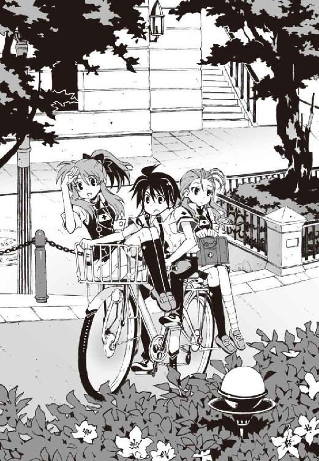
ちょっと高級げなチャリの乗り心地は快適だったが、真夏に二人乗りで上りの坂道はけっこうきつい。酒屋のバイトでビールケースを運んでたときのことを思い出し、女の子を後ろに乗せて下校しているというのに、なにやら虚しい気持ちになる。そろそろ日没の時間だが、黄金色に染まった夏の空は明るく、いっこうに気温が下がる気配はなかった。
『囮かぁ......たしかに鳳島にはぴったりだよねえ』
チャリの前カゴに横座りの姿勢で、髪をなびかせながら操緒が言った。
「まあね」
僕も同意した。たしかにあの悪目立ちする外見の鳳島には相応しいというか、ほかの役には立ちそうにないというか、そんな感じである。彼を囮に使って生徒会室への侵入作戦を考えた犯人は、もしかしたら頭がいいのかもしれない。侮れない。
「ところでさ......佐伯ん家って、本当にこの道であってるのか？」
僕は落ち着かない気分で周囲を見回しながら言った。
もともとこの辺りは高級住宅街なのだけど、そこを更に進むと、また雰囲気が変わってくる。
ひとことで言えば、お金がかかってそうな感じ。最近になって山を削って開発した地区で、道幅は広く、建物は高く、道路の街灯の数がやたら多くてデザインもお洒落。心なしか街路樹までもが高値で売れそうな印象だ。
「あってるわよ。どうして？」
「あ、いや......あってるなら別にいいんだけど」
たまにドラマやニュース番組に出てくる高層オフィスビルを見上げて、僕はため息をつく。
生活水準が違い過ぎて羨ましいと思う気にもなれない。こういう土地って企業買収で儲けた若手実業家とか、そういう人種が住むところではないのだろうか。自転車に二人乗りした高校生なんかは浮きまくって仕方がない。さっさと通り過ぎよう、と思ったとき、
「その信号を渡った正面のマンション。自転車置き場は右手にあるから」
佐伯妹が素っ気ない口調でそう言った。
「え......正面のマンションって......これ？」
周囲のビルよりもひときわ豪華な高層建築を見つめて、僕はぽかんと口を開けた。
『うわ......高そう』
操緒がマンションの外壁を見上げて言った。もちろん建物の高さではなく、分譲価格のことを言っているのだろう。
公園と見紛うばかりの緑の前庭に、ニューヨークあたりの博物館のような豪華なファサード。大理石を敷き詰めたエントランス。複雑な曲面で構成された建物のシルエットは芸術作品のようで、こんなところに人が住めるのかと疑いたくなる。自転車置き場の前輪ラックまでもが、メカニカルで芸術的なデザインだ。
佐伯妹に肩を貸しながらマンションのロビーに入るまでの間、僕は絶句して声もでなかった。
『わ、自動ドアがすごい豪華！ てか、なにこの鍵!? スパイ映画？』
近未来的なロビーの中を見回して、操緒が子どものようにはしゃいでいた。
オートロックの操作パネルに佐伯妹が右手をかざすと、小気味いい電子音を鳴らして自動ドアが開く。生体認証というやつか。たしかにどこかの国の秘密研究所みたいだ。
「たしかにすごいな......うん、でも、少し安心した」
エレベーターを待っている間に最初の衝撃から立ち直り、僕は嘆息しながらつぶやいた。佐伯妹が怪訝な顔をする。
「そう？」
「すごい金持ちって聞いてたから、もっと広大なお屋敷みたいなのに住んでるかと思ってた。門から玄関まで車で何十分もかかるような」
「そんなわけないでしょう。潮泉家じゃないんだから」
佐伯妹は、は、と呆れたようにため息をついた。たしかに彼女の言うとおりだと思う。自宅の敷地に山が丸ごと入っているような非常識な金持ちが、同じ市内に何軒もあっては困る。
そう思って僕がどうにか気を取り直そうとしていると、
『んー......智春、智春。見てあれ』
操緒が、肩をつつくような仕草で僕を呼んだ。彼女が指さしていたのは、エレベーターホールに貼りつけられていた、マンション名を彫った金属プレートだった。
第十七佐伯タワー......？
「ちょっと待て、佐伯！ このマンションっておまえん家の持ち物なのか!?」
僕はぎょっとして振り返る。鼻の頭がぶつかるくらいの超至近距離に佐伯妹の顔。
「人の耳元で大声出さないでよ」
佐伯妹はむっと眉間に皺を寄せて言った。
「うちの会社が管理してるマンションの一フロアを、自宅として使ってるの。そんな大騒ぎするようなことじゃないでしょ」
「そ、そうかな......？」
これは相当すごいと思うぞ。しかも自宅として使っているのはフロアまるごとって、一部屋などという単位ですらないのか。おまけにここが十七番目ってことは、こんな建物がほかにも最低十六個あるということなのだろう。いったいどれだけ金持ちなんだ。
僕が目眩を感じているうちに、僕たちを乗せたエレベーターは目的の階に着いたらしかった。二二階。マンションの最上階である。エレベーターを降りた先は、やはり大理石を敷き詰めた豪華な廊下になっていて、その先には、
「お帰りなさいませ、お嬢様」
エプロンドレス姿の家政婦さんが待っていた。ふっくらとした丸顔に丸メガネのお姉さんだ。
『メ、メイドさんだよ......智春、本物のメイドさんだよ』
操緒が興奮気味に僕に耳打ちする。ああ、と困惑気味にうなずく僕。そういえば佐伯家には、執事とか呼ばれてるオッサンもいたんだっけか。執事がいるのだから、メイドがいてもあまり不思議ではないな。
「お疲れさまです、新津さん。奥沼は？」
佐伯妹は少し不自由そうに靴を脱ぎながらメイドさんに訊いた。新津さんというのが、メイドさんのお名前らしい。
「執事長でしたら先ほど病院に向かわれました」
恭しく微笑んで答えるメイドさん。奥沼というのは、たしかあれだ。シチリア系マフィアにしか見えない佐伯家の〝自称〟執事。佐伯妹はうなずきながら、
「お兄様の警護ね？」
「はい。お嬢様のお世話は私のほうで承っております」
「ありがとう。でも気を遣っていただかなくて結構よ。今日は彼が私の面倒を見てくれることになってるから」
僕の顔を指さして彼女はそう言った。え、と僕は思わず訊き返す。
そんな話は聞いてないし、もちろん約束もしていない。滝原女史の命令は、佐伯妹を家まで送り届けることだけだったはず。
しかし僕に反論する暇を与えず、メイドさんは朗らかに微笑んで、
「こちらの方は？」
「......友達よ。あたしの」
佐伯妹がなぜか憮然とした口調で言う。どことなく新鮮な響きを感じながら、僕は彼女の言葉を聞いた。あまり実感はなかったが、そうか、いちおう友達扱いしてくれていたんだな。下僕よ、などと言われたらどうしようかと思っていたので、ちょっと嬉しい。
「まあ！ お嬢様がお友達を......！」
そして僕以上に大げさに喜んだのは、メイドの新津さんだった。ほとんど跳び上がるような勢いで手を合わせ、メガネの下の瞳は感激の涙で潤んでいるようにも見える。
「あのね、新津さん......こいつはそんなたいしたものじゃないから。付き添いが一人いるってさっき連絡しておいたでしょう？」
佐伯妹は少し怒ったように言うが、新津さんは満面の笑みを浮かべて首を振り、
「はい。ですけど、玲士郎様の部下の方だと思っていたものですから。そうですわ......お夕食の支度はいかがいたしましょう？」
「あ、そうね。いちおう彼のぶんの夕食も用意して欲しいんだけど、いいかしら？」
「はい、もちろん大丈夫です。玲士郎様のぶんの食材がございますので、私、腕によりをかけてご用意させていただきます」
「そ、そうね......食材は余らせてはもったいないものね」
「はい。それではまたのちほど」
仰々しく一礼して去っていく新津さん。あまりの展開の早さに理解が追いつかず、僕はしばらく呆然と立ち尽くしていた。
なにがどうなっているのかよくわからないが、いつの間にか夕飯を食べさせてもらえることに決まったらしい。今さら断れるような雰囲気ではないし、べつに文句もなかったが、
「......あのさ、佐伯って友達いない人なのか？」
少し気になったので訊いてみる。
「違うわよ。ただ、この家に学校の友達なんてあんまり呼べないから......」
それだけよ、と佐伯妹は強がるような口調で言った。
そういうものか、と僕は納得した。たしかにこの家に普通の女子高生を連れてきたら、ひくかもな。ひがみっぽい感情を抱く人間もいるかもしれない。金持ちには金持ちの苦労があるのだなあ、と感心する。まあ、僕には縁のない悩みだが。
そんなことを僕が思っていると、
「夏目は、そういうのあまり気にしないのね」
急に話を振られたので驚いた。どういう意味だ、と少し戸惑う。
「え？ いや、そんなことないよ。普通に羨ましいと思う」
「そう？ 本気でそんなこと思ってるように見えないけど？」
「あー、どうだろ。うちの下宿の大家は潮泉家の爺さんだから、豪邸には慣れてるのかも」
それに僕はこう見えても、世の中の不公平には強い耐性があるのだ。なにしろ子どものころから異様にデキのいい兄貴と比べられて育ったからな。生まれつきの階級格差には慣れている。
天才少年の兄貴を持つ不幸に比べれば、クラスメイトがちょっとばかり金持ちなくらいで、いちいちひがんでいられるものか。
「ふうん」佐伯妹は、感情の読み取れない瞳で僕をじっと見つめていた。「前向きなんだか後ろ向きなんだかよくわからない理屈ね」
「うん......それはよく操緒にも言われることだが、ほっといてくれ」
僕は自虐的な気分で胸を張った。
それにしても広いマンションだと思う。部屋数も多いし、トイレだけで五カ所くらいあったような気がする。佐伯妹とはぐれたら、一人では玄関まで辿り着けないかもしれない。パン屑を落としながら来るべきだったか。
このまま一生、この家の中を彷徨い続けるのではないかと少し不安になり始めたころ、
「そこ。あたしの部屋」
佐伯妹が正面の部屋を指さして言った。金箔で縁取られた扉の中央にはＲＥＩＫＯの文字が刻印されている。扉まで特注品かよ、とさすがに少し呆れる。どうでもいいが墓石みたいだぞ。
「へえ、いい部屋だな」
ようやく辿り着いたことに安堵して、僕は適当な感想を洩らした。
佐伯妹は、むうっと目を細め、
「入ってもないのに、なんでわかるのよ？」
「え......いや、入っていいのかな？」
「夏目が支えてくれないと歩けないんだけど？」
「そ、そうか......」
樋口に話したら羨ましがるだろうな、と少し意地の悪いことを考えながら、僕は佐伯妹の部屋に入った。平均的なマンションよりは少し広いが、中は意外に普通の部屋だ。
ライティングデスクには見慣れた教科書が開いたままで、アンティーク風のベッドは縫いぐるみで埋め尽くされている。床には猫のトイレ砂。そして猫。
『あ、猫だ。猫、可愛い！ 待ちなさい、猫！』
佐伯家の飼い猫を目敏く見つけて、操緒が手を伸ばしながら近づいていく。アメショー風の子猫は、操緒の存在になにか不穏な気配を感じたのか、ものすごい勢いで逃げ出した。それをどこまでも追いかけていく操緒。
その間に佐伯妹は、捻挫した足を引きずって自分のベッドに近づいた。無数の縫いぐるみに埋もれるようにして座りこむ。妙に女の子らしいその仕草は、普段の佐伯妹のイメージと違ってどこか微笑ましかった。
「なに笑ってるの？」
僕の表情の変化に気づいて、佐伯妹が不機嫌な声を出す。
「いや、可愛いなと思って。縫いぐるみ」
ベッドから落ちた縫いぐるみの一体を拾い上げながら、僕は言った。長く使ってあちこち擦り切れたクマの縫いぐるみだ。
「バカにしてるわけ？」
「なんで？ こういうの好きだよ。このクマとか、子どものころ欲しかったやつに似てる」
そう言って、僕は拾った縫いぐるみを佐伯妹に渡す。佐伯妹は、言葉を選ぶように沈黙したあとで、
「......ありがと。叔母様に買ってもらったの。おそろいなの」
クマを見下ろしてぼそりとつぶやいた。
「おそろい？」
兄貴と一緒ということだろうか、と思う。佐伯兄がクマを抱いて寝ているところを想像して噴き出しそうになり、僕は必死に笑いの衝動をこらえた。しかし佐伯妹は沈んだ声で言った。
「哀音と」
「あ......」
白いドレスの幽霊の少女を思い出し、僕は言葉をなくす。
佐伯兄の射影体。機巧魔神《翡翠》に封印された副葬処女。感情をほとんど表に出さない、雪の結晶のような小柄な少女。
哀音は、佐伯兄妹の従妹だったと、前に聞かされたことがあった。
操緒がかつて僕の幼なじみだったように、機巧魔神に封印される前の哀音も、普通の人間として平穏に暮らしていたはずなのだ。歳の近い佐伯妹とは、お互いに仲のいい友人同士だったのかもしれない。しかし佐伯妹はもう哀音とは会えない。
哀音は死んでしまったわけではない。機巧魔神に封印された状態で、代謝を止めて眠っているだけだ。幽霊のように見える彼女の身体は、佐伯兄の脳を経由して投影された疑似感覚入出力デバイスなのである。だから佐伯兄や僕は、今でも哀音の姿を見ることができるし、彼女の声を聞くこともできる。
しかし演操者ではない佐伯妹に哀音は見えない。存在しているのに声が聞こえない。彼女にとって哀音というのは、本当に幽霊のような存在なのだ。
そんな当たり前のことを思い出して、僕はひどく切ない気分になった。
佐伯妹はそんな僕をしばらく無言で見上げていたが、
「着替える」
やがて冷ややかな声でそう言った。
「は？」
意味がわからない。
「着替えたいんだけど、制服がシワになると困るし」
「ええと......？」
僕にそんなことを言われても困るのだが、どういうことだ？ 制服を脱ぐのを手伝えばいいのか？
「替えの服を取ってって言ってるの。クローゼット。夏目の横！」
「あ、これか」
佐伯妹に怒鳴られて、僕は左向け左でクローゼットとやらの扉に向かった。なんで僕が、と思いながら、アンティーク調のノブに手をかけ、
「そっちじゃない！ 右！ 反対側！」
「え......？ うわ！」
見てはいけないものを見てしまったような気がして、慌てて再び扉を閉めた。透明な衣装ケースの扉越しに見えたカラフルな布きれは、いわゆる格納状態のパンツというやつではないでしょうか。
怒りに満ちた佐伯妹の視線を背中に浴びながら、僕は今度こそ正しい扉を開ける。
そこだけで六畳くらいありそうな広々としたウォークイン・クローゼットの中には、大量の私服が綺麗に整頓されて吊されていた。クリーニング屋の店内にいるみたいだと思う。
「着替えってどれだよ？」
場違いなところに迷いこんだ気分で僕は訊いた。どうして僕がこんなところで貸衣装屋の店員みたいなことをしなければならないのだ。
しかし佐伯妹の返事はなおざりだった。
「どれでもいいわよ。夏目の好きなので」
「いや、そんなこと言われても......」
他人の着る服のことまで責任もてるか、と思ってため息をつく。
よく見れば、いつどこで着るのか想像しがたい変な服もけっこう混じっている。背中の大きく開いたドレスだとか、バレリーナみたいなやつだとか。この際、こういうのを選んでやろうかとも思ったが、また怒られそうなので我慢する。
操緒にアドバイスを求めようと思って振り返っても、こんなときに限って彼女の姿はない。
ふと見れば操緒は部屋の隅っこで、苦労して追いつめた猫に毛を逆立てて威嚇されているところだった。ミシャーという子猫の叫び声が痛々しい。可哀想だからそろそろ許してやれよ。
「これでいいか？」
結局、無難なデザインの服を見繕って、僕はクローゼットから脱け出した。お嬢な雰囲気のカットソーとスカート。どこがどう、というわけではないが、なんとなく佐伯妹には似合いそうな気がしたのだ。彼女のクローゼットにある服なのだから、似合って当然という説もあるが。
「ふうん、夏目はこういうのが好きなんだ？」
僕が選んだ服に一瞥をくれて、佐伯妹はつぶやいた。
「いや、好きっていうか、佐伯に似合いそうなやつを選んだつもりなんですけど......べつのにしたほうがいい？」
「ううん。これでいい」
そう言って、彼女は僕の手から服を受け取った。文句が出なくてよかった、とホッと息を吐いたのもつかの間、
「着替える」
再び佐伯妹が冷ややかに言った。
「は？」
僕はうんざりとつぶやいた。なんだよ。まだあるのかよ。
服ならもう取ってやっただろ、と彼女を睨むと、その十倍くらいの気迫で睨み返された。
「着替えたいから出てけって行ってるの！ あたしがいいって言うまで外で待ってなさい！」
彼女の剣幕に圧倒されて、ほとんど突き飛ばされるような勢いで僕は廊下に転がり出た。
冷たいフローリングの廊下にぺたんと座りこみ、天井を仰いでため息をつく。
まったく今日はなんという一日だ。
もうワケわかんねえ、と僕は思った。
○
佐伯家の食堂は静かなクラシック音楽が流れる個室で、長いテーブルの両端に、僕たちと佐伯妹の席だけが用意されていた。ロウソクに照らし出された豪華な室内を見回し、どこの高級ホテルだよ、と僕は呆れる。
「今日はタイ風？」
ワゴンで運ばれてきた料理を見て、佐伯妹が訊いた。
メイドの新津さんは恭しくうなずき、
「はい、お嬢様。トムヤムクンと春雨サラダ、鶏肉あんかけご飯とタイ風生春巻きをご用意いたしました」
「ありがとう。美味しそうね」
「お客様のお口に合えばよいのですが......」
気遣うように問いかけられて、僕は大げさな愛想笑いを浮かべた。
大丈夫です。この家で出てくる食べ物ならば、おそらくキャットフードですら、僕の普段の食生活より豪華で高栄養価だと思われます。
『すごいねー......佐伯ちゃん、普段からこんないいもの食べてるの？』
目の前に並べられた料理を眺めて、操緒が感心したように言った。
「いいもの？ そう？ 普通の家庭料理よ、これって」
怪訝そうな佐伯妹のつぶやきに、今さらながら生活水準の違いを実感する。
それはまあ、タイ本国ではそうかもしれないけどね。一般庶民のお宅では、世界各国の家庭料理が日替わりで夕飯に出てきたりはしないのですよ、お嬢様。
「あれ......そういえば、佐伯の両親って共働き？」
無言で食事を始めた佐伯妹を見て、軽い違和感を覚えて僕は訊いた。そういえばこの家では、彼女とメイドさん以外の人影を見ていない。勝手に夕飯までご馳走になっているが、ご両親に挨拶しなくていいのだろうか？
「うち、母子家庭だから。お母様は今日は帰らないと思うわ」
スープを上品にすすりながら、佐伯妹はそう言った。
突然の彼女の言葉に僕は戸惑った。そんなの今まで知らなかった。初耳だ。
「え？」
「お母様は社長をやってるの。医薬品と医療機器と不動産。父親はあたしが小学生のころ出てった。ほかに愛人がいたみたい。それっきり会ってない。べつに会いたくもないけど」
「あ......悪い」
佐伯妹の告白を遮るように僕は言った。
そういうことを聞くつもりではなかったのだ。彼女はてっきり裕福な家庭で、何不自由なく育ったのだと思っていた。
彼女が自分をそういうふうに見せているという可能性を、これまで考えたことさえなかった。
だが言われてみれば思い当たることはあったのだ。
佐伯玲子という少女が、傍迷惑なくらい正義感が強いのも。美人でもてるくせに男嫌いで、そのくせ兄貴にべったりのブラコンという難儀な性格なのも。
そんなことがあったのなら、無理ないのかもしれないと思う。
「じゃあ、普段の夕食は生徒会長と二人で？」
「そうね」
佐伯妹は、彼女にしてはめずらしく、寂しげな微笑を浮かべて首を振った。
「お兄様も生徒会長になってからは忙しくて、一緒にいることも少なくなってしまったけど」
僕はなにも言えなくなって、黙って新津さんの料理を頬張った。
このだだっ広い家に実質一人で暮らしているのか、と想像して、他人事ながらちょっと切なくなる。メイドさんや執事のオッサンが生活の面倒を見てくれるとはいえ、それはけっこうキツイのではないかなあ。
気まずげに食事を続ける僕を見て、佐伯妹は呆れたように笑った。
「なんて顔してんのよ。夏目のところだってお母さんとお兄さんの三人だったんでしょう？ あ、お母さんは再婚なさったんだっけ？」
「あ......うん。よく知ってるな」
僕は少し驚いて顔を上げた。そんなことを佐伯妹に話した記憶はない。
べつに隠しているわけではないから、調べればすぐにわかることだが、どうして彼女が僕の家庭環境なんかに興味を持つのかがわからない。そう思って彼女を怪訝に見返すと、佐伯妹は、たまたまよ、と言い訳するように小声でつぶやいた。
そして操緒が、勝手に落ちこんでいる僕を見て、
『そうそう。智春のほうが断然不幸なんだから、同情するほうがむしろ失礼だよ。智春なんか、おばさまが再婚して家を追い出されちゃったし、直貴くんは失踪中だし、おまけに貧乏だし』
呆れたように明るく言った。
「貧乏は余計だ。それに家を追い出されたわけじゃないよ」
『そっか。突然できた妹さんに嫌われて家に居づらくなっただけだよね』
「う......そうだよ。悪かったな」
僕は反論できずにがっくり肩を落とす。
それを見て佐伯妹が、ぶっ、と噴き出した。最初は我慢しようとしていたらしいが、やがて耐えきれなくなったように声を上げて笑い始める。ちょっと笑いすぎなのではないかと思う。嫌われたのは仕方ないだろ、和葉が幽霊嫌いなのは僕の責任ではないのだから。
「やはり、あなたには勝てないな」
やがて佐伯妹は、目の端に浮かんだ涙をぬぐいながら操緒を見つめて笑った。
『そう？』と首を傾げながらも、Ｖサインを作ってみせる操緒。なんの勝ち負けだよ、と僕はうんざり首を振る。
佐伯妹は、微笑むように目を細めて僕たちを見ていた。僕は急に落ち着かない気分になって、彼女から思わず目をそらす。なんなんだよ、と思う。いつも怒ってるような印象があったから、そんな顔をされると調子が狂ってやりにくい。
樋口が、何度ふられても彼女にしつこく告白していた理由が少しだけわかる気がした。その表情は反則だろう。
このまま黙って見つめられると妙に意識して食事が続けられないのだが、だからといって、下手なことを言うと突っこまれそうなので文句も言えず、トムヤムクンの器を抱きしめたまま僕が仏像のように固まっていると、
「──失礼します、お嬢様」
メイドの新津さんが、佐伯妹の前に銀のトレイを持って進み出た。トレイの上には保留中の電話の子機。どこかから電話がかかってきたらしい。
怪訝な表情で子機を受け取った佐伯妹は、電話相手の声を聞いてパッと表情を輝かせた。
「お兄様？ 怪我の具合はいかがですか？」
佐伯兄からの電話だったらしい。そういえば、病院に着いたら連絡するようなことを言ってたな。とにかく助かった、と思いながら僕は残っていた料理を片づけることに専念する。
朱浬さんに託かった用事もあることだし、あとで電話を替わってもらったほうがいいのかもしれない。そんなことを考えながらぼんやりと咀嚼を続けていると、
「は？ 夏目くんですか？ ええ、一緒にいますけど......はい......」
電話に応対する佐伯妹の声が、ふと困惑したように曇った。
やがて立ち上がった彼女は、僕の顔を見つめて渋々と子機を差し出してきた。兄貴があまり相手してくれなかったのが不満らしい。
「電話。お兄様が替わって欲しいって」
「僕に？」
佐伯兄のほうから僕に用事？
なんだろう、と疑問に思いながらも、とにかく受け取る。妹に手を出したら許さん、とか、どうせそんなどうでもいい警告だとは思うが。
『──夏目智春か？』
電話口から流れ出したのは、意外にも緊迫感のある佐伯兄の声だった。彼の背後から、かすかに車の音が聞こえる。もしかして移動中なのだろうか。病院に行ったんじゃなかったのか？
『きみに頼みがある。これから僕が話すことは妹には黙っておいてくれ。今夜はこのまま病院に泊まる、ということになっているからな』
「は、はあ......」
なんだそれは、と僕は困惑する。
それはまあ今回の件に関しては借りがあるので、頼まれたら嫌とはいえませんけど。しかし、あんた重傷患者じゃなかったのか？ 妹にも内緒で病院を脱け出して、どこに行く気だ？
『今から重要なことを話す。一度しか言わないからよく聞いてくれ』
「あ、はい」
『僕はこれから明蓮寺高校に向かう。万一の場合に備えて、きみにだけそれを伝えておく』
「は？」
みょうれんじこうこう、という言葉から、市内の東の外れにある学校名を連想するのに少し時間がかかった。なにしろ遠く離れているので普段はほとんど交流のない学校だ。下校時刻もとっくに過ぎ去ったこんな時間に、よその高校になんの用だ？
『もしも僕が明日になっても戻らなかった場合、ほかの洛高生にこの情報を流してもらっても構わない。その判断はきみに任せる』
「え......判断って？」
すみません、話がさっぱり見えないのですが。そもそもあんた、なんのために明蓮寺高校に行くんだ？ 万一の場合ってどういうことだ？
無数の疑問が僕の頭の中を渦巻いていたが、佐伯兄がそれらに答えることはなかった。
途中で車がトンネルにでも入ったのか、携帯電話の回線がいきなり途切れ、それきり応答しなくなる。ツーと鳴り続ける子機を握りしめたまま、僕は間の抜けた顔で取り残された。
奇妙な胸騒ぎを感じながら、明蓮寺高校、と口の中だけでつぶやいてみる。
本当にわけがわからない。
そして気づけば佐伯妹が、自白を迫るような視線でじっと僕を睨んでおり、それをどうやって誤魔化そうかと、僕は深くため息をついた。
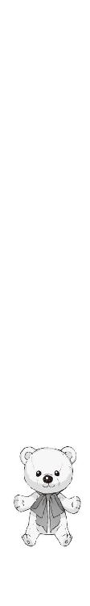
三章
翌日。僕はどんよりと重い気分のまま、午前中の授業の時間を過ごした。
寝不足だった。
ぼろぼろに疲れていたにもかかわらず、昨夜はほとんど眠れなかったのだ。佐伯兄の言葉が気になっていたせいである。
明蓮寺高校は仏教系の男子校。生徒数は三学年合わせて六百人弱。進学率もそこそこ高いが、むしろラグビーや柔道などの、男臭いスポーツの強豪として県内では有名な学校だった。
そんな男の花園みたいな場所に、夜更けになんの用事があったのだろう、と疑問に思う。
しかも怪我人のくせに妹にも内緒で。おまけに今日になっても戻らなかったら、そのことを誰かに話してもいい、などという恐ろしくアバウトな条件つきで。電話で一方的にそんなことを言われて、悩まないほうが不自然だろう。
そして苦悩する僕とは対照的に、妙に楽しそうなのが佐伯妹だった。今朝、僕が佐伯家に迎えにいって、一緒に登校してきたあたりから彼女はなぜか上機嫌で、
「なにやってるの、夏目？」
ぼーっ、と考え事をしているところに声をかけられて、僕は慌てて顔を上げた。
いつの間にか昼休みになっていたらしかった。すぐ傍に立っていたのは佐伯妹だ。怒っていないときの彼女が、僕に話しかけてきたことに軽い戸惑いを感じつつ、
「いや、べつに......それより佐伯さ、あんまり歩かないほうがいいんじゃないか？ 足の怪我、まだ痛むんだろ」
「心配してくれるんだ？」
佐伯妹がクスと微笑んで言った。
「それはまあ、いちおう」
とりあえず素直にうなずいておく。どちらかと言えば心配していたのは、佐伯の怪我が長引くと、そのぶん僕の負担も増えるということなのだけれど。
「大丈夫。それより夏目、英語の課題やってきた？」
「え、いや、まだ途中なんだけど......」
僕は軽く目を泳がせながら言い訳する。実は昼休みのうちに誰かにノートを借りて、写させてもらうつもりだったのだ。しかし生真面目な佐伯妹にそんなことを言ったら、また怒られると思った。だが、
「どうせ、そんなことだろうと思ったわ」
彼女の反応は予想外のものだった。軽くため息をつきながら、佐伯妹はルーズリーフの束を僕の前に差し出してくる。
「え、これって......？」
「あたしのノートの写し。昨日あたしにつき合わせたせいで、夏目、宿題する暇がなかったんでしょ？ だから、その、今回だけ特別よ」
照れたように顔を背けて佐伯妹が言った。
几帳面な文字で埋め尽くされたルーズリーフを、僕は困惑しながら受け取った。普段の彼女からは考えられない行動だった。たしかにありがたいけれど、どういう心境の変化なのだろう、と少し戸惑う。
「あと......これ」
そっぽを向いたままの姿勢で、彼女は後ろ手に隠し持っていたチェック柄のハンカチ包みを僕の目の前に突きつけ、
「お弁当」と言った。
「......べんとう？」
「ほ、本当はお兄様のぶんだったんだけど......その、今日はまだ病院みたいだし、いつもの癖で二人分作っちゃったから、余らせてももったいないじゃない？」
「作り過ぎたって......え？ これって佐伯が作ったの？」
「け、今朝はたまたまよ。たまにはお兄様のためにお料理しようと思って......」
「......いつもの癖って言わなかったか？」
なんか矛盾してるなあ、と思ったが、それを指摘する前に佐伯妹に睨まれたので僕は黙った。
「あー、もうっ！ 要らないならいいわよ、捨てるから」
「あ、いや......なにも捨てなくても。もらえるのなら喜んでもらうけど」
「そう？ なら最初からそう言いなさいよね」
そう言って弁当を押しつけると、佐伯妹はさっさと僕から離れていった。
彼女の後ろ姿を見送りながら、僕は軽い不安を覚えた。いつもの怒ってばかりの佐伯妹とは、まるで別人みたいだった。昨日の佐伯兄の電話といい、今日の彼女といい、あの兄妹が考えていることは僕にはさっぱり理解できない。新手の精神攻撃だろうか。まさか弁当箱を開けたら爆発するってことはないとは思うが。
そんな疑問を感じていたのは、もちろん僕だけではなかったらしい。
『なに今の？ どういうこと？』
「どうなってんだよ、智春。なんで佐伯がおまえに弁当を作ってくるんだ？」
佐伯妹が離れると同時に、操緒と樋口が猛然と僕を問い詰めてきた。操緒は単純に不思議がっているだけだが、樋口の場合、僕の肩を握る手に若干の殺意がこもっている気がする。僕は慌てて首を振る。
「いや、それが僕にもさっぱり事情がわからなくて......」
しかし樋口は、疑念に満ちたジト目で僕を睨み、
「そういやオマエ、朝、佐伯と一緒に登校してきたな？」
「違う違う。いろいろ理由があったんだよ。ほら、彼女、怪我してただろ。それについて僕もまったく無関係ではないってことで」
悪魔が学校に攻めてきて佐伯妹がその巻き添えになったのだ、とはさすがに言えず、僕は曖昧に言葉を濁した。樋口は怪訝そうに首を傾げ、
「なんで智春のせいで怪我したやつが、弁当を用意してくれるんだよ？」
「そうだよな......なんでだろう？」
僕は真剣に困惑しながらつぶやいた。
『んー......毒が入ってるのかも』
真面目な表情でつぶやく操緒。ああ、と樋口が納得したように手を叩く。僕も多少の不安がないわけではなかったが、
「それはないだろ。もともと佐伯の兄貴のために作ったやつだって言ってたし」
佐伯妹の名誉のために、いちおう否定しておいた。
「ふーん、佐伯んとこの兄貴って、あの生徒会長だろ？ あの人、どうかしたのか？」
樋口が少し興味を惹かれたように訊いてきた。
「怪我して病院に運ばれたんだ、昨日」
嘘をついても仕方がないので僕は正直に説明した。
佐伯妹の言葉を信じるなら、どうやら佐伯兄は今日は登校してきてないらしい。そのことに今さら気づいて不安になる。本当に佐伯兄が病院にいるのならいいが、もしも彼が明蓮寺から戻っていないのだとしたら、ちょっと問題かもしれない。
しかしそんな事情を知らない樋口は、
「......チャンスだな」
顎を撫でながらニヤリとつぶやいた。僕は怪訝顔で目を細め、
「は？ なにがだよ？」
「バカだな、智春。兄貴が入院してたら、妹は普通どうするよ？」
「や......知らない、けど......お見舞い、とか？」
「それだよ、それ」得意げに指を鳴らして断言する樋口。「俺が佐伯の兄貴の見舞いに行けば、病院への行き帰りは自動的にあいつと一緒ってことだろ。しかも俺の優しさや気遣いもアピールできて一石二鳥ってワケよ」
ほんとかよ、と僕は思う。
「まあ理屈はわかるけど......でも、樋口ってべつに佐伯の兄貴の知り合いじゃないだろ？」
「いいんだよ。生徒会長が入院してるんだから、見舞いに行くのは生徒としての当然の権利だ。というわけで、俺はちょっと佐伯と放課後の予定について話してくるわ。またあとでな」
「あ、ああ」
スキップするような足取りで、樋口は佐伯妹のほうへと歩いていった。そういう決断だけは早いのだ。動機の不純さはともかくとして、このあたりの樋口の行動力については僕も見習うべきなのだろう。だがしかし、
『まずいんじゃない、智春？ お見舞いって......』
僕の耳元でそう囁いたのは操緒だった。
「だよな」と僕も同意した。
樋口の身勝手な計画が成功するとは思えないが、佐伯妹が兄貴の見舞いに行く可能性は実際かなり高かった。ほぼ確実だといってもいい。つまり放課後までに佐伯兄が病院に戻らないと、彼が明蓮寺高校に行ったことが妹にバレるということだ。そうなったとしても彼の自業自得だが、いちおう事情を知らされている者として、多少の責任を感じなくもない。
「誰かに相談したほうがいいかもな......」
僕はため息混じりにつぶやいた。今日になっても佐伯兄から連絡がないということは、他人に話してもいいという意味だろう。
僕のそんな独り言が聞こえていたのかもしれない。前の席に座っていた嵩月が、小鳥のように小さく首を傾げて訊いてきた。
「あ......相談、ですか？」
「うん。まあ、僕が直接困っているわけじゃないんだけど......」
僕は苦笑して軽く首を振った。そして、ふと嵩月が持っている彼女の弁当箱の存在に気づく。
教室の席の配置やらいろいろあって、樋口と操緒、そして嵩月を加えた四人で僕たちは昼食をとることが多かった。しかし今日の樋口は佐伯妹と放課後の約束を取りつけることに気を取られていて、
「あのさ、嵩月」
「はい」
「昼飯、化学準備室で食べたいんだけど、よかったらつき合ってくれないか？」
「............」
怪訝そうな表情を浮かべつつも、特に文句も言わずにうなずく嵩月。
『どういうこと？』
訊いてきたのは操緒だった。僕は小声で、
「いや、この時間なら朱浬さんがいるかもしれないと思って。あの人、いちおう佐伯の兄貴のクラスメイトだろ？」
黒ずくめのコートをまとう、妖しい先輩の顔を思い出しながら言う。
多少性格に難があるが、こういう事態で真っ先に頼れるのはやはり彼女だった。上級生の教室まで押しかけて、異様に目立つあの人を呼び出すのは勇気がいるが、科學部の部室でなら人目を気にせず相談できる。
操緒も納得したように肩をすくめ、
『んっ、相談するには妥当な人選だね』
「だろ。それに、教室で佐伯の弁当なんか食べてたら、どうせまた樋口が騒ぎ出すからさ」
『ふーん......つまり佐伯ちゃんのお弁当を独り占めしたくて逃げるってこと？』
「違っ......そうじゃなくて！」
詳しい事情を樋口に説明してたら面倒なことになるから、それを避けるためにやむを得ず避難するのだ。決してやましい気持ちではない。
「佐伯だって好意で弁当をくれたわけだし、そのことで騒がれたりしたらあいつに悪いだろ。樋口に勝手に譲ってやるわけにもいかないしさ」
『まあそういうことにしておいてあげる』
「いやだから、そうなんだって」
冷たい視線で見つめてくる操緒に、僕は必死で言い訳する。
「......おべんとう......」
嵩月はその間、なぜかいつもよりも無表情に、チェックのハンカチに包まれた佐伯妹特製の弁当をじっと見つめていた。
○
科學部が部室がわりに占拠している化学準備室には、呪われた古代の遺物やら怪しげな黒科学的オブジェやらが無数に陳列されており、そのせいか、古びた建物全体が不気味な雰囲気を醸し出していた。当然ながら普通の教師や生徒は滅多に寄りつかず、おかげでそこは科學部の顧問教師市原の、ほとんど専用個室と化している。
市原は二十代後半の化学教師だ。
よれよれの白衣と無精髭。人生に疲れた中年親父のような哀愁を漂わせた独身男である。
昼休みの彼はたいてい一人でカップ麺をすすっているか、煙草をふかしているかのどちらかだった。しかし今日は少し様子が違った。化学準備室に彼以外の人物がいたからだ。
ついでにいえば化学準備室の雰囲気自体が、知らないうちにずいぶん変わっていた。
「あの......なにがあったんですか、ここで？」
様変わりした準備室内を見回して、僕は恐る恐る質問する。
準備室の中には大きなホワイトボードが持ちこまれ、作業机の上に大量の教科書と参考書。そして課題プリントの束が積み上げられていた。壁にはカレンダーや課題の達成状況を示すグラフが貼りつけられている。まるで受験直前の予備校生の部屋のようだ。
「補習だよ。そいつのな」
スチール机に頬杖をついたまま、ため息混じりにつぶやいたのは市原だった。
彼が指さした作業机の奥には、ぐったりと疲れた様子の男子生徒が、突っ伏すような姿勢で勉強中だった。
ひょろりと頼りない長身の上級生だ。ぼさぼさの長髪に丸メガネ。端整なのだが、どこか垢抜けない顔立ち。科學部部長の三年生、 塔貴也。
塔貴也。
「......部長？ 補習って、昼休みまで？」
「仕方ないだろ。のやつが学校を休みすぎたせいで、普通の補習じゃ出席日数が追いつかないんだよ。早朝から放課後までみっちり補習して、どうにか卒業には間に合うって感じだな」
「はあ......なるほど」
市原の投げやりな説明で、僕はだいたいの事情を理解する。部長は重度の引きこもりとして、つい先日まで、自宅の庭のシェルターから一歩も外に出ずに生活していた。もちろんその間、学校には来ていない。どうやら、そのツケが一気に回ってきたらしかった。
僕たちが準備室に入ってきたことも気づかず、うつろな顔で補習を続ける部長を見ていると、他人事ながらさすがに可哀想になってくる。
『あのぅ......補習というのはわかったんですけど、どうして科學部の部室で？』
操緒が実にもっともな疑問点を指摘した。
よくぞ訊いてくれた、と言いたげに市原が大きく肩をすくめた。市原としても誰かにグチをこぼしたかったらしい。
「とりあえず、登校拒否をやめて学校に出てきたのはいいことだけどな。あいつ、教室に行くのが嫌だとか言いだしやがってな」
「......はあ」
「ずっと引きこもりで友達もいないから、とか言われちゃあ、担任も無理強いするわけにはいかないだろ。それで俺のところにお鉢が回ってきたんだよ。ったく、保健室登校ならともかく、化学準備室登校ってなあ、どういうことだよ？」
「それはまた......なんというか微妙な状況ですね」
僕は歯切れの悪い感想を洩らした。部長の態度も問題だとは思うが、学校側の対応もかなりアレだなあ。
『冬琉会長に説得してもらったらいいんじゃないですか？』
前向きな解決策を提案する操緒。しかし市原は首を振り、
「橘高か。まあ、頼むだけ無駄だろうな。橘高も生徒会長としては有能なんだが、にだけは甘いんだ。昔から」
「なんとなくわかる気がします......」
先日の花火大会での光景を思い出して、僕は弱々しくうなずいた。結局あのときは僕たちも、彼女と部長をくっつけるために冬琉会長に利用されたようなものだったしな。
言いたいことを言ってすっきりしたのか、市原はガリガリと頭をかきながら立ち上がった。
「まあいいや。おまえら、部室で弁当食べるつもりで来たんだろ。ついでにが逃げ出さないように見張っといてくれや。俺もちょっとメシ喰ってくる」
「あ、はい。わかりました」
そう言ってうなずいてはみたものの、補習用の教材で埋め尽くされた作業机には弁当を広げられそうなスペースはない。戸惑い気味に僕が立ち尽くしていると、
「あの......これ......」
「あ、サンキュ」
嵩月が余っていたパイプ椅子を出してきてくれた。机が使えないのは不便だが、これでどうにか食事くらいはできる。わけもなく疲れた気分で、僕がパイプ椅子に腰を下ろしたとき、
「......ようやく行ってくれたか」
むくり、と唐突に頭を上げて部長がつぶやいた。長い前髪を鬱陶しげに払いのけ、疲れたようにため息をつく。
「部長？ なんだ、気づいてたんですか？」
僕は弁当箱を開けながら、驚いて訊いた。部長はメガネのズレを直しながら、
「うん。ちょっと気が遠くなりかけたのは事実だが......さすがに毎日十時間の補習は辛いな。パソコンの画面から半日近く離れているせいで、禁断症状も少々......」
「はあ......禁断症状......」
震える自分の両手を見つめる部長の姿に、僕はちょっと不安を覚える。どうやら彼の肉体は、長年の引きこもり生活によって深いダメージを受けているらしい。この人、まともに社会復帰できるのか？ なんでこんなのが科學部の部長なんかをやっているのだ？
「それよりも、きみたちは、なにか用があって部室に来たのではないのかね？」
「あ、ええ。そうなんですけど......」
最初の目的を思い出して、僕は準備室の中を見回した。室内にいるのは僕たちだけ。朱浬さんの姿は見あたらない。
「実は朱浬さんに相談したいことがあったんです。けど、今日は彼女、来てないですよね？」
「ああ」と部長はうなずいた。「黒崎くんなら今日は休みだよ」
「休み？」
僕は少し驚いて言った。佐伯兄だけでなく、朱浬さんも？
「彼女は今日は潮泉家に行ってる。修学旅行が近いからね。その前のメンテナンスを兼ねて、新装備のテストに」
「......新装備？」
「うん。僕が自宅に籠もってる間に試作した装備がいくつかあったから」
「試作って......」
彼の意外な言葉に僕たちは困惑する。操緒がぱちくりと目を瞬いて、
『えっ？ もしかして、朱浬さんがたまに持ち出してくるびっくりメカを作ったのって......』
「びっくりメカというのがなにを指しているのか今イチわからないが、彼女の飛行ユニットや専用火器を設計したのは僕だよ」
部長は淡々とした口調でえらいことを告げる。その衝撃の事実に、僕は軽い目眩を感じた。どうせそんなことだろうと思っていたが、この人もやはり非常識な人間だったのか。
「僕は機巧師なんだよ。黒科学のテクノロジーを利用した装置を設計する技術者だ。科學部に在籍しているのも、黒科学の情報を効率よく手に入れるためでね。きみたちが入学してから手に入れてくれたデータは実に興味深かったよ。感謝する」
そう言って部長は僕たちに深々と頭を下げた。いや、礼を言われても困るというか、むしろなんとなくむかつくのですけれど。人がさんざん苦労したことを、勝手に分析に使わないでいただきたい。まあ、それはともかく。
「だったら朱浬さんには今日は連絡しないほうがいいですね」
僕は薄くため息をついた。メンテナンスの邪魔をしては悪い、という気持ちもあるが、それよりも新装備のテスト中というのが気にかかる。彼女に余計なことを吹きこんだら、試作装備とやらを装着したままカッ飛んできそうで、そのことが恐ろしい。
部長は、ふむ、と興味深そうに僕を見た。
「黒崎くんに相談したいことというのは、個人的な悩みかね？」
「いや、そういうわけではないのですが」
「僕でよければ話を聞くけど？」
「ええと......そうですね」
僕は少し考えて、特に問題ないと判断する。引きこもりとはいえ上級生だし、僕たちよりも洛高の事情については詳しいはずだ。それに冬琉会長の幼なじみが、彼女と同じ生徒会長の佐伯兄を知らないってこともないだろう。
「実は相談というのは、明蓮寺高校のことなんですけど......」
いきなり悪魔云々の話を持ち出すというのもアレなので、とりあえず当たり障りのなさそうな話題から口にしてみる。部長は、なぜかそれだけで納得したようにうなずき、
「なるほど。第一生徒会関係の問題か......」
あっさりとそうつぶやいた。
呆然と目を丸くする僕と操緒。事情を知らない嵩月が、きょろきょろと僕たちの顔を見比べている間、僕は声も出せずにいた。
『......どうして第一生徒会が絡んでるってわかったんですか？』
言葉が出せない僕の代わりに、操緒が上擦った声で訊いた。
動揺する僕たちとは対照的に、部長は面白くもなさそうな顔で、
「きみたちが知りたいのは神聖同盟の件ではないのかい？」と訊き返してくる。
『......神聖同盟？』
「神聖防衛隊、つまり洛高の第一生徒会が、県内にあるいくつかの高校の生徒会と締結している同盟条約だよ。詳しい内容は明かされていないが、おそらく相互不可侵や技術交流、それに集団的自衛権の行使といったところだと思う」
『集団的自衛権って......』
操緒が振り返って僕を見る。僕は必死で頭を整理しようとした。集団的自衛権ということは、つまりあれか。どちらかの生徒会が何者かに攻撃されたら、彼らは共同して敵に立ち向かう、ということか。
それは重要な情報だ。
情報その一。洛高の第一生徒会と、明蓮寺高校の生徒会は同盟関係にある。
情報その二。明蓮寺高校の生徒会が敵に襲われたら、洛高の第一生徒会は、彼らと一緒に戦う義務がある。
情報その三。洛高第一生徒会の会長は佐伯兄。
情報その四。佐伯兄は、昨夜いきなり明蓮寺高校に向かったまま戻っていない。
『......それってつまり、明蓮寺高校が誰かに襲われて、佐伯ちゃんのお兄さんに助けを求めてきたってことじゃないの？』
僕よりも先に結論に辿り着いた操緒が、眉を寄せながらつぶやいた。
「うっ」
やはりそうか、と僕は呻いた。そう考えればたしかに辻褄が合う。負傷した佐伯兄が単身で明蓮寺高校に向かったのも。万一の場合に備えて、という彼の言葉も。
「......明蓮寺の生徒会が襲撃を受けている？ それは確かな情報？」
部長が興味を惹かれたように、身体を乗り出して訊いてきた。
「いえ、それは今のところなんとも。佐伯あ......会長が明蓮寺に向かったということしか」
「ふむ......しかし、それは興味深い傍証だな」
部長が他人事のようにつぶやく。いや実際、彼にとっては他人事なのだけれど。
『冬琉会長あたりから、明蓮寺の生徒会に確認してもらうのはダメですか？』
操緒が部長に手を合わせて訊いた。しかし彼は素っ気なく首を振る。
「無駄だよ。神聖防衛隊と友好関係にあるということは、巡礼者商連合や科学狂会とは仲が悪いということだからね。第二や第三生徒会が明蓮寺高校に問い合わせたとしても、自分たちが襲撃されているなんて重要な情報を教えてくれるわけがない」
「そうか......」
だから佐伯兄は僕にあんな曖昧な伝言を残したのだ、と今さら気づく。佐伯兄の立場では、明蓮寺が襲撃されているということを、自分の口から明かすわけにはいかなかったのだ。
『直接行って見てくれば......？』と操緒。
「たしかにそれなら確実だが、誰が行くんだい？」
部長に訊き返されて僕たちは黙りこむ。
佐伯兄の命令なしで、第一生徒会の連中が動いてくれる可能性は望み薄だった。そういうところは融通が利かない集団なのだ。
第二生徒会の連中なら頼めば調べてくれそうな気もするが、調査費用を請求されるのは確実で、しかも本当に明蓮寺高校が襲われていた場合、救援どころか火事場ドロボウをやりかねないところが恐かった。なにしろ金のためなら平気で身内でも売り渡す連中なのである。どうしてそんなのが生徒会をやっているのか、ちょっと真剣に疑問に思う。
第二生徒会がダメなら第三生徒会に頼むべきだが、それもまたべつの理由で論外なのだった。なにしろ冬琉会長は日本刀を背負っているのである。そんなのがよその学校を訪ねていったら、どっちが襲撃者だかわかったものではない。いくらあの人が常識人でも日本刀はダメだ。
生徒会の数だけは多いが、意外に使える人材というのはいないものだった。
「結局、自分で行くしかないか......」
僕は深々と息を吐いた。だね、と操緒が同意する。
「きみが？」部長が少し驚いたように眉を上げた。「意外だな。きみはこの手の厄介事に巻きこまれるのが嫌いな人種かと思っていたんだが」
「いや、まあ、厄介事が好きという人はあんまりいないと思いますが......」
たしかに自分らしくない行動だとは思う。たとえ佐伯兄が襲撃事件に巻きこまれていてもそうでなくても、僕が明蓮寺高校まで行く理由はなにもない。
だけど、と僕は、自分の膝の上にある食べかけの弁当を見つめた。
思い出したのは佐伯家の自宅のことだった。
一人で食事をするには、あまりにも静かでだだっ広い食堂。
正直いって今でもあの兄妹はちょっと苦手だが、だけど兄貴や哀音に何かがあって、佐伯妹が悲しんでいる姿は見たくなかった。
そもそも佐伯兄が病院から脱け出したことを知っていて、それを妹に黙っていた時点で、僕もこの件とは無関係ではないのだ。むしろ佐伯兄の共犯者なのである。
「明蓮寺高校が襲撃されてると確定したわけでもないし、たぶん大丈夫だと思います。もし本当にヤバそうだったら逃げますし」
ははは、と頼りなく笑いながら僕は言った。そう、とりあえず佐伯兄の安否が確認できれば済むことだ。無事ならなにも問題ないし、危険なら危険だとはっきりすれば、あとは第一生徒会の連中がなんとかしてくれるだろう。僕が危ない橋を渡る理由はない。ちょっと様子を見てくるだけだ。
「そういうわけで午後の授業は出られないからさ」
僕は残っていた弁当のおかずを急いで平らげながら、嵩月に手を合わせた。
「悪いんだけど、嵩月、この弁当箱を佐伯に返しておいてもらえないかな。あとついでにお礼も言っておいてくれたら嬉しい」
「............」
嵩月は無表情に僕を見つめ、無言のままふるふると首を振った。
そうか。やはりこういうことをほかの女子に頼むのは失礼か。お礼を言うなら自分で言えということだろうな、と僕が勝手に納得しかけたとき、
「わたしも......行きます」
嵩月がきっぱりとそう言った。
「え？」僕は唖然として彼女を見た。「いや......でも、それは......」
『いいの？ だって第一生徒会長の様子を見に行くんだよ？』
操緒も驚いたように訊き返した。嵩月は洛高に入学して早々に、悪魔だからというだけの理由で、佐伯兄に危うく殺されそうになったことがあるのだ。だがしかし、
「あ......それは......関係、ない」
嵩月は再びふるふると首を振る。
「わたしは......夏目くんを護衛するだけだから」
「いや、護衛って......そんな大げさな......」
僕は焦って首を振った。いくら嵩月が悪魔でも、彼女の見た目はか弱い女子なわけで、そんな子に守ってもらうというのはどうかと思う。
「それに、たぶん危ない目には遭わないと思うよ、うん。ちょっと行って見てくるだけだし」
「あー......だったら尚更。わたしが一緒にいっても、迷惑ではないですね？」
「う......そ、それはそうだけど」
嵩月を説得するつもりが、逆に言いくるめられそうになって僕はうなった。喋りはトロいが、基本的に頭のいい子なのだ。弱っ、と操緒が聞こえよがしに僕の耳元でつぶやく。
考えてみれば、嵩月が同行すると言い出すのは予想できたことだった。操緒のかわりに僕を守ると、彼女は以前から口癖のように主張していたからだ。
嵩月は僕の契約悪魔ではないのだから、本当は彼女が僕を守る理由はない。だがそのことを指摘したら、だったら契約してください、と言われそうで少し恐かった。
彼女に手を出したら殺すと佐伯兄に脅されていたし、もし嵩月にそんなふうに頼まれたら、正直、断る自信がないからだ。だって、やはり嬉しくないといえば嘘になるし。
「まあいいか」
結局、僕は彼女の説得をあっさり諦めた。嵩月が一緒に来るというのを、無理に拒否する理由もないのだった。操緒が小さくため息をついていたが、気づかなかったことにする。
「そういうことで、ちょっと行ってきます。どうも、お邪魔しました」
昼休み返上で補習中の部長に、僕は遠慮がちに挨拶した。とりあえず状況は呑みこめたし、ここに長居する理由はもうなかった。だが、部長は少し黙考したあとで、おもむろに告げた。
「待ちたまえ、夏目くん。僕も同行しよう」
「いや、でも部長は補習があるんじゃ」
僕は戸惑いながらそう言った。彼が逃げ出さないように見張っていろと、いちおう市原にも命じられているのだ。しかし部長は、心配はいらない、とうなずいて、
「ああ、そうだ。だからこれを使う」
「は？ こ、こあら......？」
部長が僕の目の前に、ぬっとなにかを突き出してきた。
それは身長六十センチほどの、縫いぐるみのコアラだった。
いっちゃあなんだが不っ細工なコアラである。こいつを連れて行けということなのだろうか。それは全力で断りたい。こんなものを高校生の男子が昼日中から持ち歩いていたら、どこかに通報されるのではないかなあ、と思う。
「ええと、じゃあそういうことで」
部長の最後の言葉は聞かなかったことにして、僕は急いで踵を返した。これ以上つき合っていたら、本気で部長の変な趣味を押しつけられそうだ。きょとんとしている嵩月の手を引きながら、さっさと部室を出て行くことにする。
その僕の背中に、突然なにかが飛び乗ってきた。嵩月が息を呑む気配がした。
「え!?」
ずっしりと重い金属の感触と、モーターの駆動音。驚いて振り返ろうとした僕の頬に、強く押し当てられたのは鈍く光る鉤爪だった。
『智春、これって......』
声を出せずにいる僕に代わって、操緒が呆然とつぶやいた。
「......だから僕も連れて行けと言っているだろう？」
部長の声で僕に笑いかけてきたのはコアラ。
縫いぐるみのコアラが、金属製の鉤爪を伸ばして不細工に笑っていた。
○
明蓮寺高校に着いてすぐ、僕は嵩月を連れてきたことを後悔した。
最近は慣れのせいであまり意識せずにいたのだが、やはり嵩月は半端ではない美人なのだ。
顔立ちは端整でスタイルは抜群。彼女が普通に歩いているだけで、その可憐な物腰に目を奪われる。艶やかな黒髪と透けるような白い肌のコントラストで、彼女の周囲は柔らかな光の帯で包まれているようにも見える。
そんな美少女オーラをまき散らす女子高生が、他校の、しかもガチガチの男子校の校庭を歩いていて、人目を惹かないわけがないのだった。
「なに......なになになに？ なんだあれ!?」
「女子高生？ 誰かの知り合いか？」
「......すっげえ美人なんだけど......なんで明蓮寺に？」
「てか、隣にいるあの男はなんなんだよ？」
明蓮寺の校舎内にいた生徒の数人が、僕たちに気づいて、驚いたように窓枠から身体を乗り出してきた。その数は瞬く間に膨れあがって、ちょっとした騒ぎになっていた。
『うわ......なんか目立ってるよ、あたしたち』
操緒が愉快そうに笑って僕に囁いてくる。
そういう操緒だって、タイプは違うが、実は嵩月と並んでも遜色ないくらいの美少女だ。
色素が薄くてちょっと透けているが、遠目には普通の人間と変わりなく見える。むしろその存在の不安定さに、ミステリアスな神秘性を感じて魅力的に思う連中だっているだろう。
そして、そんな美少女二人を引き連れた僕の存在を、明蓮寺の男子どもがどんなふうに見ているのか、想像するだけでも恐ろしかった。
彼らの視線に露骨な羨望と怒りの気配を感じて、僕は思わず顔を隠した。
なんだかんだで可愛い女子が多いといわれる洛高と違って、明蓮寺高校に女っ気は皆無だ。その中で嵩月と操緒の存在は目立ちすぎる。需要と供給のバランスが絶望的に悪すぎる。
操緒は僕に憑いてる幽霊なので、もともと僕の肩にくっつくようにして浮かんでいる。しかも僕に向けられた殺気に気づいて、嵩月が庇うように身体をぴったりと寄せてきた。
その光景で明蓮寺の男子の嫉妬心が一気にヒートアップする。このままでは暴動が起きるのではないかと思う。佐伯兄の安否を確認するどころではなく、僕の命が危ない。
『んー......平和だねえ』
呆れたようにつぶやいたのは操緒だった。どこがだよ、と僕は思う。しかし冷静に考えれば、操緒の言うことにも一理ある。女の子が校庭を歩いているだけで騒ぎになるというのは、逆にいえば平和だということだ。とても何者かの襲撃を受けている高校とは思えない。
もっと緊迫した状況を覚悟して来ただけに、あてが外れた、というのが正直な気分だった。
とにかく佐伯兄を捜さなければならないが、その方法を思いつかない。こういう平和的な環境下でどうすればいいのかなんて想定していなかった。
『それで、これからどうするの？』
操緒に訊かれて、僕は肩をすくめた。
「とりあえず、明蓮寺の生徒会の人に会うしかないよな。誰か暇そうな生徒を見つけて、生徒会室まで案内してもらわないと」
『......あのさ、智春。それって、こないだ鳳島がやってたことと同じなんじゃ......？』
「言わないでくれ。自覚してるから......」
僕は弱々しく首を振った。あのバカと同じやり方しか思いつかないというのは、頭の中身が同レベルと指摘されたみたいで、我ながらひどく情けない。しかしほかに代案も出てこない。
「あの......それなら......」
嵩月が、つん、と僕の袖を引いた。彼女が指さした先には来客用の昇降口らしきものがあり、ついでに暇そうな生徒が数人たむろしていた。それほど危険そうな連中には見えない。嵩月あたりに声をかけてもらえば、尻尾を振って生徒会室まで案内してくれそうだ。
人見知りの嵩月に、そういうことを頼むのは気が引けるが、
「じゃあ嵩月......悪いけど、あそこの男子にちょっと声をかけて生徒会室まで案内を」
『その必要はないよ、夏目くん！』
嵩月の胸に抱かれていたコアラの縫いぐるみが、唐突に僕を見上げて言った。うわ、と僕は小さく悲鳴を洩らした。嵩月も少し目を丸くしている。
「な、なんなんですか。いきなり動き出さないでくださいよ、部長。驚くじゃないですか」
荒く息を吐きながら僕は抗議した。
縫いぐるみコアラは無表情に、「慣れてくれ」と勝手なことを言う。
科學部長のに渡されたこのコアラの正体は、絡繰り仕掛けの機械人形。第二生徒会が使う殺人人形と同様のロボットだった。
ただし簡単な命令しか実行できない殺人人形と違って、このコアラは部長と五感を共有しており、彼の意のままに動かせるという。まさしく彼の分身なのだ。
「黒科学の研究の産物だよ。副葬処女の射影体と同じ、疑似感覚入出力デバイスなんだ」
というのが、部長の説明だった。さすがに機巧師を名乗るだけのことはあるというべきか、実はそれって相当すごい技術だと思うのだが、
「これで僕は部室に引きこもったままで、自由に外を出歩くことができるというわけだよ」
とも彼は言った。どうやら安全な部室から外に出たくない、というだけのワガママな理由で開発されたシステムらしかった。
とにかくそんなわけで、今はこのコアラが実質的に科學部の部長ということになる。
今さらながら非常識な先輩だと再認識する。科學部の部長という時点で、まともな人物ではないと諦めていたが、まさかここまでとは思わなかった。しかもよりによってこんな不細工なコアラ。もう少しまともなボディはなかったのだろうか。
しかしそんな不細工なコアラも、嵩月に抱かれていると、それなりに可愛らしく見えるのが不思議だった。そしてコアラは、鉤爪つきの前肢で目の前の雑木林を指さして、
『その道を真っ直ぐに進むといいいよ。生徒会室はたぶんその先にある』
「部長は前に来たことがあるんですか？」
軽い目眩のような違和感を覚えながら、僕は訊いた。校庭の雑木林の中にそんな道が存在することに、部長に指摘されるまで気づかなかった。その道の先に生徒会室があると、どうして部長は知っていたのだろう。
『ないよ。だけど、その森にはどうやら護法結界が張ってあるようだからね』
「護法......結界？」
『部外者を近寄らせないための人払いの仕掛けだよ。見たまえ』
不細工コアラが指さしたのは木々の根元に埋めこまれた機械だった。小型スピーカーのような形のそれが、雑木林を取り囲むように無数に配置されている。
『魔術的な作用で結界の外にいる人間の接近を防ぎ、結界内で発生した音や衝撃を外部に洩らさないようにするシステムだ。神聖防衛隊が大規模な戦闘を行う際に、周囲への影響を抑えるために使う。この機巧偶人のセンサーは騙せないけどね』
そう言って部長は少し得意げに胸を張った。見た目ただの不細工な縫いぐるみだが、たしかに意外と高性能である。
「えーと、神聖防衛隊の装備ってことは......」
『これを設置したのは佐伯ちゃんのお兄さん？』
僕と操緒が口々に質問した。
『確実とは言えないが、可能性は高いね』
嵩月の腕の中から飛び降りて、部長コアラは林の中へと入っていく。多少の不安を感じながら僕は彼のあとを追った。そのすぐ後ろを、警戒するような表情で嵩月がついてくる。
明蓮寺高校は緑深い高台にある高校だった。
仏教系の学校だけあって、正門に続く入口は長い石段になっている。裏山にあるのは有名な寺院だ。険しい山の稜線が、いかにも古刹という荘厳な雰囲気を醸し出している。
結界が張られた林の中の小道は、その裏山の中腹へと続いていた。
昼なお暗い森の奥に、喧しい蝉の声が降り注ぐ。
結界とやらの境目を乗り越える瞬間、僕はかすかな不快感を覚えた。うまく説明できないが、空気が変質したような感覚だった。封鎖された空間の中に、膨大な魔力が澱んでいる気配。
これと同じ感覚を、僕は以前にもどこかで味わったことがある。
ふとそのことを思い出す。
二カ月ほど前の出来事だ。ＧＤの千代原はる奈と初めて出会った夜。あのときも結界の中には佐伯兄がいた。彼だけではない。あの夜は、学生連盟に所属する演操者が何人も駆り出されたのだ。たった一人の機巧魔神使いを捕獲するために。
いや違う。あのとき彼らが追っていたのは──
『見て、智春。あれ！』
僕の思考を中断させたのは操緒の声だった。
彼女は木々の隙間から見える建物の影を指さしていた。
寺院風の古い木造建築だ。おそらく元は僧房だったのだろう。築後数百年が経過して、それでも荘厳さを残した立派な建物である。
しかし操緒が驚いていたのは、その建物の近くにある立て看板のせいだった。
そこだけ妙に安っぽい表札風の看板には、明蓮寺高校生徒会室、と記されている。
「生徒会室......ここが？」
僕は驚いて建物を見上げた。
そして息を呑んだ。
生徒会室が古い僧房だったことに驚いたわけではない。
僕が驚いたのは、その荘厳な生徒会室が、破壊されていたせいだった。
本瓦葺きの屋根から裏側の赤壁まで、凄まじい衝撃を受けて押し潰されたように壊れている。それはまるで、見えない巨大なハンマーで力任せに殴られたような凄惨な光景だった。
『ほう......爆発物が使われた痕跡はない、な......建設重機が入りこめる地形でもない......』
部長が冷静に観察しながらつぶやいた。
しかし、そんなふうに分析するまでもなく、僕たちにはわかっていた。
木造とはいえ安普請のプレハブ建築とはわけが違う。柱の太さだって尋常ではないし、分厚い土壁は並大抵の衝撃でどうにかなるようなものではない。
それを重機も爆発物も使わずに、こんなふうに破壊できるとすれば、それは悪魔の力以外にあり得なかった。機巧魔神の攻撃によるものだ。それも《鐵》に匹敵する力を持つ機巧魔神でなければ、これほどの破壊を引き起こすのは不可能だ。
『......中で生き埋めになってる人とか......いないよねえ？』
操緒が頼りない声でつぶやいた。その可能性に気づいて僕はゾッと背筋を凍らせた。
あの頑丈な僧房を一撃で崩壊させるほどの攻撃を受けたのだ。崩れ落ちた瓦礫の重量も相当なものだろう。もしも建物の中に逃げ遅れた誰かがいたら、無傷でいられるとは思えない。
そして、もしかしたらそこには佐伯兄が含まれているかもしれないのだ。
「あっ......」
嵩月が細いつぶやきを洩らした。
あまりにも突然のその声に、僕の心臓が大きく跳ねた。顔面を硬直させたまま振り返る。
嵩月は無言のまま、薄暗い木立の奥を見つめていた。
彼女が見つめる視線の先には、うっすらと白い少女の影が浮かんでいた。
重力を無視して空中を漂う肢体。色素の薄い肌を透かして、背後の景色が滲んでいる。
まごうかたなき幽霊である。白いドレスを着た幽霊の少女。
薄暗い森の中を彷徨う幽霊。そんなものに遭遇したら、普通は悲鳴を上げて逃げ出しているところだが、生憎、僕たちは幽霊には慣れていた。
それどころか、その幽霊の少女は僕らの知り合いですらあった。
『出た......白フリル女！』
操緒がいつもの癖で身構えた。嵩月も反射的に警戒姿勢になる。僕は慌てて両手を広げ、彼女たちを押しとどめながら前に出た。
そんな僕たちの眼前に、白いドレスの幽霊が音もなくふわりと舞い降りてくる。
「哀音......さん......」
僕は彼女の名前を呼んだ。
小柄で無表情な射影体の少女。間違いなく佐伯兄のパートナーの哀音だった。
「あの......生徒会長は今どちらに？ てか、これって、いったいなにがあったんですか？」
彼女と会えたことに安堵しながら僕は訊いた。周囲に佐伯兄の姿は見あたらなかった。だが、ここに射影体がいるということは、そう遠くない場所に演操者もいるということだ。おそらく佐伯兄は無事でいるはず。
しかし哀音は僕の質問には答えてくれなかった。
彼女は表情のない瞳を僕に向け、機械的な口調で静かに告げた。
『逃げてください』
「......え？」
僕は間の抜けた顔で彼女を見つめた。そんな緊迫感のない表情で言われても、あまり実感が湧かないのですが、もしかして僕たちは警告されているのでしょうか？
『交戦中の敵が接近しています。相対距離約二百七十メートル。接触までの推定時間約七秒』
「て......敵って......」
訊き返す僕の言葉よりも早く、警告を終えた哀音の姿がすっと薄くなって虚空に溶けこんだ。
僕は呆然と立ち尽くした。
敵がいると哀音は言った。つまり佐伯兄は昨夜からずっと誰かと戦闘を続けていたということか。そしてその敵は、今は僕たちのほうに接近してきている、と。
接触まで残り約七秒。
つまり七秒後に敵の攻撃が始まるかもしれないということになる。
いや、もうすでに七秒も残っていない。こうして僕が立ち尽くしている間にも、時間は刻々と減っている。残りはせいぜいあと三秒。いや二秒。こんなことを考えている暇はない。それはわかっているのだが、焦ってほかになにも思いつかない。
残り時間が一秒を切った。接近するなにかの気配に気づいて、操緒がハッと顔を上げた。
そして残り時間がゼロになった瞬間、
僕はいきなり激しい衝撃を受けて吹き飛ばされていた。
○
「ぐわっ......！」
固い地面に身体をぶつけて僕は呻いた。ざらざらとした土の感触。節くれた木々の根っこが容赦なくガリガリと僕の背中を削っていく。
そして次の瞬間、柔らかな重みが僕を押し潰した。
視界が暗くなって息が出来ない。苦しい。しかしその息苦しさの中には、どこか幸せな感触があった。言葉にできない独特のハリと弾力、そしてものすごく甘いいい匂いを感じる。ここが天国だといわれたら信じてしまいそうなその場所は、
「うー......」
細いうなり声を上げる嵩月の胸の中だった。
嵩月の細い身体が、仰向けの僕に覆い被さるように倒れている。敵の攻撃が僕たちを襲う直前に、彼女が僕を突き飛ばしてくれたのだ。
「嵩月......いったいなにが......うっ!?」
彼女の足元。ほんの一瞬前まで自分が立っていた場所を見て、僕は言葉を失った。
巨大な鎌を突き立てたように、地面が深々と抉られて裂けていた。あのままぼーっと突っ立っていたら死んでいた。危うく全身を挽肉にされるところだったのだと気づく。
『智春！ 生きてる!?』
操緒が声を上擦らせながら舞い降りてきた。
「ああ。だけど、これって......」
起きあがろうとした僕の耳に、ヒュンヒュンと耳障りな音が聞こえてきた。高速で風を切る鞭のような音だ。
「さがって！」
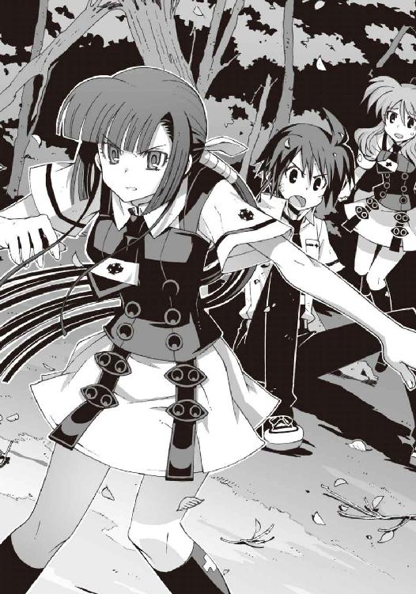
重力を感じさせない俊敏な動きで嵩月が身体を翻し、次の攻撃に備えて身構えた。僕を庇う彼女の背中から、ゆらりと陽炎が立ち上る。
「待った、嵩月」
この敵は危険だ、と直感的に悟って、僕は逆に嵩月の前に出た。
佐伯兄を捜しに明蓮寺高校に行くと言い出したのは僕なのだ。無関係の嵩月を危険に晒すわけにはいかない。
「こいつは、僕と鐵がやる」
僕は操緒の横顔を見上げて言った。振り向いた操緒が、強気に微笑んでうなずいた。しかし、
「だめ！」
悲鳴のような声で嵩月が叫んだ。彼女は驚くほど恐い顔で僕を見つめていた。
「だめです！ 夏目くんがこの敵と戦っては」
「いや、だけど嵩月に守ってもらうわけにはいかないし」
「そんな......だって、わたしは......！」
「いいから嵩月はさがっててくれ」
「いやです！」
嵩月がめずらしく感情を露わにしていた。無理やり僕の前に出ようとする彼女を、僕は必死で押しとどめた。どうして彼女がこんな意地を張っているのかわからなかった。嵩月に守ってもらおうなんて僕は望んでいないのに。
『ちょ、ちょっと智春も嵩月さんも、今はそんなことしてる場合じゃ──』
操緒がおろおろしながら僕たちの間に割りこんでくる。
その直後、ギュン、と空気が裂ける音がした。そして金属が爆ぜるような炸裂音が響いた。
『ひぎゃっ！』
悲鳴を上げて吹き飛んだのは、不細工コアラの縫いぐるみだった。
風を切り裂いて飛来した攻撃の正体は鞭。稲妻のように飛来した黒い鞭が、部長の機巧偶人ボディを叩きつけたのだ。哀れな不細工コアラは、ビリヤードの玉のようにあちこちぶつかりながら吹き飛んで、そのまま森の中へと消えていく。
「あっ......」
「ぶ、部長!?」
嵩月と僕は、吹っ飛ばされた部長の姿を唖然として見送った。操緒は表情を強張らせ、
『智春、今の攻撃って......』
わかっている、と僕はうなずいた。今の攻撃の正体を僕は知っている。前にも戦ったことがある。黒檀を磨いたような艶やかな黒い鞭。機巧魔神の力すら凌駕するあのパワーは、
「来い、鐵！」
嵩月の注意が逸れた一瞬の隙を衝いて、僕は叫んだ。
操緒の姿がモザイク状に分解されて虚空に溶けた。
同時に僕の足元の影が濃さを増し、完全な虚無の闇へと色を変える。
その闇色の影をこじ開けるようにして、地面から迫り出してきた影があった。
漆黒の鎧に包まれた巨大な腕。機械仕掛けの人造の悪魔──機巧魔神。無数の歯車の音をまき散らしながら、猛々しい機械の巨人が、僕に従う守護騎士のように立ち上がる。
ギュン、と再び空気が裂けた。
飛来した長大な鞭を、《鐵》が機械の腕で受け止める。
「ぐ......」
噛みしめた歯の隙間から声が洩れた。
激突の凄まじい衝撃が、演操者である僕の身体にも伝わってきた。《鐵》の巨体が激しく振動する。想像を絶する圧倒的な力と力のぶつかり合いで、大地までもが大きく揺れていた。
黒い鞭を操る敵が、破壊された僧房の上に姿を現した。
それは女性の姿をしていた。
黒褐色の肌を持つ外国人風の美しい女性だ。
しかし僕は彼女の正体を知っていた。
彼女は人間ではないのだ。あの美しい姿も、彼女が擬態した仮初めの形でしかない。彼女は決まった姿を持たない不定形の魔獣。運喰らいの悪魔の一族が召喚する使い魔。軟体獣。
《鐵》をも圧倒する黒い鞭は、彼女の右腕が姿を変えたものだった。
魔力の供給が続く限り、彼女の肉体は無限に増殖して自在に形を変えるのだ。
一本の鞭だけでは《鐵》を倒せないと判断したのだろう。ニヤリ、と人間臭く笑って、軟体獣の彼女は左腕を上げた。その腕が、新たな鞭へと姿を変える。そして更に彼女の背中から、第三、第四の鞭が姿を現す。
「ヤバい......鐵！」
強烈な焦燥を覚えて僕は叫んだ。握りしめた《鐵》の指の隙間から、滲み出したのは濃密な闇だった。闇の正体は、機巧魔神の魔力が生み出す高重力の塊だ。
軟体獣の鞭が、空気を裂いて加速する。あんなもので同時に攻撃されたら、機巧魔神といえども無事では済まない。こちらから先に攻撃を仕掛けて、敵の動きを封じるしかないと思ったのだ。
だがしかし、
「夏目くん、上っ！」
《鐵》が重力球を放つ直前に、嵩月の声が僕の耳に届いた。
反射的に頭上を仰いだ僕の視界に、上空から打ち下ろされてくる銀色の鎖が見えた。人間の腕ほどもありそうな太い鎖が、凄まじい勢いで《鐵》を搦め捕ろうとしているのだ。
「くっ！」
僕の呻きとともに機巧魔神が吼えた。《鐵》が振り上げた拳から、黒い重力球が放たれた。それは弾丸のように加速して、頭上の鎖を粉砕する。
大気を切り裂く音が聞こえてきたのは、その直後だった。鎖は囮。敵の本命は軟体獣の攻撃だ。
しかし拳撃を放った直後の《鐵》は、それを迎撃することができない。防御の姿勢を取ることも──
「しまった......」
悲鳴を上げることもできずに、僕は硬直した。その僕の耳朶を打ったのは、嵩月の澄んだ声だった。
「焔月！」
嵩月の腕から炎の奔流が噴き出した。やがてそれは圧縮されて、灼熱の刀の形を取った。嵩月一族の護り刀〝焔月〟だ。
地獄の業火を刀身に変えて、嵩月の肢体が美しく舞った。
白い肌を炎が眩く照らし出し、長い黒髪が空にたなびく。そして切り裂かれた鞭の断片が、炎に包まれて花びらのように散った。軟体獣が放った鞭を、嵩月が途中で撃墜したのだ。
《鐵》の拳撃すら無効化する軟体獣の肉体も、摂氏数千度の炎の前には脆かった。
しかし軟体獣の本体にはほとんどダメージはないらしい。斬り落とされた腕もすぐに再生し、油断なく刀を構える嵩月と無表情に睨み合う。
漲る緊張感に、僕は心臓が締めつけられるような気分を味わっていた。空気が鉛のように重かった。真夏なのに震えが止まらない。
危なかった。
嵩月のおかげでどうにか今の攻撃は凌いだが、このまま防戦一方では勝ち目はない。どうにか隙を見て逃げ出さなければ、最悪、命を落とすことになる。この敵は、僕たちだけで勝てる相手ではないのだ。なぜなら、やつは、
「魔神相克者......」
僧房の陰からゆっくりと歩み出た男の顔を睨んで、僕は押し殺した声を出す。
乱れた長髪にサングラスがよく似合う、男らしい美形の青年だった。
彼の前に屹立していたのは、薔薇色の鎧を持つ機械の巨人。
機巧魔神《薔薇輝》だ。
そして瓦礫の上から飛び降りてきた黒い軟体獣が、ヒョウの姿に形を変えて男の足元に傅いた。イングリッドと呼ばれている彼の使い魔である。
悪魔を滅ぼすために作られた機巧魔神の演操者でありながら、悪魔と契約した禁忌の存在。
機巧魔神と使い魔の力を併せ持つ男。
明蓮寺高校の生徒会室を壊滅させ、佐伯兄と戦っていたのはこの男なのか？
「魔神相克者......加賀篝隆也！」
震える僕の声を聞いて、男が唇を斜めにした。彼が笑ったのだと僕は気づいた。
「フ......演操者と悪魔の存在を同時に感じたと思ったら......なるほど、結界への侵入者はきみだったのか、少年......たしか、夏目智春、だったかな？」
「なんで、あんたがここにいるんだ？ なんのために明蓮寺高校を......？」
「その質問に答える義理はないな」
加賀篝は穏やかに告げた。どこか歌うような独特の口調。低く錆びた渋い声だった。彼の本職は海外でも評価の高いミュージシャンなのだ。
「だが、覚えているだろう、少年。俺ときみは同類だ。俺がやろうとしていることは、いつかきみの役に立つ」
「あんた......まだそんなことを......」
僕は奥歯を鳴らして呻いた。加賀篝は、フ、と薄く笑い声を洩らした。
「すぐにきみも理解する。できればそれまできみを傷つけたくはないのでね、無駄な抵抗はやめてもらえないか？ ほんの一瞬だけ眠っていてもらえば済むことだ」
《薔薇輝》の手首から、じゃらじゃらと音を立てて鎖が伸びた。機巧魔神の体内に、鎖を巻き上げる揚錨機が内蔵されているのだ。鎖の数は左右で合計六本。魔力を帯びたその鎖は、巻きついた物体の時間を静止させる。
動くことも考えることも許されない静止した時間の中で、相手を永遠に眠らせる。それが機巧魔神《薔薇輝》の能力だった。直接的な攻撃ではないが、そのぶん防御が難しい。
それが六本同時に撃ち出されたとして、《鐵》の能力で防ぎきれるかどうかは微妙だった。むしろかなり分の悪い賭けだ。
そして彼には使い魔もいる。四本の脚で身体を安定させた軟体獣の背中から、無数の触手が鞭のように伸びた。いくら嵩月でも、あのすべてを打ち落とすのは無理だと思う。
絶体絶命の状況だった。戦力に差がありすぎる。
この際、降伏するという選択もありかもしれない。加賀篝の口調では、敢えて僕たちを傷つける意志はないようだし、前回と違って誰かが人質になっているわけでもない。
戦っているのが僕だけならともかく、嵩月の安全を考えるなら、勝ち目のない戦いは避けたほうが賢明だと思う。そんな弱気になった僕に向かって、
「逃げて」
ぎりぎり聞こえるくらいの声で嵩月が言った。僕は驚いて、背中を向けたままの嵩月を見た。
しかし嵩月自身には戦いをやめる意志はないらしく、彼女は全身から炎を噴き上げながら、加賀篝を睨みつけている。
「わたしが、彼の攻撃を防ぎます。だから、夏目くんは......その間に逃げて......急いで」
平坦な口調で、嵩月が告げる。
なんだよそれ、と僕は思う。自分を見捨てて逃げろというのか。
それが、僕を守ると言い張る嵩月の結論なのか。そんなことできるはずがない。そんな簡単なことがどうして嵩月にはわからないのだろう。
嵩月に対して、僕は初めて怒りを覚えた。
彼女のことを見捨ててもいいと、そんなことを考える人間だと僕は嵩月に見られているのか。そんなふうに思われているのだろうか。
「──鐵っ！」
僕の怒りに反応して、漆黒の機巧魔神が魔力を噴き上げた。
「だめ！」
嵩月が愕然とした表情で振り返った。彼女の叫び声は悲痛だった。その声を僕は聞いていなかった。《鐵》が、巨大な重力球を握って両腕を掲げる。
フ、と嘲るように笑う加賀篝。薔薇色の魔神が鎖を振り上げ、使い魔の鞭が空へと伸びた。
もはや交渉の余地はなかった。吐き出された魔力は止められない。
互いの魔力が正面からぶつかり合う。誰もがそう思った瞬間、
「──いい覚悟だ、夏目智春。きみを少し見直したよ」
声がした。聞き覚えのある気障ったらしい口調。
そして結界に囲まれた森の中に、キン、と耳障りな高周波の音が響き渡る。
それはやがて純白の霜を降らす冷気となって、加賀篝が立つ僧房の陰へと押し寄せた。
『闇より静けき氷海に眠る──』
擦れ合う歯車の音が低い振動となって言葉を紡ぐ。地の底から聞こえてくるような機械的な響き。そしてどこか細く澄んだ少女のような声。
三体目の新たな機械の巨人が、僕たちの背後に出現する。
大地を割り、木々を薙ぎ倒して現れたのは、翡翠色の鎧に包まれた美しい機巧魔神だった。
佐伯兄の機巧魔神《翡翠》である。
加賀篝と交戦中だった佐伯兄が、自らの機巧魔神を従えて現れたのだ。
『──其は、科学の音に凍てつく影！』
翡翠色の魔神が伸ばした腕の先から、高周波振動が放たれる。
その振動に共振した物質が、次々に凍りついていく。
森も大気も。そして機巧魔神《薔薇輝》の鎖と使い魔イングリッドの無数の鞭も。
機巧魔神《翡翠》の〝凍てつく波動〟だ。
佐伯兄の翡翠色の魔神が奏でる音色は、共振するすべての物質を凍りつかせるのだ。
「やれ、夏目智春！」
佐伯兄が、僕に鋭く叫んだ。
その声に導かれて、僕の漆黒の機巧魔神が左右の重力球を放つ。
《薔薇輝》の鎖は凍りついたことで魔力を封じられ、そして使い魔の鞭は打撃を無効化する弾力性を失っていた。重力球の衝撃に耐えられず、それらは一瞬で粉々に砕け散る。
加賀篝が、ちっ、と舌打ちした。自嘲気味の不敵な笑みを浮かべ、
「なるほど......この組み合わせでは分が悪いな」
僕たちを見回しながら加賀篝は告げた。
佐伯兄が加わったことで数の上では僕たちのほうが有利になった。だが、僕や佐伯兄の表情に余裕はない。
加賀篝の機巧魔神も使い魔も本体は無傷。しかも魔神相克者である彼の魔力は事実上無限だ。機巧魔神と使い魔の間を循環することで、魔力が無制限に増幅されるからだ。数的に優位だからといって、簡単に倒せる相手ではない。
しかし加賀篝も、無理をするつもりはないらしかった。
「まあいいさ。イグナイターは洛芦和高校に預けておくよ。また会おう、少年」
アーティストに相応しい余裕のある仕草で、加賀篝は僕に手を振った。薔薇色の機巧魔神が、ずぶずぶと彼の影の中へと戻っていく。そして彼自身は、自らの使い魔の背中にまたがった。
巨大な黒ヒョウは主人を乗せたまま駆け出し、信じられないほどの速度で森の中へと消えていった。僕たちにはそれを追いかけることすらできなかった。
○
漆黒の機巧魔神が、僕の影の中へと沈んでいく。
僕はふらふらと後退して、手近にあった木々の梢に寄りかかった。急に緊張から解放されたせいだろう。膝が笑って脚に力が入らない。
勝利したという感慨は湧かなかった。
むしろ見逃してもらったという印象だし、実際にその通りなのだろうと思う。
あのまま戦闘を続けていたら、僕たちが全滅した可能性のほうが高かった。
だからこそ加賀篝もあっさり退いてくれたのだろう。彼がなにを狙っていたのか知らないが、いつでも取り返せるという自信があったから。
「......無茶をしたな、夏目智春」
右手を包帯で吊った佐伯兄が、静かに僕のほうへと歩いてきた。
さすがに彼の表情にも疲労の翳が浮かんでいる。なにしろ彼は怪我人なのだ。それなのに病院を脱け出して、一晩も魔神相克者と戦っていたのだから、それは疲れもするだろう。倒れないのが不思議なくらいだ。
「たしかに僕はきみに伝言を頼んだが、きみ自身がここに来る必要はなかったんだ。てっきり黒崎あたりに応援を頼むだろうと思ったのだが。あてが外れたよ」
佐伯兄は苦笑混じりにそう言った。どうやら彼は彼なりに、僕を戦いに巻きこんだことで責任を感じているらしかった。
僕は黙って肩をすくめた。他人任せにしたかったのは山々ですが、こちらもいろいろ事情があったんですよ。
『あの......ここにいるのは、会長だけですか？ 明蓮寺の生徒会の人たちは？』
破壊された僧房を見上げて質問したのは、いつの間にか戻ってきていた操緒だった。
僕も慌てて振り返る。まさか佐伯兄以外は全滅して、あの中で生き埋めになっているわけではないとは思うが。しかし誰も姿を見せないのが気にかかる。
「こっちだ」
佐伯兄は操緒の質問には答えず、踵を返して歩き出した。僕たちは慌てて彼を追いかけ、嵩月が無言で最後に続いた。
やがて見えてきたのは地下通路の入口だった。巧みにカモフラージュされた小さな入口だ。
今は扉が開いているからわかるが、そうでなかったら周囲の景色に溶けこんでその存在には気づかなかっただろう。
「あの......これって......」
「ここが明蓮寺高校の本当の生徒会室なんだ。地上にある僧房はただの囮だよ」
「はあ......」
佐伯兄の簡潔な説明に、僕は思わず考えこんでしまった。囮ってなんだよ、と困惑する。
時限爆弾のコードじゃないんだから。なんで偽の生徒会室なんかが用意されているのだ。さすがは第一生徒会の同盟校というべきか、やはりこの学校も普通ではなかったらしい。
「......中には入らないほうがいいだろうな」
佐伯兄は、僕たちを振り返って入口近くで足を止めた。
彼がそう告げた理由はすぐにわかった。開け放された地下生徒会室の入口から、血の臭いが漂ってきたからだ。やがて、負傷した生徒会の役員たちが、次々に運び出されてくる。生徒会室の中は負傷者だらけだったのだ。
『あれって......全部、加賀篝が？』
「ああ」
操緒の質問に、佐伯兄は静かに目を伏せた。
「救援要請を受けて僕が到着したときには、すでに明蓮寺生徒会は壊滅状態だった。明蓮寺の演操者は重傷だ。副葬処女は無事だったが、戦線復帰には数カ月かかるだろうな」
操緒が無言で顔をしかめた。
僕はあらためて恐怖を覚えた。
第一生徒会の同盟校というのだから、明蓮寺の生徒会も相当の戦闘力を持つ武装集団だったはずだ。それはこの地下生徒会室の存在からも明らかだ。
加賀篝はそれをたった一人で壊滅させたのだ。本気を出した魔神相克者の力を見せつけられた気分だった。その場の成り行きとはいえ、我ながら、よくそんなのに戦いを挑んだものだと思う。命があったのは奇跡かもしれない。
「加賀篝が狙っていたのは、あれだよ」
佐伯兄が不機嫌な声でつぶやいた。
明蓮寺の生徒会役員の一人が、佐伯兄に近づいて銀色のアタッシュケースを差し出してくる。佐伯兄は無言でうなずき、彼からケースを受け取った。見覚えのあるケースだった。
前に朱浬さんが鳴桜邸に持ちこんできた、プラグイン収納用の謎ケースだ。
「明蓮寺の生徒会が入手した未確認の新型プラグインだ」
「もしかして、加賀篝がイグナイターと呼んでいたやつですか？」
加賀篝が立ち去り際に残した言葉を思い出す。イグナイターは預けておくと、たしかに彼はそう言っていた。そのときは意味がわからなかったのだけれど。
「ああ。しかし今のところ、こいつの働きはわかっていない。だから、どうしてやつがこれを欲しがっているのかも謎だ」
なるほど、と僕は納得した。
効果が不明ということは、逆にいえば、とてつもなく恐ろしい効果があるかもしれないということだ。ただでさえ危険な魔神相克者に、そんなものを渡すわけにはいかない。だから明蓮寺の生徒会は、壊滅寸前になってもそれを守ろうとしたわけだ。
「幸いだったのは、加賀篝が、地下生徒会室の在処を見つけられなかったことだ。翡翠がどうにかやつを抑えこんでいるうちに、プラグインを地下に運びこむことだけは成功した」
『......もしかして、そのままずっと隠れていたんですか？ 昨日から？』
呆れたような口調で操緒が言った。そういうことか、と僕も嘆息する。
佐伯兄との連絡が途絶えた理由がようやくわかった。地上で加賀篝に見張られていたせいで、彼らは生徒会室から出られなくなっていたのだ。地下からでは携帯電話も通じないだろうし、生徒会室の電話回線なんかは逆に加賀篝に切断されていたのかもしれない。
「魔神相克者が相手なら、そうなる可能性は最初から考慮されていた」
佐伯兄は平然とうなずいた。
「だから夏目智春に伝言を残したんだ。僕の翡翠は、加賀篝の攻撃を防御することはできるが、やつを倒すだけの決め手がない。これは相性の問題だ。だからべつの属性を持つ増援が来るのを待つしかなかった。正直に言えば黒崎のミサイルに期待していたんだが......」
「はあ......すみません」
なんとなく釈然としない気分だったが、僕はとりあえず謝った。
あてが外れた、という佐伯兄の気持ちもわかったからだ。
僕たちがのこのこ結界内に踏みこんだばかりに、哀音に警告させたり、危険を冒して加賀篝に戦いを挑んだり、知らないうちに佐伯兄にも苦労させてしまったらしい。
たしかに朱浬さんの武装なら、加賀篝が相手でも遠距離から安全に狙撃できたのだ。無謀な機巧魔神戦闘を挑んで、嵩月を危険に晒すこともなかった。そう思って少し反省する。
「いや、謝罪するべきなのはこちらのほうだな」
彼の傍にいる哀音が、咎めるように佐伯兄を見上げたせいだろう。佐伯兄は小さく咳払いし、
「結果的にきみたちに助けられたのは事実だ。礼を言うよ。その、嵩月奏にも......」
彼の言葉に、僕は少し驚いた。謝罪するというわりには態度がでかい気もするが、とにかく佐伯兄が頭を下げたのだ。悪魔である嵩月に向かって。それはもしかして凄いことではないのだろうか、と思う。
しかし嵩月はなにも答えなかった。佐伯兄の言葉を無視したわけではない。嵩月は彼の言葉に気づいていなかったのだ。美しい人形のような虚ろな瞳で、彼女は僕を見つめていた。
「嵩月......？」
怪訝に思って振り返る。しかし嵩月は身じろぎせずに、無言で唇を噛んでいる。
彼女らしからぬその態度に不安になって、僕は恐る恐る近づいた。
もしかして怒っているのだろうか、と思う。たしかにさっきは彼女の意見を無視したけれど、しかしそれは嵩月があまりにも無茶なことを言ったからで、僕は悪くない、と思う。うん、悪くない。だから謝らない。そんなふうに簡単には引き下がらない決意を固めて歩み寄った僕に、
「......て......た」
嵩月がぼそりとつぶやいた。震えるような小さな声だ。くぐもっていて上手く聞き取れない。
え、と思わず聞き返そうとしたとき、
「......戦わないでくださいって......いいました」
嵩月が再び抑揚のない声でつぶやいた。
今度は聞こえた。
やっぱりそのことで怒っていたのか、とうんざりと思う。たしかに嵩月はそう言ったけれど、それは聞き入れられるものではなかった。嵩月一人を戦わせて守ってもらうなんて、そんなの道義的にも仁義的にも倫理的にも間違っていると思う。
ましてや彼女を犠牲にして自分だけ逃げるなんて論外だ。そもそも加賀篝隆也は戦力を出し惜しみしてどうにかなるような相手ではなかった。そんな感じで、嵩月への論理的な反論を、僕は一瞬で何十通りか組み立てたのだが、
「......たたかわないで、くださいって......いいました......」
ぐすっ、と嵩月が洟をすすった。無感情だった彼女の瞳が見る間に潤んで、あふれ出した涙が彼女の頬を流れ落ちた。嵩月は、その涙を拭うことも忘れて、
「......たたかわかないで、くださいって......いいました......っ」
彼女の端整な顔がくしゃくしゃに崩れた。涙をこらえようとしてこらえきれず、言葉を続けようとしてそれもできず、苦しげに息を継ぎながら、嵩月は声も上げずに泣いていた。子どものような泣き顔だった。
それを見た瞬間、僕の頭の中は真っ白になって、論理的な反論とやらはすべて消し飛んだ。残ったのはただの混乱だった。どうして彼女が泣いているのかわからなかった。彼女を危険な目に遭わせたことで僕が怒られるのはわかる。だけど、あの状況で戦うなと言って泣かれたらさっぱり意味がわからない。
嵩月がこらえきれずに顔を伏せると、涙の雫がぽたぽたとこぼれ落ちた。僕はその綺麗さに見とれた。それきりなにも言えなくなった。
嵩月の指先が僕のシャツの胸元をつかんでいた。かじりつくようにそれを握りしめたまま、嵩月は泣き続けた。僕は彼女を慰めることもできずに、呆然と立ち尽くす。
ふと気づけば、操緒までもが責めるような目つきで僕を見ていた。泣ーかせた、と騒ぎ立てる小学生女子のような目つきだ。僕はなんとなく自分も泣きたい気分になって、肩を震わせる嵩月の濡れた睫毛をぼんやり眺めた。
そんな僕と嵩月を、佐伯兄は奇妙に冷静な表情で観察していた。
やがて嵩月が少し落ち着いてきたころ、彼はゆっくりと近づいて、僕の耳元に静かに告げた。
「夏目智春。あとできみに話がある。少しつき合ってくれ」
もはや抵抗する気力もなくして、僕は弱々しくうなずいた。
勘弁してくれ。
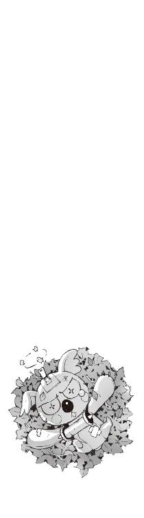
四章
「そう......それで奏っちゃんの姿が見あたらないんだ......」
おっとりとした声でつぶやいたのは、朱浬さんだった。彼女は鳴桜邸のリビングでソファにもたれて、優雅にハワイ旅行のガイドブックなんかを読んでいた。
修学旅行を翌々日に控えた午後。
僕たちが明蓮寺高校から帰還した翌日のことである。
鳴桜邸というのは、僕が住んでいる古い洋館の名前だった。
もともとは、うちの兄貴が下宿として借りていた建物で、海外留学中の彼の代理として僕がタダ同然で使わせてもらっているのだ。老朽化の進んだ外観は、正直いって不気味な感じだが、洛高に近いので通学には便利である。ついでに今この屋敷には、留学生であるアニアがホームステイ中であり、朱浬さんは彼女の護衛ついでに立ち寄ってくれていたのだった。
もっとも朱浬さんの場合、普段から勝手に上がりこんで自宅同然にくつろいでいることも多く、ある意味いつもどおりの光景だといえなくもない。
「ええ、まあ......明蓮寺高校の件はそんな感じだったんですけど」
加賀篝との遭遇の経緯を説明し終えて、僕は薄くため息をついた。それからふと顔を上げ、気づいた違和感に顔をしかめる。
『あのー......どうしたんです、この花？』
リビングの隅。安っぽいバケツに無造作にぶちこまれた花束を眺めて操緒が訊いた。それは僕もさっきから気になっていたことだった。
その存在があまりにも場違いだったせいで、無意識に質問をためらっていたのである。それくらい自己主張の激しい、無駄にバカでかい真っ赤な薔薇の花束だった。
「あ、それ？」
ふふっ、と朱浬さんは可愛らしい仕草で肩をすくめた。悪巧みの臭いがする、妙に色っぽい笑顔。この人にそんなふうに微笑まれると、いろんな意味でどきどきする。
「鳳島が持ってきたの。ニアちゃん宛て」
「はあ......やっぱり」
悪い予感が的中したことに、僕は軽く落ちこんだ。よく見るとバケツの後ろには、百貨店の包装紙に包まれた化粧箱やら、ブランドものの紙袋やらが無造作に積み上げられていた。メッセージカードには、汚い筆跡の『親愛なる妹へ』の文字。
「えーと、あれも全部、鳳島が？」
「そう。ニアちゃんへのプレゼント。受け取るだけ受け取って、鳳島は追い払ったの。商品には罪はないものね」
「それはそうですけど......よくそれで鳳島が納得しましたね？」
「榴弾砲ぶちこんだら、おとなしく帰ってくれたわよ？」
さらりと告げる朱浬さんの言葉に、僕は沈黙した。ほんの少しだけ鳳島に同情する。いくら鳳島でも、プレゼントを持ってきたくらいで砲撃されたらたまらないだろう。ていうかあんた、人ん家の玄関で大砲をぶっ放したのか。
『......でも、やっぱり鳳島ってニアちゃんにつきまとってたんだね』
僕の肩の上に乗っかったまま、操緒が言った。
そうだよな、と僕はため息をついた。佐伯妹の世話を焼いていたせいで気づかなかったが、やはり鳳島はアニアを追って鳴桜邸まで押しかけてきたらしい。朱浬さんがアニアを護衛していたのは、正解だったというわけだ。
ちなみに、そのアニアは今は出かけていた。
生徒会に呼び出されて学校にいったのだ。
佐伯兄が明蓮寺から持ち帰った未確認プラグインの鑑定を依頼されたらしい。幼い見た目のせいで忘れられがちだが、彼女はいちおう機巧魔神の研究者なのだ。
『学校の中なら冬琉会長もいるし、鳳島もそうそう手は出せないだろうけど、うちに帰ってきてからが問題だよね。明後日からは朱浬さんも修学旅行だし』
んー、と頬杖をつきながら操緒がつぶやく。
たしかにそれは深刻な問題だった。
佐伯兄と朱浬さんが不在の修学旅行期間、洛高の戦力はガタ落ちである。
加賀篝が狙っている謎のプラグインが学校内にある以上、冬琉会長たちも、そちらの警備を優先せざるを得ない。鳳島なんかの相手をしている余裕はないということだ。もともとアニアの世話係は科學部の担当なのである。
かといって僕と操緒だけでアニアの身辺警護が務まるはずもなく、ぜひ誰か鳳島に対抗できる人物に護衛を依頼したいところだ。
「やっぱり嵩月に頼むしかないか......」
どんよりと重い気分で僕はつぶやいた。
アニアも嵩月には比較的懐いているし、嵩月の下宿には嵩月組のおっかない人たちの警備がついている。せめて朱浬さんが旅行で不在の間だけでも、嵩月にアニアを預かってもらうのがベストな選択なのは間違いない。問題は、それをどうやって嵩月に頼むかということだ。
『......智春が泣かせちゃったしねえ』
からかうような口調で操緒が指摘し、僕はううっと肩を落とした。
朱浬さんは、そんな僕たちの様子を怪訝そうに眺めながら、
「その話だけど、なんで奏っちゃんは泣いちゃったわけ？」
「いや、それが全然わけがわからなくて」
あのあと嵩月はすぐに泣きやんだが、泣きはらした顔を見られたくなかったのか、いつの間にか姿を消していた。僕は僕で明蓮寺の負傷者の救助で手一杯で、結局、彼女が泣いた理由は聞くことができなかったのだ。
「嵩月が止めるのを無視して、僕が加賀篝と戦おうとしたせいだと思うんですけど......たぶん」
僕は歯切れの悪い口調でつぶやいた。嵩月自身、そんな意味のことを言っていたし。
『んー......でも、あの嵩月さんが、それくらいであんなふうに泣くかなあ？」
操緒が妙に鋭い考察を述べる。僕はなにも言い返せずに低く唸った。
たしかに嵩月は、彼女と最初に会ったときから機巧魔神を使うなと僕に忠告していたけれど、しかしなんというか今さらである。
「なるほどね......」
なのに朱浬さんは、なぜか納得したように、ふっと笑った。いや、笑ったように見えたのは口元だけで、彼女の目は妙に真剣だった。そして彼女は独り言のような口調で、
「奏っちゃんは知ってたんだ。律都さんから聞いたのかしら......」
「え？ なんのことです？」
戸惑いながら、僕は訊き返す。ひどく気になる。嵩月がいったいなにを知っていたというのだろう。それと僕が加賀篝と戦うことにどんな関係が？
しかし朱浬さんは伸ばした人差し指で唇をなぞるような仕草をして、
「秘密」とだけ答えた。
「はあ......？」僕はますます困惑して途方に暮れた。「秘密って......どういうことですか？」
「知りたい？」
朱浬さんは甘くとろけるような微笑を浮かべ、囁くように僕に告げる。
「──だったら奏っちゃんと契約しなさい」
「は？」
至近距離から、恐いほど綺麗な朱浬さんの顔で見つめられて僕は硬直した。まどろっこしいほど鈍った頭で、彼女の言葉の意味を考える。そして、
「な、なにを言い出すんですか、いきなり！」
僕は声を裏返しにして叫んだ。なんかいろいろ想像して顔面が灼熱の色に染まる。
悪魔と契約。
なにやら恐ろしい字面だが、要するに嵩月とつき合うというか、肉体関係を結べばいいのである。もっとぶっちゃけていえば、あの嵩月を相手にエッチぃ行為をすれば、それだけで僕は悪魔の力を──つまり嵩月が召喚する使い魔の守護を手に入れることができる。
さすが悪魔との取引というべきか、ぐっとくるような美味しすぎる条件だ。
もちろん、嵩月が僕を契約者として認めてくれればの話だが。
「興味あるよね。健康な男の子として」
朱浬さんが、悪戯っぽく目を細めて訊いてくる。僕はまともな会話能力を喪失し、
「な......な、なにを......」
「それとも奏っちゃんが相手では不満？ ふーん？」
「ち、違っ......不満とかそういうことではなくて」
「だったら相手は沙原ちゃんでもいいんだけど......ニアちゃんは、道徳的にどうかなあ」
「あの......だから、どうして僕が悪魔と契約しなきゃならんのですか」
僕はようやく彼女の言葉を遮って訊いた。
操緒は妙に優しげな、引きつった薄笑いを浮かべて僕を見つめていた。僕はわけもなくゾッとして、おかげで少しだけ冷静さを取り戻す。操緒がああいう表情を浮かべたときは、この先、恐ろしいことが起きるのだ。たとえば僕が中学生のとき、生まれて初めてのまともなデートに出かけたときもそうだった。その翌日から一週間、操緒は夜な夜な僕の枕元で般若心経を延々と読経し続けたのだ。あれは本気でノイローゼになりそうなくらい恐かった。
しかし朱浬さんは、あえて操緒の表情に気づかない振りをして、
「だからそれが条件なの。奏っちゃんが泣いた理由を説明するには、とりあえず彼女と既成事実を作ってもらわないと」
だからなんでだよ、と僕は頭を抱えた。嵩月のことは嫌いではないが、彼女の実家にはコワモテで血の気の多いオッサンたちがうようよしているのだ。下手に嵩月に手なんか出したら、コンクリートに詰められて暗い深海の底へとまっしぐらである。
しかし朱浬さんも、べつにふざけていたわけではないらしい。その証拠に、彼女はもう僕をからかうような微笑を浮かべてはいなかった。
「奏っちゃんが泣いたのは、説明したくてもできなかったからじゃないかな......今のトモハルがそれを知ったら自分の身を守ることができなくなってしまうから。いい子よね、本当に」
「......あの、すみません......話がさっぱり見えません」
少し申し訳ない気分になりつつ、僕はおずおずと手を挙げた。最初から考え直してみたが、やはり意味がわからなかった。
『それって、加賀篝隆也と関係あることなんですか？』
それまでずっと黙っていた操緒が、唐突に口を挟んできた。まだ機嫌が直りきっていないのか、唇を尖らせた仏頂面のままである。嵩月があんなふうに取り乱したのは、あのとき僕が戦おうとしたのが加賀篝だったからだと、操緒は考えているらしかった。
「関係あるといえば関係あるけど、それは気にしないほうがいいと思うな......なんにしても、トモハルはまだ、あの男と出会うべきではなかったのよ」
朱浬さんは再び微笑んで、少し思わせぶりな口調で告げた。ヒントはこれでおしまい、と遠回しに言われたような気分だった。
答えをはぐらかされたと思ったのか、操緒が、むぅと頬を膨らます。
やつあたりされそうな気配を察知して、僕は咄嗟に目をそらした。鳳島が持ってきた花束をぼんやりと見つめるフリをする。
言われなくても加賀篝に手を出すつもりなんかなかった。彼は僕の敵というわけではないが、ひどく危険な存在だということはわかっている。目的のためなら他人を傷つけることも、自ら下着泥棒をすることをも厭わないという、いろんな意味でヤバい男なのだ。
「ところで玲士郎の話ってなんだったの？」
朱浬さんがいきなり話題を変えた。
あ、と僕は間の抜けた声を洩らした。そうだった。本当は嵩月の問題より先に、そのことを相談しようと思っていたのだ。
「あの、それが......ティーパーティに誘われたんですけど。今日。これから」
「ティーパーティ？」
朱浬さんが変な顔で僕を見た。その気持ちは実によくわかった。僕もいまだに騙されたような気がしているのだ。悪質な策略に乗せられているような予感がする。
昨日、明蓮寺高校で加賀篝を撃退した直後。
あとで話がある、と告げた佐伯兄の用件とは、このパーティとやらのお誘いだった。
佐伯兄の親戚の家で、夕涼みがてらのガーデンパーティが行われるのだそうで、なぜか僕はそれに招待されたのだ。断れるものなら速攻で断っていたのだが、これ見よがしにギプスで固めた腕を見せられては、むげに拒否するわけにもいかなかった。
放課後、迎えにいくから待ってろといわれ、それでこうやって自宅待機していたのだ。
しかし待たされている間に不安が増幅され、僕は先ほどから軽い胃痛を感じていた。以前、佐伯兄に呼び出されて、危うく生徒会室で銃殺されそうになったときのことを思い出す。
「パーティね......」
朱浬さんが、ふふん、と変死体を見つけた名探偵のような顔で笑った。
「やっぱり、これってなにかの罠ですかね？」
「どうかしら。心配なら、なにか準備してく？」
「準備？」
「奥歯に仕込む自決用の爆薬とか、腹に巻くダイナマイトとか」
「要りません」
僕はきっぱりと首を振る。なぜそんな刺し違える前提の装備でパーティーに出なければならないのだ。佐伯一族のパーティ会場は軍事要塞か。
「冗談よ......玲士郎はそういう搦め手を使うタイプではないと思うわ。心配ないと思う」
彼女にしてはめずらしく佐伯兄の肩を持つようなことを言う。そして朱浬さんは、ちらりと壁のカレンダーを見上げ、なぜか遠くを見るような物憂げな表情で、
「そうか......もうそんな時期なのね」
深くため息をつく彼女の憂い顔を、僕はただ困惑しながら見つめた。
操緒が、あ、とつぶやいて顔を上げる。
鳴桜邸の前の道路に、純白の大型リムジンが到着したところだった。
○
佐伯家所有のリムジンに乗るのは、実は初めてではなかった。
それに彼らの超豪華な自宅を見てしまった今となっては、たかが送迎車ごときで驚くこともないだろう。そんなふうに甘く見ていたのだが、
『ひぃえええ......新車だよ、智春。なんか前のやつより豪華になってるよ』
リムジンの車内に乗りこんだ瞬間、ショックで呆然と固まる操緒。僕も間の抜けた顔でうなずくことしかできない。余計な知識は、むしろ驚きを倍増させただけだった。
実際、でたらめに豪華な車である。
いかにも高価そうな本革張りの車内には、飲み物を詰めこんだ冷蔵庫はもちろん、電動折りたたみ式の大画面テレビやノートパソコン、カラオケ、次世代ゲーム機、マッサージチェアを完備。リムジン自体の全長も、前のやつより何メートルだか長くなっている気がする。
運転手は佐伯家の執事の奥沼だった。二十人くらいは余裕で乗れそうな広大な客席に、佐伯兄と哀音だけが座っている。
「どうした？ 二人とも、そんな端っこに座ってないでくつろいでくれ」
グラス片手にミネラルウォーターなど飲んでいた佐伯兄が、怪訝顔で言った。
僕と操緒は、二人揃ってふるふると首を振る。悪いがまともな一般庶民は、こういう車ではくつろげないように生まれついているのだ。手荷物置き場のほうがまだ落ち着けると思う。せめて目立たない隅のほうで、ひっそりと過ごさせていただきたい。
「あの......お招きありがとうございます」
操緒にせっつかれて、僕は渋々と佐伯兄に頭を下げた。
朱浬さんも心配ないと言ってたことだし、本当にただのパーティに誘われたのなら、いちおう礼を言っておくべきだろう。
『でも、本当によかったんですか、あたしたちなんかがお邪魔して』
まだ少し警戒しているような口調で操緒が言う。しかし佐伯兄は鷹揚にうなずき、
「ああ、もちろん。パーティといっても要は内輪のお茶会だからね。堅苦しく考えないでくれ。きみたちがいてくれたほうが玲子も喜ぶ......いや」
佐伯兄はそこで言い淀むように苦笑した。前髪を掻き上げ、気障っぽく首を振る。
「正直に言えば、きみたちに会いたがっている人がいるんだ。僕や玲子は、そのついでだな」
「え？」
僕と操緒は互いに顔を見合わせた。会いたがっている人？ 誰だ？
これは佐伯兄妹の親戚が主催のパーティだと聞いていたが、僕の知り合いにそんな金持ちはいないはずである。
『お見合いかも......』
佐伯兄にギリギリ聞こえないくらいの小声で、操緒がつぶやいた。僕は眉間に皺を寄せ、
「見合いって、誰の？」
『佐伯ちゃん。妹のほう』
「なんで僕たちがあいつの見合いに同席するんだよ？」
『だからぁ......智春がお見合いの相手なんじゃないの？』
むうー、と唇を引き結んで唸る操緒。
「は？」
まさか、とは思ったが、すぐには否定する言葉が出てこなかった。なにしろ佐伯家が非常識な金持ちであることは、ここ数日の体験でよくわかっている。茶話会の席で婚約者を親戚の偉い人に紹介する、なんて、いかにも金持ちのやりそうなことだと思ったのだ。
「いや、でも、なんで僕なんかを見合いの相手に選ぶんだよ？」
『だったら、どうしてあたしたちがティーパーティに招待されるのよ？』
「う、それは......」
僕は言葉に詰まって弱々しく呻いた。
実はひとつだけ可能性を思いついてしまったのだ。それは嵩月のことだった。
佐伯兄は僕が嵩月の契約者になることを前から異様に警戒していた。そして僕と嵩月の契約を阻止するもっとも確実な方法は、僕を誰かほかの無害な女子とくっつけることなのだ。
しかし、いくら佐伯兄が非常識でも、そんなしょうもない理由で、実の妹を見合いさせたりするものだろうか。
やっぱり違うのではないかなあ、と思いながらふと顔を上げると、佐伯兄の隣にいる哀音と目が合った。彼女は苦悩している僕を見て、ほんの少しだけ、可笑しそうに小さく笑っていた。
やがて僕たちを乗せたリムジンは、郊外の一軒家に辿り着いた。
丘の上にある美しい洋館だった。
敷地は広いが、あくまでも常識の範囲内である。緑の芝生と咲き誇る花々。手入れの行き届いた庭園が素人目にも見事だ。
装飾を施した華麗な扉が、電動で左右に開いていく。
門柱に彫りこまれた表札の名前は、志津間と読めた。どうやらそれがこの屋敷の主人の苗字らしかった。
扉が完全に開くのを待って、再びリムジンは走り出した。石畳の道を通り抜け、やがて高級ホテルの正面玄関みたいな車寄せへと滑りこむ。このクソ豪華なリムジンが停まっていても、まったく違和感のない実に立派な玄関だった。
そしてその玄関の前に、見知った顔の少女が立っている。彼女は僕の到着に気づくと、いろんな感情が入り交じった複雑な微笑を浮かべてみせた。
「先に来ていたのか、玲子」
車から降りた佐伯兄が、私服姿の妹に声をかける。
「ええ。先ほどまで叔母様と大叔母様の思い出話におつき合いして、ちょっと逃げ出してきたところです。叔母様の焼くスコーンは相変わらず甘すぎて困ります」
佐伯妹は、普段よりも少し澄ました口調でそう言った。
彼女の服装を見て、僕は、あれ、と首を傾げた。見覚えのある服だった。佐伯妹が階段から落ちたあの日、僕が彼女のクローゼットから選んだやつだ。
上品なお嬢様風のその出で立ちは、この邸宅の風景によく似合っていた。そのせいか、それを着ている佐伯妹までもが学校で会ういつもの彼女とは違って見えた。いつもより二、三割増しでモテそうな感じ。写真を撮って樋口あたりに高く売りつけてやりたい。
佐伯兄も同じことを感じた、というわけではないのだろうが、
「その服......たしか、志津間の叔母様からいただいたものだったな？」
感心したような口調で言った。ええ、と佐伯妹は平静を装って優雅に微笑み、
「めずらしいな。今まで着たことはなかっただろう？ 少女趣味で好みじゃないと言って」
「え？」
彼女の微笑みがピキッと音を立てて引きつった。佐伯妹はそのまましばらく固まっていたが、やがて焦ったように首を振り、
「あ、それは......その......き、気が変わったの！」
叫んだ声は思い切り裏返っていた。そして自分でもそのことに気づいたらしく、彼女はますます焦ったように佐伯兄に詰め寄り、
「た、たまには叔母様にも着て見せないと失礼だと思って......決して誰かに似合うと言われたからというわけではありませんから！ それともなにか問題でもっ!?」
「い......いや、特に問題はない。よく似合うよ」
佐伯兄が、めずらしく圧倒されたように後退しながら告げた。佐伯妹は、ふー、と荒々しい息を吐いて、なぜか僕のほうを睨みつける。
彼女のすぐ隣で、哀音がクスと声を上げて笑った。
「あ......」
そんなところで笑ったりしたら、哀音まで佐伯妹に怒鳴られるのではないかと、僕は驚いて声を洩らした。が、
「いえ、なんでもない......です」
ギロリ、と佐伯妹に睨まれて慌てて謝る。
思い出す。哀音の姿は佐伯妹の目には見えないし、哀音の声は佐伯妹には届かない。普通の人間である佐伯妹は、射影体を感知することができないのだ。
哀音と同じ射影体でありながら、一般人にも見える操緒のほうが特殊な存在であることを、僕はつい忘れていた。そんな僕の戸惑いに気づいたように、哀音は、少し困ったようなはにかんだ表情で僕を見つめた。そして寂しげに微笑する。
佐伯妹はそんな哀音の存在に気づかない。
だから佐伯兄も、哀音がまるで存在しないように振る舞いながら、
「叔母様は？」と妹に訊いた。
「中庭のテラスです。東側の通路をちょっと歩いて右手に」
佐伯妹が説明する。哀音なら、きっとメートル単位で正確な距離を教えてくれたのだろうが、彼女にそれを質問する者はいなかった。白いドレスの幽霊の少女は、無言で微笑みながら佇んでいるだけだ。
「わかった。来てくれ、夏目智春。きみと水無神操緒を紹介する」
「あ、はい」
佐伯兄に手招きされて、僕と操緒は彼のあとに続いた。土足のまま上がりこんでも問題ない通路らしかった。哀音はどこか懐かしそうに屋敷の中の風景を見回している。佐伯妹は玄関に留まったまま、黙って僕たちを見送った。
建物の外観から想像したそのままの、上品で美しい室内だった。布張りの美しいソファや、シックな絨毯。古い外国の映画に出てきそうなインテリア。
『わ、暖炉。本物だぁ』
壁際のマントルピースに気づいて、操緒が感嘆の息を吐く。中に電気ストーブが埋めこんであるような安っぽい偽物ではなく、本当に火が燃やせる暖炉である。暖炉の棚の上には、見覚えのある古いクマの縫いぐるみと、ガラス製の写真立てが飾られていた。
写真に写っているのは三人の子どもたち。
おそらく中学生になったばかりだと思う。
左側のやや幼い少女はなぜか泣きべそをかいており、右側の少年は暑苦しい美形だ。一目でわかる。若かりし日の佐伯兄妹の姿である。
そして中央には満面の笑みを浮かべた少女がいた。生命力に満ちあふれた、快活そうな少女だった。無理やり引き寄せるようにして佐伯兄と腕を組み、悪戯っぽく目を細め、任せて、とばかりに親指を立てている。
操緒に似てる、と僕は思った。顔立ちではなく、雰囲気が操緒に似ているのだ。根拠のない自信に満ちあふれているところとか、無駄に感情豊かなところとか。
しかし外見だけなら操緒よりも、もっと似ている誰かを知っている。もどかしい気持ちで、そんなことを考える。よく知っている人物のはずなのに、名前が出てこないのだ。
考えながら歩いているうちに、中庭が見えてきた。
緑の芝生に浮かぶ広々としたウッドデッキのテラスに、アンティーク調のテーブル。夕暮れの穏やかな陽射しを浴びながら、一人のご婦人が優雅にティーカップを傾けている。
邸内にはほかにも数人の客がいたが、どうやら彼女が、この茶話会の主催者らしかった。
年齢は三十代半ばだろう。もっとおっかない人を想像していたのだが、静かな微笑を浮かべた小柄な女性だった。
そして彼女の微笑を見たとき、僕はようやく、写真の少女が誰に似ていたのか思い出した。僕が知っている今の彼女とは、あまりにも雰囲気が違っていたせいでわからなかったのだ。
「志津間霧絵さんだ。僕や玲子の叔母にあたる人だよ」
テラスに座るご婦人を見つめて、佐伯兄が言った。そして苦笑するように肩をすくめ、
「うちの母親は忙しい人でね。そのおかげで、子どものころから霧絵さんにはなにかと世話になっていた。おかげで今も彼女には頭が上がらなくてね。きみたちに会いたいという彼女の頼みを断ることができなかった。つき合わせて済まないな、夏目智春」
「いえ。それはいいんですけど」
そう言って僕は首を振った。こっちこそ罠ではないかと疑ったりして悪かった。
それよりも気になったのは、佐伯兄の隣で微笑んでいる小柄な幽霊の少女のことだった。
テラスで僕たちを待つ佐伯兄妹の叔母には、哀音に通じる面影がある。
「あの......あの人って、もしかして......」
ちらりと哀音を見上げて、僕は言った。
そんな僕の態度で理解したのだろう。佐伯兄は静かにうなずき、答えだけを簡潔に告げた。
「ああ。彼女は、哀音の母親だ」
『やっぱり......』
僕の耳元でつぶやいたのは操緒だった。
暖炉の上の写真を見たときに、彼女も気づいていたのだろう。佐伯兄妹とともに写っていた快活そうな少女の正体は、哀音だったのだ。
副葬処女として、機巧魔神の贄に捧げられる前の。
普通の少女として生きていたころの哀音。
「──今から五年ほど前に、地中海沖で船が沈んだ。公式にはただの事故ということになっている。だが本当の原因は神聖防衛隊と悪魔崇拝者たちとの小競り合いだった」
佐伯兄が感情のこもらない声で言う。歴史の教科書を読み上げているだけのような声だった。
ため息のようなかすかな息継ぎを挟んで、
「僕たちは偶然それに巻きこまれ、命を落としかけた。助かる手段はひとつしかなかった──」
機巧魔神だ、と佐伯兄は言った。
船を占拠され、船倉に閉じこめられた佐伯兄と多くの乗客乗員。彼らが助かる唯一の方法は、閉ざされた船の隔壁をぶち抜き、武装した悪魔崇拝者たちを掃討できる圧倒的な力を手に入れることだった。すなわち搬送中だった機巧魔神の力を。
哀音は自らの意志で機巧魔神の贄となることを選び、佐伯兄は《翡翠》を手に入れた。
そして哀音はこの世界から姿を消した。
かつて彼の従妹だった幽霊の少女と見つめ合い、佐伯兄は自嘲するように笑う。
「今日は、哀音の命日なんだよ」
○
近くで見た霧絵さんは、最初の印象よりも若い人だった。少女の面影をそのまま残して大人になったような可愛らしい女性である。だからといって頼りないというわけではなく、生まれついての気品と育ちの良さを感じる。身近にはあまりいないタイプで、そのせいか僕は妙に緊張した。
テラスには静かな音楽が流れていた。
モーツァルトの小夜曲だ。アイネ・クライネ・ナハトムジーク。
「ようこそいらっしゃいました」
霧絵さんは鈴を転がすような澄んだ声でそう言った。普通の人の半分くらいののんびりしたテンポだった。僕たちに正面の席を勧めつつ、立ち上がって自ら紅茶を淹れてくれる。流れるような自然な仕草だ。
『智春。ほら』
操緒が僕の耳元で囁いた。それまでぼーっと霧絵さんの所作に見とれていた僕は我に返って、
「あ......あの......本日は誠にお日柄も良く、こ、このような席にご列席賜りまして......」
『違う』
狼狽のあまり意味不明になった僕の挨拶を、操緒が慌てて遮った。そして彼女は、僕を庇うように前に出て、霧絵さんに負けず劣らず上品に微笑み、
『お招きいただき、ありがとうございます。水無神操緒と申します。彼の守護霊です』
しれっとした口調でそつなく挨拶する。おまえがいつ僕を守護してくれたんだよ、と突っこみたいところだが、霧絵さんの前ではそれもできず、
「あ、夏目です」
僕は操緒に促されるまま、名乗るだけで精一杯だった。自分でもかなり情けない状況だとは思うが、こんな場違いな場所にいきなり連れてこられて、ほかにどうしようもなかったのだ。
霧絵さんは、そんな僕のうろたえぶりを見てクスクスと笑い出す。悪気を微塵も感じさせない笑顔だったが、僕はさすがに赤面した。しかし彼女は逆に申し訳なさそうに首を振り、
「ああ、ごめんなさい。レイちゃんに聞いてたとおりの人たちだったから、つい」
「レイちゃん？」
僕は思わず首を傾げた。誰だ？
「玲子ちゃんよ。お二人の同級生なんでしょう？」
「あ、はい。いつも彼女には、お......お世話になってます」
怒られています、と言いそうになったのを、僕はどうにか誤魔化した。佐伯妹が霧絵さんに僕たちの話をしていたというのが、ちょっと意外だった。いったいどんな伝え方をしたのだろう、と不安になる。
「レイちゃんは昔からよくうちに遊びに来てくれているのだけれど、学校のことを楽しそうに話すようになったのは、ここ最近のことなのよ。あの子、可愛いし、気が弱いから、男の子にいじめられてるんじゃないかと思って、実はずっと心配してたの」
「いや......それはないと思いますけど......ええ」
佐伯妹の横暴に泣かされている男子は何人も知っているが、その逆は聞いたことがない。そもそも気が弱い女の子は、同級生の男子の鼻骨を右ストレートで叩き折ったりしないと思う。
もしかして霧絵さんの知っている佐伯妹は、僕の知っている彼女とは違う人なのではないだろうか。どんだけネコ被ってるんだ、あの女は。二重人格か。
「それに、あの子がシロくん以外の男の子の話をすることなんて滅多にないでしょ。だから、夏目くんの話を聞いたときは驚いてしまって。前から一度お会いしてみたかったのよ。想像したとおりの人で嬉しいわ」
「はあ......」
返答に困って僕は曖昧に笑う。喜んでいいのかどうか微妙なところだ。ふと見れば佐伯兄も、なんともいえない表情を浮かべて腕を組んでいた。兄として複雑な気分なのかもしれない。どうでもいいがシロくんというのはあんたのことか。
「それに......操緒さん。あなたにもお会いしたかった」
霧絵さんは、懐かしい景色を見るように操緒の姿を優しく見つめた。
ゆっくりと伸ばした手で操緒の頬に触れようとして、そのまますり抜けた自分の指先を、少し哀しげな表情で眺める。
「本当に......幽霊なのね。ううん、疑っていたわけではないけど......よかった」
『え？』
操緒が不思議そうに目を瞬いた。僕も怪訝な気持ちで霧絵さんの横顔を見つめた。幽霊でよかったというのは、どういうことだろう、と思ったのだ。
だが、すぐに彼女の言葉の意味に気づく。霧絵さんは哀音の母親なのだ。
「私には見えないけれど、哀音もシロくんの傍にいるのね？ あなたと同じように」
霧絵さんがかすかに声を震わせた。
『ええ。そうです』
操緒が静かにうなずいた。彼女の白い指先がゆっくりと霧絵さんの手を包みこむ。
こんなときの操緒は、本当に優しい表情をする。普段の彼女が隠している部分が、無意識に表に出てきているのだと思う。
「そう......ならいいの。哀音はきっと幸せにしているわね。あの子は昔からシロくんのことが大好きだったもの。一緒にいられて喜んでいるわよね......？」
『もちろん』
操緒がきっぱりと言い切った。
おいおい、と僕は不安になった。他人の心情を、そんな勝手に決めつけるような真似をしていいのか、と思う。僕と同じことを感じたのか、クス、と霧絵さんが笑みを洩らした。ふと見れば哀音も微笑んでいた。苦笑しているのかもしれない。
「ありがとう。あなたは昔の哀音によく似ているわ。あなたが夏目くんに憑いていて幸せだというのなら、きっと哀音も同じように思っているわね。それは信じられる」
霧絵さんは、自分に言い聞かせるようにつぶやいて目を伏せた。そんな霧絵さんを背後から抱きしめるように、哀音は母親の肩に手を置いた。
ほとんど感情を表さない哀音を見上げて、僕は、暖炉の上に置かれていた写真のことを思い出す。あの写真の中の彼女は、今とはずいぶん印象が違う。豊かな表情を見せる幼い哀音は、たしかに操緒によく似ていた。霧絵さんはそのことを言っているのだろうと思う。
射影体になってからの数年間で、なにが哀音を今のように変えたのか、少し気になった。
もちろん、それをこの場で口にすることはできなかったけれど。
「ごめんなさいね。つまらないことを言ってしまって。さあ、遠慮せずにくつろいで」
霧絵さんは、ぽん、と軽く手を叩くと、華やかな笑顔を見せてそう言った。
○
陽が沈む前に茶話会はお開きになった。
鳴桜邸まで送るという佐伯兄の申し出を断って、僕たちは途中で車を降りた。そのようにしろと佐伯妹に命令されたのである。
しかし人通りの多い街中でクソ目立つリムジンから降りるのは、かなりの度胸が必要だった。しかも佐伯妹が車を止めさせたのは、よりによって駅前の交差点のど真ん中である。
『と、智春。なんかすっごく見られてるよ、あたしたち』
「う......わかってる」
周囲の通行人の好奇の視線を浴びながら、操緒と僕は逃げるようにリムジンから離れた。そんな僕たちの姿に気づいた佐伯妹が、情け容赦のない大声で、
「待ちなさい、夏目智春！ 勝手にどこにいくつもり!?」
フルネームで呼ぶのはやめてくれ。
彼女の無神経さを呪いつつ、僕は仕方なく振り返った。佐伯妹は痛めた足を庇いながらも、いつもの仁王立ちスタイルで僕を睨み返し、
「買い物につき合うって約束でしょう？」
「いや、そんな約束はしてないと思うけど......一緒に車から降りろと言われただけで」
「怪我してる女の子に重い荷物を持ち歩かせる気っ!?」
彼女に怒鳴られて、僕は深くため息をついた。
しかしそれほど嫌な気はしなかった。
思わず苦笑してしまう。志津間家にいるときの取り澄ました佐伯妹よりも、やはりこっちの彼女のほうがいい。存在が身近に思えてどこかホッとする。
そんな思いが顔に出てしまっていたのか、
「......なにニヤニヤしてるの？」
佐伯妹が警戒するように眉を寄せた。いやべつに、と僕は首を振って、
「買い物ってなに？」
「お兄様の修学旅行の準備」
「準備って......そういうのは自分でやるものじゃないのか？」
そもそも旅行というのは、そういう準備が楽しいものなのではないかなあ、と思う。のだが、
「怪我してなかったら、そうかもしれないけど？」
皮肉っぽい口調で責められて、うっ、と僕は額の汗を拭った。
そういえばそうだった。佐伯兄は怪我人で、今日もこのあとは病院に直行なのだ。本来なら外出禁止のところを、特別にパーティの出席だけ認めてもらったのだそうだ。
いちおう修学旅行への参加はギリギリ許可が下りたらしいが、生徒会の業務もあることだし、のんびり旅行の準備をしている余裕はないのかもしれない。
『準備ってなにするの？』
少し興味を持ったらしく、操緒が僕の肩から身を乗り出して訊いた。
「えっとね、いちおうお兄様に渡されたメモを持ってきたんだけど......」
佐伯妹はバッグから、ずらずらと長いレシートみたいなメモ用紙を取り出し、
「日焼け止めと現地のガイドブックと機内で使うアイマスク」
「......なるほど」
ふむ、とうなずく僕。ハワイ旅行の持ち物にしては妥当なところだと思う。彼の負傷は僕にも責任があることだし、それくらいの買い物なら手伝うのもやぶさかではない。
しかし佐伯妹は、更にずらずらとメモをスクロールさせて、
「あと私服。ギプスつけてても着やすいやつを希望ですって。それから礼装。急なパーティに備えてのタキシード。機内で食べるおやつにはコルドンルージュの生チョコトリュフ。紅茶の茶葉は専門店に特注してあるいつものやつを。枕は家で使っているのと同じ低反発フォームのやつで、ガウンはホテルフリーダム御用達の速乾性繊維のものを」
「だー、ちょっと待て！」
彼女の手からメモを奪い取って僕は喚いた。つまらない冗談かと思ったが、佐伯妹は本当に買い物リストに書かれている内容を読み上げているだけだった。しかもリストに書かれているアイテムは全部で百品目を超えている。
生チョコトリュフ？ 特注の茶っ葉？ あの生徒会長は高校の修学旅行にタキシードや枕やガウンを持参するつもりだったのか。アホだアホだとは思っていたがこれほどとは。
「こんな大荷物、どうやって修学旅行に持って行くつもりなんだよ？」
「え？ でも、海外旅行でしょう？」
きょとんとした顔で訊き返す佐伯妹。兄貴だけかと思ったらオマエもか。頼むから庶民の感覚で考えてくれ。悪いが修学旅行には執事もメイドも同行しないんだよ。
「そ、そっか......たしかにお兄様一人で、これ全部は運べないわね......どうしよう」
ようやく状況を理解したらしい佐伯妹が、途方に暮れたようにつぶやいた。僕はうんざりとため息をつき、
「このメモ、ちょっと借りる。あとなにか書くものある？」
「......はい。なにするの？」
「いいから」
佐伯兄のメモから、僕は不要と思われる荷物をガリガリと消していった。ほとんど要らないものばかりだったので作業はむしろ楽だった。そのわりに普通に必要なものが抜けているので、書き足しておく。洗面用具とか下着とか。
「......この洗濯ネットってなに？」
「着終わった服を入れておいたら、そのまま洗濯に出せるだろ」
「ふーん......ビニール袋は？」
「いいから持っとけ。なにかと役に立つから」
「......夏目って意外に物知り......？」
佐伯妹が、感心したように目を丸くして訊いてくる。きみたち兄妹が非常識なだけなのでは、とは思ったが、褒められて悪い気分ではなかったので黙っておいた。
「ほら。とりあえずこれだけ揃ってればいいから。家にないやつだけ選んで買い足してくれ」
掌にすっぽり収まるくらい短くなったメモを、僕は佐伯妹に手渡した。彼女は、ふむふむ、とメモの内容を吟味して、
「夏目がいてくれてよかったわ」
めずらしくそんな殊勝なことを言うので、ドキリとした。素直で可愛いところもあるじゃないか、と思う。
「そ、そう？」
「そうよ。だってあたし、お兄様の下着なんて選べないもの」
「そ、そうか......そうだよな......」
僕は軽く落ちこみながらつぶやいた。
どうせそんなことだろうと思った。操緒が無言のまま小さく肩を震わせて笑う。
ということはつまり、佐伯兄の下着を僕が選ばなければならないということか。成り行きで仕方ないとはいえ、なんかすごくイヤだ。趣味が合っても合わなくてもイヤな感じだ。
佐伯妹の足は、どうにか自力で歩けなくはない、という程度には回復しているらしい。とはいえ、ぎこちない歩き方は見るからに危なっかしく、階段やエスカレーターでは手を貸さなければならないし、荷物持ちは自動的に僕の役割になる。
そんな状況で二人して男物の下着売り場なんかを物色するのは、目立ちまくって異常に恥ずかしかった。同棲中の頭の悪いカップルみたいだ。こんなところを知り合いに見られたら、深刻な誤解を招くのではないかと思う。こんなときに限って操緒は僕たちから離れて、他人のふりを決めこんでいる。笑いをこらえているような表情からして、あれは絶対に面白がっているのだ。それが自称〝守護霊〟のやることかよ。
「あのね......夏目」
なんだかんだで結局、買い物には二時間ほどかかった。妙に疲労した僕がハンバーガー屋で遅い夕食を食べていると、新作バーガーをものめずらしそうに頬張っていた佐伯妹が、突然ぼそっと口を開いた。
「今日はありがと。叔母様に会ってくれて」
「あ、いや......たいしたことはしてないけど......」
いつもと違う佐伯妹の口調に戸惑いながら、僕は窓の外を見る彼女の横顔を眺めた。
国道を通り過ぎる車のヘッドライトが、整った輪郭を照らし出す。本当は気が弱い、と佐伯妹のことを評していた霧絵さんの言葉を、僕はなぜか思い出した。今まで気づかなかったが、儚げな表情を浮かべた佐伯妹は、哀音に少し雰囲気が似ていた。彼女たちは本当に従姉妹同士なのだと、ようやく実感が湧いてくる。
「いつか夏目に話したこと覚えている？」
その佐伯妹が、ため息のような声で訊いてきた。
「あたしには哀音がいなくなったときの記憶がないの。機巧魔神のことだって、つい最近までなにも知らなかった。お兄様はあたしになにも話してくれなかった」
「あ......うん」
そういえばそんなことを前に聞いた気がする。
「たまに考えることがあるの。もしかしたら、お兄様の機巧魔神に封印されるはずだったのは、あたしだったんじゃないかって。哀音はあたしの身代わりになってくれたんじゃないかって」
佐伯妹は、ずず、と氷まみれのオレンジジュースをすすって儚く笑った。
僕はなにも答えられなかった。
あり得ない話ではないと思う。機巧魔神の副葬処女に選ばれるのは、演操者と深い因縁のある人物だ。佐伯兄本人の意志はどうあれ、彼のバックにいる神聖防衛隊の人々が、それを計画していた可能性は否定できない。
沈黙する僕を見て、佐伯妹は自嘲するように笑った。
「あたしはお兄様のやっていることが人類のためになると信じているし、哀音が不幸だとも思わない......でも、やっぱり自分が哀音の立場でなかったことに、少しホッとしてるのよ。情けないけど」
「......べつに、情けないってことはないだろ」
そう言ってやるだけで僕には精一杯だった。まさか操緒に同意を求めるわけにもいかないし。
しかし佐伯妹が苦悩する気持ちも少しはわかる。彼女が霧絵さんのお宅に足繁く通っていたのも、もしかしたら罪滅ぼしのつもりだったのかもしれない。
『そんな気にすることはないんじゃないかなあ』
湿っぽくなった雰囲気を嫌ったのか、幽霊らしからぬ明るい声で操緒が言った。
『幽霊もそんなに悪くないよ？ 智春をからかうのも楽しいし、家賃も食費も気にしなくていいし、生理でお腹痛くなったりしないし、冷え性とかベンピで悩むこともないし』
説得力があるのかないのかわからないが、いちおう本人的には励ましているつもりらしい。少し得意げな表情の操緒を、僕は嫌な顔で見上げ、
「おまえ......そういうことを言うなよ。人がメシ喰ってるときに......」
せめてもう少し婉曲的でソフトな表現にしてくれ。こんなところで便通の話をされても、どんな反応をすればいいのかわからない。
佐伯妹も、さすがに深刻な顔をしているのが馬鹿らしくなったのか、苦笑して、
「まあね......でも、修学旅行とかってイベントの前はやっぱり考えてしまうわよね。本当は哀音だって修学旅行に行けたはずだし、今ここで夏目とこうしているのは彼女のほうだったかもしれないし」
「うん......」
彼女の言いたいことはよくわかった。佐伯妹が悩むようなことではないが、だからといって気にするなというのも無理だろう。
せめて僕たちにも、哀音のためになにかできることがあればいいのだが、と僕は考え、
「そうだ......ちょっとここで待っててくれ」
「......夏目？ え、ちょっと......？」
急に叫んで立ち上がった僕を、佐伯妹が怪訝そうに見た。食べかけのハンバーガーを口にくわえたまま僕は店を飛び出し、そのまま近くの家電量販店に飛びこむ。
数分後、目的のものを探し当てて戻ってきた僕を、佐伯妹は憮然とした表情で待っていた。
「なにこれ？」
僕が買ってきた商品を見て、佐伯妹は胡乱げに首を傾げた。
「カメラ？」
「そう。インスタントカメラ」
いわゆるポラロイドなどと呼ばれている、自動現像型のカメラだった。撮ったその場で写真が浮き出てくるやつである。
「えーと、いちおう僕たちからの餞別ってことで。修学旅行用に」
「......お兄様にこれを持っていけっていうの？ カメラならうちにもあるわよ？」
「うん。でも前に樋口が実験したことがあるんだよ。操緒がまだ、普通の幽霊だったころに、心霊写真を撮る実験」
「......心霊写真？」
そうそう、と操緒が思い出したようにうなずいた。
彼女のような射影体は普通の人間の目には見えないが、写真やビデオには条件によって映ることがある。中学時代の僕が幽霊憑きだとバレたのも、実はそれが原因だった。
そして、それに興味を持ったオカルトマニアの樋口が各種カメラやフィルムを取りそろえてうちにやってきて、ひたすら操緒の姿を写真に収めようとしたことがある。
その結果、判明したのが、
「このメーカーのこのフィルムは、ぶっちぎりの高確率で操緒が写ったんだよ。今みたいにほかの人にも見えるようになる前の操緒の姿が。原理はよくわからないんだけど、たぶん波長が合ったとかそんな理由で」
「だからなによ？」
「いや、操緒が写るのなら同じ射影体の哀音......さんも写るんじゃないかと思って。それだけなんだけど」
「あ......」
ようやく事情を察して、佐伯妹が目を大きくした。
「この安物のカメラなら哀音の写真が撮れるってこと？ あたしたちにも彼女が見えるわけ？」
「うん......まあ」
安物というのは余計だけどな、と僕は顔をしかめたが、
「せっかくの修学旅行なんだから、記念写真くらいあってもいいだろ」
「そうね......うん。修学旅行だものね」
佐伯妹はそう言って無邪気に微笑んだ。いろいろと面倒に巻きこまれたが、まあいいか、と僕も思ってしまう。そんな笑顔だった。
肩の荷が下りた気分で、僕は大きく背伸びした。明後日の早朝には佐伯兄たちは修学旅行に行ってしまうし、妹のほうの怪我も多少は回復するだろう。これでようやく彼ら兄妹の世話から解放される、と安心したとき、
「それじゃあ明後日の朝、新幹線側の改札に迎えに来てよね」
佐伯妹に命令されて、僕は思い切り落胆した。
「え？」
まだなにか用があるのか。
「お見送りイベントよ。洛高恒例の。聞いてない？」
「あ、いや。そういえば杏たちがそんな話をしてたのは知ってる」
「せっかくだからつき合いなさいよね」
有無を言わせぬ彼女の指令に、僕は抵抗する気力もなくして肩をすくめた。
まあいいか、と僕はもう一度自分に言い聞かせた。
朱浬さんのお見送りもあることだし、これで今度こそ本当に解放されるはずだ、と。
そのときの僕は、一仕事終えた開放感で完全に忘れていたのだった。
もっと重大なトラブルにすでに自分が巻きこまれていたことを。
五章
週明け。月曜日の洛芦和高校は、いつもと少し雰囲気が違った。
修学旅行が始まったのだ。
これから数日間は二年生が不在。生徒の三分の一を送り出した学校は普段より閑散として、少しの開放感と一抹の物寂しさが漂っていた。
『今日のオアフ島の最高気温、二十九度だって』
「......こっちのほうが暑いのか」
朝七時五十分現在のこの地区の気温は三十三度で、今なおぐんぐんと上昇中である。
騙されてるような気分を味わいながら、操緒と僕は朝っぱらからの炎天下の中、代わりばえのしないいつもの校舎に登校する。そして、
「なんだ、これ......？」
靴箱の中に見覚えのない異物を見つけて、僕は怪訝に眉を顰めた。
手紙だった。
わけがわからない風変わりな手紙だ。
指が切れそうなくらいピンとした和紙を三つ折りにして、黒々した墨で、急告、としたためられている。時代劇に出てくる果たし状とか遺書とか、そんな感じ。ラブレターかもしれない、という幸せな妄想を抱く暇すら与えてくれない、不気味な手紙である。
差出人の名前は書かれていない。
だが残念なことに、こんなものを送りつけてくる相手に心当たりがないわけではなかった。
手紙には、用事だけが簡潔に書かれている。
──至急、第三生徒会室に出頭しなさい。
やっぱりか、と僕は思った。
『これって、冬琉会長から？』
反対側から手紙をのぞきこんで、操緒が言った。
「たぶん」
僕はうなずいた。第三生徒会会長の橘高冬琉という人は、この学校の生徒会関係者にはめずらしく常識的な思考の持ち主である。
だからといって彼女がまともな人間かと訊かれると答えに詰まる。なにしろあの人は、普段からバカ長い日本刀を背負って学校内をうろついているのだ。理由は知らない。自宅が剣道の道場だからという説明で、ほかの生徒たちは納得しているらしいが、それもちょっとどうかと思う。
とにかく冬琉会長が差出人なら、このけったいな手紙の書式にも疑問はなかった。いかにもあの人がしたためそうな書状である。
『どうする？ 行くの？』
「行かなきゃ仕方ないよな。会長直々の呼び出しだし」
出頭要請の仰々しい手紙をポケットに突っこんで、僕はため息をついた。操緒もうなずき、
『だよね。無視したりしたらあとが恐いよね』
「う......そうだな」
彼女を怒らせたときのことを想像して、僕は背筋に冷たいものを覚えた。洛高最強と呼ばれる冬琉会長には、あの佐伯兄ですら恐れて近づかないといわれている。そんな人の命令にいちいち逆らってたら、命がいくつあっても足りない。
「......そんなたいした用事じゃないと思うんだよ。ほら、今は二年生が修学旅行中で人手不足だし。雑用を手伝ってくれとか、そんなことだと思う」
自分に言い聞かせるように楽観的な見通しを述べる僕に、
『んー......そうかなあ』
操緒が疑り深い眼差しを向けてくる。
『そんなんだったら校内放送で呼び出せばいいじゃん。だいたいどうして智春に頼むわけ？』
「それは......たぶん科學部がらみの用件なんだろ。部長がまた引きこもったとか」
『なるほど......それはあるかも』
操緒も納得してくれたところで、ちょうど僕たちは第三生徒会室前に到着した。
ここは警戒厳重な軍事要塞めいた第一生徒会室と違って、こぢんまりとした普通の教室だ。入るのにそれほど気後れせずに済む。
「失礼します」
ドアの鍵は開いていた。二回ほど軽くノックして、僕はするするとドアを開けた。
そして沈黙した。
「......すみません。間違いました」
僕はその場でドアを閉め、くるりと回れ右して立ち去ろうとする。その背中に、
「どこに行くの、夏目智春」
ぶっきらぼうな声とともに、銃口を向ける音が聞こえてきた。
生徒会室の入口近くに座って二丁拳銃を弄んでいたのは、目つきの悪い上級生の女子だった。
美人といえば美人なのだが、どうも悪人っぽい印象の少女である。ウェーブのかかった髪に、皮肉っぽく歪められた厚めの唇。両脇に小悪党の男二人を従えて、姉御と呼ばれているのが似合いそうな雰囲気だ。
本人も悪人面であるという自覚はあるのだろう。普段は、分厚いメガネと三つ編みオサゲで顔を隠して無表情を装っている。だから彼女の素顔を見た者は多くない。
第二生徒会会長、倉澤六夏である。
なんであんたがここにいるんだ、と僕は狼狽する。
しかし生徒会室にいたのは彼女だけではなかった。
彼女のちょうど向かい側。窓から射しこむ光を背中に受けて、見慣れない制服を着た人物が美しい姿勢で立っていた。やはり上級生の女子生徒だ。整った顔立ちをしているが、彼女の場合、美少女というより麗人とでも呼ぶべき雰囲気だった。
華麗に引き締まった細身の身体と長い手足。ものすごい美男子にしか見えない少女である。
学生連盟の武装生徒指導員。
そして先代の第一生徒会長でもある雪原瑤だ。
立ちすくむ僕たちに気づいて、彼女は、ふっ、と華やかな笑みを浮かべてみせた。僕は猛烈に不安になった。瑤ほどの大物が同席しているということは、僕がここに呼び出されたのは、単なる科學部がらみの雑用なんかではないのか？
「──おはよう、夏目智春」
そして六夏と瑤に挟まれた部屋の奥に、冬琉会長は姿勢良く座っていた。
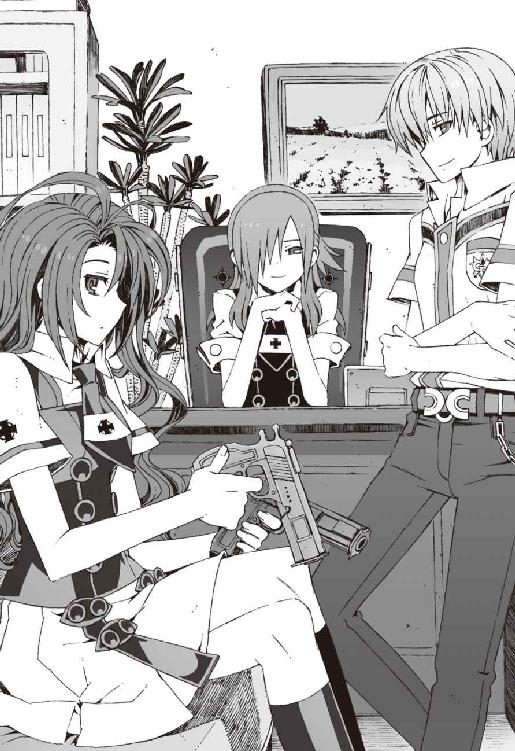
右目を隠すように伸ばした前髪と、傍らに立てかけた野太刀をのぞけば、理知的な雰囲気の、ごく普通の女子生徒である。
けれど無意識に滲み出る迫力は隠し切れていない。ただそこにいるだけで恐ろしい。
彼女たち生徒会関係者の三年生が三人同じ部屋にいるというだけで、ものすごい威圧感だった。ば......薔薇の館、と操緒がぼそりとつぶやいた。こんな禍々しい薔薇の館は嫌だ、と僕は思った。とにかくここにいる彼女たちが、奇人ぞろいの洛高でも間違いなく最強最悪の三人だ。それは間違いなく断言できる。
「あ......あの......これはいったい......？」
「来てくれたのね、夏目智春。とりあえず、座って」
冬琉会長は、僕の質問には答えず、ただ自分の正面の席を指さして言った。
逃げ出すタイミングを逸した僕は、渋々と指定された席に座った。
どうして自分がこんな場違いな席に呼び出されたのか、わからなかった。ひたすら悪い予感だけがある。
魔女裁判、という言葉が唐突に頭に浮かんだ。
本来の魔女裁判というのは魔女を裁くためのものなのだろうが、逆に魔女たちが寄ってたかって誰かを吊し上げるとしたら、たぶんこんな雰囲気なのだろうと思う。
「なぜあなたに来てもらったか、わかるわね？」
静かな口調で冬琉会長が告げた。その平静さがむしろ恐ろしかった。
僕は焦って首を振った。そんなことを急に言われても困るのだ。それともこれは誘導尋問ってやつなのか？
しかし冬琉会長は、そんな僕の困惑などまったく無視して、
「明蓮寺高校で、加賀篝隆也と戦ったそうね？」
「は？ か、加賀篝......？」
僕は間の抜けた表情で訊き返した。その反応が面白かったのだろう。瑤が、くっ、と愉快そうに笑った。そういえば、そんなこともたしかにあったな。今の今まで忘れていたが。
僕はしばらく無言のまま、冬琉会長の涼しげな瞳を見返した。
もしかして彼女たちが訊きたかったのは、壊滅した明蓮寺の生徒会のことなのだろうか。
加賀篝隆也が関係している事件なら、彼女たちのような大物が揃って調査に乗り出しても不思議ではない。それに僕が呼び出された理由もわかる。佐伯兄が修学旅行で不在の今、あのときの状況を詳しく知っているのは、僕たちと嵩月だけなのだ。
「これがなにかわかる？」
冬琉会長はさらに静かな口調で告げた。
彼女が机の下から取り出して僕たちの前に置いたのは、見慣れない小さな人工物だった。
その異様な外見に僕は戸惑った。
最初の一瞬、僕はそれをマツタケだと思った。
全長二十センチほどの、金属光沢を持った筒である。先端が丸い半球状の笠になっていて、いわゆるキノコのような形をしている。笠の色は蛍光色のグリーンと淡い黄色だ。
「はあ......なんか......卑猥な形ですけど......」
『もしかしてこれって大人のオモチャ......ってやつ？』
僕と操緒がぼそりと見たままの感想を洩らし、
「違う」
冬琉会長に怒鳴られた。下ネタが大嫌いな人なのだ。
「これは機巧魔神の拡張機能よ。イグナイターってやつ」
「えっ？」
僕は驚いて机の上の機械筒を見た。よくよく観察すれば金属キノコの表面には、電子部品の端子らしきものがあちこち配置されていた。前に手に入れた安定装置というプラグインに、言われてみれば少し似ているかもしれない。
「......こんな猥褻物みたいなのが、ですか？」
「猥褻物とか言わないっ！」
冬琉会長が恐い顔で僕たちを睨む。しかし、それを聞いていた六夏が、肩をすくめながら、
「でもまあ、誰がどう見ても猥褻物よね」
瑤も冷ややかに微笑してうなずき、
「ああ......無駄にエロいな。しかし、思うに冬琉が言いたかったのは、猥褻と芸術の境界について誰がどのような基準で判断するのか、という問題についてではないのかな？」
「そんなわけないでしょう！ あんんたたちもいい加減にしなさいよ！」
肩を震わせながら低い声で唸る冬琉会長。この人も苦労が多いなあ、と僕は自分の立場を忘れて少しだけ同情する。
『あの......どうしてイグナイターがここに？ これって、佐伯会長が明蓮寺高校の生徒会から預かったものですよね？』
困惑しながら訊いたのは操緒だった。そういえばそうだった、と思い出しながら、僕は彼女の言葉を通訳する。イグナイターと呼ばれるプラグインは、壊滅状態の明蓮寺高校生徒会が、これ以上は守りきれないと判断して同盟相手の佐伯兄に託したのだ。
「佐伯玲士郎本人から直接、プラグインの解析を頼まれたのよ。黒科学分野の研究に関しては、なんだかんだで第三生徒会......科学狂会がいちばん進んでるからね」
「はあ......」
そういうのもありなのか、と僕は思った。普段は対立していても、いちおう同じ学校の生徒会同士ということで、場合によっては協力することもあるらしい。
「それで、なにかわかったんですか？」
「そうね。わかったといえるのかどうかわからないけど」
冬琉会長は、そう言って前髪を鬱陶しげに払った。
「このプラグインに適合する機巧魔神は存在しない。わかったのはそれだけよ」
「え？」
「アニア・フォルチュナのレポートによれば、規格が違っているのだそうよ。現存するいかなる機巧魔神の中に組みこんでも、このプラグインは動作しないってこと」
『でも、それっておかしくない......？』
操緒が怪訝そうに首を傾げた。エクス・ハンドラーである冬琉会長に操緒の声は聞こえない。彼女の言葉は、僕だけに向けられている。
『だったらどうして加賀篝隆也は、そんなものを欲しがったの？』
そうだよな、と僕は目の前のプラグインを見つめた。現存する機巧魔神の規格に合わないということは、加賀篝の《薔薇輝》もイグナイターを使えないということになる。
「たしかに納得いかないけど、加賀篝隆也がそのプラグインを狙ってるのは間違いないわよ」
不景気そうな顔で答えたのは六夏だった。彼女はどこからともなく取り出したメープルキャラメルマキアートの紙パックにストローを突き立てながら、
「こないだの事件のこと、あなたも聞いてるでしょ、夏目智春？」
「事件......？」
僕は眉を寄せた。心当たりが多すぎてすぐには答えが出てこない。
「生徒会室に不審者が侵入した事件よ」
「あ......鳳島が校内で暴れたときの......！」
思い出す。鳳島と第一生徒会が揉めて、佐伯兄妹が負傷したあの事件。そういえばあのとき、ほぼ同時刻に、第二生徒会室の地下金庫室が荒らされたとか言ってたな。
「でも、あのときはたいした被害はなかったって聞いたんですけど。修学旅行のしおりとか、どうでもいい書類が持ち去られただけだって......」
「被害はあったの！」
僕の言葉を遮って六夏が叫んだ。
「おかげで第二生徒会の金庫室の鍵周りは全交換よ！ 電子ロックのロムとダイヤル錠二個とアナログキー！ 全部でいくらかかったと思ってるの。二百四十一万七百九十円よ！ 二百四十一万七百九十円！ うまい棒が、二十四万一千七十九本買えるのよ！」
「そ、それは......なんというか、ご愁傷様です......」
たしかに金庫の中身には被害がなくても、鍵を破られた金庫室をそのままほっとくわけにもいかず、第二生徒会は思わぬところで損害を受けたらしかった。六夏が怒るのももっともだ。
そこまで金をかけた金庫室が高校の生徒会室ごときにあるのも異常だが、そんな警戒厳重な金庫室に易々と侵入した不審者とやらも相当だと思う。
しかし、それと加賀篝隆也になんの関係が？
『そうか......思い出した！ 智春、ほら、この前の下着泥棒の事件！』
操緒がなにかに気づいたように叫んだ。
「あ......」
僕の頭の中でようやくなにかがつながった。
二カ月ほど前、厳重に施錠された洛高の女子更衣室から、大量の下着が持ち去られた事件があった。その真犯人が加賀篝隆也だった。
たとえば換気口のスリットや配線用のダクト。
ほんのわずかな隙間さえあれば、彼の使い魔の軟体獣は密閉空間に出入りできる。
加賀篝と彼の使い魔なら、警戒厳重な第一生徒会室に誰にも気づかれずに侵入することも、第二生徒会の地下金庫室をあっさり破ることも可能だ。
否、彼ら以外にそんなことができる者はいない。
「イグナイターが市内の高校のどこかに運びこまれたことを知った加賀篝は、洛高を含めた、あちこちの生徒会室に侵入を繰り返して情報を探っていた。そして明蓮寺高校で目的のものを見つけて、力ずくでそれを奪おうとした......これが学生連盟本部の分析だよ」
瑤の説明は明瞭で簡潔だった。なるほど、わかりやすい、と僕は感心した。
たしかに筋は通っている。
加賀篝隆也がプラグインを探していたと考える以外に、彼が、わざわざ三カ所もある洛高の生徒会室を順番に荒らした理由は説明できない。
明蓮寺高校で加賀篝が語った言葉も、瑤の分析を裏付けている。
しかし結局、加賀篝は目的のプラグインを手に入れることはできなかった。
要請を受けた佐伯兄が、明蓮寺高校の救援に向かったから。
そして本当は無関係な僕たちが、のこのこと明蓮寺高校を訪れたからだ。
「え......でも、ちょっと待ってくださいよ。だったら鳳島が暴れた件はどうなるんです？」
ふと疑問を感じて、僕は訊いた。
普段は厳重に警備された第一生徒会室が荒らされたのは、校内で暴れる鳳島を取り押さえるために、第一生徒会の処刑執行部員たちが出払っていたからだ。加賀篝とは無関係なはず。
「べつに矛盾はないだろう。鳳島蹴策と加賀篝隆也が手を結んでいたと考えれば済むことだよ」
瑤は、まるで一人だけスポット照明を背負っているような、煌びやかな表情で微笑んだ。
彼女の言葉の意味をしばらく考えて、僕は呻いた。
「え......？」
加賀篝だけでも手に負えないのに、鳳島のバカが彼と手を組んでいる？
「ちょ......そ、それってヤバくないですか？ だって......」
「どうせ金で雇われただけでしょ。でなきゃモノに釣られたか」
だらしなく頬杖をついた姿勢で六夏が言う。たしかに、あんたの場合は、それ以外の理由で動くことはないんだろうけどな。
「......それだけならいいけど、イグナイターというプラグインには、もしかしたら彼らが手を結ぶだけの価値があるのかもしれないわ。あるいは、私たちの知らない第三者に彼らは雇われているだけ、という可能性もゼロではない......」
僕と同じように、深刻な表情で言ってくれたのは冬琉会長だった。
しかしそんなシリアスな彼女の隣で、六夏は甘ったるい紙パック飲料をずるずると飲み干し、瑤は瑤で、
「心配性だな、冬琉。まあ、きみのそんな真面目なところが好きだけどね」
まるで冬琉会長を口説こうとするように彼女の肩に手を回し、あー、はいはい、とウザったがられていた。緊張感が台無しだ。
「とにかく！ 当面の問題は加賀篝がこのプラグインを強奪にくるかもしれないってことよ」
まとわりつく瑤の手を振り払いながら、冬琉会長は言った。
実際それは彼女の言うとおりだろうと思う。
加賀篝は、僕たちにイグナイターを預けておく、と言い残して去った。
あれは、近々奪いに行くという、一種の犯行予告だと思っていいだろう。
加賀篝の襲撃目標は、今や明蓮寺から洛高に変更になっているのだ。しかも今度は鳳島が彼に協力する可能性もある。
ただでさえ今の洛高は、二年生が修学旅行に出かけて戦力が手薄なのだ。
校内の治安維持を担当する第一生徒会の主力部隊が丸ごと不在だし、そんな状態で加賀篝たちの相手ができるのか、と不安になる。僕や操緒が今回の事件とは無関係で本当によかった。うん、実に危ないところだった。
このおっかないお姉様方が出張ってきた以上、彼女たちに任せておけばいいだろう。僕ごときの出る幕ではないのだ。
「というわけで、夏目智春」
冬琉会長が、ふっ、と力を抜いて微笑んだ。実は意外に幼い顔立ちの、可愛らしい人なのだ。
もう帰っていいよ、と言われるのだろうと思った。僕の知っていることはすべて話したし、質問したいことも残っていない。ついでに加賀篝なんかには二度と会いたくもない。
だがしかし冬琉会長は、六夏や瑤と無言で一瞬だけ見つめ合い、そしてあっさり告げた。
「あなたにこのイグナイターを預けることにするわ。よろしくね」
は......？
彼女の言葉の意味がわからず、僕はただぼんやりと、キノコみたいな緑色のプラグインを凝視した。それから激しい目眩を覚えて、がたん、と座っていた椅子から転げ落ちた。
○
イグナイターをよろしく、って。
「......な......なにを言ってるんですかっ!?」
とりあえず椅子に這い上がって僕は喚いた。イグナイターというのは、この卑猥なジョークグッズみたいな形のプラグインのことで、しかも加賀篝たちに狙われていて、
「そんなもの僕だけで守りきれるわけないじゃないですか！」
絶叫しつつ、駄々っ子のように嫌々と首を振る。なにしろこっちは加賀篝に壊滅させられた明蓮寺高校の生徒会の様子をこの目で見ているのだ。成り行きでこんなものを押しつけられたら命に関わる。断固として拒否しなければ。
「待って待って。べつにあなた一人で護衛しろなんて言ってないわよ？」
冬琉会長が驚いたように目を瞬いた。嘘を言っているような口振りではなかった。
「だ、だけど今......」
「いいから最後まで話を聞きなさい」
小さい子を諭すような口調で言われて、僕は黙った。
彼女を全面的に信用したわけではないが、どのみちここにいる三人を敵に回して逃げ切るのは不可能なのだ。彼女たちを少しでも油断させるためにも、聞き分けのいい後輩のフリをしておいたほうが得策だ。
「あのね、夏目くん。加賀篝の使い魔は、学校内のどこにでも侵入できる。それはいい？」
「ええ、まあ......そうですね」
うなずく。それは否定できない。加賀篝がその気になれば、学校内どころか、ラスベガスのカジノの金庫室にだって余裕で侵入できるはずだ。
「つまりこのプラグインを安全に保管できる場所は、どこにも存在しないってことよ。たとえ地下深くに埋めたって無駄。機巧魔神の部品である以上、イグナイターも微弱な魔力を帯びているし、それを感知されたら一発で在処がばれてしまう」
「......なるほど」
「したがって加賀篝からイグナイターを守るためには、誰かが肌身離さず持ち歩くしかないってこと。ここまででなにか反論は？」
「反論は......ないですけど......」
筋道だった冬琉会長の説明に、僕は危うく納得しそうになってしまい、
「いや、だからって、なんで僕が!?」
「ほかに適任者がいないのよ。佐伯玲士郎がいれば彼に任せるところだけれど、彼は修学旅行でハワイだし」
「いや、でも演操者なら僕以外にもいるじゃないですか。雪原さんとか......」
「瑤はだめなの」
一言で却下されてしまう。なんでだ、と僕は混乱する。瑤の《白銀》はＧＤでも最強と呼ばれる機巧魔神だ。おそらく加賀篝が相手でも、彼女なら互角以上に戦えるはずなのだ。
「学生連盟の活動内容は、学校外における生徒の保護に限定されているんだ、夏目智春」
瑤自身が苦笑混じりに説明してくれた。
「前回の事件では加賀篝隆也が魔神相克者の能力で一般生徒に危害を及ぼしたから、はる奈が派遣されたが、今回は違う。プラグインの所有を巡る、ただの演操者同士の抗争だ。ボクたちＧＤは手が出せない」
「そう......なんですか......」
僕は気落ちしながらつぶやいた。
言われてみれば思い当たる部分もあった。過去に瑤たちＧＤが出てきたのは、学校外での事件のときだけだ。生徒会同士の争いには、一切介入していない。
「個人的には、その猥褻物チックなプラグインには興味があったんだけどね......」
冗談とも本気ともつかない口調で言って瑤は微笑み、冬琉会長に睨まれる。
「だったら、六夏......会長のところは？」
僕はぐるりと頭を巡らせて、目つきの悪い素顔モードの六夏に訊いた。
すると六夏は、ニヤリと悪人っぽく目を細め、
「いいの？ 第二生徒会に任せてもらって？」
「え？」
「悪いけどウチは橘高たちと違って、プラグインの解析なんかには興味がないの。高く買ってくれるなら、相手が魔神相克者でも下着泥棒でも売っちゃうわよ？」
「いや......ちょっと、それは......」
それはまずいだろう、と僕は思った。たしかにイグナイターというプラグインの正体はよくわかっていないが、だからこそ逆に加賀篝の手に渡るのは危険だ。
それに明蓮寺の生徒会役員たちのこともある。彼らが命がけで守ろうとしたイグナイターを金儲けの道具に使うなんて、許されることではない。
「──それは本気で言っているの、倉澤六夏？」
冬琉会長が静かに訊いた。冷たい刃のような声だった。あれほど暑かった部屋の中の温度が、その一瞬で真冬のように凍りつく。冬琉会長の手の中には、いつの間にか、傍らに立てかけてあったはずの太刀が握られていた。
「やあねえ、冗談よ。冗談っ！」
その凍えるように張りつめた空気の中で、六夏は明るく笑ってみせた。部屋中に漲る冬琉会長の殺気を、まるで感じていないかのような振る舞いだ。冬琉会長も冬琉会長だが、この女もやはり尋常ではない、と思った。僕と操緒は小刻みに身体を震わせながら、二人のギリギリのやりとりを聞いていた。
「第二生徒会は、正確な価値のわからない物を売り買いするような勿体ない真似はしないわよ。それだけは信用してくれていいわ」
自信に満ちた口調で六夏は言うが、ダメだ。まったく信用できない。
「......わかったでしょう？ 六夏には頼れない。適任者はあなたしかいないのよ、夏目智春」
疲れたような声音で冬琉会長が言った。いつものことだが、やはりこの人はいろいろ大変だ。だがしかし、僕もここで引き下がるわけにはいかない。
「あの......べつに僕じゃなくても、冬琉会長が持ってればいいんじゃないですか？」
「そ、それはだめ」
ぎくっ、と表情を強張らせて彼女は首を振った。
なぜだろう、と僕はまたしても混乱する。たしかに冬琉会長は機巧魔神を持たないが、エクス・ハンドラーである彼女の戦闘力は瑤以上とも言われている。イグナイターを保護するのに、彼女以上の適任者はいないはずだ。
「とにかく、このプラグインはあなたが持っていて。学校内では、加賀篝も大っぴらに戦闘を仕掛けてはこないと思うし、校外では私たちがあなたを護衛するから」
なぜか焦ったような早口で告げる冬琉会長。僕は、むう、と声を低くして、
「そりゃ護衛はありがたいですけど......でも、やっぱり冬琉会長が持ってたほうが......」
「ダメといったらダメ！」
「あ、だったらイグナイターの偽物を作って、全員で持ち歩くというのは......」
「イヤよ、そんなの！」
冬琉会長が悲鳴のような声で言う。イヤってなんだよ、と僕は思う。瑤や六夏に任せられない理由は納得できたが、あんたはべつに問題ないだろ。
「どうしてですか。理由を説明してくださいよ!?」
「そ、それは......その......」
さすがにムッとする僕を見て、なぜか冬琉会長はうろたえたように小声で言った。
「......わ......みたいだから」
「......わ？」
「だからっ！ そんな猥褻物みたいなプラグインを女の子が持ち歩けるわけないでしょっ！」
冬琉会長は開き直ったように、耳の先まで真っ赤にして叫ぶ。僕は一瞬ぽかんと口を開け、
「え......ええっ？」そんな理由かよ!?
「とにかく、これは会長命令よ。夏目智春にイグナイターの護衛を命じます！ 以上！」
「う、うう......」
一方的な冬琉会長の宣告に、僕は弱々しく呻くことしかできなかった。
すぐ隣にいる操緒を見上げたが、彼女は黙って首を振るだけだった。どのみち冬琉会長には操緒の声は届かないのだ。今回ばかりは彼女も僕の助けにはならない。
始業前の予鈴が鳴って、じゃあそういうことで、とばかりに六夏と瑤が部屋を出て行く。あとには冬琉会長と僕たちと、プラグインだけが残される。
僕は途方に暮れながら、机の上に置かれた無意味にエロい形のプラグインを見つめ、
「あの......肌身離さず持ってろって、こんなのどうやって......？」
夏の制服にこんなものを隠せる場所はない。ポケットなんかに突っこんで町を歩いていたら、それだけで逮捕されてしまうのではないかと思う。
冬琉会長もさすがにそれはマズイと思ったらしく、
「あ、そうか......そうね、これ使って」
生徒会室のロッカーを漁って、問題を解決するためのグッズを取り出してきた。
ヒモつきの小さな巾着袋だった。
中に入っていたのど飴などをバラバラと取り出し、空になった袋にプラグインを突っこんで、それを冬琉会長は僕の首に提げてくれた。
緑色のキノコがぴったり入った巾着袋が、僕の腰の前でぷらぷらと揺れた。
「に......似合うわよ」
無理やりな笑顔を浮かべて、冬琉会長がお愛想を言う。
僕はなにも答えなかった。
人生最悪の気分だった。
○
朝からやけに疲れた気分で教室に辿り着いた。
「状況は？」
『うん、大丈夫。進路クリア』
廊下から教室内をのぞきこんで、操緒が僕を手招きする。
教室の中はざわついていた。職員会議が長引いているのか、担任の柱谷がやってくる気配はない。好き勝手にうろついているクラスメイトたちの隙をうかがいながら、僕はなるべく目立たないよう、こっそり自分の席へと向かった。怪しい緑キノコを持っている姿を誰かに見られたら、なにを言われるかわかったものではない。その前になんとしても席に着かなければ。
「夏目？」
だが、教室に足を踏み入れるやいなや、いきなり声をかけられた。
声の主は佐伯妹だった。
やけに目敏く僕を見つけた彼女は、騒がしい教室の中でも一際よく通る澄んだ声で、
「なにやってるのよ。そんなところでコソコソして」
そんなことを言いながら近づいてきた。ほかのクラスメイトたちの視線を感じて、僕は咄嗟にプラグインの袋を背後に隠す。操緒が僕の背中に張りついてそれをガードした。
その不自然な行動を佐伯妹が見逃すはずもなく、
「なにそれ？ なに隠してるの？」
「え、いや......べつに隠してないよ。なにも」
「だったら見せなさいよ」
特に悪気はないのだろうが、佐伯妹が首を傾げながら訊いてくる。
僕はじりじりと後退した。よりによって最悪なのに見つかってしまった。下ネタ嫌いという意味では、彼女は冬琉会長といい勝負だ。この緑キノコを見られたら、確実に怒り出すに決まっている。しかもこんなときに限って、いつまでも担任柱谷はやってこない。
「......あ、ある人からの預かりものなんだ。だから勝手に人に見せるわけにはいかなくて」
仕方なく僕は事情を説明する。嘘ではない。こいつが預かりものというのは本当のことだ。
しかし佐伯妹は、むう、と表情を険しくして、
「......怪しいわね。人に見られるとまずいものなわけ？」
「そ、そういうわけでは......ないんだけど......」
怪しくはないが、見せるとまずいものなのだ。
「だったらなによ？ 預かりものって、そもそも誰の持ち物なわけ？」
佐伯妹が妙にしつこく喰い下がってくる。隠されれば隠されるほど見たくなるという彼女の気持ちも、わからなくもないのだけれど。
「いや、誰の持ち物かと訊かれると困るんだけど......」
「言えないの？ やっぱりなにか疚しいところがあるんだ？」
「だ、だから違うって......」
ふと気づくと、僕は壁際まで追いつめられてしまっていた。コーナーポストに追いこまれたボクサーの気分だ。逃げ道がどこにも残されていない。僕は仕方なく首を振り、
「あのさ......佐伯のとこの兄貴だよ。これの本当の持ち主って」
「......お兄様が？」
きょとん、と毒気を抜かれたように目を瞬く佐伯妹。うん、と僕はうなずき返す。とにかく、そういうわけだから、あと詳しいことは自分の兄貴に訊いてくれ。
しかし佐伯妹は、疑わしげに首を捻りながら、
「怪しいわね......どうしてお兄様が夏目に荷物を預けるわけ？」
「え......？」
僕は返答に詰まってしまう。彼女の疑問は至極もっともだった。実際のところ、どうして僕がこんなものを持ち歩いているのか、自分でも納得いかないのだ。
「それはまあ、いろいろあって、最終的に僕に押しつけられたんだけど」
「......押しつけられた？」
「うん」
見た目が猥褻物っぽいせいで、ほかの連中が嫌がったのだ、というのは黙っておく。それ以外で理由らしい理由といえば、
「あと、いちおう佐伯の兄貴と一緒に明蓮寺高校に行った縁もあったし......」
「明蓮寺高校？ あんなところにいつ行ったの？」
佐伯妹が怪訝顔で訊き返してくる。僕は曖昧な記憶を辿って、
「えっと......佐伯たちが怪我した翌日、かな......ティーパーティの前の日」
「嘘」
佐伯妹が恐い顔で僕を睨んだ。
「そんなはずないでしょう。それってお兄様が入院してた日じゃない！」
「え......あ！」
まずい、と僕は顔をしかめた。あちゃ、と目元を覆う操緒。そういえば佐伯兄が病院を抜け出して明蓮寺救援に向かったことは、彼女には秘密なのだった。
「どういうつもりよ。そんな白々しい嘘までついて。やっぱり信用できない......見せなさい！」
「待った......僕が嘘をついてるわけじゃなくて......違っ、おまえ絶対なんか勘違いしてるから」
「お、おまえ......って、あたしのこと？」
佐伯妹がなにやら複雑そうな表情を浮かべた。拗ねたように唇を尖らせて、
「もう！ いいから見せなさいよ。そこまでして隠すのが怪しいって言ってるんでしょ。それともまさかあんた、なにか公序良俗に反するようなものを学校に持ち込んでるんじゃ......!?」
「ち、違う。そう見えるかもしれないけど、これはそういうものじゃなくて......」
佐伯妹が強引に身体を寄せてきて、僕の腕から無理やり巾着袋を奪おうとする。僕は必死に袋を握りしめて抵抗。唐突に勃発した乱闘騒ぎに教室中の視線が集中し、その直後、
『あ......』
操緒の小さなつぶやきと同時に、袋の口が勢いよく開いた。
巾着袋を両側から引っ張ったら、当然起こり得る事態であった。
もともとギリギリの大きさだった袋から、緑色のプラグインが放り出されて、空中に舞った。それを反射的につかみとったのは佐伯妹だ。
彼女はキノコ型の金属筒を両手で握って、しばらく無言でまじまじと凝視し、
「な......な......っ」
やがて、そのプラグインの形状から、なにか卑猥なものを連想したらしい。カッと頬を赤くして目を剥き、
「なに考えてるのよ、夏目──っ！」
握っていたプラグインを投げつけて、そのまま僕を絞め上げてきた。
「バ、バカ違う......あれは本当に佐伯会長から預かった機巧魔神の部品で......」
「お、お兄様があんな卑猥なオモチャをお持ちのわけがないでしょ！ あんた、この期に及んでまだそんな白々しい嘘を......！」
「だから、そういうんじゃないんだって......！」
苦しい呼吸の下で僕は必死に反論した。その間に、佐伯妹が放り投げたプラグインは教室の床をコロコロと転がって、クラスメイトたちの注目を浴びていた。
「なに......あれ？ １ＵＰキノコ？」
「......マツタケの模型だろ？」
「夏目が自分のマツタケを佐伯に押しつけたって？」
勝手な噂が一人歩きして、話がでかくなっている。もはや目立たないように隠し持つとか、そういう次元の問題ではなかった。僕がプラグインを持っているという情報は、アッという間に加賀篝たちの耳にも届くだろう。最悪だ。
そして人々が遠巻きに緑キノコを見守る中、
「......イグナイター......？」
ちょうど教室に入ってきた誰かが、舌足らずな口調で放置されたプラグインの名前を呼んだ。
金髪碧眼の幼い女子生徒。
アニアである。
彼女の隣には嵩月もいる。二人一緒に登校してきたところらしい。なんだかんだで嵩月には結局、鳳島対策でアニアを預かってもらっていたのだった。
助かった、と僕は思った。
アニアはイグナイターの正体を知っている。冬琉会長の依頼で、あのプラグインを鑑定したのはアニアなのだ。彼女の口から説明してもらえば、さすがに佐伯妹も信用するだろう。僕はそう思ってホッと安堵の息を吐き、
「どういうつもりだ、智春。こんなところに貴重なプラグインを転がしておくなんて......」
責めるような口調でアニアが、床に落ちたイグナイターを拾おうとしたときだった。
「ダメーっ！ アニア！ そんなものに触っちゃダメっ！」
ハッと我に返った佐伯妹が叫んだ。
見た目まだ幼いアニアを、猥褻物チックな外観のプラグインに触らせてはならないと思ったらしい。まあ、そう思いたくなる気持ちはわかる。
そして彼女に影響されたほかの同級生たちも、
「そ、そうだ。きみがそういうものに興味を持つのは、まだ早いっ！」
「てか、青少年なんたらかんたら育成条例違反になっちゃうっ！」
「な......なにをする!? 私はただ機巧魔神のプラグインを......智春。なんとか言えっ！」
彼らに無理やり引き離されて、わけがわからず戸惑うアニア。助けてやりたいのは山々だったが、ここで僕が口を出すと余計に事態が混乱する気がしたので放っておくことにする。
そして佐伯妹の注意がアニアのほうに向けられたことで、僕はようやく彼女から解放され、プラグインの回収に向かった。
しかし屈みこんだ僕の目の前で、べつの誰かの手がプラグインを拾い上げた。猥褻物っぽい緑キノコとは、不釣り合いに清らかな白い指先。
「......はい」
拾い上げたプラグインを僕に差し出してきたのは、嵩月だった。
「あ、ありがとう、嵩月」
彼女の手から僕はそれを受け取った。
ふるふる、と無言で首を振って、嵩月は途方に暮れたように目を伏せた。ひどく所在なげな、困ったような表情だ。その頬がゆっくりと赤みを帯びていく。
嵩月がもじもじと恥ずかしそうにしているのは、べつにこのプラグインのせいではなかった。先週の明蓮寺高校での出来事。僕の前で取り乱して泣いたことを気にしているのだ。
あれ以来、嵩月とは話していなかったし、こうして顔を合わせるのも初めてだった。お互い妙に気まずいというか、こういう場合なにを言えばいいのかわからない。
しかし、そんな事情を知らない人間の目には、僕が嵩月に恥ずかしいデザインの模型を突きつけてセクハラ行為を働いているとしか見えなかったらしい。
「夏目ーっ、おまええええっ！」
「た、嵩月さんになんという不埒な行為をっ！」
「え......？ うおおっ！」
クラスの男ども数人に取り囲まれて、僕はいきなり押し潰された。そしてそのまま揉みくちゃにされる。とにかく美形で性格もよく、そのくせ人見知りという嵩月に憧れている男どもは大勢いるのだ。
寝技をかけられて悲鳴を上げる僕の腕から、再び緑色のプラグインが離れて転がっていく。
そして最終的にそれを拾ったのは、思いがけない二人組だった。
「わ、盛り上がってるねっ！ なになに？ なに遊んでるの、智春？」
「なんだこれ？ 新手のオカルトグッズか？」
朝っぱらから無駄に明るく登校してきたのは、大原杏と樋口だった。めずらしく遅刻寸前にやってきた二人は、大揉めに揉めている教室内を見回して愉快そうに笑う。
「......オカルトグッズ？」
そんな樋口に佐伯妹が訊き返した。拾い上げたプラグインを観察しながら、樋口はうなずき、
「違うのか？ どこかの神社で買ってきたんじゃねーの？ お守りだろ？ 子孫繁栄っつうか、縁結びっつうか」
「縁結びの......お守り？ その卑猥な緑キノコが？」
唖然とした顔で訊き返す佐伯妹。たしかに、そんなものが神社で売っていると聞かされても、にわかには信じられないと思うが、
「べつにめずらしくないぜ？ 陽石とかオワセガタとかって言うんだけどな。日本中あちこちの神社でそういう形の御神体が祭られてるし、五穀豊穣の象徴にもなってる。インカ文明やら、ヒンズー教にも似たような信仰はあるしな」
オカルトマニア樋口が、さらりと民俗学的なウンチクを披露してくれる。おおっ、と感心したようにどよめくクラスメイトたち。基本的な部分で樋口は勘違いしているのだが、それはそれとして今日ほど彼の偏った知識をありがたいと感じたことはなかった。
「そ、そうなの......？」
図らずも樋口が見せた知的な一面に、佐伯妹が動揺する。もともと真面目な性格だけあって、歴史やら宗教的権威やらには弱いらしい。
そして更に杏があっけらかんとした口調で、
「ふんふん。よくわかんないけど、子宝アメみたいなものだよねっ？ 商店街の慰安旅行に行ったときウチのお父さんがお土産に買ってきたなあ」
彼女の発言に、クラスメイトたちがざわめき出す。「そうか子宝アメ......」「お守りかあ」などと口々につぶやき、気抜けしたようにバラけて自分の席に戻っていく。
もはや誰一人として、樋口が弄んでいるイグナイターを気にする者はいなかった。なんだかよくわからないうちに最悪の状態は過ぎ去ったらしい。
「あ......大丈夫？」
揉みくちゃにされたままの姿勢で床に転がっていた僕を、嵩月が助け起こしてくれる。いちおう心配してくれてはいるらしいが、相変わらず僕とは目を合わせないままである。こんなふうに気まずい状態が続いたままでは、彼女が泣いた原因を訊き出すのは無理そうだ。
「ほら、智春。あとで詳しいことを教えろよ」
嵩月に肩を借りて立ち上がった僕に、樋口がプラグインを放り投げてくる。「わかったよ」と無責任に答えて僕はそれを受け取った。生半可な嘘はすぐにバレそうだし、どうやって樋口を誤魔化そうかと、面倒臭い気分で考える。そのとき、
「えっ......」
僕の手の中でイグナイターが、ブルっと跳ねるように振動した。そして、まるで嵩月に吸い寄せられるように勝手に動いた。
「ひゃっ......」
いきなり胸元に飛びこんできたプラグインを見て、嵩月が短く悲鳴を上げた。周りの人間には、僕が嵩月の胸の谷間にプラグインを押し当てたとしか思えなかったはずだ。
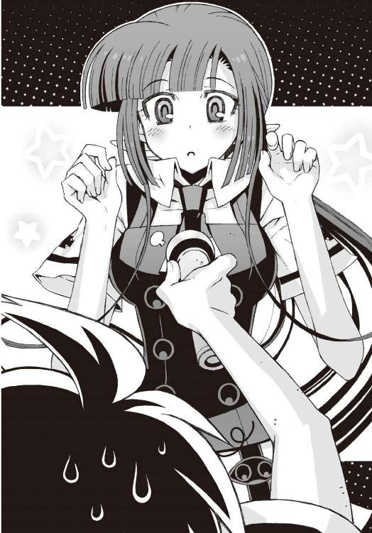
おそらく嵩月本人にも。
『なにやってるの、智春っ!?』
「う......」
操緒が眉を吊り上げて僕を睨みつけ、嵩月は驚いたように目を見開いて固まっていた。
「い、いや......違う。今のは、こいつが勝手に......」
僕は必死で首を振る。言い訳したくても、あまりに予想外の出来事にうろたえて言葉が出てこない。異様な気配を感じて振り返ると、
「な......つ......めぇ......っ！」
鬼神のごとき形相の佐伯妹が、バキバキと指を鳴らして僕に近づいてくるところだった。
違うんだ、と僕は声にならない言葉で呻く。
そのとき僕の手の中で、イグナイターが淡く発光していたことに気付く者はいなかった。
○
「──イグナイターが嵩月奏に反応した？」
上カルビ肉を頬張りつつ、訊いてきたのは科學部部長の塔貴也である。不細工コアラではなく、生身の人間のほうの彼だ。
「それは......むぐ......彼女を個体識別しているというよりも......はふはふ......強い悪魔の血に反応したとか......あ、その肉はあまり焼きすぎないで......そういうことではないのかな？」
「はあ。そう言われても僕にはわからないですけど......」
うちわで炭火を扇ぎつつ、僕はうんざりとつぶやいた。喰うか喋るか、どっちかにしてくれ。
朱浬さんたちの帰国前日の夜である。
見慣れた鳴桜邸の中庭には、バーベキューコンロが置かれている。
ここ数日、イグナイターの護衛を兼ねて鳴桜邸にはいつになく大勢の洛高生が集まっており、だからというわけではないのだが、誰からともなく焼き肉をしようと言い出したのだ。
要するにみんな暇だったのだろうと思う。
明蓮寺高校の事件から一週間が過ぎたというのに、あれほど恐れていた加賀篝の襲撃はなく、鳳島もさっぱり姿を見せていない。明日の夜には佐伯兄たち第一生徒会の連中も戻ってくるし、そうしたら僕がイグナイターを持ち歩く理由も、冬琉会長に護衛してもらう必要もなくなる。べつに浮かれているわけではないが、肉ぐらい喰っても罰は当たらないと思うのだ。
そういう成り行きだから仕方ないのだが、集まっていたのはわけのわからない顔ぶれだった。
もともと鳴桜邸の住人であるアニアと、彼女の護衛の嵩月はいいとして、冬琉会長と六夏。そして冬琉会長が連れてきた部長と、六夏のお供の真日和秀──
『......なんで真日和まで来てるのよ？』
飢えた野犬のように無心に肉を頬張る真日和に、操緒が半眼になって訊いた。ここしばらく姿を見ないと思っていたのに、こういうときだけ顔を出すとは、相変わらず調子のいい男だ。
「護衛ッスよ、夏目くんの護衛。加賀篝隆也なんかの相手をするなら、戦力は多いほうがいいに決まってるッスよ」
『......今ごろ出てきてなに言ってんだか』
「仕方ないじゃないッスか。こっちも忙しかったんスから」
『なにが忙しかったのよ？』
「調査してたッス。加賀篝隆也について。佐伯第一生徒会長からの依頼ッス」
『......そうなの？』
操緒が、へえ、と感心する。僕は肉を焼く手を止めて、感情の読めない真日和のタレ目を見つめた。佐伯兄が僕たちの知らないところで、そんな手を打っていたことに驚いたのだ。
真日和は、特徴的な八重歯で肉を噛み切りながらうなずき、
「イグナイターについての情報はなかったッスけどね、こないだの悪魔狩り事件のあとの加賀篝隆也の足取りを追跡してみたら、ちょっと面白いことがわかったッスよ」
「......面白いことって？」
「あの男、ロンドンで目撃されてたッス」
「ロンドン......って、イギリスの？」
「そうッス。あ、夏目くん......タレとってください」
「はいよ......ていうか加賀篝が国外逃亡するのって、そんな変なことじゃないだろ？」
醤油ダレの入った瓶を手渡しながら、僕は真日和に訊き返した。
加賀篝隆也が前回起こした騒ぎは、この近くの都市をいくつも巻きこむような大事件だった。警察沙汰になるような表立った犯罪ではなかったが、洛高だけではなく、学生連盟や嵩月組などの悪魔結社も彼を追って動いていた。だから加賀篝が海外に逃げようとするのは、むしろ当然の反応という気がする。
「まあ、そうなんスけど......でも、どうしてロンドン、って思わないッスか？」
『仕事の関係じゃないの？』
操緒が素っ気ない口調で言う。その答えで僕も納得する。加賀篝の本職は、プロのギタリストなのである。世界的に有名なギタリストが新曲をロンドンでレコーディング。いかにもありそうな話である。べつに面白くもなんともない。
「お二人は重要なことを忘れてるッスよ」
金網の上の肉を裏返しながら、真日和は真面目な表情を浮かべた。そして箸の先を僕たちに向け、声を潜め、
「ロンドンには、王立科学狂会の本部があるッス」
「あ......」
僕は操緒と顔を見合わせる。王立科学狂会というのはつまり、洛高第三生徒会のスポンサーである。洛高科學部の活動費用や、朱浬さんが湯水のごとくばらまいている弾薬代も、実質的には彼らからの寄付で賄われているらしい。そんな王立科学狂会を密かに援助しているのが、英国王室なのだそうだ。科学狂会の本部がイギリスにあるのは当然だ。
「どうして加賀篝がそんなところに？ 偶然じゃなくて？」
「それは俺の口からはなんとも言えないッスよ。ただ、いっこだけ断言できるのは、科学狂会は必ずしも加賀篝と敵対してるわけじゃないってことッス」
「なんで？ あ......そうか......」
科学狂会の活動目的は黒科学の探究。すなわち悪魔の能力を科学的に解明することだ。
そんな彼らが、魔神相剋者である加賀篝隆也や、彼の行動を、貴重なサンプルだととらえるのはなんの疑問もない。
「いやでも、だからって加賀篝と科学狂会本部が手を結んだってことにはならないんじゃ......」
「ああ、もちろんそうなんスけどね」
僕の反論を、真日和はあっさりと受け入れた。彼が手に入れた情報は、加賀篝がロンドンで目撃されたということだけ。それ以外はただの推論でしかない。
「ただ、実はもうひとつ気になる情報があるッスよ」
「なんだよ。今度は？」
「加賀篝隆也と同じホテルの宿泊客名簿に、ナオタカ・ナツメという人物の名前があったッス」
「......え!?」
僕は箸を金網の上に置いたまま、呆然と固まった。
夏目直貴は、音信不通になってる僕の兄貴の名前だ。同姓同名の人違いという可能性もないではないが、それに科学狂会が絡んでくるとなると話は別だ。そんな偶然があるとは思えない。だけどそれでは、うちの兄貴と加賀篝が知り合いということになってしまう。
「待った、真日和。その話もっと詳しく──」
聞かせてくれ、と僕が言いかけたとき、
「ちょっと、真日和！ あんた、貴重な情報をなにタダでぺらぺら喋ってんのよっ!?」
それまで黙々と食べ続けていた六夏が、真日和の顔面めがけて焼けた脂身を投げつけた。
「ぐあああっ、なんスかこれっ!? 熱ち、熱ち......」
顔面を押さえて、芝生の上をのたうち回る真日和。
僕は唖然としてそれを見つめた。そこまでやるか、とあらためて六夏の恐ろしさを思う。これではどうやっても、これ以上の情報を聞き出せそうにない。
そして、
『智春っ、燃えてる。肉っ！ 箸っ！』
金網を指さして操緒が叫んだ。
「うわっ、熱ちーっ......！」
真日和と同じような悲鳴を上げて、僕は火に包まれた右手を振った。
焼けすぎた肉の脂が炭の上に落ちて、派手な炎が花火のように燃え上がる。焼き肉のタレを全身にぶちまけながら悶える僕たちを、
「......バカめ」
鳴桜邸の縁側からアニアが冷ややかに見下ろしていた。
そんな騒ぎの中、ひたすら黙ってパイナップルを食べ続ける六夏。冬琉会長は、舞い上がった灰を神懸かり的な箸捌きで避けつつ、ほどよく焼けた肉と野菜をすべて回収し、
「こら、塔貴也。白米ばかり食べてないで、ちゃんと肉と野菜も食べなさい。ほら、こっち向いて。口元にタレがついてるから」
そんな感じで部長の世話を焼いている。まるで甲斐甲斐しい新妻のようだった。それだけに背中に背負った日本刀が殊更に異様だ。今さら突っこむ気にもなれないが。
そしてようやくそのときになって、嵩月の姿が見あたらないことに僕は気づいた。
『どうしたの、智春？』
落ち着きなく周囲を見回す僕を、操緒が不審そうに呼び止める。
「......いや、嵩月はどこにいるんだろう、と思って」
『ちょっと前にキッチンで見かけたけど......？』
「え？ じゃあ、さっきから僕らが喰ってた肉とかって全部、嵩月が......？」
異常に食い意地の張った客ばかりなのに、なぜか肉も野菜もなくならないと思っていたら、嵩月がずっと一人で補充してくれていたらしい。
なんてことだ、と僕は狼狽した。いくらなんでもそれでは嵩月が可哀想過ぎる。そういえば嵩月が肉を喰ってる姿は、さっきから一度も見ていなかった。炭火の世話に気を取られて、彼女がいないことに気づかなかったのだ。
「な、なんでもっと早くに教えてくれなかったんだよ!?」
僕は今さらのようにうろたえて叫ぶ。しかし操緒はなぜか困ったような顔をして、
『んー......言おうかどうしようか迷ったんだけど......』
「けど、なんだよ？」
言い淀む操緒の横顔を睨みつつ、僕は慌ててキッチンへと向かった。無駄にでかい鳴桜邸の建物が恨めしくなるのはこんなときだ。庭からちょっと叫んだくらいでは、キッチンまで声が届かないのだ。僕が仕方なく玄関に回って、長い廊下を小走りに駆け抜けていると、
「あっ......」
ちょうどキッチンから出てきたエプロン姿の嵩月とかち合った。
嵩月は、三枚の大皿に山盛りのキャベツとタマネギと肉を抱えていた。
ものすごい量だった。
ベテランのファミレス店員でも手こずりそうなその大皿を、彼女は器用に両腕と肘で支えて運んでいる。僕らが庭で騒いでいる間、そうやってずっと一人で文句も言わず、ウェイトレスを務めていてくれたのかもしれない。とにかくその皿をどうにかしなければと僕は焦って、
「て、手伝うよ、嵩月。ずっと任せきりにして悪かった」
そう言って彼女に近づこうとした瞬間、
「あっ......やっ......」
大皿を抱えたままの姿勢で、嵩月がすっと後ろに下がった。まるで僕から逃げるように。
え、と僕は硬直した。思いがけない彼女の反応に、手を伸ばしかけたままの姿勢で静止する。傷ついたような顔をしていたのかもしれない。僕が浮かべた表情を見て、嵩月は慌てたようにぶるぶると首を振り、
「あ......ちが、違い......ます！ そういうつもり、ではなくて......！」
僕のことを傷つけようとしたわけではない、ということが言いたいのだろうと思った。
しかし嵩月はそう言いながらも、僕に触れないように、廊下の壁を背にしてジリジリと僕の横を通り過ぎ、
「あ......わたし......お肉を皆さんに届けてくる、から......！」
ぺこ、と小さく頭を下げると、彼女はそのまま中庭のほうへと駆け出していった。
その間、嵩月は僕と一度も目を合わせようとしなかった。
ぱたぱた、と嵩月の軽い足音が響き渡り、リボンで結んだ黒髪が揺れる。走り去った彼女が見えなくなってからも、僕は呆然と廊下の隅っこに立ち尽くし、
「もしかして......僕は、嵩月に避けられてる......のか？」
『......やっと気づいたの？』
頬杖のまま、操緒が浅くため息をついた。
なんでだ、と頭の中を疑問が渦巻く。しかし考えてみれば心当たりは多かった。つい先日もイグナイターを嵩月の胸に押しつけたばかりだし。
『......なにショック受けたような顔してるのよ？』
放心した僕の目の前で、呆れたように肩をすくめながら、操緒がヒラヒラと手を振った。
いやだって、と僕は首を振る。目の前であんなふうに嵩月に逃げられたら、それは普通にショックだろう。しかし操緒は冷淡な口調で、
『こないだ智春の前で泣いちゃったのを気にしてるんでしょ。たぶん、二人きりになったら、智春にそのことを問い詰められると思ってるんだよ』
「あ......ああ......」
そのことか、と僕は複雑な気分で息を吐いた。
嵩月と契約しなければ理由は教えない、と言っていた朱浬さんのことを思い出す。
もし嵩月も似たようなことを考えているのなら、彼女が僕を避けたくなるのも当然かもしれない。契約しないと教えない、とは、さすがに嵩月の口からは言えないだろうし。
「......それで嵩月は一人でキッチンに籠もってたのか......悪いことしたな」
『そう。それでみんな黙ってたんだよね』
軽いため息のような口調で操緒が言った。そ、そうだったのか、と僕は更に落ちこんだ。気づいてなかったのは僕だけか。
『もう、今日のところは嵩月さんと話するのは諦めたら？』
「諦めてどうするんだよ」
『だから、朱浬さんが帰ってきてからもう一度......相談......』
してみれば、と言いかけた表情のまま、操緒がなぜか不意に黙った。
唐突に訪れた不自然な沈黙。僕は怪訝に思って振り返る。
バーベキュー中の中庭の騒がしい声が、まるで遠い世界の音のように聞こえてくる。
操緒は僕の肩越しに、薄暗い鳴桜邸の廊下を見ていた。
もともと大きな操緒の瞳が、限界近くまで見開かれていた。ひっ、と彼女の喉のあたりから短い悲鳴が洩れた。色素の薄い顔色が、ますます蒼白になっている。
「なんだよ、その顔？」思わず苦笑して僕は訊いた。「まるで幽霊でも見たような顔して」
いちおう冗談のつもりだったのだ。
鳴桜邸は建築後数十年とも数百年ともいわれる古い洋館で、外観はまさしく幽霊屋敷そのものである。それに比べれば中は割とマシだが、それでも、いつ幽霊に遭遇してもおかしくない風情がある。幽霊の似合う建物として市内では間違いなく五指に入る。というか、そもそも操緒自体が幽霊なのだ。
だから今さら幽霊ごときで驚くはずがないと思っていた。
操緒も。そして僕自身も。
だがしかし、
『で......出た......！』
声を震わせて操緒が言った。なに言ってんだ、と呆れながら彼女の視線を追って、
「う、うわああああっ！」僕も絶叫した。
そこにはまさしく幽霊が浮かんでいた。決してここにいるはずのない少女の姿が。
重力を無視して漂う肉体。うっすらと背景の透けた色素の薄い肌。
笑顔とも嘆きともつかない儚げな表情。そして哀しげな鈴の音のような声。
『............ね......がい......』
彼女の唇が言葉を紡ぐ。
混信した無線を聞いているような、途切れ途切れの弱々しい言葉。やがて限界が訪れたかのように、少女の姿がゆらゆらと揺らぐ。水面に落ちた波紋のように、ゆっくりと彼女の姿が薄れて消えていく。
『れい............を......たすけて......』
なにかを訴えるように僕たちのほうへと必死で手を伸ばし、そして彼女の姿は薄れて消えた。
あとに残された息苦しいほどの静寂の中で、僕と操緒は呆然と立ち尽くした。
『今のって......』
操緒が僕を振り返った。彼女の表情がいつになく硬い。怯えているわけではない。真剣なのだ。僕は黙ってうなずいた。心臓が激しく脈打っている。なにか猛烈に悪い予感がする。
なぜなら、今、僕たちに必死でなにかを訴えていた少女は、
「哀音......」
佐伯兄の射影体の名をつぶやいて、僕は拳を握りしめる。
あり得ないのだ。射影体は演操者から離れて遠くへは行けない。まだ海外にいるはずの哀音が、僕たちの前に現れることなどあり得ない。
だけど、今ここにいたのはたしかに哀音だった。
つまり、あり得ないことが起きているということだ。
「それって、まさか......」
ぎり、と奥歯を噛みながら僕がつぶやいた。そのとき操緒が、なにかに気づいたようにハッと頭上を見上げ、
『智春っ！』
叫んだ。その直後。
巨大な爆発音とともに、鳴桜邸の地面が揺れた。
「な、なんだ......っ!?」
咄嗟に反応できたのは、操緒が警告してくれたおかげだった。
直下型地震を思わせる激震の中で、僕は必死に廊下を走った。
建物はまだ揺れている。炎に包まれた庭が真昼のように明るい。爆風で壁が震動し、ガラスの割れる音が無数に聞こえる。
しかし衝撃はすでに収まっている。爆発は最初の一回だけだ。
爆心地は──
鳴桜邸の中庭だった。
「嵩月っ！ アニアっ！」
炎の輝きに目を細めながら僕は叫んだ。鳴桜邸の庭が燃えていた。
渦巻く炎の照り返しに、見覚えのある輪郭が浮き上がっていた。
アニアを庇って身構えている嵩月。銃を抜く六夏と、居合いの姿勢を取る冬琉会長。真日和の使い魔である風獣が、身体を低くして真日和を守っている。どこからともなく取り出したビデオカメラで、事態を撮影しているのは部長だ。とりあえず全員無事ではいるらしい。
こんなときの反応の素早さはさすが、としかいいようがない。場慣れした連中ばかりなのだ。
それでも中庭は酷い有様だった。
地面に深々とすり鉢状の爆発痕が穿たれており、バーベキューコンロは跡形も残っていない。
しかし身体に感じた衝撃の割に、爆発の規模は小さかったらしい。周囲の建物にはほとんど被害はない。いわゆる爆発物による攻撃ではないのだ。もしそうなら、今ごろ僕たちも無事では済まなかったはずだ。
魔力らしきものも感じない。機巧魔神や使い魔の姿も見えない。
代わりに感じたのは刺激臭だった。空港などに漂っている臭い。航空燃料が焼ける臭いだ。
これと同じような臭いを、つい最近、僕はどこかで嗅いだことがある。
唐突に、墜落という言葉が脳裏に浮かぶ。
爆発物による攻撃ではない。
これは、なにかが遥か上空から墜落してきたのだ。恐ろしく小型で軽量の飛行物体が。
『智春......これ......』
操緒が細い声でつぶやいた。
彼女が見ていたのは、地面に飛び散った飛行物体の破片だ。
薄く尖った滑らかな金属片。それは折れた黒塗りの翼だった。
そして見覚えのあるメガネの部品。赤く縁取られたセルフレーム。
「これって......朱浬さんの？」
かすれた声でつぶやいて、僕はそのフレームを拾い上げた。
まるでそれが合図になったように、頭上で、ガサガサと葉擦れの音がした。
鳴桜邸の庭に植えられた桜の大木。その枝に引っかかっていたなにかが動いたのだ。
季節外れの漆黒のコートに包まれた、細身の影。
「あいたたたた......生身だったら死んでたわね。これは......」
緑の葉に覆われた桜の枝を揺らして、おっとりと場違いな声が聞こえてきた。
燃え残る炎が、その声の主を美しく照らし出した。
肩のあたりで切り揃えた黒髪。モデルのような端整な美貌に浮かぶアルカイック・スマイル。
彼女は、僕たちに気づいてにっこりと微笑み、
「......はい。お土産」
コートの下から平べったい箱を取り出してくる。
ハワイ名物。マカダミアナッツ・チョコレート。
僕たちはただ呆然とその姿を見上げていた。
朱浬さんだった。
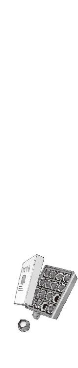
六章
......昨日午後。ホノルルから東関東国際空港に向けて飛行中だった、ノースイースト航空〇九九三便が、関東上空にて消息を絶ったとの情報が入りました。
詳しい内容は不明ですが、墜落の可能性もあるとして、現在、国土交通省では......
「──というわけで、まあ、そういう状況なんだけど」
そう言って朱浬さんはテレビの電源を消した。
日付が変わって修学旅行の帰国予定日、深夜未明。鳴桜邸のリビングである。
空から降ってきた朱浬さんは風呂に入って予備の制服に着替え、墜落時にこしらえた擦り傷の手当を受けながら、毛布にくるまってコーヒーを飲んでいる。六夏と冬琉会長は事件の報せを聞いて学校に戻ったため、残ったのは科學部の関係者だけだった。
街はひっそりと寝静まっている。
墜落してきた朱浬さんが、あれだけの轟音や衝撃をまき散らしたわりに、たいした騒ぎにはならなかった。近所から苦情が出ることも、警察に通報されることもなかった。この辺りに住んでる人たちは、この程度の騒動には慣れているのだ。あるいは冥王邸などという異名を持つこの幽霊屋敷に、あまり関わりたくないと思っているのかもしれない。その気持ちは実によくわかる。
『さっきの......墜落したかもしれない飛行機って、修学旅行の？』
暗くなったテレビの画面を見つめたまま、操緒が訊いた。
今日の早朝、ハワイから帰ってくるはずだったＮＥＡ社の航空機。僕の記憶が正しければ、それには修学旅行中の洛高生二七九人と引率教師が乗っていたはずだ。そのことに気づいてゾッとする。
またか、と僕は顔をしかめた。朱浬さんが墜落してきたと思ったら、彼女が乗っていたはずの飛行機まで。なぜ僕の周りでだけ、こうも次々飛行機が墜ちるのだ。やはり、なにか呪われているのではないだろうか、と思う。
みんな死んでしまったのだろうか、と実感の伴わない恐怖が押し寄せてくる。
ひかり先輩や、佐伯兄。顔見知りの陸上部の先輩たち。彼らがいなくなってしまった世界を想像すると、哀しいというより、ただひたすら恐かった。
しかし、ある意味、僕以上に墜落慣れしている朱浬さんは、妙に平然とため息をつき、
「そ。でもあれは墜落したわけじゃなくて、たぶん捕まっただけだと思うけど」
『捕まったたって......乗っ取られたことですか？ ハイジャック？』
操緒が怪訝そうに聞き返す。思いがけない彼女の言葉に、僕は混乱した。
真っ先に浮かんだ感情は、犯人に対する同情だった。よりによって演操者やら悪魔やら人間弾薬庫の朱浬さんやらが乗ってる航空機を乗っ取るとは。なんという運の悪い犯人だ。知っててやったことだとしたら、自滅が目的だったとしか思えない。
だが、それにしては朱浬さんの行動が変だと思う。たかがハイジャック犯のいる飛行機から、どうして彼女は逃げ出すような真似をしたのだ？
「うーん、あれはハイジャックっていうのかしらね......」
あまり緊迫感のないおっとりとした口調で朱浬さんが言う。操緒は、『ん』と首を傾げ、
『違うんですか？』
「べつに乗っ取られたわけではないけど、人質になってるって意味では一緒かしら。とにかく、ジェット旅客機が丸ごと一機捕まってるのよ。空中で」
「空中で......飛行機を捕まえた......？」
非常識に思える朱浬さんの言葉に、部長が、ふむ、と唸った。
僕は更にひどく混乱しながら、操緒と顔を見合わせた。
朱浬さんの言葉だけでは今イチ実感がわかないが、実際に飛行機が消息を絶ったという事実はマスコミでも報道されている。なにか事件が起きたことは間違いないのだ。
しかし、国際線の航空機を空中で丸ごと捕獲するなんてことが、果たして可能なのかと思う。小型のセスナ機やグライダーを捕まえるのとは、わけが違うのだ。
もしそんなことができるとしたら、それは人間業ではない。悪魔の力だ。でなければ、人間でありながら悪魔の力を行使する者の仕業だ。演操者か契約者。あるいは、その両方の能力を手に入れた男。
「──加賀篝隆也よ」と朱浬さんは言った。
「なるほど。魔神相克者......か。面白いな」
弾むような口調で独りごちる部長。どことなく嬉しそうですらある。どうやら捕らわれた飛行機を心配しているわけではなく、純粋にその方法や原理に興味を持ったらしかった。明蓮寺高校で彼の分身の機巧偶人がひどい目に遭わされたというのに、まったく懲りてないらしい。
一方、操緒はそれなりに真剣な表情で、
『それって......時間静止能力を使ったってことですか？』
嘘だろ、と僕は困惑気味に呻く。
たしかに加賀篝隆也の機巧魔神《薔薇輝》の能力は時間停止だ。《薔薇輝》の両腕には、巻きついたものすべての「時間を止める」鎖が内蔵されているのだ。だがしかし、
「飛行機丸ごと一機ぶんの時間を止める、なんて......そんなことできるのか？」
唖然としながら訊き返す。あまりにもスケールがでかすぎてピンとこない。
「だって国際線のジェット旅客機だろ。あんなバカでかいもの......何百メートルもあるのに」
「ううん、そんなにはないわよ。７７７の全長はせいぜい七十メートル前後。翼幅はそれよりちょっと短いくらい。最大離陸重量はだいたい三五〇トンってところ」
朱浬さんが優しく微笑みながら訂正してくれる。あ、そうなんですか。もっとでかいような気がしてました、と僕は思わず納得しかけて、
「いえ、あの......そういうことじゃなくて......時間静止が......」
「できる、でしょうね。飛行機の機体を鎖で縛ることができるのなら」
朱浬さんはあっさりと肯定した。
反論することはできなかった。加賀篝の機巧魔神の恐ろしさを、僕は誰よりも知っている。《薔薇輝》の鎖は、数十メートル離れた距離から、僕たちを自在に攻撃してきた。それが両腕で合計六本。魔力を帯びたその鎖は、巻きついたものすべての時間を止める。たとえそれが敵の機巧魔神でも、飛行中のジェット旅客機であっても、だ。
しかし、それだけで飛行中の旅客機を捕獲できるとも思えない。
時間が止まるといっても、それはしょせん加賀篝の鎖が縛った空間の内側に限った話である。
つまり加賀篝が時間を止めたとしても、飛行機は重力に引かれて落下する。さすがにそれを止めるだけの力は、加賀篝の機巧魔神や使い魔にもないだろう。
「たしかに、時間が止まっているからといって、いつまでも空中に浮かんでいられるということにはならないわよね。飛行機にかけられた魔法が、時間静止だけならね」
「え？」
「時間を止める直前に、それ以外の術が......たとえば、重力を中和するような魔法が飛行機にかけられていたとしたら？」
「それは......」
物憂げに微笑む朱浬さんを見つめて、僕たちは絶句する。
重力そのものを操る魔法。馬鹿げた話だがそれは存在する。重力制御の魔法は存在するのだ。僕はそのことを知っている。
なぜなら。
僕の機巧魔神である《鐵》の能力こそが、その重力制御だからだ。
その能力を僕は未だ完全には制御できない。単なる破壊的な魔力として、拳に乗せて撃ち出すことしかできない。しかしその魔力を上手く制御できれば、たとえ一瞬だけでも、飛行機にかかる数百トンの重力を完全に中和して、宙に浮かせることもできるのかもしれない。
そして重力制御の魔法をかけたその一瞬に、その飛行機の時間を止めたなら──
三百人近い洛高生を乗せた飛行機を、空に浮かせたまま人質にすることが可能になる。
そう。可能になるのだ。だけど。
「だけど......それって加賀篝一人の力じゃないですよね？」
その恐ろしい可能性に気づいて僕は声を震わせた。たしかに加賀篝の機巧魔神も彼の使い魔も強力だ。だからといって彼らは万能ではない。加賀篝が重力制御までは使いこなせるなんて話は聞いてない。
それに、飛んでいる飛行機を鎖で縛るためには、彼は飛行機の外にいなければならないのだ。いくら加賀篝でも時速数百キロで空は飛べまい。つまり彼には仲間がいるのだ。
そうね、と朱浬さんはうなずいた。
「鳳島の魔精霊ならば、おそらく瞬間的にジェット旅客機に追いつくくらいの速度は出せると思うわ。重力制御に関しては、よくわからない。いつかみたいに儀式魔術を使ったのかもしれないけど......誰かほかにも協力者がいた可能性は否定できないわね」
「魔精霊......」
鳳島の魔力で生み出された妖鳥の姿を思い出し、僕は嫌な気分になった。
ハチドリのように高速でホバリングする、破壊的な魔力の塊たち。あんなものに乗った鳳島が旅客機に向かって飛んできたら、史上最悪のＵＦＯ事件に認定されるのは間違いない。マンテル大尉でも裸足で逃げ出すだろう。なんにせよ加賀篝と鳳島が手を組んでいるという仮説は、これでほぼ裏付けられたわけだ。
「なるほど......重力制御を可能にする儀式魔術......なんらかの補助的な法具を使ったのは間違いないとして、しかし機巧魔神の魔力生成機構を使わずにそんな高度な物理法則変換が可能なものなのか......ふむ、実に面白い。現実世界もまだ捨てたものではないなあ」
なにやら一人で嬉しそうにしてるのは部長だった。
彼の興味のほとんどは、人質にされた後輩たちの安否ではなく、加賀篝の魔術の内容に向いているらしい。さすがは科學部の部長というべきか、やはり彼もどこか少し壊れているのだ。
そんな部長の姿を、朱浬さんはなぜか、頼もしがるような尊敬するような眼差しで見つめている。冬琉会長もそうだが、この人の趣味もよくわからない。
「えっと......じゃあ、朱浬さんがうちの庭に落っこちてきたのは......」
「ん？ ええ。そんな感じで危ないところを逃げ出してきたのよ......コーヒーおかわり」
ふふ、と少し得意げに胸を張る朱浬さん。僕はマグカップを受け取って立ち上がりながら、
「え？ 逃げ出してきたって......まさか飛んでる飛行機から？」
「そう」
当然のようにうなずく彼女を見返し、唖然とする。
そういえば朱浬さんが修学旅行に持参した大量の荷物の中には、例の飛行ユニットが入っているとか言ってたっけか。それにしてもなんて非常識な。
「時間がなかったから一気に洛高まで戻るつもりだったんだけど、ギリギリで燃料がもたなかったのよ。でもって、滑空しながら不時着できそうな場所を探していたら......」
「......うちの庭が見えたというわけですか？」
「そうそう。ちょうどいい感じに庭で火とか焚いてるし。いい目印になったわ、ありがとね」
そう言って朱浬さんはにっこりと笑う。しかしお礼を言われても困る。なにもあんなときに墜ちてこなくても。
おかげで嵩月には相変わらず避けられたままなのだ。今も彼女は、眠ってしまったアニアを膝枕したまま、僕に話しかけられるのを恐れるかのようにリビングの隅っこで黙っている。
そして朱浬さんは、ふと真剣な顔つきになった。
「実をいうと、飛行機を脱出できたのはあたし一人の力ではないのよね」
「え？」
「最初に異状に気づいたのは哀音で、あたしを逃がしてくれたのは沙原ちゃん。あの二人がいなかったら、あたしも今ごろ飛行機の中で固まってたわ」
そう言って、ふ、と思い出したように嘆息する。
修学旅行の全日程をほぼ終えて、帰国途中だった飛行機の機内。旅行中、予想されたほどのトラブルもなく、朱浬さんや第一生徒会の連中も、さすがに弛緩していたのだそうだ。
そんな中で哀音だけが、加賀篝の接近の気配を察知した。
彼女の報告を受けて、真っ先に動いたのは佐伯兄だった。
しかし、着陸前とはいえ高度数千メートルを飛行中の旅客機の機内である。いくら佐伯兄でも、加賀篝たちに対抗する手段はなかった。下手に戦闘など仕掛けようものなら、飛行機ごと巻きこんで墜落する原因になりかねない。
だから佐伯兄は、ひかり先輩を連れて朱浬さんのところに向かったのだ。
ひかり先輩の悪魔としての能力は空間跳躍。とはいえ一度に数千メートルもの距離を移動するのは、いくら彼女でも不可能だ。しかし加賀篝たちに気づかれることなく、朱浬さんを飛行機の外に放り出すことはできる。普通の人間はそんなことをされたら死ぬだけだし、加賀篝もさすがにそこまでは警戒していなかったと思われる。おそらく加賀篝の唯一の誤算は、修学旅行のハワイ観光に、個人用飛行ユニットを持っていく非常識な生徒が混じっていたということだろう。
そして朱浬さんはどうにか自力で生還し、貴重な情報を洛高生徒会に持ち帰ってくれた、というわけだ。
「......玲士郎にも借りができちゃったわね」
朱浬さんは、独り言のような口調で物憂げにつぶやいた。
僕はなにも答えられないまま、淹れ直したコーヒーを彼女の前に置いた。自宅にいるはずの佐伯妹のことをふと考える。この飛行機失踪事件のことを彼女はすでに知っているのだろうか。あのだだっ広い部屋で一人で怯えているのではないかと不安になる。
そんな沈んだ空気を読めない男が約一名、
「ふむ、加賀篝の目的はイグナイターなのかな？」
妙に弾んだ声音で部長が質問する。朱浬さんは、ちょっと小首を傾げ、
「イグナイター？ ああ、トモハルが持って帰った例のプラグインね？」
「いえ......これは僕じゃなくて佐伯あ......会長が......」
僕は真面目に否定しておく。そこのところははっきりさせておかないと、この恥ずかしい形状のプラグインがなし崩し的に僕の所有物にされてはたまらない。
しかし朱浬さんは僕の言葉をきっぱり無視して、
「あたしもそう思います。戦力の揃っている洛高生徒会をまともに襲撃するよりも、無防備な一般生徒を人質に交渉したほうが有利だと判断したんでしょう」
「なるほど......飛行機ごと人質に取るような強力な儀式魔術が使えるのなら尚更だね」
納得したようにうなずく部長。
そのとき僕は、加賀篝の使い魔が洛高の生徒会室を荒らした事件のことを考えていた。
あのとき盗み出された書類の中には、たしか修学旅行のしおりが含まれていた。加賀篝は偶然それを見て、修学旅行生の乗った飛行機を捕獲することを思いついたのかもしれない。
とにかくＮＥＡ〇九九三便は消息を絶った。時間静止状態の飛行機には無線も通じないし、機体表面を軟体獣で覆ってしまえばおそらくレーダーからも消える。航空路線から外れて漂い始めたら、見つけることは不可能に近い。
時間静止状態で閉じこめられた乗客は助けも呼べないし、自力脱出はもちろん不可能だ。
無傷で囚われた洛高二年生二七八名。
ほぼ完全な人質である。
そんなものを楯に交渉されたら、洛高の生徒会は為すすべもなくプラグインを引き渡すしかなかっただろう。
しかし、加賀篝にとってイレギュラーな要素がひとつだけある。朱浬さんが無事に脱出したことで、洛高側には彼らの手口がわかっているのだ。
敵の手の内がわかっているということは、対策を考える余地があるということだ。
今は六夏と冬琉会長が、朱浬さんからの報告をもとに対策を検討している。僕たちにできるのは、彼女たちからの連絡を待つことだけ。だったが──
「......来たか」
部長の携帯電話が、新着メールの着信音を鳴らした。
彼はその画面を一瞥し、ほう、と愉快そうな表情を浮かべた。なにやら妙な胸騒ぎがした。
「加賀篝隆也から連絡があったそうだよ。洛高のすべての生徒会宛て。鳳島蹴策との連名だ」
『鳳島って......あのバカ、やっぱり......』
操緒がため息のような声でつぶやいた。眠っているアニアの耳が、ぴくり、と鳳島の名前に反応したような気がした。僕はバケツに突っこんだままの大量の薔薇を無意識に眺める。アニア宛ての花束は、実はあれからも二日おきに送られてきているのだ。
部長は続けた。
「加賀篝の要求はやはりイグナイターらしい。今から約二時間後。明蓮寺高校生徒会室跡地で取引するそうだ。作戦会議を始めるから、交渉人の二人は、これからすぐに生徒会室に来いと冬琉が言ってる」
「作戦会議？」
『交渉人の......二人？』
僕と操緒はほぼ同時に、お互い疑問形でつぶやいた。
交渉人の二人というのは、六夏と冬琉会長のことではないのか。朱浬さんは人質になっていると思われているはずだし、正式な洛高生ではないアニアは今回の交渉の部外者だし、ほかに多少でも加賀篝の知り合いの洛高生といえるのは──
僕はほとんど無意識に顔を上げた。困ったような表情で僕を見つめる悪魔の少女と、まともに正面から目が合った。すでに人質になっている佐伯兄と射影体の操緒を勘定に入れなければ、明蓮寺で加賀篝と戦った洛高の生徒は二人だけだ。
だけど。まさか、そんな。こんなときに。
部長が、自分の携帯電話を僕に差し出してくる。妙にごつい高性能そうな電話機の画面には、二人分の見慣れた名前が書かれていた。
「夏目智春と嵩月奏。きみたち二人がイグナイターを持っていくこと。それが加賀篝が出した交渉の条件だそうだよ」
「あ......」と嵩月が小さく声を洩らした。
僕はただ、ぐったりとため息をついた。
○
深夜四時の明蓮寺山は、冷たい闇に包まれていた。
破壊された明蓮寺高校生徒会室の跡地。檻のように立ち並ぶ無数の木立が、壊れた僧坊を影絵のように囲いこんでいる。耳を澄ますと鳥の羽音が聞こえる。夜明け直前の頼りない月光が、夏の雲を不思議な色で照らしている。
「......本当にいいのか、嵩月？」
生徒会室前の小さな広場で僕と嵩月は足を止めた。ちょうど取引の時間だった。プラグインを収めた銀色のケースを足下に置いて、僕は隣にいる嵩月の横顔を見つめた。
「嵩月は本当は無関係なんだから、加賀篝なんかの要求に無理に従う必要はないよ。今からでも帰ったほうがいいと思う」
ここに来る途中、何度も繰り返したセリフを僕はもう一度口にする。
洛高の制服を着た悪魔の少女は、やはりこれまでと同じように少し困った顔で僕を見た。そして小さな声で訊いてくる。
「夏目くん......は？」
「え？」
無言で首を振るだけの嵩月の姿を想像していた僕は、彼女のその反応に少し戸惑った。
「......夏目くんは、どうして帰らないの？」
「それは......」
そういえばどうしてだろう、と僕は自問した。
僕は生徒会の関係者ではないし、イグナイターの所有者でもない。本来なら加賀篝の要求に従って、こんなところまで出向く必要はなかったのだ。
それなのに、なぜか今回は、ここに来なければならないような気がしていた。逃げることは最初から考えていなかった。
加賀篝との取引が、何事もなく無事に済むとは僕も思っていない。
生徒会の連中が護衛してくれることにはなっているが、今回ばかりは相手が相手だ。絶対確実な安全が保証されているわけではない。それでも、この事件で誰かが危険を冒さなければならないのだとしたら、それは僕の役目だと思っていた。
それはたぶん、哀音のせいだと思う。
お願い、と哀音は言ったのだ。
お願い。玲士郎を助けて、と。たしかに彼女はそう言った。
朱浬さんが庭に落ちてくる直前。哀音は鳴桜邸に一瞬だけ現れ、僕たちにそう告げたのだ。
本来は演操者から離れられないはずの哀音が、すべての力を振り絞るようにして、遠く離れた鳴桜邸に出現した。そして僕たちに助けを求めた。すぐ近くには六夏も冬琉会長もいたし、あの哀音がそれに気づかなかったはずがない。それでも彼女は僕たちの前に現れた。
「僕は、たぶん、約束を守りたいんだと思う」
自分に言い聞かせるようにして、僕はつぶやく。
哀音は、僕と操緒を選んだ。自分たちを救ってくれる存在として、信じてくれた。
だから僕は帰れないのだと思う。
今ここで逃げ出してしまったら、たぶん二度と、胸を張って哀音や佐伯兄に会えないような気がしたからだ。自分が彼女の信頼に値する人間だとは思わないけれど、少しでもそれに近づきたいと思ったのだ。
そんな複雑で自分勝手な感情が、言葉足らずな僕の説明で伝わるはずもないのだが、
「わたしも......同じ、です」
嵩月はそれ以上なにも訊き返さずに、僕を見上げて、微笑むように目を細めた。
綺麗な表情だと思った。いつもの近寄りがたい美貌ではなく、どこか懐かしい感じがした。ずいぶん久しぶりに彼女との距離を近くに感じる。
そういうことか、と僕は思った。彼女が頑なに僕を守ろうとする気持ちがわかった気がした。
うまく言葉にできないが、ひどく単純で、大切なことだ。僕が哀音を救いたいと思ったように、嵩月には嵩月の理由があって僕を守ろうとしている。自分を犠牲にしているのではなく、それが彼女の望みなのだ。たとえその理由を、今はまだ、彼女が僕に話してくれなくても。
明蓮寺高校の生徒会室跡地。
前にこの場所で嵩月を泣かせてしまったときのことを思い出す。
どうして自分を助けようとしたのか、と哀音に訊かれたら、僕もきっと言葉に詰まるだろう。
そんなことは望んでいないといわれたら、それは僕でも泣くかもしれん。あの日の嵩月の気持ちがようやく少し実感できた。
しかし今さら、ごめん、と謝るのも間が抜けた感じだし、どうしたものかと僕は途方に暮れ、
「あー......」
いつもの嵩月みたいに、なにも言わずに固まってしまう。うまく喋れないのは相手も同様で、うー、と困ったように唸り続ける嵩月。
すぐ傍でそれを聞いていた操緒が、なにこの会話、と呆れたように眉間にしわを刻んで、
『......あんたたち二人とも、変。なに言ってんのか全然わかんない。きも』
そう言いたくなる気持ちもわからんでもない。
僕と嵩月は顔を見合わせて苦笑した。それを見た操緒が更にムッとする。それでなくても操緒はさっきから機嫌が悪いのだ。どうやら加賀篝が交渉人の頭数に自分を入れなかったのが不満らしいが、それを僕らに言われても困る。
くすくすと微笑む嵩月の肌を、夜明け直前の月光が淡く照らしていた。
彼女の腕に抱かれているのは、いつかのコアラの縫いぐるみだ。部長と五感を共有しているとかいう、例の不細工な機巧偶人である。
『──夏目くんッ！』
その不細工コアラの目が、前触れもなくカッと輝いた。
ぐわっ、と僕は悲鳴を上げた。操緒と嵩月も目を丸くして固まっている。しかしコアラは、一切そんなことを気にせずに続けた。
『お取りこみ中のところを済まないが、段取りのほうはわかっているかな？』
「あ......はあ......べつに取りこんではいませんし、いちおう段取りも忘れてませんが」
通信機の代わりに連れていけ、といわれて持ってきたのだが、唐突に喋り出すのはびっくりするからやめて欲しい。
ならばいいよ、とうなずくコアラ。
段取りというのは、交渉の手順のことである。
プラグインを渡して人質を無事に解放してもらえれば、取引そのものは成立だが、必ずしもそれが上手くいくとは限らない。プラグインを奪われた挙げ句に飛行機はすでに墜落していた、という最悪の結末も起こり得るのだ。
洛高としては最低でも人質の安全を確保して、そして可能であればプラグインを渡さずに済ませたい。そのための交渉の手順を、六夏と冬琉会長が考えて、僕と嵩月はそれらをすべて覚えさせられたのだった。泣き落としから恫喝、そして実力行使まで。交渉のパターンはざっと百五十種類ほどである。
そして交渉が決裂した場合に備えて、この明蓮寺山の周辺には、生徒会の戦闘要員がすでに数十人ほど待機しているはずである。
意外なことに、金にものをいわせて彼らをかき集めてきたのは六夏だった。人質を楯に交渉するという加賀篝のやり方に、彼女は猛烈に腹を立てていたのだ。商売ってのは、相手に舐められたらおしまいなのよっ、というのが六夏の主張であった。誘拐犯の要求をあっさり呑んだ、などという噂が流れて、取引先に足下を見られるのを嫌ったのであろう。
そんな感じでバックアップ態勢は万全なのだが、人質になっている洛高二年生二七八人の命が、僕と嵩月の交渉に懸かっているのも事実である。
そう思うと異様に緊張してきた。
やはり今からでも替え玉を用意してもらって家に帰ろうかな、と僕が弱気なことを思い始めたとき。
「......来た」
嵩月が静かにつぶやいた。
○
最初に感じたのは音だった。金属を震わせているような、どこか不自然な鳥の羽音。
月明かりを遮って、黒い影が僕たちの頭上を旋回した。
氷で生み出された四翼の妖鳥。鳳島の魔精霊だ。
翼長四メートル近く。魔物としか形容できない巨大な鳥が、風圧で木々を揺らしながら舞い降りてくる。その背中にいるのは、頭の悪そうな銀髪の少年だった。鳳島だ。
「悪ィな、兄弟。ちょっと遅くなっちまった」
妙になれなれしい態度で手を振りながら、鳳島が声をかけてくる。
やがて地面に接地した瞬間、彼が乗っていた氷の妖鳥は、粉々に砕けて地面に散らばった。
鳳島の魔精霊は、真日和たちの使い魔とは違う。意志を持たない、ただの魔力の塊なのだ。
「直接顔を合わせんのは久しぶりだな。元気だったか、夏目？ 加賀篝の野郎も、どうせ交渉相手を指定するなら、そんな乳キャラじゃなくて、俺っちの妹を呼んでくれればいいのによ。そのほうが構図として美しいだろ？ 敵味方に引き裂かれたって感じが、なんかこう......」
緊張感をぶち壊す鳳島の無駄口に、僕は軽く圧倒された。乳キャラ呼ばわりされた嵩月が、ムッと険呑な気配を放ち始める。完全に交渉の主導権を握られている。
「で、例のイグナイターってやつは持ってきてくれたのか？」
「あ......わ、これだけど......」
無造作に足下に置きっぱなしだった銀色のケースを、僕は慌てて拾い上げた。危なかった。こいつを奪われたら、危うく交渉どころではなくなるところだった。
しかし鳳島は、たいして興味もなさそうにフッと笑い、
「オーケー、いい子だ。よく持ってきたな。すったら、落とさないようにしっかり抱いてな」
「は？」
どういう意味だ、と僕は顔をしかめる。まるで、このままどこかに連れていこうとしているように聞こえるが。なにを言ってるんだ、この男は。
「俺は細かい交渉とか面倒臭いのは苦手なんだよ。悪ィけど、あとは加賀篝と直接話してくれや。その辺の森の中に隠れているやつらに、邪魔されんのも面倒だしよ」
「加賀篝と直接話せって......!?」
ちょっと待て。加賀篝は、飛行中の飛行機の時間を止めて、その上にいるんじゃなかったのか？ 電話か？ しかし携帯電話って、そんなところまで電波が届くものなのか？
「どうせ人質の無事を確認しないことには、プラグインを渡せったって渡さないだろ。だから、見せてやるって言ってんだよ......来やがれ、魔精霊ども！」
鳳島が右腕を乱暴に掲げた。彼の頭上に再び巨大な氷の妖鳥が生み出される。全身あちこち鋭角的に尖った、見るからに不自然な亜生物だ。しかもさっきのやつよりも格段にでかい。佐伯家のリムジンと変わらないくらいのサイズだ。胴体部分だけでも二、三人なら余裕で乗れる。
「おっしゃ。乗れ、夏目！」
「の、乗れって......」
気楽な口調でなにを言い出すんだこのバカは。今どきこんな怪生物に乗りたがる高校生が、どこの世界に存在するか。てか、まさか、この札幌雪祭りの彫刻みたいなやつに乗って、空を飛ぶとか言い出すのではないだろうな。
「ああ、もう面倒臭ェな。ほら！」
「ちょ......ちょっと待てっ！ うわっ!?」
立ち竦んでいた僕に向かって、氷の魔精霊が尖った嘴を伸ばした。そして僕の制服の襟首をくわえ上げ、そのまま自分の背中へと放り投げた。
『と、智春!?』操緒の驚く声が、僕の頭上から降ってくる。
「あ」
コアラを抱いた嵩月が、僕を追って妖鳥の背中へと飛び乗った。彼女が振り上げた指先に、灼熱の火球が膨れあがった。それを見た鳳島が、ちっ、と舌打ちし、
「おい、そこの炎使い。俺の精霊の上で火は使うな。地面に落っこちたくなかったらな」
「うっ」
野獣のように低く唸りながら、それでも嵩月は火球を消した。落っこちたくなかったら、という鳳島の警告に、僕は猛烈な悪寒を覚えた。さっきから三半規管に伝わってくる、この浮遊感はいったいなんなのだろう、と思う。急に吹き始めた、この強風もかなり気になる。
氷の妖鳥の上で僕はのろのろと上体を起こし、
『あ......智春は目を開けないほうが......』
操緒の警告を無視して眼下を見下ろし、僕はそのまま凍りついた。
地面がなかった。
すぐ足下にあるはずの大地が暗い闇の中に沈んでいる。
もしかしてあの薄暗い航空写真みたいなやつが、本来の地面なのだろうか。明蓮寺の生徒会室周辺に待機していた六夏たちが、豆粒のように小さくなってやがて見えなくなる。
鳳島の魔精霊の背中に乗って、僕たちは飛んでいた。
どこか微妙に物理法則に反した、生理的に不自然な飛び方だった。鳥の形をしているといっても、気流に乗って滑空しているわけではないらしい。
おそらく冷気による空気の収縮を利用して、ジェットエンジンに近い原理で加速しているのだ。たしかにスピードは出るかもしれないが、当然、乗り心地は最悪に近かった。
「う......嘘だろっ!?」
裏返った声で僕は叫んだ。身体中の毛穴から嫌な汗が噴き出した。全身が鉄のように硬直して震えも起きない。薄笑みのような表情で引きつる僕を見て、鳳島はなぜか得意げに笑い、
「いい景色だろ、なァ。本当なら、妹しか乗せないんだが、まあ、今日は特別だ。堪能しな」
「なっ......や......め......降ろし......」
降ろせと言いたいが、喉が強張って言葉にならない。あうあう、と僕が意味不明の言葉を洩らし続けていると、どこをどう聞き間違えたのか、
「あン？ バレルロール？ 遠慮のない客だなオイ！」
鳳島はそんな勝手なことを言うと、魔精霊を唐突に旋回させた。横回転しながら上昇を始め、そのまま螺旋を描いてアクロバット飛行を始める。テーマパークの絶叫マシンが生温く思える異様な横Ｇを受けて、僕はほとんど失神寸前だった。
『あのね......鳳島っ！ 悪いんだけど、智春は高所恐怖症なんだよっ......！』
「なにィ!?」
さすがに見かねた操緒が鳳島の耳元で絶叫し、鳳島はようやく水平飛行に戻した。青ざめた僕の顔に今さら気づいて、
「うわ、大丈夫か、夏目!? 高所恐怖症って、そんなひどいのか？」
驚いたように鳳島が叫ぶが、あんな無茶なマニューバを喰らったら、普通の人間でも泣きそうになると思う。あまりの恐怖に意識を失うことすら許されず、僕は嵩月に支えられたまま、虚ろな表情で妖鳥の背中にしがみついている。
『どこまで行くの？』と操緒が訊いた。
「そんな遠くねえよ。北関東の山の中だ」
『山の中？』
「おう。加賀篝の野郎が旅客機を丸ごと捕獲したのは聞いてんだろ？ 今は、高度を落として山間の谷間に浮かべてる。せいぜい上空千五百メートルかそこらだから、ま、この速度なら生身でも高山病にはならねえだろ」
『はー......なるほど......』
操緒が感心したようにつぶやいた。
おそらく航空局のレーダーに捕獲されるのを避けるためなのだろう。加賀篝は山脈地帯の低高度上空に、捕獲した飛行機を浮かべていたのだ。重力中和状態で時間静止しているからこそできる芸当だ。道理で誰にも発見されないわけである。
とはいえ空が明るくなってしまえば、登山客などに目撃される可能性もないわけではない。だからこんな夜明け前ギリギリを、取引の時刻に指定したのだろう。
『んー......でも、そんな高いところにずっといたら寒くない？』
「あ？ だから炎使いの女を連れてきたんじゃねえの？ いや、俺も加賀篝がなにを考えてるのかは、よく知らないんだけどよ」
ちらり、と嵩月を振り返って鳳島が言った。
そういえば、メチャクチャなスピードで飛んでる割に寒くないと思っていたら、嵩月の周囲が薄ぼんやりと明るく発光している。彼女が炎で結界のようなものを張ってくれていたらしい。
しかし操緒が訊いたのは、どうやらそういうことではなく、
『鳳島は平気なの？ 素肌に革ジャンだし。なんかヘソとか出してるし』
この男の異様な恰好が気になっていただけらしい。しかし鳳島はなぜそんなことを訊くのだ、と言わんばかりの表情で、
「いや、べつに気にならんが？」
『ふーん』
なぜか妙に納得する操緒。体質とかそういうことではなく、たぶんバカだから風邪はひかないのだろうな、と思う。
そして無意味な会話をしている操緒たちの横で、
『まずいね。交渉パターンＺだ......』
嵩月に抱かれた不細工コアラが呻いた。部長の声である。パターンＺってなんだっけ、と僕は嵩月を振り返り、嵩月は困ったように首を振る。
『想定外の事態だよ。臨機応変に対応せよということだ』
「はあ......想定外、なんですよね。やっぱり......」
僕は渋い表情で不細工コアラを見つめた。予想してなかったのなら最初からそう言ってくれ。
コアラは短い首でぎこちなくうなずいて、
『明蓮寺周辺に配置した人員もこれでは無意味だし、プラグインに取り付けた発信器も果たして電波が届くかどうか......最悪、冬琉の合図でプラグインを収めたケースごと爆破する手筈になっていたんだが、それも無理だな。完全に裏をかかれたね』
「プラグインのケースを爆破って......」
そのケースというのは、もしかして僕が持ってるこのカバンのことですか？ そんなもの爆破するとか、さらりと言うなよ。
『鳳島の魔精霊に飛行能力があることはわかっていたから、それなりの対策はしてあると思うけどね、追いつくかどうかはなんとも言えない』
「......すると、どうなるんです？」
『交渉してくれ』
「は？」
『だから、交渉してくれ。きみが。臨機応変に現場の判断で。もともと加賀篝が指定してきた交渉人はきみたちだ』
やる気のない口調で部長に言われて、僕は軽くパニックに陥った。なんだよそれ。臨機応変ということは、必死で交渉パターンを暗記したのも無駄骨だったということか？
「あの、部長......それはちょっと無責任なんじゃ......あ、あの、もしもし？ 聞いてます？ 今さらそんなタダの縫いぐるみのフリしてもダメですからねっ、部長っ！」
乱暴に肩を揺さぶるが、不細工コアラの反応はない。接続を切ってるのかもしれない。うわ、と僕は頭を抱える。あのヒキコモリ男、肝心なときになんの役にも立たないじゃないか。
「なにやってんだ、夏目？ 大丈夫か、オイ？」
縫いぐるみ相手に騒いでいる僕を振り返って、鳳島が、ちょっとおバカな子を哀れむような表情になる。メチャメチャ悔しいが、反論できない。まさかこいつに同情されるとは。
「着いたぜ、ホラ。待たせたな」
遥か前方を指さして、鳳島が告げた。
眼下には切り立った岩壁が無数にそそり立つ、険しい山脈地帯の上空だ。
かすかに白み始めた朝焼けの空を背景に、なにか異様なものが浮かんでいるのが見えた。
遠目に黒い鳥のように見えたそれは、やがてジェット旅客機の輪郭になる。白地に赤と青のラインで縁取られた、国際線仕様の双発ジェット機。ＮＥＡ〇九三三便。
最大四百人近い乗客を乗せて飛ぶ旅客機は、間近で見るとさすがに巨大だった。その巨大な人工物が重力を無視して気球のように漂っている姿には、異様な非現実感があった。
魔力を帯びて銀色に輝いているのは、旅客機の機体に巻きついた鎖だ。
左右の主翼と尾翼。そして機首と胴体。
合計六本の鎖が旅客機の機体を縛っている。
飛行機の巨大さに比較すると、その鎖は冗談のように細かった。しかしその細い銀色の鎖が、この巨大な飛行機の中の時間を止めているのだ。まるで眠り姫の城を閉じこめた、呪いのイバラの森のように。
そしてそのイバラの森の頂点に、美しい薔薇色の機巧魔神と、その演操者が立っていた。
加賀篝隆也だった。
○
「連れてきたぜ、大将」
双発ジェット旅客機の機上。加賀篝隆也の前に降り立って、鳳島は自分の魔精霊を消した。
砕け散った氷の破片が、飛行機の屋根を転がりバラバラと地上へと落下する。その光景を、僕は震えながら見つめた。
高度せいぜい千五百メートル程度だと鳳島は言っていたが、中途半端に高くて余計に怖い。こんなことなら雲海の上のほうが、実感が湧かなくてまだマシだった。
重力が中和されている影響か、飛行機の機体は気流の影響もなく安定していた。しかし微妙に湾曲した胴体のせいで足場が悪い。バランスを崩すと、どこまでも滑り落ちてしまいそうだ。アルミ合金の外板は妙に滑らかで取っ手もなにもなく、おまけにうっすら濡れていてメチャメチャ怖い。
さすがに魔力を消費して疲れたのか、鳳島は肩で息をしながら、そのまま飛行機の屋根の上に大の字になって転がった。加賀篝隆也は、そんな鳳島に労いの言葉をかけるでもなく、苦笑めいた表情で僕を見た。
「フフ......また会えたな......夏目智春。こんなところまで呼びつけて悪かった。礼を言うよ」
「はあ......どうも」
普通に挨拶されてしまって、なんとなく調子が狂ってしまう。
さすがに這いずって歩くわけにもいかず、僕は腰の退けた頼りない姿勢で立ち上がった。
加賀篝は全身に黒いマントを巻きつけていた。マントの正体は彼の使い魔の軟体獣だ。おそらく外気や風圧から加賀篝の身体を保護していたのだろう。
そして彼の足下から伸びる影からは、機巧魔神が出現している。広げた両腕から鎖を伸ばす魔神の姿は、巨大なジェット旅客機を従えた御者のようだった。
「すまないが、のんびり挨拶している時間はないんだ。こうして機巧魔神を出しっぱなしにしているだけでも、けっこう神経を使うんでね。こんな場所でこいつを暴走させたくはないしね」
自らの機巧魔神を振り返り、加賀篝は皮肉げにつぶやいた。
彼の口振りだと、時間を静止させることそれ自体は、それほど大量の魔力を消費するわけではないらしい。一度でも時間を静止させてしまえば、鎖が解けるまで永遠にでも時を止め続けることができるのだろう。時間が止まっているというのは、そういうことなのかもしれない。
「というわけで交渉を始めよう。ご覧の通り、人質として預かったきみの上級生たちは無事だ。イグナイターさえ渡してくれれば、彼らは無傷で解放する。航空会社は今ごろ大騒ぎだろうが、実害はないと思うよ。せいぜい飛行機の到着時刻が半日ばかり遅れるだけのことだ」
加賀篝はそう言って、足下の旅客機を指さした。
彼のその態度に、僕は冷たい怒りを覚えた。
加賀篝が悪びれない理由もわかる。たしかに彼の言うとおりだ。人質になった生徒たちに危害は加えられていない。囚われて不自由な思いをしたわけでもない。彼らは自分が人質になったことさえ認識していないのだ。
魔神相剋者の圧倒的な力の前に、なにもできないまま命を取引材料にされている。
僕にはそれが許せなかった。
まただ、と思う。加賀篝は、自分の望みを叶えるためだけに、また他人の命を弄ぼうとしている。それを許せないと僕は思った。彼の望みがどれほど正当なものでも、こんなやり方を認めることはできない。彼には、このプラグインを渡せない。絶対に。
だが、それがわかっても僕にはどうすることもできなかった。
彼は今も、旅客機の乗客すべての命を握ったままなのだ。
「イグナイターの真贋を確認したい。ケースを開けてくれ」
加賀篝が、僕の持つ銀色のケースを指さして言った。
僕は無言で従った。
ロックを外して蓋を開けると、黒いクッション材に包まれて、キノコ形の金属筒が現れる。僕はそれを握ってゆっくりと取り出した。
黙って加賀篝の反応を待つ。彼はこれをどうやって本物と判断するつもりなのだろう、と少し戸惑う。人質の乗客が解放されるまでは、これを彼に渡すわけにはいかないのだが、しかしそれを要求されたら拒否できない。六夏たちの取引マニュアルにも、こんな場合の対応は載っていなかった。
僕が自分で決めるしかないのか、と思う。あまりの責任の重さに眩暈がする。
しかし加賀篝の要求は、僕の予想外のものだった。
「では、それを嵩月家のお嬢さんに渡してくれ」
『え？』
驚いて声を洩らしたのは、嵩月ではなく操緒だった。さすがの彼女も、その命令は予想してなかったらしい。
加賀篝の指示にどんな意味があるのか理解できないまま、僕は嵩月を振り返った。嵩月も困惑したような表情でうなずいた。わけがわからないまま、僕はプラグインを彼女に手渡す。まさか嵩月が加賀篝とグルってことはないだろう。
そして嵩月の手がプラグインに触れた瞬間。
「なっ......!?」
プラグインが発光した。
緑色の金属筒の表面を、電子回路のような紋様を描いて、無数の細かい光が駆け抜けていった。キノコの傘のように見えていた半球体が、小さな音を立てて六つに割れた。プラグインの内部で歯車が噛み合うような音が連鎖的に鳴り響き、分割された傘が花弁のように開いた。
キノコ先端の半球部分が、実はプラグイン本体のカバーだったのだと気づく。
開放されたカバーの隙間から、金属筒内部の構造が見えた。
うっ、と僕は息を呑む。
しかしカバーが開いたのは、その一瞬だけだった。
六分割されたカバーは再び逆回転してキノコの傘に戻り、プラグインの眩い輝きも消えた。あとには元の状態のプラグインだけが残された。
『なに......今の......!?』
操緒が唖然としてつぶやいた。
嵩月は驚きのあまり声も出せず、大きく目を見開いて固まっていた。そういえば嵩月が教室で最初に触れたときも、イグナイターは彼女に反応したのだ。そのときのことを僕は思い出す。
「フ。本物のイグナイターに間違いないようだな......しかし......やはりまだ不完全なのか」
「......不完全？」
加賀篝の言葉を聞いて、僕は顔を上げた。足の震えは止まっていた。強烈な危機感で恐怖を忘れたのだ。
「どういう意味ですか......今のは、いったい......イグナイターってのは何なんです!?」
無意識に声が荒くなる。一瞬だったけれど、たしかに見た。半球状のカバーが開いた金属筒の本体には、短い針のような突起が埋めこまれていた。
あれによく似た形のものを、僕は前にも見たことがある。いつぞや朱浬さんがぶっ放していたロケット弾の先端についていたのだ。あれは、そう、信管だ。爆薬の点火装置だ。
「どうして機巧魔神のプラグインが嵩月に反応する......!? 加賀篝隆也っ、あんたはいったいなにがしたいんだっ!?」
恐怖を忘れて、僕は加賀篝に詰め寄った。
荒々しく叫ぶ僕を見つめて、加賀篝は不敵に微笑んだ。
「俺の目的は最初からひとつだけだよ、夏目智春。それはきみも知っているはずだ」
「......え？」
「俺は琴里を生き返らせる。どんな手段を使ってもだ」
加賀篝はそう言って自分の機巧魔神を振り返る。琴里とは彼の射影体の名前だ。操緒と同じ、機巧魔神の副葬処女。彼も僕と同じように、自分に憑いている幽霊の女性を生き返らせようとしているのだ。
だが、その彼の目的と、この禍々しいプラグインがどう結びつくのかわからない。
「二週間前だ......今から二週間前、俺は、ある場所で夏目直貴と名乗る男に会ったよ」
『......直貴くん？』
「兄貴と？」
操緒と僕は同時に息を呑んだ。真日和が調べた情報は、やはり真実だったのだ。加賀篝は、驚く僕たちの表情を眺め、
「......兄貴、か。なるほど......フ、まあいいだろう」
含みのある口調でそう言った。そして彼は、嵩月の持つプラグインへと視線を移し、
「イグナイターは、未だ生まれ得ぬ新たな機巧魔神のためのプラグインだ。今度は俺がそれを手に入れる......！」
「待った。兄貴が、なにを......！」
僕は嵩月を庇うように、彼女と加賀篝の間に割りこんだ。加賀篝は大人びた表情で笑い、
「あの男は失敗したんだ、夏目智春」
「なに、を......!?」
「取引はこれで成立だ。イグナイターを、渡してもらおう！」
加賀篝の身体を包みこんでいたマントが、黒い獣の形へと姿を変えた。その背中から無数の触手が伸びた。血の色に染まる朝焼けの空を裂いて、鞭のように波打ち、旋回する。
嵩月が、咄嗟にプラグインを庇って胸元に抱き寄せた。
「うっ」
その嵩月に向かって、無数の触手が撃ち出された。彼女が防御のために生み出した火球は、最初の一撃で吹き飛ばされて霧散した。
そして無防備になった嵩月へと、さらに加速した無数の触手が殺到し、
「──嵩月！」
為すすべもなく立ち竦む僕たちの眼前で、
斬
その触手がズタズタに裂けてちぎれ飛ぶ。
「なにっ......！」
加賀篝の表情に動揺が走った。
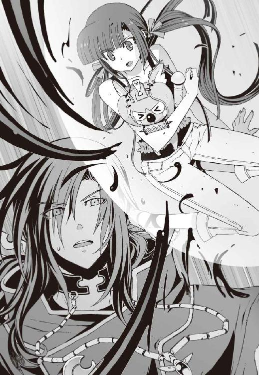
そして彼を睨みつける僕たちの眼前に、一頭の獣が現れた。
衝撃で旅客機の機体が揺れた。金属製の飛行機の胴体に爪を立て、それは火花を散らしながら着地した。
犬科とおぼしき巨大な獣だった。妖狐と呼ぶには少々毛並みが貧相だが、金色の毛皮に覆われた幻獣である。全身に荒ぶる風をまとって現れたその姿は──
『ヴィヴィアン!?』
操緒が獣の名前を呼んだ。
自在に暴風を操る能力を持つ風獣。ヴィヴィアンと名付けられた真日和の使い魔である。
追いかけてきたのだ、と僕は気づいた。
疾風と化して空を駆けるこの使い魔だけは、鳳島の魔精霊に追いつくことができたのだ。
しかし使い魔本来の主人である、真日和秀の姿はない。
彼の代わりに風獣の背中に乗っていたのは、洛高の制服に身を包む二人の少女──
「交渉は決裂よ、加賀篝隆也」
三つ編みオサゲを解いた少女が、スカートの下に吊した拳銃を引き抜いて笑った。
第二生徒会会長、倉澤六夏。
もう一人の少女の手には長大な黒漆の太刀。キン、と鯉口を切る音を鳴り響かせ、
「イグナイターは、貴方には渡さない。洛芦和の三生徒会すべてを敵に回したこと......」
第三生徒会会長、橘高冬琉が冷たく言い放つ。
そして二人の生徒会長は、凄惨な表情を浮かべて同時に告げた。
「──後悔なさい、魔神相克者」
○
朝凪の時間を過ぎて、風が吹き始めていた。
加賀篝隆也は頬にかかる長髪を鬱陶しげに払いのけ、困惑気味に肩をすくめた。
「洛高の生徒会長......か。佐伯家の坊やは旅客機の中で眠らせたつもりだったが、フフ、そういえば公認の生徒会が三つもあるとかいう非常識な学校だったな。洛高は」
物騒な凶器を構えた二人の少女を見つめて、嘲るように苦笑する。いやいや、あんたも十分非常識だから、とつっこんでやりたい気分である。
しかし今の僕たちにそんな余裕があるはずもなく、誰かに呼ばれてハッと我に返るまで、僕も操緒も嵩月も、ただ呆然と立ち尽くしていただけだった。
『......あなたたちはお下がりなさい』
振り返ると、そこには操緒より少しだけ年上の幽霊の少女が浮かんでいた。
六夏に憑いてる射影体の姫笹さんである。悪人面のパートナーとは裏腹に、天使のような雰囲気の綺麗な人だ。彼女は風獣の背中に足を揃えて横座りしたまま、
『ここにいればヴィヴィアンが守ってくれるわ。あとのことは六夏たちに任せてあげて』
僕たちを手招きして優雅に微笑んだ。
息の詰まるような緊張を一瞬忘れて、ほんわりとした気分になった。洛高に入学してからのこの数カ月間で、生徒会関係者にこんな優しくされたのは初めてではないかと思う。
プラグインを抱きしめたままの嵩月と顔を見合わせ、僕たちはようやく安堵の息を吐いた。
そんな僕たちのささやかな幸せを、ぶち壊すようなタイミングで、
「──それで？ 交渉を決裂させてどうするつもりだ、生徒会長？」
加賀篝が酷薄な声を出す。
彼の身体が一回り大きく膨れ上がったように見えたのは、目の錯覚だけではないだろう。加賀篝の周囲の魔力が、急激に密度を増している。
機巧魔神と使い魔。本来なら互いに滅ぼし合うはずの相克するふたつの存在が、加賀篝を中心に共鳴し、無限に魔力を増幅していく。
演操者と契約者の能力を併せ持つとは、つまりそういうことなのだ。
機巧魔神と悪魔。
その両方の力を持つ禁忌の存在。それが魔神相克者・加賀篝隆也だった。彼はこの世界という構造に組みこまれてしまった異端者なのだ。
そして魔神相克者は、まとわりつく羽虫を見るような瞳で二人の生徒会長を眺め、
「悪いが、俺が指定した交渉人はきみたちじゃない。取引の邪魔をするのはやめにしてもらえないか？ そのほうがお互いのためだと思うが？」
「......悪いけど、その言葉はそっくり返させていただくわ」
加賀篝の放つ異様な気配を、まるで感じていないかのように、静かに答えたのは冬琉会長だった。彼女は太刀を提げたまま、ゆっくりと加賀篝に向かって歩き出し、
「あなたこそ、今すぐ人質を解放して立ち去りなさい。それを拒むというのなら、実力で排除させてもらいます」
挑戦的な彼女の言葉に、加賀篝が頬を歪めた。
「フ、排除......ね。きみたちにできるのか？」
「もちろん」無表情に答える冬琉会長。
ハハ、と加賀篝は声を上げて笑い、そして蔑むような瞳で彼女を睨め下ろした。
「いいや。無理だね！」
その言葉が終わる前に、ジャッ、と金属が擦れ合うような音がした。
それは鎖が伸びていく音だった。
機巧魔神《薔薇輝》の腕から、魔力を帯びた銀色の鎖が、凄まじい勢いで吐き出されていく。
鎖はまるで自ら意志を持つように波打ち、四方から冬琉会長を襲った。生身の人間が反応できる速度ではなかった。彼女の細い身体はあっという間に搦め捕られ、彫像のように美しく縛り上げられた。あたかも海神への生け贄に捧げられた古代エチオピアの王女のように。悪魔の力をまとう鎖によって、彼女の時間はつなぎ止められたのだ。
「......まず一人。残りは......」
無感動な声音で加賀篝がつぶやいた。次はおまえだ、とでも言いたげに六夏に視線を向ける。しかし六夏は不敵な笑みを浮かべ、それはどうかしらね、と首を振った。
キン、と金属を断ち切るような音がした。
機巧魔神の鎖が再び揺れた。しかし最初の動きとは違った。断末魔の蛇のように大きく一度だけ跳ねて、そして力を失いだらりと垂れ下がる。
「な......に!?」
異変に気づいた加賀篝が呻いた。
鏡のように滑らかな断面を残し、切り裂かれた鎖の破片がバラバラと旅客機の屋根に落ちた。
機巧魔神《薔薇輝》の腕から伸びる六本の鎖。そのうちの一本が死んでいた。魔力をすべて失って、そこにあるのはただの錆びた鉄の鎖だ。
鎖を断ち斬ったのは、鍛えられた鋼の刃だった。
冬琉会長の手の中にあった日本刀だ。長大な野太刀が黒漆の鞘から抜き放たれ、朝焼けの空の下に、露に濡れたような刀身をさらしていた。《薔薇輝》の鎖を紙のように斬り裂いて、その刀身には刃毀れひとつない。
「冬櫻、抜刀」
冷たい声が響き渡った。冬琉会長の声だった。《薔薇輝》の鎖に縛られていたはずの彼女が、悠然と太刀を下段になびかせている。
長い前髪で隠した彼女の右目。
その額から頬にかけて、淡く輝く模様が浮かび上がっていた。トライバル・デザインのタトゥーのような、複雑なカーブを描いた図柄である。
炎の紋章にも似たその模様は、工業製品に刻み込まれたシリアルナンバーのようにも見える。
ＥＸ−１０６、と。
「......薔薇輝の時間静止を無効化した......？ 魔法無効化能力......だと？」
加賀篝が純粋な驚きの表情でつぶやいた。その驚きは、やがて苦々しげな相へと歪み、
「その紋章......おまえ、元演操者かっ！」
「そう。言ったはずよ、あなたを排除するって──」
無表情に告げながら、冬琉会長はゆっくりと駆け出した。
彼女が向かった先にあるのは、飛行機を縛る《薔薇輝》の鎖だ。
「薔薇輝っ！」
加賀篝の命令を受けて、薔薇色の機巧魔神が残った鎖で攻撃を放つ。だがしかし冬琉会長は、巨大な太刀を身体に巻きつけるようにして旋回し、
「無駄よ、加賀篝隆也。護法結界のない機巧魔神なんて、ただの絡繰り人形なんだから！」
シャキン、と美しい金属音を鳴らして、次々に鎖を断ち斬っていった。
『すご......』と操緒が感嘆の息を洩らす。
まるで狂い咲いた冬桜の花弁のように、ちぎれた鎖の破片が舞い散っていく。
それは《薔薇輝》の戦闘力を奪うだけではない。加賀篝が人質にしていた旅客機を解放することも意味している。それどころか、小柄な身体には不似合いに巨大な彼女の太刀は、
──機巧魔神を斬れる、のだ。
機巧魔神の防護結界は、冬琉会長の太刀を防げない。
魔力の影響を受けない彼女にとって、機巧魔神はただの機械仕掛けの人形でしかないのだ。
「ちっ......やむを得んかっ、イングリッド！」
加賀篝が、余裕をなくした表情で叫んだ。彼の足下にいた軟体獣が、爆発的に質量を増して、無数の鞭の形をとった。
やばい、と僕は戦慄した。
魔神相克者である加賀篝は、機巧魔神だけではなく使い魔も同時に従えている。契約悪魔によって召還された使い魔は、独立した一体の生物でもあるのだ。
たとえ冬琉会長が魔法を無効化できるとしても、生物である使い魔の攻撃までは止められない。生身の人間があんな怪生物の攻撃を受けたら、最悪、死に至る可能性だってある。そして今の加賀篝は、手加減する余裕をなくしているのだ。
「うっ......!?」
嵩月が焦って飛び出そうとする。腕を広げてそれを制止したのは、姫笹さんだった。彼女は嵩月を振り返って優雅に微笑み、ふっと空気に溶けこむように姿を消した。
その直後、
「翠晶！ ショウダウンよっ！」
悪人っぽい高笑いとともに、六夏が叫んだ。彼女の影をこじ開けるようにして、突如現れたのは巨大な腕だった。美しい翠の鎧に包まれた機巧魔神を六夏が喚び寄せ、冬琉会長めがけて放たれた軟体獣の鞭を空中でつかみ取る。
悲鳴のような咆吼を上げて軟体獣が暴れた。
無限に近い魔力を喰らって増殖を続ける軟体獣の質量は、すでに六夏の《翠晶》を呑みこむほどに膨れ上がっている。その不定形の肉体はあらゆる衝撃を吸収し、しかも機巧魔神を圧倒するパワーを持っているのだ。
それを知ってなおも六夏は哄笑を続け、
『闇より刮ぎし氷晶より出でし──』
機巧魔神《翠晶》の内部から、膨大な魔力があふれ出す。機械仕掛けの巨体の中で、無数の歯車や弾機が蠕動し、その右腕が青白い光を放つ。
『其は科学の涙が融かす翳！』
漆黒の軟体獣が悲鳴を上げた。《翠晶》の右腕につかまれた使い魔の一部が、ただの水滴に変わって弾け飛んだ。機巧魔神《翠晶》の能力は物質液化。ありとあらゆる物質を液体へと変化させるという、恐ろしく危険な能力だ。
《翠晶》の光に触れた物質は、分子結合力を失って融解する。それがたとえ魔力で守られた機巧魔神の装甲だろうと、あらゆる衝撃を吸収する使い魔の肉体だろうと、だ。
「退け、イングリッド！」
加賀篝がたまらず使い魔を下がらせた。その姿に僕は衝撃を受けた。
にわかには信じられない光景だった。あの加賀篝隆也が、たった二人の女子高生に圧倒されている。洛高の生徒会長を二人同時に敵に回すというのは、これほどなのか、と思う。魔神相克者と呼ばれる男ですら対抗できないほどに。とてもじゃないが、僕たちが手出しできるような次元の戦いではない。
「──よォ、形勢不利じゃねえの、大将」
じりじりと後退する加賀篝の頭上から声がした。
四翼の妖鳥に乗って戦況を傍観していたのは、銀髪を逆立てた馬鹿っぽい男だ。妙に楽しげな彼を見上げて加賀篝は眉を顰め、
「......鳳島か......おまえとの契約は終わったはずだが？」
「まあ、そうなんだけどよ」
くっくっと喉を鳴らして、鳳島は笑った。
「今回は特別に手ェ貸すぜ、大将。そこの姐ちゃんたちのヤバさは俺もよく知ってる。いくらあんたでも荷が重いだろ。あんたにはまだ、報酬を払ってもらわなきゃならねえからな」
「フ......好きにしろ」
特に興味もないように加賀篝はつぶやき、鳳島はニヤリと歯を剥いて笑った。両手を広げて頭上へと振り上げ、
「おう。そうするぜ！ 来やがれ、魔精霊ども！」
周囲に次々と妖鳥を喚び出していく。
空を埋め尽くす氷の精霊たちを見上げ、冬琉会長と六夏が表情を険しくした。
鳳島の存在が、ここにきて予想外の脅威になっている。
冬琉会長の太刀はもちろん、六夏の機巧魔神も基本的には近接戦闘向きである。遠距離攻撃が可能な鳳島の魔精霊とは相性が悪いのだ。
それを知っている鳳島は、まるで勝ち誇ったように高らかにバカ笑いして、
「悪ィけどあんたたちには恨みがけっこうあるし、年上の女はどうでもいいんでな！ 積もり積もった鬱憤をここで晴らさせてもらう......うおおおおっ!?」
そして笑い顔を硬直させたまま悲鳴を上げた。
彼の周囲を舞っていた魔精霊が爆発したのだ。
鳳島の操作ミスではない。魔力で生み出された妖鳥たちが、なんの前触れもなく唐突に、冷気を撒き散らして粉々に砕け散る。それも一羽や二羽ではなく次々と連鎖して。
少し遅れて銃声が聞こえてくる。
それでようやく僕たちも、誰かが鳳島の妖鳥を狙撃したのだと気づく。
六夏の拳銃の射撃音ではない。もっと大口径で高速連射が可能な重火器の音だ。
たとえば、彼女がたまに振り回してるチェーンガンのような──
「く......黒崎朱浬っ！」
彼女の名前を絶叫したのは鳳島だ。
彼が見つめていたのは、空中を漂う僕たちの更に上空。茜色に染まる空を背景にして、黒いマントを広げた長身の影が舞っている。
否、マントに見えたのは、翼だった。
最新鋭の戦闘機に似た、ステルス形状の六枚の翼だ。
ジェットエンジンの航跡を残して、戦闘機の翼を生やした少女が舞っている。
「うふ」
僕の知らない形の飛行ユニットだ。鳴桜邸の庭に墜落して壊れたやつとは違う。いろいろ尖ったり開いたり変形したりする、見るからに戦闘的なシルエットだ。
そんなものを背負って飛んでくる女子高生なんか、この世に何人も存在するはずがない。
「うふふふ」
朱浬さんだった。
彼女の特徴的なおっとりとした笑い声が、銃声に乗って響き渡る。
「うふふふふふふふふふふ......！」
上空から舞い降りてくるのは、朱浬さんだった。よく見れば彼女が着ている制服の上にも、鎧のようなプロテクターがくっついている。そして彼女が抱えているのは、六連装の巨大な機関砲だ。その機関砲を乱射しながら、朱浬さんが鳳島の頭上に降下してくる。
「く、黒崎......またオマエか、てめえまたしても俺の邪魔を......うあああっ、危ねっ！」
鳳島の周囲の妖鳥が、朱浬さんの機関砲によって次々に撃墜されていく。
砕け散った氷の破片が真夏の空に、季節はずれの雪のように舞った。とはいえ、嬉しそうに機関砲を乱射する少女と、それから逃げまどう悪魔がいては、景色を楽しむ余裕などあるわけもない。冬琉会長も六夏も加賀篝でさえも、その異様な光景に唖然としている。
むしろ落ちついていたのは僕や嵩月のほうだった。べつに自慢できることではないが、洛高の科學部員はこの手の騒ぎには慣れているのだ。
『うわ、なんだか増えてるよ......朱浬さんの羽根とかエンジンとか......』
操緒が冷静に観察してつぶやいた。
言われてみれば、増えているのは翼だけではなかった。飛行ユニットの背面には姿勢制御用のスラスター類がごてごて追加されており、そのせいで、普通の航空機には不可能な変則的な動きができるようになっていた。先日、朱浬さんがテストしていた新型というのは、もしかしてあれのことなのか？
『そのとおり！』
突然叫んだのは、プラグインのついでに嵩月の胸に抱かれていたコアラの縫いぐるみだった。びっくりした。
「ぶ......部長？ いたんですか......」
僕はため息混じりにつぶやいた。そんな身体でいきなり喋り出されると、本当に驚くのでやめて欲しい。しかし部長は、驚く僕たちには構わず、
『増えたのは翼と可変スラスターだけではない。航続距離を犠牲にして最大離陸重量を倍増してある。これによって内蔵兵器の火力は、旧モデルの最大十六倍に増加している！』
自信作なんだよ、と胸を張るコアラを、僕たちはジトッとした目つきで眺めた。
ただでさえ全身武器庫みたいな朱浬さんの火力が最大十六倍って、アンタ自宅に引きこもってなんてものを作ってくれたんだ。道理で朱浬さんが、あんな嬉々としているわけである。あれではもはや、なんとかに刃物というようなレベルではなく──
「あー、畜生。もう怒ったァッ！」
散々狙撃から逃げ回って、ついに鳳島がキレたらしい。彼の全身から限界を超えた魔力が放出され、空を埋め尽くすほどの、おびただしい数の妖鳥の群れが召喚される。
あんなものに襲われたら、いくらなんでもさすがにヤバイのではないかと僕が焦ったとき、朱浬さんの美貌に浮かんでいたのは、これ以上ないくらいの満面の笑みだった。
空中に静止する朱浬さんの飛行ユニットの、背面といわず翼面といわず、ありとあらゆる部分のハッチが開き、その中にずらりと並んでいたのは、数え切れないほどのミサイルだった。
それを見た鳳島の顔色が変わる。そして、
「ちょっと待て黒崎、てめえそんなのアリか......っ!?」
「全砲門一斉開放、発射──っ！」
鳳島に命乞いする時間すら与えず、内蔵されたミサイルすべてを撃ち放つ。
花火のようにばらまかれた無数のミサイルは、一気に妖鳥の群れへと降り注ぎ、群れの中央にいた鳳島を巻きこんで、凄まじい爆発を巻き起こした。
僕たちは、ただ呆然とそれを見上げていた。
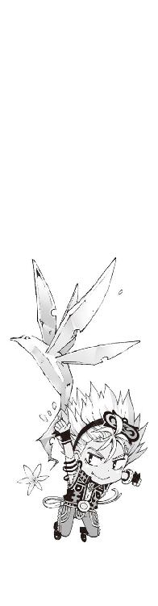
七章
爆発の炎がやがて収まると、空にはうっすらと霧がかかっていた。空中を漂う砕けた氷の破片が、地平線から洩れる光を浴びて淡く虹色に輝いている。
その虹色の霧を突き抜けて、煤けた物体が落ちていく。それはズタボロになった鳳島だった。あちこち焼け焦げて白煙に包まれ、遙かな地上へと命綱なしの自由落下を敢行中。
あのまま地面に激突したら、いくらバカでも死ぬのではないかと不安になったが、
「ちくしょー......覚えてやがれ！」
ドップラー効果の尾を引きながら、鳳島は古典的な捨て台詞を残して去っていく。やはり、あの程度でどうにかなるようなバカではなかったらしい。心配するだけ無駄だった。
旅客機の上に残された敵は、今や加賀篝と彼の下僕たちだけである。
「──これで終わりかしら、加賀篝隆也？」
気を取り直すようにため息をついて、冬琉会長が太刀を構えた。六夏も、西部劇のガンマンよろしく手の中で銃を回し、じりじりと加賀篝に近づいていく。
飛行ユニットの翼を畳みながら、朱浬さんが加賀篝の背後に降着した。完全に彼を包囲した形になる。
加賀篝はなにかを諦めたように長く息を吐いた。どこからか取り出したサングラスを流れるような仕草で装着し、そのまま無言で空を仰ぐ。口惜しいが実にサマになっていた。映画の一場面を見ているようだ。
「俺を、後悔させると言ったね。生徒会長さん？」
そして彼は独り言のようにつぶやいた。
ええ、と冬琉会長がうなずいた。加賀篝が薄く笑みを浮かべる。
「どうやらきみたちの言うとおりになりそうだ。できれば誰も傷つけずに済ませたかったが、仕方ない......交渉は決裂だ」
「どういう意味？」
彼の言葉に危険な気配を感じて、冬琉会長が表情を硬くする。加賀篝は凄惨な笑みを浮かべて彼女を見た。その直後、ガクン、と凄まじい衝撃が僕たちを襲った。
空中を漂う旅客機の機体が、安定を失い、地震のように揺れる。
震動する機体の上に片膝を落として、六夏が喚いた。
「ちょっと......加賀篝隆也！ あんた、なにを......」
「時間静止を解除した」加賀篝の返答は簡潔だった。「ただし、一部だけ」
ハッ、と冬琉会長が視線を巡らせた。彼女が見ていたのは、旅客機の右の翼だった。
巨大な右翼部をつなぎ止めていた機巧魔神《薔薇輝》の鎖。その呪縛が緩んでいた。張力を失ってだらりと垂れた鎖を、《薔薇輝》が自らの腕の中に巻き上げていく。
縛ったものすべての時間を止める銀の鎖。
それが解けたということは、時間の流れが元に戻ったということだ。
そして、翼にかけられていた重力制御の魔法も解けてしまった。
時が流れ始めた翼と、時を縛られたままの旅客機本体。
ふたつの物理法則の落差に、旅客機の機体は耐えられなかった。
耳をつんざくような轟音を響かせて、銀色の翼に亀裂が走る。
「しまった......！ 残っている鎖を破壊して！ 早く！」
冬琉会長が怒鳴った。その言葉に真っ先に反応したのは六夏だった。彼女の機巧魔神が青く輝く魔力塊を撃ち放ち、左翼部を縛っていた鎖を、液状化して破砕する。
一瞬だけ遅れて朱浬さんも動いた。彼女の機関砲が火を噴いて、胴体部分に巻きついた鎖を正確に狙撃する。
冬琉会長が最初に切断した二本を合わせて、残された薔薇輝の鎖はあと一本。
尾翼部に絡みついた最後の一本は、しかし、加賀篝の機巧魔神の死角になって狙撃できない！
「ヴィヴィアンっ！」
六夏が、真日和の使い魔の名前を呼んだ。金色の風獣は、短い咆吼とともに凄まじい速度で数十メートルの距離を駆け抜け、暴風をまとった爪の一撃で最後の鎖を破壊する。
すべての鎖を巻き上げて、加賀篝の機巧魔神が彼の影の中へと沈んでいった。
旅客機内部の時の流れが、完全に正常へと復帰した。
静止していた機体が一瞬で時速数百キロの速度を取り戻し、それまでの安定が嘘のように、風圧を受けて揺れ動いた。
僕たちを守ってくれていた風獣は今はいない。猛烈な風を浴びて息もできない。僕と嵩月は旅客機の屋根に伏せ、吹き飛ばされないようにしがみつくだけで精一杯だ。
そう。僕たちを守っていた風獣はいない。
それが加賀篝隆也の真の狙いだった。
「うっ......！」
僕たちの背後で異様な魔力が膨れ上がった。それに気づいた嵩月が、黒髪を風に乱しながら屋根の上を転がった。
彼女が直前まで伏せていた場所を、鞭のように伸びてきた黒い触手が薙ぎ払う。
加賀篝の使い魔の軟体獣だ。冬琉会長たちが彼の機巧魔神に気を取られている間に、旅客機の裏側から、僕たちの背後に回りこんでいたのだ。
イングリッドと呼ばれる使い魔の狙いは、嵩月が持っていたプラグインだった。
しかし嵩月は、ギリギリで使い魔の攻撃から逃れている。彼女の周囲を灼熱の炎が包みこみ、さすがの軟体獣も彼女には手が出せない。
そして、プラグインを手に入れるのが不可能と判断した軟体獣は、目標を変更した。
彼女の新たな目標は、僕だった。
膨れ上がった軟体獣が、猛烈な勢いで僕へと押し寄せる。
「夏目くんっ！」
『智春！』
嵩月と操緒が同時に叫んだ。だが、僕は悲鳴を上げることすらできなかった。無数の触手が全身に巻きついて、僕は軟体獣の体内へと取りこまれていく。
咄嗟に《鐵》を喚び出そうとしたが声が出せない。身体も動かない。そもそも全身を軟体獣に呑みこまれて、今の僕には影が存在しない。機巧魔神が喚び出せない！
「人質は、一人いればよかった......最後の交渉だ。イグナイターを渡してもらおう」
吹き荒れる暴風の中で悠然と立ったまま、加賀篝隆也は嵩月に告げた。
だが、嵩月はその言葉を聞いていなかった。
息が詰まるような一瞬の沈黙。
次の瞬間、眩い閃光が旅客機の機上を包みこんだ。
「なにっ......!?」
加賀篝が表情を引きつらせた。
彼の視界に映ったのは炎だった。
旅客機全体を包みこむほどの巨大な炎が、嵩月を中心にして渦巻いていた。その炎はやがて竜巻のように収束して、軟体獣の全身を覆い尽くした。増殖を繰り返して膨れ上がる軟体獣の細胞が、炭化してボロボロと崩れていく。凄まじい炎の圧力だ。
「や、やめて......」
顔色を蒼白にして朱浬さんが叫んだ。立ち尽くす彼女の足下に、ゴトン、と音を立てて機関砲が落ちた。彼女の美しい唇が色をなくして、
「......やめなさい、奏っちゃん......！ 奏っ！」
加賀篝もまた息を呑んでそれを見つめていた。
嵩月の炎が更に勢いを増す。ううう......と低く唸り続ける彼女の右腕に、炎の刀が出現する。いや、それはもはや刀とすら呼べない。ただひたすらに巨大で濃密な炎の刃だ。その刃渡りは、数十メートルに達して、恒星の紅炎のように荒れ狂っている。
「正気か、嵩月奏！ 契約者のいない雌型の悪魔がこんな膨大な魔力を放出したら......！」
表情を歪めて加賀篝がうめく。
彼が見つめる前で、嵩月が炎の刃を掲げた。加賀篝の使い魔へと容赦なく振り下ろす。
黒い軟体獣の中心部が、海を割るように引き裂かれた。
地獄の業火に細胞を焼かれて、軟体獣が悲痛な絶叫を上げる。再生しようとするその肉体をかき分けて、嵩月が僕へと近づいてくる。その壮絶な光景に、誰もが呆然と立ち尽くし──
その一瞬の隙を衝いて、冬琉会長が疾走した。
「加賀篝隆也っ！」
嵩月に気を取られていた加賀篝の反応が遅れた。決定的な隙だった。
冬琉会長の太刀が下段から翻り、無防備だった加賀篝の胴を斬り上げる。
峰打ち。だが、肋骨数本をまとめて砕かれ、加賀篝の表情が苦痛に歪んだ。
力を失った彼の長身が暴風にさらわれ、そのまま為すすべもなく地上へと落下する。
炎に蹂躙されて苦悶していた加賀篝の使い魔が、最後の力を振り絞って彼を追った。いかなる状態でも主人である契約者を守るのが、使い魔の本能なのだ。
不定形の肉体を翼龍のような姿に変え、軟体獣は加賀篝を空中でつかみ、そのまま滑空して飛び去っていく。彼らを追いかけようとする者はいなかった。
ようやく軟体獣から解放された僕は、その場に膝を落として激しく咳きこんだ。
その僕の前に静かに歩み寄ってきたのは、嵩月だった。
まとっていた炎をなくした彼女は、信じられないほど華奢で儚く見えた。
彼女は僕の無事を確認して、満足したように優しく微笑み、
「夏目くん......よかった............私......」
そして糸の切れた人形のように、ふわり、とその場にくずおれた。
「た、嵩月!?」
倒れこむ嵩月の身体を受け止めて、僕はゾッと恐怖を覚えた。血の気をなくした彼女の全身は異様に冷たく、そして羽根のように軽かった。
しかし彼女の無事を確かめている余裕はなかった。
メキメキと嫌な音を立てて、旅客機が不気味に震動した。加賀篝の攻撃で傷ついた機体が、風圧に耐えきれずに崩壊を始めているのだ。
破壊された翼面から、歪んだ金属板が次々に脱落した。洩れだした航空燃料が、旅客機の後方へと滴っていく。異常を感知したセンサーが燃料供給を自動的にカット。右側のエンジンがゆっくりと停止した。推力を失った機体がぐらりとゆっくり傾いていく。
眼下を流れていく地上の景色がやけに鮮明で大きく見えた。飛行高度が下がっている。
『智春......もしかして......また、かも』
気絶した嵩月の背中に手を当てたまま、操緒が困ったようにつぶやいた。
またかよ、と思って僕は舌打ちする。
旅客機は墜落を始めていた。
○
「夏目智春。こっちよ、急いで！」
僕たちを呼んだのは六夏だった。
彼女の翠色の機巧魔神が旅客機の屋根に触れ、機体表面を不完全な状態で液化する。水面のように揺れるその屋根に、最初に冬琉会長が飛び乗った。
表面にうっすらと波紋を残して、冬琉会長の身体が沈みこむ。ジェル状になった屋根をすり抜けて、そのまま機内へと侵入したのだ。
気絶した嵩月と彼女が持っていたプラグインと、そしてついでに部長の不細工コアラを抱え上げ、僕は六夏の許へと向かった。
ジェル化した旅客機の屋根は、底なし沼に近い雰囲気を漂わせていて、飛びこむのに勇気が必要だった。しかし、ためらっている余裕もなかった。
嵩月を抱えたまま僕は一気に足を踏み入れた。ぬるり、と全身に金属がまとわりつくような異様な感覚を残して、そのまま床へと落下。気づくと、僕たちは飛行機の中に乗りこんでいた。
客室乗務員の控室みたいな場所だった。ふと周囲を見回すと、エプロンを着けた客室乗務員の方々が意識を失って倒れていた。当て身を喰らって気絶しているのだ。どうやら冬琉会長の仕業らしかった。たしかにここで騒がれても困るので、賢明な判断なのかもしれないが、なにもぶん殴って気絶させなくてもいいのではないかと思う。
「ほかの乗客は......？」
頭上の操緒を見上げて、僕は小声で訊いた。操緒は壁をすり抜けて客室をのぞき、
『寝てるみたい。まだ騒いでる雰囲気じゃないから、みんな気づいてないんだと思う』
「......寝てる？」
この非常事態に熟睡って。みんなどんだけ神経が図太いんだ、と僕は少し羨ましく思ったが、仕方ないでしょ、と操緒は肩をすくめた。
『修学旅行の帰りの飛行機なんだよ。それは疲れてみんな寝るでしょ。時差だってあるんだし』
「そうか。そういや、この飛行機の中って時間が止まってたんだよな......」
考えてみれば、加賀篝に囚われてからの約半日間は、彼らにとっては一秒にも満たない一瞬の出来事だったのだ。その瞬きするほどの短い間に、彼らの頭上では機巧魔神が暴れ、ミサイルが飛び交っていたのだった。
「トモハル、無事ね？」
僕たちのあとに控室に降りてきたのは、飛行ユニットを背負ったままの朱浬さんだった。最後に六夏が着地して、ジェル化させていた屋根を元の金属に戻す。
「ええ......僕は。でも、嵩月が......」
反応しない嵩月を抱えたまま、僕は情けない顔で朱浬さんを見上げた。
嵩月はぴくりとも動かない。
彼女の身体は相変わらず氷のように冷たい。呼吸はしっかりしているが、それだけだ。意識が戻る気配はない。おそらく限界以上に魔力を放出したのが原因なのだろうが、こういう場合、どう対処すればいいのか、僕には想像もつかなかった。目を離すと、彼女がそのまま消えてしまいそうに思えてひどく不安だ。
「......わかってる。でも今は彼女よりも先に、この飛行機をどうにかしないと」
そう言って朱浬さんはそっと屈みこみ、嵩月の青白い頬を優しく撫でた。そして目を伏せて祈るようにつぶやく。
「平気よ......奏っちゃんは絶対に無事だから。心配いらない」
その間に六夏は操縦室へと向かっていた。
操縦室は控室のすぐ隣にあった。入口の扉は開いていた。ドアロックの部分に、冬琉会長がぶった斬った痕跡が残っている。僕も嵩月を抱えたまま、六夏のあとを追って操縦室へと向かった。とにかく状況が知りたかったのだ。
操縦室の後方には休憩用のベッドがあって、そこには、失神した機長だか副操縦士だかの人たちが無造作に突っこまれていた。その隣には腕を組んだ冬琉会長が立っている。
「あの......この人たちも、まさか冬琉会長が......？」
僕は思わず質問した。いきなり扉を破って操縦席に押し入って、パイロットたちを昏倒させたのか。ならず者かあんたは。
「そんなわけないでしょう」と、少し怒ったように冬琉会長は言った。「最初から気絶してたのよ。ベッドに放りこんだのはあたしだけど。邪魔だから」
「気絶......って？」
「たぶん加賀篝たちが時間を止める前に、彼らの姿を目撃したんでしょ」
「あ、ああ......」
魔精霊なんて化け物に乗ったわけのわからない男たちが、高度数千メートルの上空を飛んでいるのを目撃してしまったのだ。しかもそいつらが飛行機に着地する気配を感じたりしたら、それは意識を失いたくもなるだろう。
『......気絶したままにしておいたほうが、彼らにとっては幸せかもしれない』
操縦席に座って、ぼそりとつぶやいたのはコアラの縫いぐるみだった。部長の機巧偶人である。なんであんたがそんなところにいるんだ、と突っこみたいのは山々だったが、
『ＥＩＣＡＳはこれか......燃料、油圧......ふむ。ＮＤ周りは全滅、と。現在高度と速度は......』
コクピットの計器をあれこれ弄りながら、コアラが真面目な声でつぶやいた。もしかしたらこのコアラ、飛行機の操縦ができるのかもしれない。そういえば部長は自分のことを機巧師と呼んでいたし、飛行機だっていちおう機械には違いない。
「どうです、部長？」
コアラに向かって訊き返す朱浬さん。緊迫感のかけらも感じられない微笑ましい光景だが、実際の状況はかなり追いつめられているらしい。コクピットの計器には、なにやらものすごい数の警告が点滅しているし、耳障りな音が鳴り響いている。
『うん......さっき脱落したのは右側のスポイラーだ。前縁フラップの調子もおかしい。ストリンガーにも歪みが出ているみたいだ。ジャイロは生きてるけど航法関係は全滅。エンジンは片肺で高度がとれない。速度は失速寸前』
「......もっとわかりやすく説明して！」
苛立ったような表情で、冬琉会長が朱浬さんたちの会話に割りこんだ。コアラは、うん、と少し考えるような沈黙を挟み、
『一言でいうと、墜落中。飛んでいられるのが不思議なくらい』
「な!?」身も蓋もないコアラの説明に、冬琉会長が絶句する。「......なんとかならないの？」
『うん。無理』
「ふ、不時着は......？」
『着陸系統には問題ないから、ランディングはできるよ......滑走路があればね』
「か、滑走路？」
冬琉会長が唖然として、操縦席前方の窓を見る。
そこに広がっているのは、見渡す限りの険しい山々。ここは北関東の山脈地帯なのだ。滑走路どころか、真っ直ぐな道路を探すことすら難しい。
冬琉会長が黙りこんでしまったため、操縦室内には息苦しい沈黙が残された。
「......状況は？」
その沈黙を破って、操縦室に入ってきたのは少し懐かしい顔だった。
右腕を包帯で吊った暑苦しい美形の男子生徒。佐伯兄だ。少し日焼けした顔に、時季外れの白コート。なにもかもすべて懐かしい。ずいぶん久しぶりに彼の顔を見た気がしたが、再会を喜んでいられる状況ではなかった。
時間静止から目覚めたばかりの佐伯兄は、僕と僕に抱えられた嵩月に気づいて、おおよその事情を察したらしかった。彼にしてはめずらしい、満足そうな微笑を浮かべ、
「加賀篝からプラグインを守ってくれたのか......礼を言う」
「あ......いえ。僕は......なにも」
自分で口にした言葉に、僕は少し落ちこんだ。
そう。僕はなにもできなかったのだ。戦ったのは生徒会長たちと朱浬さんで、プラグインを守ったのは嵩月だった。
その代償として嵩月は倒れ、修学旅行生を乗せた飛行機は墜落しつつある。
そして僕は、それを見ていることしかできない。
「......一般生徒たちの様子はどう？」
いつになく深刻な口調で、佐伯兄に訊いたのは朱浬さんだった。この飛行機に乗っているのは彼女の同級生たちなのである。さすがの朱浬さんも、心配な様子を隠し切れていない。
佐伯兄はうなずいて、
「今はまだ大人しくしているが、皆そろそろ異変に気づき始めている。パニックを起こす前に、なんらかの説明は必要だろうな」
「......パニックになるほどの時間があればいいけどね」
皮肉げな口調で六夏が独りごちる。そうね、と冬琉会長も嘆息した。いくら強気で非常識な生徒会長たちといえども、一介の高校生には荷が重すぎる状況なのだ。
「沙原ひかりの空間跳躍で、乗客を避難させることは可能？」
冬琉会長の質問に、六夏は苦笑して肩をすくめた。
「ひかりが両手で抱えられる範囲の人数で、距離が百メートル以内ならなんとかなるかもね。もっとも、あの子に跳ぶだけの魔力がまだ残っていればの話だけど」
「そうか。彼女は......」
落胆するように唇を噛む冬琉会長。
昨晩、加賀篝から朱浬さんを逃がすために、ひかり先輩はすでに大量の魔力を使っている。時間を止められていた彼女にとって、それはほんの一瞬前の出来事なのだ。
「真日和の使い魔は？」
続けて質問したのは朱浬さんだった。
「ヴィヴィアン？」六夏は少し考えるように頭上を見上げ、「鳳島を追いかけたときに、あの子にも相当無理させてるから......そろそろへたばるころだと思うけど。そもそも契約者が近くにいないのに、難しい命令を聞かせるのは無理よ？」
「二人ほど背中に乗せて地上に運ばせるのは？」と朱浬さん。
「それはできると思うけど......そうか、二人......」
六夏は、なにかに気づいたように朱浬さんを見てうなずき返した。
「ね、そこのコアラ。墜落までの残り時間はあとどれくらい？」
『......もって一分三十秒。急げば遺書を書くぐらいの時間はある』
「ふん。地上まで往復する時間はなさそうね」
他人事のようにやれやれと首を振り、六夏は冬琉会長に目配せした。冬琉会長は無表情にうなずき、そしてなぜか悪戯っぽい笑顔を僕に向けた。
「決まりね、夏目智春。そういうことよ。あなたは嵩月さんを連れて脱出しなさい」
僕は、ぽかんと顎を落とした情けない表情でその言葉を聞いた。
「......は？」
逃げろ、と言われたのか。僕は。
逃げだせというのなら、それはもう今すぐにでも逃げ出したい気分満々だ。だが、その場合、ほかの生徒たちはどうなるのだ？ 旅客機本来の乗客である修学旅行生と、そして彼らを助けに来たはずの二人の生徒会長は？
「なに情けない顔してるのよ？ ほら、さっさと行きなさい」
固まっている僕を見て、呆れたように六夏が言った。
「いや、でも......なんで僕たちだけ......」
「は？ あんたは修学旅行生じゃねーでしょうが。みんなと一緒に落っこちてどうすんのよ？」
「そ、そんなこと言ったら六夏......会長だって......」
「ばーか。会長ってのは、こういうときに責任取るためにいるのよ。あたしらが真っ先に逃げ出したらカッコつかないでしょ。いい笑い者だわ。あんたは生徒会長でもなんでもないただの交渉係なんだから、もたもたしてないでさっさと逃げなさい」
「......な......」
なんだよそれは、と僕は思った。あんたがそういうことを言うなよ。ここにいるほかの誰よりも俗っぽいことに執着してそうなあんたが、こんなときだけ、なんでそんなこと言うんだ。責任なんて気にする人じゃないはずだろ。いつもみたいに、旅行傷害保険かけとけば大儲けだったのにウキーとかなんかとか言ってくれ。でないと、それじゃまるで。
それじゃまるで──本当に、生徒会長みたいじゃないか。
「......あのね、心配してくれるのはありがたいけど。余計なお世話よ、夏目智春。あたしたちもべつに死ぬつもりで残ってるわけじゃないんだから。まだ打つ手はいくらでも残ってるのよ。企業秘密だから、きみには教えてあげないけどね」
なにも言い返せないでいる僕に、六夏は不敵な笑顔を浮かべて宣言した。
それは嘘だと僕は思った。
彼女にはもうなにもできない。六夏の機巧魔神の能力では、落ちていく飛行機は救えない。たとえ激突寸前に地面を液体に変えたとしても、時速数百キロで突っこんだら、それはコンクリートと変わらないはずだ。彼女にはなにもできないのだ。
だが。
僕には、まだ。
『......智春』
名前を呼ばれて顔を上げると、僕のすぐ前にいた操緒と目が合った。
彼女の表情を見て、一瞬で理解する。たぶん操緒も僕と同じことを考えていた。加賀篝との戦闘で役立たずだったときとは違う。僕たちには、まだできることが残っている。
だが──本当に、そんなことができるのか？
そんな僕の迷いに気づいたように操緒が笑った。
少し得意げに胸を張って、いつもの根拠のない自信に満ちた表情で、きっぱりと告げる。
『だいじょうぶ、操緒がついてるよ』
僕はつられて苦笑した。
メキ、と金属がねじ切れる嫌な音を響かせて、僕たちを乗せた旅客機が軋んだ。
フラップが脱落した、と部長コアラが叫んでいた。揚力のバランスを失った旅客機が大きく傾き、客室から悲鳴が聞こえてくる。迷っている時間はもうなかった。
なにしてるの、と六夏が怒鳴る。それを無視して、僕は操縦室の後ろの空間に向かった。
ここならばたぶん高さが足りるはず。
抱きかかえたままの嵩月を見下ろして、彼女が眠っていてよかった、と思った。また彼女を泣かせたくはなかったから。
傾きを増した旅客機の機体が、右側の山肌目がけて失速気味に落ちていく。
僕は大きく息を吸った。自分の足下に伸びる影を見つめて、叫ぶ。
「来い、鐵！」
○
非常灯に照らされた僕の影が色を変えた。
闇よりもさらに暗い、虚無の色へと。
その影の形がいびつに歪んだ。闇色の輪郭を無理やりこじ開けるようにして、なにか巨大なものが浮かび上がる。それは人形の腕だった。漆黒の鎧をまとった機械の腕だ。
どこに続くともしれぬ虚無の空間から出現したのは、機械仕掛けの巨大な悪魔。
漆黒の機巧魔神。
「鐵!?」
冬琉会長がその名前をつぶやいた。
「夏目智春、なにを......!?」
愕然と表情を歪めていたのは六夏だ。
彼女たちの言葉を、僕はほとんど聞いていなかった。そんな余裕はまったくなかった。自分の機巧魔神が放つ圧倒的な魔力を、制御するだけで手一杯だ。
これまでのように闇雲に力を吐き出すだけでは駄目なのだ。解き放つ魔力が大きすぎたら、この旅客機の機体を破壊してしまう。だからといって、力が足りなければ意味がない。
荒れ狂う悪魔の破壊的な腕で、脆い壊れ物を扱うような。
僕がやろうとしているのは、そんなギリギリの行為なのだ。
『闇より暗き深淵より出でし──』
本来ならあり得ない方向からの荷重に、旅客機の機体が悲鳴を上げる。壊れる寸前のその手応えを感じながら、僕は暴れ出そうとする機械の悪魔を必死で制御する。
イメージしたのは六夏だった。彼女が見せてくれた旅客機の外板の半液状化。
あれと同じことをやればいいのだ。
力任せに一瞬で破壊するのではなく、旅客機の機体に魔力をかけ続ける。
《鐵》の持つ能力を。
重力制御を。
『──其は科学の光が落とす影！』
機巧魔神の内部に組みこまれた無数の歯車が旋回し、それは膨大な魔力と、漆黒の闇を撒き散らした。鐵の腕から生み出された闇色の魔法陣が拡散し、全長七十メートル超の旅客機全体を包みこむ。
それまで感じていた浮遊感が途切れ、かすかな重力が全身にかかってきた。旅客機の降下が止まったのだ。
「重力制御......！ 旅客機一機丸ごと持ち上げる気なのっ!?」
六夏が叫んだ。彼女は愕然とした表情で、旅客機を包みこんだ巨大な魔法陣を見つめていた。
「だめよ、夏目智春！ そんなことをして鐵の......機巧魔神の魔力がもつわけがない！」
悲鳴じみた声で叫んだのは冬琉会長だ。
彼女に言われなくてもわかっていた。《鐵》から、ものすごい勢いで魔力が流れ出しているのが感じられる。機巧魔神の力をもってしても、重力に逆らって浮かせるには、三百トンというこの旅客機は重すぎるのだ。だがそれでもやらなければ、ほかに全員が助かる方法はない。
逆流した魔力のせいで、神経が焼き切れるような感覚が襲ってくる。
急激に消耗した全身が鉛のように重い。
やはり僕の力では無理なのか、と絶望の翳が脳裏をよぎる。その僕を叱咤するように、
「──そのまま続けろ、夏目智春！」
力強い声で誰かが叫んだ。第一生徒会長。佐伯玲士郎。
彼は、反論しようとした冬琉会長を手で制し、
「無理に機体を持ち上げる必要はない。機体が失速しないように、不足したぶんの揚力を補うだけでいい。できるか？」
「そ......それだけなら、なんとか」
僕は弱々しい表情でうなずく。三百トンを浮かせるのではなく、機体のバランスを保つだけ。それだけなら、《鐵》にかかる負担もずっと少なくて済む。だが、
「でも、それだと結局、このまま落ちるだけなんじゃ......」
この付近には不時着できそうな場所もなく、対地高度はすでに数百メートルしかないのだ。このまま降下を続けていけば、遠からず地面に激突するのは間違いない。
しかし佐伯兄は、優雅に笑って首を振った。
「心配いらない。あとは僕がやる。夏目智春............よくやったな」
「え？」
佐伯兄が最後に浮かべた表情の意味がわからず、僕は困惑した。だが、それを訊き返している余裕はなかった。多少負担が減ったとしても、稼働中の機巧魔神を長時間維持するのは恐ろしく困難なことなのだ。力の放出が長引けば長引くほど、暴走の危険は加速度的に増していく。
「科學部長。この旅客機を不時着させるのに、最低必要な滑走路の長さは？」
操縦席に座る部長コアラに、佐伯兄が訊いた。
短い腕で操縦桿を握ったまま、コアラは少し考えて、
「二千百......いや、千六百あればなんとかしてみる。逆噴射の推力が足りないぶんを、鐵に補ってもらうという条件つきで」
「わかりました」佐伯兄はうなずいて、自分の肩越しに振り返って訊いた。「どうだ、哀音？」
白いドレスを着た幽霊の少女が、ふわりと佐伯兄の背後に現れた。そして彼女は抑揚のない機械のような口調で告げた。
『......この機体が二分五十七秒後に到達する地点に、湖に流れこむ渓流があります......』
「わかった、そこにしよう。黒崎朱浬、僕を連れてそこまで飛べるか？」
「それは......できるけど」
朱浬さんは、ちらりと自分が背負っている飛行ユニットを見てうなずいた。そして困惑したように目を細め、
「だけど、なにをするつもりなの、玲士郎？」
「滑走路を造る」佐伯兄は短く答えた。
「本気で言っているの？」
「この機体や夏目智春も限界だろう。これが最後のチャンスだ」
「......そういう意味で言ってるのではないわ。わかっているの？ そんなことをしたら......」
朱浬さんの問いかけに佐伯兄は答えず、ただ黙って彼女を見つめ返した。
彼の背後に浮かぶ幽霊の少女が、僕たち全員に優雅に礼をする。
それを見て朱浬さんは薄くため息をつき、
「わかったわ......六夏会長」
「はいはい、行ってらっしゃい......バイ、哀音」
六夏が操縦室の壁に掌を当てる。彼女の影の中から一瞬だけ、機巧魔神の腕が出現し、再び旅客機の外板をジェル化させた。
「先に行って。空中で捕まえるわ」
「了解した」
朱浬さんに促され、佐伯兄が旅客機の外へと飛び出した。僕には絶対に真似できない芸当だ。朱浬さんも彼を追って外に出る。
最後に残ったのは白いドレスの射影体の少女だ。
ゆらゆらと宙に浮かんだまま、彼女は無表情に僕を振り返り、
『夏目くん』
彼女が僕の名前を呼ぶのを、僕はそのとき初めて聞いた。
『来てくれて、ありがとう......玲子ちゃんや母様に優しくしてくれて......わたしの願いも聞いてくれた。あなたたちに会えて、嬉しかった』
体温を感じさせない澄んだ声でそう言った。
その言葉に僕はほんの小さな違和感を覚えた。だが、その正体に気づく前に、彼女はとても不思議な表情を浮かべて僕を見た。
それは暖炉の上に置かれていた、写真の中と同じ表情だった。
操緒によく似た、悪戯っぽい笑顔。
『またいつか......一緒に......』
美味しいお茶を飲みましょう。そう言って哀音は姿を消した。
そのとき僕は音楽を聴いた気がした。モーツァルトだった。第十三番のセレナード。
アイネ・クライネ・ナハトムジーク──
第三楽章の軽やかなメヌエットが、なぜか妙に哀しく響く。
それは僕の幻聴ではなかった。
僕たちを乗せて降下していく旅客機の前方に、淡い緑色に輝く機巧魔神の姿が見えた。
佐伯兄の《翡翠》だった。地平線から漏れ射す朝陽が、美しい翡翠色の鎧を照らしている。
その翡翠色の機巧魔神が、哀しく澄んだ音色を奏でていた。
それは魔力が生み出す音だった。
共鳴するものすべてを凍らせる、機巧魔神《翡翠》の〝凍てつく波動〟。
間近で聞くと破壊的とすら感じられたあの音は、本当は哀切な旋律を奏でていたのだった。
魔力を帯びたその音色が、両側を斜面に挟まれた渓谷を凍りつかせていく。
前触れもなく出現した巨大な氷が、旅客機の進行方向を白く覆い尽くす。
渓谷の底の谷川と、それが流れこむ湖の水を使って、《翡翠》は氷河を創り出そうとしているのだ。人工物のように滑らかで水平な、全長千六百メートルの巨大な氷の滑走路を。
そんなことを実現するのに、どれだけ大量の魔力が必要なのか想像もつかない。
しかし、あの人工の氷河の上なら大型旅客機が降りられる。
一般的に氷が滑ると思われているのは、摩擦熱によって表面に薄い水の膜が生まれるからだ。氷が滑るのではない。濡れた水のせいで滑っているのだ。
だが、魔力によって生み出された、機巧魔神《翡翠》の氷は融けない。強度的にはコンクリートよりも上だ。あの氷河の上ならば、この機体が降りられるのだ。
『着陸態勢に入る』
コアラの縫いぐるみの口を借りて、部長が言った。引きこまれていた着陸脚が降りて、機体が揺れた。破損した不自由な操縦系を器用に操作して、部長が着陸姿勢を作る。警告灯があれだけ点灯しっぱなしなのに、たいしたものだと少し感心する。
やるじゃん、とつぶやいた六夏の言葉は、佐伯兄のためか、それとも部長に向けられていたのか。
「倉澤、あたしたちは乗客に説明と不時着に備えての指示を。一般生徒が不安がってるわ」
冬琉会長が太刀を握って客室に向かう。説明だけなら、太刀は要らないのではないかと思う。飛行機の中で日本刀を握り締めている人を見かけたら、余計に不安になるだけではないのか。
「うえー......またタダ働き......ま、仕方ないかー」
疲れたような声を出して、六夏も客室へと向かった。
操縦室に残ったのは、結局、僕と部長コアラだけである。
美しい純白の滑走路が、操縦席の窓の外に大きく広がっている。着地するまでの数十秒が異様に長く感じられる。《鐵》が撒き散らす魔力の残滓が充満して、操縦室の中が息苦しい。
途切れそうになる意識を必死でたぐり寄せる。
あと少し。あとほんの少しで無事に地上に辿り着けるのだ。
しかし黙っていると気が遠くなる。なにか喋らなければと僕は焦り、
「そういえば......部長が飛行機の操縦ができるなんて知りませんでした。そんなの、どこで練習したんです？」
さっきから感じていた疑問をぶつけてみる。しかし部長の返事は短かった。
『初めてだよ。操縦室に入ったのも』
「......え？」
『いや、心配はいらない。自宅に引きこもってたころにパソコンのフライトシミュレーターは死ぬほどやったから。うん。五百時間はやった』
「............」
ゲームじゃねえかよ、と絶叫したい気分を抑えて、僕は沈黙した。
あと少し。あとほんの少しで無事に地上に辿り着けるのだ。が、
だめかもしれない、と僕は思った。
旅客機はゆっくりと滑走路に舞い降りていく。
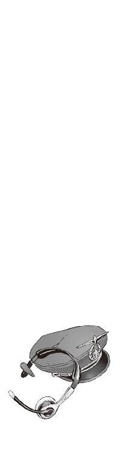
∴ エピローグ
真夏の空を雪が舞っていた。
砕け散った微細な氷の結晶が、風に乗って舞っている。
機巧魔神《翡翠》の魔力が解放されたせいだろう。着陸したＮＥＡ〇九三三便の後方。滑走路代わりに使われた氷河が、花弁のように舞い散って、世界を純白に染めていた。
自分の機巧魔神を影の中に戻して、僕は操縦室の床に膝をついた。
凄まじい疲労が全身を襲っていた。これほど長時間、機巧魔神を操ったのも、こんな大量の魔力を放出したのも初めてのことだ。しかしこれはいい疲れだ。ボロボロに疲れているけど、気持ちいい。
操縦室の天井に残された《鐵》の痕跡を見上げて、僕は強く拳を握った。
今度こそ僕は無力ではなかったはずだ。僕たちの漆黒の機巧魔神が、この巨大な旅客機と、その乗客の命を支えていたのだから。そう。僕と操緒が。
「やったな、操緒」
僕は柄にもなく親指を立て、操緒の前に突き出して見せた。神経が昂ぶってテンションが上がってたのだと思う。無性に誰かとはしゃぎたい気分だった。
しかし僕のすぐ隣に浮かんでいた操緒は、そんな僕を見て静かに微笑んだだけだった。
色素の薄い幽霊の少女は、冷たい水面のような瞳で僕を映して、感情の起伏のほとんどない声で言った。
『少し、疲れちゃった......ごめんね、智春。ちょっと眠る』
なにもない空間に溶けこむように、淡い波紋だけを残して操緒は消えた。
彼女の態度に、僕は少し困惑した。操緒の気まぐれは今に始まったことではないが、こんなときに僕を残して一人でいなくなるのはめずらしい。それに彼女のあの表情。まるで誰かべつの女子のようだった。無表情で穏やかで、まるで、哀音のような。
まあいいか、と僕は思う。
操緒が眠りたくなる気持ちもよくわかる。できることなら僕もこのまま横になって眠りたい気分だ。今ここにふかふかのベッドと枕があったら、ほかにはなにもいらないくらいだ。だがしかし、
『夏目くん。今、無線で救助隊の出動を要請した。騒ぎになる前に僕たちはここを離れたほうがいい。下手するとハイジャック犯に間違われる恐れがある』
部長コアラに呼ばれて、僕はがっくりと肩を落とした。
ふと気づくと、仮眠用ベッドに突っこんであった機長たちが、うう、と呻いて目を覚まそうとしていた。なんてこった。あんなしんどい思いをして、ゆっくり休むこともできないのか。
「あの......でも、彼女は......」
腕の中で眠っている嵩月を見下ろして、僕は訊いた。
少しだけ頬に赤みが戻ってきているような気もするが、嵩月は相変わらず無反応で、身体も冷え切ったままである。できればどこかで安静にしておいたほうがいいと思うのだが。
『心配ない。雪原瑤に頼んで、学生連盟から迎えを寄越してもらってる』
「あ......それなら。はい、わかりました」
僕は少し安心してうなずいた。使い魔を持った契約者なら、救助隊よりも早く到着するはずだ。それに、そいつの契約悪魔に嵩月の容態を診てもらえるかもしれない。とにかくここは出たほうがよさそうだ。
「こっちよ、夏目智春」
嵩月とコアラを抱えた僕を、冬琉会長が手招きして呼んだ。がら空きのファーストクラスの客席横。非常脱出用シュートが膨らんでいた。
目隠し用のカーテン越しに、エコノミー席で喚いている修学旅行生たちのバカ騒ぎが聞こえた。目を覚ますといきなり飛行機が墜落していて、山の中に不時着して、しかも周囲がこの氷雪地帯では、彼らが驚くのも無理はない。もともと非常識な事態には慣れてる連中だから、あまり心配は要らないとは思うけど。
着陸した飛行機の機体は実はけっこうな高さで、滑り台みたいな脱出用のシュートから飛び降りるとき、僕は正直死ぬほどビビった。上空一千メートルでの戦闘に巻きこまれておいて今さらという感じだが、恐いものは恐いのだから仕方がない。もう二度と飛行機には乗るまいと固く誓う。操緒がいつか言ってたように、本当に呪われてるのかもしれない。
美しい氷の破片が舞う氷河の上を、僕たちはゆっくりと歩いていった。
遠くに佐伯兄の姿が見えた。
彼の背後には機巧魔神が立っていた。佐伯兄の身長の倍以上もある、翡翠の鎧を着た巨大な機械人形。だがその姿は、どこかいつもと違って見えた。
あの禍々しい威圧感が消えている。
離れていても伝わってくる、あの強大な魔力を感じない。
あそこにあるのは、機械仕掛けの悪魔なんかではない。あれは、ただの人形だ。
「佐伯......会長？」
背中を向けて立ち尽くす彼に、僕は駆け寄ろうとした。その僕を、朱浬さんが制止した。
「待って、トモハル」
少し離れた場所で飛行ユニットを脱ぎ捨てた朱浬さんは、いつもの洛校の制服姿で、佐伯兄のことを見つめていた。冷たいくらいに整った彼女の顔は、なぜか普段よりも弱々しく見えた。涙を流した気配はなかったけれど、まるで泣いた後のような雰囲気だ。
「待って。今は、そっとしておいてあげて」
朱浬さんはゆっくりと僕を振り向いて、そして静かに微笑んだ。
だけど、と僕は口を開きかけた。だけど、佐伯兄の機巧魔神が出ているのだ。あれを一般の生徒に見られたら問題なのではないかと思う。
しかし、それを口にする前に僕は気づいた。
機巧魔神《翡翠》の鎧。胸元の装甲カバーが開いていた。
大きく両側に割れるように開いて、中の構造が剥き出しになっている。
前にも一度、見たことがある。
《鐵》の攻撃を受けて破壊された《翡翠》の装甲内部。その中心部には巨大な試験管のようなカプセルがあって、青色の溶液を満たしたその中に裸の哀音が眠っていたのだ。
哀音の本体。生身の肉体が。
だけど今、《翡翠》の内部にそのカプセルはない。
なにもない空っぽの空洞があるだけだ。哀音の姿がどこにも見つからない。
「哀音は、いってしまったわ」
足下の氷の砂をすくい上げて、朱浬さんはそうつぶやいた。純白の氷の結晶は、朱浬さんの指からさらさらとこぼれ落ち、やがて風に舞って消えてしまう。
「彼女たち副葬処女は、機巧魔神に献げられた生け贄なの。機巧魔神は彼女たちの魂の質量を削って、演操者の願いを叶え続ける。魂を削られた少女たちは、そのたびに感情をすり減らして、やがてすべての感情をなくしたとき、彼女たちは消滅する──」
「感情をなくして......消滅する......？」
僕は呆然と朱浬さんの言葉を聞いた。ついさっき旅客機の機内で見た、無感情な操緒の瞳を思い出してゾッとする。三百トンの飛行機を支えた《鐵》の魔力は、まさか彼女の感情と引き換えに得られた力だったというのか？
「そんな......」
ひどい眩暈が襲ってきた。
操緒がいなくなったら哀しいか、と嵩月にいつか訊かれたことがある。
もしそうなら、二度と《鐵》を使うな、と彼女は言った。
僕にはその言葉の意味がわからなかった。
《鐵》が魔力を放出するたびに、操緒の魂が失われていくから──それが、嵩月が言えなかった言葉の正体だ。それを知ってしまうと、僕はきっと《鐵》を使えなくなってしまう。そのときの僕にはもう自分の身を守る力がないから。
だから嵩月は、自分が僕を守ると言ってくれたのだ。
「じゃあ......哀音は......」
哀音は知っていたのだろうか。この巨大な氷河を形成すれば──飛行機の滑走路を生み出すほどの膨大な魔力を放出すれば、自分が消滅してしまうことを。
思い出す。哀音との短い最後の会話で感じた、かすかな違和感。
嬉しかった、は過去形だ。
彼女は自分がこうなることを知っていた。佐伯兄はそれでも敢えて機巧魔神の力を使った。
三百人近い同級生たちの命を救うために。哀音の魂と引き換えに。
「──元演操者の紋章は烙印よ。愛する者の魂と引き換えに悪魔の能力を行使した、呪われた罪人の烙印なの」
僕たちの背後で、冬琉会長が独り言のように静かにつぶやいた。
包帯で吊った佐伯兄の右手の甲に、淡く紋章が浮き上がっていた。冬琉会長の頬の模様によく似た、炎のような紋章だ──ＥＸ−０４６。それは彼に刻まれた呪いの数字だった。元演操者となった彼にはもう、操緒たちの声は届かない。
そしてそれを見た瞬間、僕は、もう二度と哀音には会えないのだとようやく理解した。
暖炉の上に置かれていた古い写真のことを思い出す。彼女によく似た面差しの母親のことも。
冷ややかな佐伯兄を庇うように、僕たちをいつも労ってくれていた小柄な少女。
いつも寂しげに微笑んでいた彼女はもういないのだ。
あの美しい庭園の茶話会で、彼女の姿を見ることはできない。もう二度と。永遠に。
風が吹いて白い氷の結晶が舞った。
それは哀音に献げる葬送の花束のように、美しく輝いて空へと上っていく。
「おやすみ、哀音」と朱浬さんがつぶやいた。
涙を流さない佐伯兄の代わりに、声を殺して、僕は泣いた。
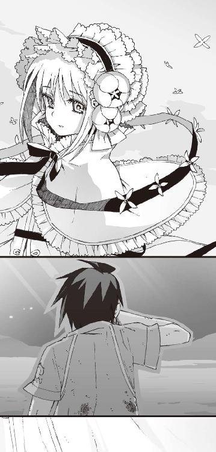
あとがき
そんなわけであとがきです。アスラクライン第七巻をお送りします。
長々と書いて余韻を壊しても困るので、今回のあとがきは短めで。
この『凍えて眠れ』は、一巻を書き始めるよりも前、シリーズの最初の段階から用意していたエピソードでした。ある意味、この作品を象徴するような、もっともアスラクラインらしい話になっていると思います。お楽しみいただければ幸いです。
六巻のあとがきでも予告したとおり、今回は（密かに）物語の大きな転換点になっています。
べつに雰囲気が変わったとかそういうことではなく、ようやく本来の姿が見えてきたという感じでしょうか。見えてくるのが遅えよ、という話もありますがそれはそれとして。
それからお詫びなのですが、この巻は本文がちょっと長くなってしまったので、巻末のおまけ企画がありません。もし楽しみにしてくれていた方がいたらごめんなさい。
アスラクラインの短編については、雑誌「電撃ｈｐ」で、『アスラクラインＫＬＥＩＮ』というタイトルで連載中です。本編だけで寂しく感じてしまった方は、ぜひこちらもご覧になってください。
また「電撃ｈｐ」では『アスラクライン・ヒロインズ』という連載企画も掲載させてもらっています。毎回アスラクラインに出てくる女性キャラ一人をピックアップして、詳しく紹介してしまおうという企画です。文庫では公開されない和狸さんの貴重なキャララフなども掲載されてますので、興味がある方はこちらもぜひ。
それでは最後になりましたが、本書の出版にあたりお世話になった皆様、またこの本を手にしてくださった読者の皆様、本当にありがとうございます。
次回はいよいよ夏休み篇です。智春にもそろそろ主人公らしい成長や活躍を期待したいところ。ご期待いただけるとありがたいです。それでは。三雲岳斗でした。
三雲岳斗
大分県出身横浜市在住。第五回電撃ゲーム小説大賞《銀賞》受賞作『コールド・ゲヘナ』でデビュー。ウスターソース好き。ご飯、パン、卵、焼き菓子、スイカは大抵ソースで食べる味覚音痴野郎。でも、ソーサラーと名乗ると魔法使いみたいでカッコいいと思う。
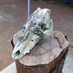
和狸ナオ
１９７６年生誕の千葉県民。くじ運は最低ながら本作の挿絵を描かせて頂き、実はすごく仕事運が良いのでは...?!と人生見直しております。遅咲きな絵描き兼ぬるいゲーマーですが、よろしくどうぞ。
電撃文庫
アスラクライン⑦
凍えて眠れ
三雲岳斗
二〇十二年八月二十四日 配信
発行者 塚田正晃
発行所 株式会社アスキー・メディアワークス
〒一〇二−八五八四 東京都千代田区富士見一−八−十九
(C)2007 GAKUTO MIKUMO／ASCII MEDIA WORKS
本書（電子版）に掲載されているコンテンツ（ソフトウェア／プログラム／データ／情報を含む）の著作権およびその他の権利は、すべて株式会社アスキー・メディアワークスおよび正当な権利を有する第三者に帰属しています。
法律の定めがある場合または権利者の明示的な承諾がある場合を除き、これらのコンテンツを複製・転載、改変・編集、翻案・翻訳、放送・出版、公衆送信（送信可能化を含む）・再配信、販売・頒布、貸与等に使用することはできません。